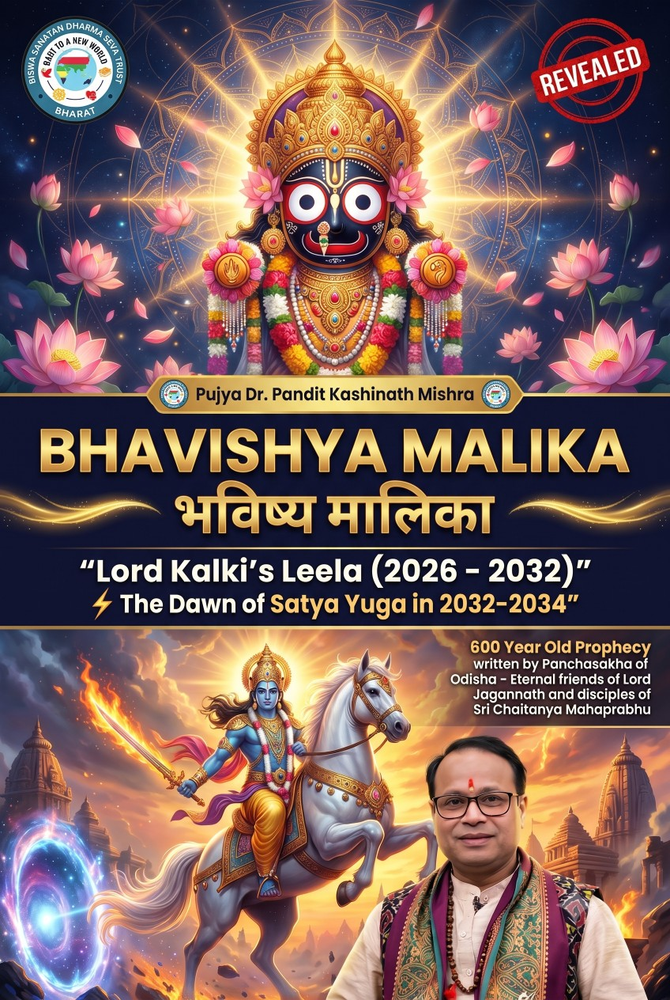
'S e cruinneachadh de cheudan de theacsaichean a th' ann am 'Bhavishya Malika' a chaidh a sgrìobhadh mu 600 bliadhna air ais leis na Panchasakhas (còig caraidean/com-pàirtichean) an Tighearna Shri Chaitanya Mahaprabhu. Dh'fhuirich na teacsaichean sin falaichte fad linntean, agus rè na h-ùine sin, dh'fhuirich a' mhòr-chuid de dhaoine gun fhios dhaibh. Ach, tharraing an sàr-chiclone a bhuail Odisha ann an 1999 aire mòran dhaoine gu 'Bhavishya Malika' oir bhathar ag ràdh gun robh na fàisneachdan a thaobh a' chiclone sin air an dèanamh mar-thà anns na teacsaichean sin.
A dh'aindeoin sin, air sgàth 's gun deach a sgrìobhadh ann an cànan Odia, dh'fhuirich am Bhavishya Malika cuingealaichte ri Odisha rè na h-ùine sin. Cha robh fios aig duine sam bith taobh a-muigh Odisha mu na teacsaichean sin. Ach mean air mhean, dh'atharraich amannan. Anns a' bhliadhna 2020, tharraing an galar lèir-sgaoilte COVID-19 aire dhaoine a-rithist gu Bhavishya Malika. Cha b' ann ach an dèidh a' ghalair lèir-sgaoilte seo a thòisich adhartachadh agus sgaoileadh teacsaichean Malika taobh a-muigh Odisha, agus tha am pròiseas seo air leantainn bhon uair sin.
Air sgàth seo, tha mìltean de dhaoine air tòiseachadh ag ionnsachadh mu Bhavishya Malika thar nan beagan bhliadhnaichean a dh'fhalbh. Ach, mar a thachras gu tric, còmhla ris an fhoillseachadh adhartach seo, thòisich mì-mhìneachadh agus mì-fhiosrachadh mu chuid de rannan Malika a' sgaoileadh cuideachd. Mar eisimpleir, thòisich cuid de dhaoine a' sgaoileadh fathannan gu bheil aois Kaliyuga 10,000 bliadhna; gum biodh ainm rìgh mu dheireadh Puri Mukunda Dev; gun tachradh prìomh thachartasan Malika agus na gnìomhan diadhaidh sgriosail (Sanhaar-Leela) an Tighearna Kalki rè an ath Meena-Shani Yoga (an ùine eadar 2054-57); nach eil sgìre Khandagiri ann am Bhubaneswar ach suidhichte an àiteigin eile; agus gu bheil fhathast mòran bhliadhnaichean air fhàgail ron toiseach Satyayuga, msaa.
Thòisich an leithid de mhì-fhiosrachadh a' cruthachadh mòran teagamhan ann an inntinnean nan diadhairean. Air sgàth dìth fuasglaidh ceart air na teagamhan sin, thòisich an creideamh aca anns a' Mhalika a' crìonadh. Is e prìomh amas an artaigil seo chan ann a-mhàin fiosrachadh ceart agus cruinn a thoirt do luchd-leughaidh ùr mu Bhavishya Malika ach cuideachd na teagamhan a tha ag èirigh ann an inntinnean nan diadhairean fhuasgladh. Tha dùil gun urrainn, le bhith a' faighinn an fhiosrachaidh cheart a thaobh nan eileamaidean bunaiteach sin, an fheadhainn dhìleas an creideamh anns a' Mhalika a neartachadh tuilleadh.
Eadar an 15mh agus an 16mh linn, rinn còignear naoimh mhòra a rugadh ann an Odisha (Shishu Ananta Das, Yashobanta Das, Achyutananda Das, Balarama Das, agus Jagannatha Das) na ceudan de theacsaichean mar sin anns an deach fàidheadaireachdan gun àireamh a sgrìobhadh. Thàinig na teacsaichean sin gu bhith aithnichte mar 'Bhavishya Malika'. Bha ceangal domhainn aig Sri Chaitanya Mahaprabhu, a rugadh ann an 1486 agus a bha air a mheas mar dhà-fhoillseachadh Bhagawan Sri Krishna agus Jaganmata Radharani, ris na còignear naoimh sin. Thug Sri Chaitanya Mahaprabhu 'Panchasakha' (Còignear Charaidean) air na còignear sin. Rinn na Panchasakhas sin na teacsaichean Malika le òrdugh Mahaprabhu fhèin. A bharrachd air na Panchasakhas, lean cuid de naoimh mhòra eile air adhart le traidisean sgrìobhadh Malika. Mar eisimpleir, an diadhaire Salabega a rugadh anns an 17mh linn, an Naomh Arkhit Das agus an Naomh Hadidas a rugadh anns an 18mh linn, an Naomh Bhima Bhoi bhon 19mh linn, Thakur Shri Abhiram Paramahansa bhon 20mh linn, msaa.
Chaidh fàidheadaireachdan mionaideach a sgrìobhadh anns na teacsaichean Malika seo air cuspairean leithid aois Kaliyuga, breith an Tighearna Kalki, sgrios nan aingidh, dìon nan diadhairean, stèidheachadh Dharma, agus teachd Satyayuga.
Sgrìobh aon de na Panchasakhas, Mahapurush Achyutananda Das, ann an aon de na teacsaichean Malika aige:
Sloka Odia:
ବଳବନ୍ତ ଯଶୋବନ୍ତ ଅନନ୍ତ ଅଚ୍ୟୁତ,
ଜଗନ୍ନାଥ ଦାସ ପଞ୍ଚସଖା ନାମେ ଖ୍ୟାତ।
Tar-sgrìobhadh:
Balabanta Yaśhobanta Ananta Achyuta,
Jagannātha Dāsa Pañchasakhā nāme khyāta.
Tha e cudromach a thoirt fa-near gu bheil eachdraidh nan Panchasakhas aosta. Aig deireadh gach linn (Yuga), thig na Panchasakhas a-nuas chun na Talmhainn, air am breith bho phàirt den Tighearna, gus an tabhartas luachmhor a thoirt seachad do mhisean an Tighearna airson Dharma ath-stèidheachadh.
Sgrìobh Mahapurush Achyutananda Das anns an teacsa Malika aige ‘Udaya Kahani’:
Sloka Odia:
ଆମ୍ଭେ ପଞ୍ଚସଖା ପଞ୍ଚକୁଳରେ,
ଜନମ ହୋଇଲୁ କୃଷ୍ଣ ଆଜ୍ଞାରେ।
ଯୁଗ
ଯୁଗରେ ଯେ ଜନମ ହେଉ,
କୃଷ୍ଣଲୀଳାମାନ ମୁଖରେ ଗାଉ।
Tar-sgrìobhadh:
Ambhe Pañchasakhā pañchakulare,
janama hoilu Kṛṣhṇa ājñāre.
yuga yugare je
janama heu,
Kṛṣhṇalīḷāmāna mukhare gau.
Tha Mahapurush Achyutananda Das, anns an teacsa Malika aige ‘Udaya Kahani’, a' toirt cunntas air na foirmean a ghabh na còignear naoimh mhòra ann an gach aon de na ceithir Yugas:
Sloka Odia:
ଆଦିଅନନ୍ତ ଯୁଗଟି ଅନ୍ତରେ, ସତ୍ୟ ପ୍ରବେଶ ହୋଇଲା ମହୀରେ।
ଅସୁର ବିନାଶ
କରିବା ପାଇଁ, ପ୍ରଭୁ ଜନମିଲେ ବ୍ରାହ୍ମଣେ ଯାଇଁ।
ପଞ୍ଚସଖା ଋଷିତନୁ ବହିଲେ, କୃପାଜଳ ଋଷି ଗାଗର୍ବ
ହେଲେ।
ମାର୍କଣ୍ଡ ଯେ ସ୍ୱୟଂଭୂ ନାରଦ, ପଞ୍ଚସଖା ଜନମ କହିଲି ଭେଦ।
ରାମ ଜନମ ତ୍ରେତୟା ଯୁଗରେ,
ତ୍ରେତୟା ଗୁଣ କହିଲେ ନ ସରେ।
ତ୍ରେତୟାରେ ନଳ ନୀଳ ସୁଷେଣ, ଜାମ୍ବବ ହନୁ
ପଞ୍ଚସଖାମାନ।
ତ୍ରେତୟା ଅନ୍ତେ ଦ୍ୱାପର ପ୍ରବେଶ, ଗୋପାଳ ମୂରତି ଶ୍ରୀକୃଷ୍ଣ
ବେଶ।
ପଞ୍ଚସଖାମାନେ ହେଲେ ଜନମ, ସୁବଳ ସୁବାହୁ ସୁଦାମ ଦାମ।
ଶ୍ରୀବତ୍ସ ଘେନି ପଞ୍ଚସଖା ହେଲେ,
ଦ୍ୱାପର ଲୀଳାମାନ ସାଙ୍ଗ କଲେ।
ଅବନୀ ମଧ୍ୟରେ ନାମ ସ୍ଥାପିଲେ, ହରିନାମରେ ଜଗତ
ମୋହିଲେ।
ସ୍ତ୍ରୀ ଶୂଦ୍ର ଆଦି ପାଷାଣ୍ଡ ଯେତେ, ହରିନାମ ଶୁଣି ହେଲେ ମୁକତେ।
ଆମ୍ଭେ ପଞ୍ଚସଖା
ଜନମ ହେଲୁ, ଅନନ୍ତ ଅଚ୍ୟୁତ ନାମ ବହିଲୁ।
ଜଗନ୍ନାଥ ଯଶୋବନ୍ତ ହୋଇଲେ, ପଞ୍ଚସଖା ମେଳ
ବଳରାମରେ।
ଏମନ୍ତ ନାମରେ ଆମ୍ଭେ ଜନମ, କହିଦେଲୁ ବାବୁ ତୋର ଆଗେଣ।
Tar-sgrìobhadh:
Adi Ananta Yugaṭi Antare, Satya Prabesha Hoilā Mahire.
Asura Bināsha Karibā Pāiñ,
Prabhu Janamile Brāhmaṇe Jāiñ.
Pañchasakhā Ṛuṣi Tanu Bahile, Kṛupājala Ṛuṣi Gāgarba
Hele.
Mārkaṇḍa Je Swayambhū Nārada, Pañchasakhā Janama Kahili Bheda.
Rāma
Janama Tretayā Yugare, Tretayā Guṇa Kahile Na Sare.
Tretayāre Naḷa Nīḷa Suṣeṇa,
Jāmbaba Hanu Pañchasakhāmāna.
Tretayā Ante Dwāpara Prabesha, Gopāḷa Mūrati Shrī
Kṛuṣṇa Besha.
Pañchasakhāmāne Hele Janama, Subaḷa Subāhu Sudāma
Dāma.
Shrībatsa Gheni Pañchasakhā Hele, Dwāpara Līḷāmāna Sāṅga Kale.
Abanī
Madhyare Nāma Sthāpile, Harināmare Jagata Mohile.
Strī Shūdra Ādi Pāṣāṇḍa Jete,
Harināma Shuṇi Hele Mukate.
Ambhe Pañchasakhā Janama Helu, Ananta Achyuta Nāma
Bahilu.
Jagannātha Jashobanta Hoile, Pañchasakhā Meḷa Baḷarāmare.
Emanta
Nāmare Ambhe Janama, Kahidelu bābu tora āgeṇa.
'S e sin, ann an seann amannan, aig deireadh an Ananta Yuga nuair a thòisich Satyayuga, rugadh an t-Ard-Thighearna ann an cruth Brahmin gus na deamhain a sgrios. Aig an àm sin, nochd na còignear naoimh bho chorp an Tighearna fhèin mar Shaoidhean: Kripajala, Garga (Gagarba), Markandeya, Swayambhu, agus Narada.
An dèidh Satyayuga, ann an Tretayuga, nuair a rinn an Tighearna gnìomhan gun àireamh na Rama-foillseachadh, thàinig na còignear charaidean seo a-nuas chun na Talmhainn ann an cruthan Nala, Nila, Sushena, Jambavan (Jambeba), agus Hanuman.
Aig deireadh Tretayuga, thàinig Dwaparyuga, agus rugadh an Tighearna ann an cruth a' bhuachaille, Shri Krishna. Rè na h-ùine seo, thàinig Subala, Subahu, Sudama, Dama, agus Shribatsa gu bhith nan Panchasakhas agus ghabh iad pàirt anns na gnìomhan diadhaidh le Shri Krishna.
A bharrachd air sin, ann an Kaliyuga, nuair a nochd an Tighearna na Chaitanya-foillseachadh, ghabh na còignear charaidean seo breith gus an t-ainm naomh (Hari-naam) a sgaoileadh, a' stèidheachadh slighe furasta agus sìmplidh gu saoradh airson a h-uile duine. Ann an Kaliyuga, thàinig iad gu bhith ainmeil mar Shishu Ananta Das, Achyutananda Das, Jagannatha Das, Yashobanta Das, agus Balarama Das.
Nuair a cheasnaich an deisciobal Ramadas ainmean sònraichte nan Panchasakhas thar nan ceithir linntean, thug Mahapurush Achyutananda Das an cunntas mionaideach seo seachad anns an teacsa Malika aige ‘Udaya Kahani’.
Sloka Odia:
ସତ୍ୟ ଯୁଗରେ ଋଷି କୃପାଜଳ, ତ୍ରେତୟା ସଖାଟି ଅଟଇ ନଳ।
ଦ୍ୱାପରେ ସୁଦାମ
ସଖାଟି ହୋଇ, କଳି ଯୁଗରେ ଅଚ୍ୟୁତ ବୋଲାଇ।
ଗାର୍ଗବ ଋଷି ସତ୍ୟ ଯୁଗରେ ହେଲେ, ତ୍ରେତୟା ଜାମ୍ବବ ନାମ
ବହିଲେ।
ଦ୍ୱାପରେ ସୁବାହୁ ବ୍ରଜ ଅଟନ୍ତି, ଯଶୋବନ୍ତ ନାମ କଳିରେ ପାନ୍ତି।
ସ୍ୱୟଂଭୂ ସତ୍ୟ
ଯୁଗରେ ସେ ଜାଣେ, ତ୍ରେତୟାରେ ଅଟେ ସେହି ସୁଷେଣ।
ଗୋପରେ ଶ୍ରୀବତ୍ସ ଦ୍ୱାପରେ ଜାତ, କଳି ଯୁଗରେ ନାମ
ଶିଶୁ ଅନନ୍ତ।
ସତ୍ୟ ଯୁଗରେ ସଖା ନାରଦ ଋଷି, ତ୍ରେତୟାରେ ନୀଳ ନାମ ପ୍ରକାଶି।
ଦାମ ଗୋପାଳ
ଦ୍ୱାପର ଯୁଗରେ, ବଳରାମ ଦାସ ନାମ କଳିରେ।
ମାର୍କଣ୍ଡ ଋଷି ଅଟେ ହନୁମାନ, ସୁବଳ ସଖାଟି ଦ୍ୱାପରେ
ପୁଣ।
ଜଗନ୍ନାଥ ନାମ କଳିରେ ହେଲେ, ପଞ୍ଚସଖା ନାମ ପ୍ରକାଶ କଲେ।
Tar-sgrìobhadh:
Satya Yugare Ṛuṣi Kṛupājala, Tretayā Sakhāṭi Aṭai Naḷa.
Dwāpare Sudāma Sakhāṭi Hoi,
Kaḷi Yugare Achyuta Bolāi.
Gārgaba Ṛuṣi Satya Yugare Hele, Tretayā Jāmbaba Nāma
Bahile.
Dwāpare Subāhu Braja Aṭanti, Jashobanta Nāma Kaḷire Pānti.
Swayambhū
Satya Yugare Se Jāṇe, Tretayāre Aṭe Sehi Suṣeṇa.
Gopare Shrībatsa Dwāpare Jāta,
Kaḷi Yugare Nāma Shishu Ananta.
Satya Yugare Sakhā Nārada Ṛuṣi, Tretayāre Nīḷa Nāma
Prakāshi.
Dāma Gopāḷa Dwāpara Yugare, Baḷarāma Dāsa Nāma Kaḷire.
Mārkaṇḍa Ṛuṣi
Aṭe Hanumāna, Subaḷa Sakhāṭi Dwāpare Puṇa.
Jagannātha Nāma Kaḷire Hele, Pañchasakhā
Nāma Prakāsha Kale.
Bha na Panchasakhas nan naoimh uile-eòlach, fèin-choileanta, agus Dia-choileanta. Bha iad nan Yogis àrd-ìre, luchd-siridh, agus diadhairean, gach fear a' sàr-mhathachadh ann an raon eadar-dhealaichte de shaidheans spioradail. Tha Mahapurush Achyutananda Das a' toirt cunntas air seo na Malika:
Sloka Odia:
ଆଗମ୍ୟ ଭାବ ଜାଣେ ଯଶୋବନ୍ତ,
ଗାର କଟା ଯନ୍ତ୍ର ଜାଣେ ଅନନ୍ତ।
ଆଗତ
ଅନାଗତ ଅଚ୍ୟୁତ ଭଣେ,
ବଳରାମ ଦାସ ତତ୍ତ୍ୱ ବଖାଣେ।
ଭକ୍ତିର ଭାବ ଜାଣେ
ଜଗନ୍ନାଥ,
ପଞ୍ଚସଖା ଏ ଓଡ଼ିଶା ମହନ୍ତ।
Tar-sgrìobhadh:
Āgamya Bhāba Jāṇe Jashobanta,
Gāra Kaṭā Jantra Jāṇe Ananta.
Āgata Anāgata
Achyuta Bhaṇe,
Baḷarāma Dāsa Tattwa Bakhāṇe.
Bhaktira Bhāba Jāṇe
Jagannātha,
Pañchasakhā E Oḍiśā Mahanta.
Stèidhich na Panchasakhas an cuid Peethas agus bothain-cràbhaidh aig còig àiteachan eadar-dhealaichte air feadh Odisha. Tha Mahapurush Achyutananda Das a' toirt cunntas air seo anns an teacsa Malika aige ‘Chakada Madana’:
Sloka Odia:
ନେମାଳେ ଅଚ୍ୟୁତ ଅଢ଼ଙ୍ଗେ ଯଶୋବନ୍ତ, ବାଲିପାଟଣାରେ ରହିଲେ ଅନନ୍ତ।
ସାତ
ଲହଡ଼ିରେ ଜଗନ୍ନାଥ ରହି, କ୍ଷେତ୍ରବରେ ବଳବନ୍ତ।
Tar-sgrìobhadh:
Nemāḷe Achyuta Aḍhaṅge Jashobanta, Bālipāṭaṇāre rahiḷe Ananta.
Sāta Lahaḍire
Jagannātha rahi, Khetrabare Baḷabanta.
Tha na Panchasakhas air iomradh a thoirt iomadh uair anns na teacsaichean Malika aca gur e ionchòrpaidhean pàirteach (Anshavatar) den Ard-Thighearna Fhèin a th' annta. Tha Mahapurush Shishu Ananta Das a' sgrìobhadh anns an teacsa aige 'Chumbak Malika':
Sloka Odia:
ଅଚ୍ୟୁତ ବୋଲିଣ କଳିଯୁଗେ ନାମ ସୁଦାମ ସଖା ଅଟନ୍ତି,
ଶ୍ରୀଅଙ୍ଗରୁ ଜାତ
କଟିରୁ ଭକତ ଶୁଣ ହୋ ବାରଙ୍ଗ ଚେତି।
ମୁଖୁଁ ଯଶୋବନ୍ତ ହୃଦୁଁ ଆମ୍ଭେ ଜାତ ବାହୁ ମୂଁଳୁ
ବଳରାମ,
ରାଧାଙ୍କ ହାସ୍ୟରୁ ଜଗନ୍ନାଥ ଦାସ ବାରଙ୍ଗ ହେତୁରେ ଘେନ।
Tar-sgrìobhadh:
Achyuta boliṇa Kaḷiyuge nāma Sudāma sakhā aṭanti,
Shrī-aṅgaru jāta kaṭiru bhakata
shuṇa ho Bāraṅga cheti.
Mukhuṃ Jashobanta hṛuduṃ ambhe jāta bāhu mūṃḷu
Baḷarāma,
Rādhāṅka hāsyaru Jagannātha Dāsa Bāraṅga heture ghena.
Chan e a-mhàin Shishu Ananta Das ji, ach tha Mahapurush Achyutananda Das cuideachd air sgrìobhadh mu dheidhinn seo anns an teacsa Malika aige, 'Chakada Madana'. Tha am Mahapurush a' sgrìobhadh:
Sloka Odia:
ନିରାକାର ଦେହୁ ପାଞ୍ଚଟି ଜ୍ୟୋତି,
ଅଚ୍ୟୁତ ଅନନ୍ତ ପଞ୍ଚକ
ମୂରତି।
ଯଶୋବନ୍ତ ଜଗନ୍ନାଥ ବଳରାମ,
ଜନମ ହୋଇଲୁ ଏ ମର୍ତ୍ତ୍ୟ ଧାମ।
Tar-sgrìobhadh:
Nirākāra dehu pāṃchaṭi jyoti,
Achyuta Anaṃta paṃchaka mūrati.
Jashobaṃta
Jagannātha Balarāma,
janama hoilu e martya dhāma.
Tha Mahapurush Achyutananda Das a' sgrìobhadh anns an teacsa Malika, 'Barnatika':
Sloka Odia:
ଶ୍ରୀ କୃଷ୍ଣ ଶରୀର ପଞ୍ଚଭୂତରୁ,
ପଞ୍ଚସଖା ଜନ୍ମ କହିଛି ଗୁରୁ।
Tar-sgrìobhadh:
Shrī Kṛiṣhṇa sharīra paṃchabhūtaru,
paṃchasakhā janma kahichi guru.
Thathas a' meas gu bheil rannan an Malika mar fhaclan Mahaprabhu Fhèin. Tha aon de na Panchasakhas, Mahapurush Achyutananda Das, a' sgrìobhadh anns an teacsa Malika aige ‘Shiva-kalpa Nabakhanda Nirghanta’:
Sloka Odia:
ମୁଁ କହୁଛି ବୋଲି ମୋର କଥା ନୁହେଁ ଆଦ୍ୟୁଁ ଖଞ୍ଜିଛନ୍ତି ଧାତା,
କର୍ମବାମ
ହେଲେ କଳ୍ପନା ଗ୍ରାସିବ ପ୍ରକୃତି କାଟିବେ ଚିତା।
Tar-sgrìobhadh:
Muṃ kahuchi boli mora kathā nuheṃ ādyuṃ khañjichanti dhātā,
Karmabāma hele kalpanā
grāsiba prakṛuti kāṭibe chitā.
Dh'innis Mahapurush Shishu Ananta Das cuideachd dha dheisciobal ann an ‘Patta Madana’:
Sloka Odia:
ଆହୁରି କଥାଏ ଶୁଣରେ ବାରଙ୍ଗ ହେତୁରଖ ଯାକୁସାର,
ଭାବବିନୋଦିଆ ହରିଙ୍କ ଏ
ବାଣୀ ଅଟେ ସିନା ଅଗୋଚର।
Tar-sgrìobhadh:
Āhuri kathāe shuṇare Bāraṅga heturakha jākusāra,
Bhābabinodiā Hariṅka e bāṇī aṭe
sinā agochara.
Sgrìobh Mahapurush Achyutananda Das anns an teacsa Malika aige, 'Anakara Samhita':
Sloka Odia:
ଛତିଶ ସଂହିତା ଅଠସ୍ତରୀ ଗୀତା ବଂଶାନୁ ସପ୍ତବିଂଶରେ,
ଉପବଂଶାନୁ ଦ୍ୱାଦଶ
ଖଣ୍ଡ ବେନି ଭବିଷ୍ୟ ଶତ ଖଣ୍ଡ ରେ।
ପଦ ପଦ୍ୟାବଳି ଲକ୍ଷେକ ଯେ ଗ୍ରନ୍ଥ ସବୁ ଶ୍ରୀକୃଷ୍ଣ
ମହିମା,
ତୋ ଆଗେ କହିଲୁଁ ବ୍ରଜ କୁମର ବ୍ରହ୍ମ ସାରସ୍ୱତ ସୀମା।
Tar-sgrìobhadh:
Chatisha saṃhitā aṭhastarī gītā baṃshānu saptabiṃshare,
upabaṃshānu dwādasha khaṃḍa
beni bhabiṣhya shata khaṃḍa re.
Pada padyābali lakṣheka je graṃtha sabu Shrīkṛiṣhṇa
mahimā,
to āge kahilu braja kumara brahma sāraswata sīmā.
Sgrìobh Mahapurush Achyutananda Das anns an teacsa Malika aige, 'Shibakalpa Nabakhanda Nirghanta':
Sloka Odia:
ଶ୍ରୀରଙ୍ଗା ଚରଣ ବିନୁ ନ ଜାଣଇ ନୀଳାଚଳେ ମନ ମୋର,
ତାଙ୍କ କଥାମାନ ଉଲ୍ଲେଖ
କରଇ ନ କହେ ଅଚ୍ୟୁତ ଛାର।
Tar-sgrìobhadh:
Shrī raṃgācharaṇa binu na jāṇai nīlāchale mana mora,
tāṃka kathāmāna ullekha karai
na kahe Achyuta chāra.
Sgrìobh Mahapurush Achyutananda Das a-rithist anns an teacsa Malika aige, 'Parardha Jataka':
Sloka Odia:
ପ୍ରଭୁଙ୍କର ଆଜ୍ଞା ହେଲା ଯେପରି,
ଆମ୍ଭେ ଲେଖିଲୁ ପୋଥି ସେହିପରି।
Tar-sgrìobhadh:
Prabhunkara ājñā helā jepari,
āmbhe lekhilu pothi sehipari.
Sgrìobh Achyutanandaji anns an 'Agata Bhabishya Prabandha Malika' aige:
Sloka Odia:
ଶ୍ରୀ ମୁଖରୁ ଯାହା ମୋତେ ଆଜ୍ଞା ହେଉଅଛି,
ସେହି ପଦମାନ ସବୁ ପୁରାଣେ
ଲେଖୁଛି।
Tar-sgrìobhadh:
Shrī mukharu jāhā mote ājñā heuachi,
sehi padamāna sabu purāṇe lekhuchi.
Tha Mahapurush Achyutananda Das a' sgrìobhadh ann an ‘Shiva-kalpa Nabakhanda Nirghanta’:
Sloka Odia:
ଯୋଗୀମାନେ ଯୋଗ ଅନ୍ତ ନ ପାଇବେ ଆଉ କେବା ସାମରଥା।
Tar-sgrìobhadh:
Yogīmāne yoga anta na pāibe āu kebā sāmarathā.
Tha Achyutananda Das a' sgrìobhadh tuilleadh a thaobh nàdar còdaichte an teacsa:
Sloka Odia:
ଓଲଟ ପାଲଟ କକ୍ଷା ଏହି ଅଙ୍କ, କର ହୃଦେ ତୁହି ଠାବ।
କଳିଯୁଗ ଲୀଳା ଶେଷ ଯେ
ହୋଇବ, ମସିହାରେ ନାହିଁ ଠାବ।
Tar-sgrìobhadh:
Olaṭa pālaṭa kakshā ehi aṅka, kara hṛude tuhi ṭhāba.
Kaḷiyuga līḷā shesha je hoiba,
masihāre nāhiṃ ṭhāba.
A thaobh breith Kalki, tha e a' sgrìobhadh:
Sloka Odia:
ଗୁପତରେ ଆମ୍ଭେ ଜନମ ହେବୁ,
ଗୁପତରେ ସନ୍ ସାଲ ଚାଲିବୁ।
ଗୁପତ ଭକତ
ଜାଣନ୍ତି ଯାହା,
ଗୁପତ ଅଙ୍କ ଏ ଅଟେ ଏହା।
ଗୁପତରେ କେତେ ଖେଳ କରିବୁ,
ଗୁପତ ଅଙ୍କକୁ
ଚଳାଇ ଥିବୁ।
ମୋର ଭକତଟି ଜାଣିବେ ସେହି,
ଗୁପତ ଅଙ୍କ ବୋଲିଟି ଯେ ଏହି।
ଗୁପତ ଗୁପତ ଅତି
ଗୁପତ,
କହୁଅଛନ୍ତି ସେ ଦୀନ ଅଚ୍ୟୁତ।
Tar-sgrìobhadh:
Gupatare ambhe janama hebu,
gupatare san sāla chālibu.
Gupata bhakata jāṇanti
jāhā,
gupata aṅka e aṭe ehā.
Gupatare kete kheḷa karibu,
gupata aṅkaku
chaḷāi thibu.
Mora bhakataṭi jāṇibe sehi,
gupata aṅka boliṭi ye
ehi.
Gupata gupata ati gupata,
kahuachanti se dīna Achyuta.
Sgrìobhaidh Mahapurush Achyutananda Das anns an teacsa Malika aige, 'Chakada Madana':
Sloka Odia:
ଗୁପତ ଗୁପତ ଏ ମହା ଗୁପତ ଆନେ ନ କହିବୁ ତୁହି,
ଦୀନ ଅଚ୍ୟୁତ ଯେ ଗୀତରେ
କହଇ ମୋ ପାଦକୁ ଥାଅ ଛୁଇଁ।
Tar-sgrìobhadh:
Gupata gupata e mahā gupata āne na kahibu tuhi,
dīna Achyuta je gītare kahai mo
pādaku thāa chuiṃ.
Ann an teacsa eile, tha am Mahapurush ag ràdh ri a dheisciobal Ramadasa:
Sloka Odia:
କଳ୍କୀ ପ୍ରକାଶ ହେଲେ ତୋହ ମୋହ ଦେଖା,
ତେରଜଣ ମଧ୍ୟେ ଥିବୁ ଆମ୍ଭେ
ପଞ୍ଚସଖା।
ଗୁପତ ଅତି ଗୁପତ ଅଟଇ ହେ ରାମ,
କହୁଅଛି ବ୍ରଜ ବାଳ ହେତୁରେ ତୁ ଘେନ।
Tar-sgrìobhadh:
Kalki prakāsha hele toha moha dekhā,
terajaṇa madhye thibu āmbhe
pañchasakhā.
Gupata ati gupata aṭai he Rāma,
kahuachi braja bāla heture tu
ghena.
Sgrìobhaidh am Mahapurush a-rithist:
Sloka Odia:
ଗୁପତ ଗୁପତ ଏ ମହା ଗୁପତ ଶୁଣ ତୁ ରେ ରାମଚନ୍ଦ୍ର,
ବ୍ରହ୍ମା ଶଙ୍କରକୁ ଭେଦ
ତ ନଥିବ ନ ଜାଣିବେ ଇନ୍ଦ୍ର ଚନ୍ଦ୍ର।
Tar-sgrìobhadh:
Gupata gupata e mahā gupata shuṇa tu re Rāmachandra,
Brahmā Shaṅkaraku bheda ta
nathiba na jāṇibe Indra Chandra.
Tha Sant Bhima Bhoi cuideachd air sgrìobhadh air a' chuspair seo anns an teacsa Malika aige, 'Stuti Chintamani':
Sloka Odia:
ସଂସାର ମଧ୍ୟରେ କେମନ୍ତେ ଜାଣିବେ ନର ଅଙ୍ଗେ ଦେହ ବହି,
ଗତ ଆଗତ ଯୁଗର
ବ୍ୟବସ୍ଥା ସମସ୍ତଙ୍କୁ ଜଣାନାହିଁ।
Tar-sgrìobhadh:
Saṃsāra madhyare kemaṃte jāṇibe nara aṅge deha bahi,
gata āgata yugara byabasthā
samastaṃku jaṇānāhiṃ.
A-nis tha a' cheist ag èirigh, cò iad na luchd-adhraidh sin den Tighearna bho linntean roimhe air a bheil an Tighearna a' toirt a ghràis agus a chreideas ann am faclan na Malika, a bhios comasach air eòlas fhaighinn orra, agus aig am bi eòlas ceart a thaobh deireadh Kali Yuga agus an Kalki avatar!
Thug Mahapurush Achyutananda Das am freagairt dha seo anns an teacsa Malika aige, 'Shibakalpa Nabakhanda Nirghanta'. Sgrìobhaidh am Mahapurush:
Sloka Odia:
କୋଟିକେ ଗୋଟିଏ ଜାଣନ୍ତି ଏ ରସ ତିନି ସସ୍ରେ ଗଣାସେହି,
ମହିମା ପ୍ରକାଶ
ନିଶ୍ଚେ ସେହି ଦାସ ଆନେ ମୁଁ କହନ୍ତି ନାହିଁ।
Tar-sgrìobhadh:
Koṭike goṭie jāṇaṃti e rasa tini sasre gaṇāसेhi,
mahimā prakāsha nishche sehi dāsa
āne muṃ kahaṃti nāhiṃ.
Tha Bhavishya Malika air a dhèanamh suas de fhaclan an Tighearna Fhèin, agus mar sin chan eil ceist ann gun tèid iad air fàiligeadh. Anns an teacsa Malika ‘Chakada Madana’, sgrìobhaidh Mahapurush Achyutananda Das:
Sloka Odia:
ପୃଥିବୀ ଦୁଇଫାଳ ହେଲେ ହୋଇବ, ପୂର୍ବ ସୂର୍ଯ୍ୟ ଅବା ପଶ୍ଚିମେ ଯିବ।
ପର୍ବତ
ଶିଖରେ ଫୁଟିବ କଇଁ, ଅଚ୍ୟୁତ ବଚନ ମିଥ୍ୟା ନୁହଇଁ।
ଅଚ୍ୟୁତର ବାଣୀ ଅଟେ ପଥରର ଗାର, ଆନ କରିବାକୁ
ନାହିଁ କ୍ଷମତା କାହାର।
Tar-sgrìobhadh:
Pṛuthibī duiphāḷa hele hoiba, pūrba sūrya abā pashchime jiba.
Parbata shikhare
phuṭiba kaiñ, Achyuta bachana mithyā nuhaiñ.
Achyutara bāṇī aṭe patharara gāra, āna
karibāku nāhiñ khyamatā kāhāra.
Ann an ‘Shiva-kalpa Nabakhanda Nirghanta’, sgrìobhaidh e:
Sloka Odia:
ସୀତା ଠାକୁରାଣୀ ଅସତୀ ହୋଇବେ ପର୍ବତେ ଫୁଟିବ କଇଁ,
ଅଚ୍ୟୁତ ବଚନ ତିଳେ ନ
ଟଳିବ ପାଷାଣର ଗାର ଏହି।
Tar-sgrìobhadh:
Sītā ṭhākurāṇī asatī hoibe parbate phuṭiba kaiñ,
Achyuta bachana tiḷe na taḷiba
pāṣāṇara gāra ehi.
Sloka Odia:
ଏ କଥା ଯେବେ ନ ହୋଇବ, ଆମ୍ଭ ଶ୍ରୀମୁଖ ମିଥ୍ୟା ହେବ।
Tar-sgrìobhadh:
E kathā jebe na hoiba, ambha Shrīmukha mithyā heba.
Sgrìobh am Mahapurush a-rithist ann an 'Chakada Madana':
Sloka Odia:
ଶ୍ରୀ ଅଚ୍ୟୁତୀ ବାଣୀ ପଥରର ଗାର ପର୍ବତେ ଫୁଟିବ କଇଁ,
ପୂର୍ବ ସୂର୍ଯ୍ୟ
ଅବା ପଶ୍ଚିମକୁ ଯିବ ମୋ ବଚନ ସତ୍ୟ ଏହି।
Tar-sgrìobhadh:
Shrī Achyuta bāṇī patharara gāra parbate phuṭiba kaiṃ,
pūrba sūrya abā pashchimaku
jiba mo bachana satya ehi.
Rinn incarnation de Achyutananda Das ji, Sant Hadi Das, a rugadh san 18mh linn faisg air Chatia ann an sgìre Jajpur ann an Odisha, mòran theacsaichean Malika cuideachd.
Anns an teacsa Malika aige 'Kali Chautisha', sgrìobh e:
Sloka Odia:
ଟଳିବ ନାହିଁଟି ଏ କଥା ନିଶ୍ଚେ ହୋଇବ ଦିନେ,
ଟାକି ରହିଛନ୍ତି ଭରସା କରି
ଭକତମାନେ।
Tar-sgrìobhadh:
Ṭaliba nāhiṃṭi e kathā nishche hoiba dine,
ṭāki rahichaṃti bharasā kari
bhakatamāne.
Sgrìobh Mahapurush Achyutananda Das a-rithist anns an teacsa Malika aige, 'Agata Bhabishyat Malika':
Sloka Odia:
ଅଚ୍ୟୁତ ଦାସ ବାରମ୍ବାର,
ବୁଝାଏ ଭକତଙ୍କୁ ଧୀର।
ନମଣ ଏହାକୁ ଯେ
ଆନ,
ଅଚ୍ୟୁତ ଦାସ କରେ ଧ୍ୟାନ।
କଳି କଳ୍ମଷ ନାଶଯିବ,
ଅଚ୍ୟୁତ ବାକ୍ୟ ନ
ଟଳିବ।
ଅନନ୍ତ ଅଚ୍ୟୁତଙ୍କ ଲୀଳା,
ସାରିବେ ପ୍ରଭୁ ଚକାଡୋଳା।
Tar-sgrìobhadh:
Achyuta dāsa bārambāra,
bujhāe bhakataṃku dhīra.
Namaṇa ehāku je
āna,
Achyuta dāsa kare dhyāna.
Kali kalmaṣha nāshajiba,
Achyuta bākya na
ṭaliba.
Anaṃta Achyutanka līlā,
sāribe prabhu chakāḍolā.
Sgrìobh am Mahapurush a-rithist ann an aon de na teacsaichean Malika aige:
Sloka Odia:
ଅମୃତ ଭକ୍ଷି ଯାଇପାରେ ପ୍ରାଣ,
ଅଚ୍ୟୁତ ବଚନ ନୋହିବ ଆନ।
Tar-sgrìobhadh:
Amṛita bhakṣhi jāipāre prāṇa,
Achyuta bachana nohiba āna.
Sgrìobhaidh Mahapurush Achyutananda Das anns an 'Udaya Kahani' aige:
Sloka Odia:
ଅଚ୍ୟୁତ ବଚନ ଆନ ନୋହିବ,
କହିଲେ ଅପ୍ରାଧ ନିଶ୍ଚେ ପାଇବ।
Tar-sgrìobhadh:
Achyuta bachana āna nohiba,
kahile aparādha nishche pāiba.
Sgrìobhaidh am Mahapurush ann an 'Chakada Madana':
Sloka Odia:
ମୋ ଶ୍ରୀମୁଖ ବାଣୀ ଅନ୍ୟଥା ନୋହିବ ପର୍ବତେ ଫୁଟିବ କଇଁ,
ନେମାଳ ବଟକୁ ଲୟ
ଲଗାଇଣ ଦୀନ ଅଚ୍ୟୁତୀ କହଇ।
Tar-sgrìobhadh:
Mo shrīmukha bāṇī anyathā nohiba parbate phuṭiba kaiṃ,
Nemāla baṭaku laya lagāiṇa
dīna Achyutī kahai.
Anns an teacsa Malika 'Chakada Madana' fhèin, sgrìobh Mahapurush Achyutananda Das a-rithist:
Sloka Odia:
ମହୀଫାଟି ଜଳୁପଛେ ପ୍ରଳୟ ଅନଳ,
ଯାହା କହିଛନ୍ତି ତାହା ସର୍ବଦା ଅଚଳ।
Tar-sgrìobhadh:
Mahīphāṭi jalupache pralaya anala,
jāhā kahichaṃti tāhā sarbadā achala.
Gu tric, bidh mòran dhaoine a' fàs eagalach an dèidh dhaibh fàidheadaireachdan na Malika a leughadh agus gan cur às mar "innleachdan eagalach." Ach, tha an smaoineachadh seo gu tur ceàrr. Is e am prìomh amas dìon spioradail agus stiùireadh luchd-adhraidh tro ghluasad nan linntean.
Sgrìobhaidh Mahapurush Achyutananda Das anns an teacsa Malika aige ‘Shiva-kalpa Nabakhanda Nirghanta’:
Sloka Odia:
ହେତୁ ରସାଇବା ପାଇଁକି ଅଚ୍ୟୁତ ଶାହାସ୍ତ୍ର ପୁରାଣ କଲା,
କଳିକାଳଠାରୁ ବଳି
କାଳ ଯହିଁ ହକ କଥାଟା ଲେଖିଲା।
Tar-sgrìobhadh:
Hetu rasāibā pāiṃki Achyuta shāhāstra purāṇa kalā,
kalikālaṭhāru bali kāla jahiṃ
haka kathāṭā lekhilā.
Sgrìobhaidh Mahapurush Achyutananda Das a-rithist:
Sloka Odia:
ଅବନୀକୁ ଚେତେଇବା ପାଇଁ ଚେତାବନୀ,
ଅବନୀ ହିତେ ଲେଖା ଏ ଭବିଷ୍ୟ ବାଣୀ।
Tar-sgrìobhadh:
Abanīku cheteibā pāiñ chetābanī,
Abanī hite lekhā e bhabishya bāṇī.
Sgrìobhaidh am Mahapurush a-rithist ann an ‘Chakada Madana’:
Sloka Odia:
ପୂର୍ବର ବାସନା ମୂଳେ ଜ୍ଞାନ ଉଦୟ ହେଲା,
ଭକ୍ତଙ୍କ ହିତରେ ମାଳିକା ଗ୍ରନ୍ଥ
ଲେଖି ରଖିଲା।
Tar-sgrìobhadh:
Pūrbara bāsanā mūḷe jñāna udaya helā,
Bhaktanka hitare Māḷikā grantha lekhi
rakhilā.
Sgrìobhaidh am Mahapurush a-rithist ann an ‘Chakada Madana’:
Sloka Odia:
ଚକଡ଼ା ମଡ଼ାଣ ସତର୍କ ଘଣ୍ଟି ଯେ ଚେତାବନୀ ଏହି ଜାଣ।
Tar-sgrìobhadh:
Chakaḍā Maḍāṇa satarka ghaṇṭi je chetābanī ehi jāṇa.
Sgrìobh am Mahapurush tuilleadh:
Sloka Odia:
ସାରସ୍ୱତ ଗ୍ରନ୍ଥ ଏହି ଚେତାବନୀ ପୁଣ,
ବାରଣ ବେଳେ ପ୍ରକାଶ ଭକ୍ତ ହିତେ
ପୁଣ।
Tar-sgrìobhadh:
Sāraswata grantha ehi chetābanī puṇa,
bāraṇa beḷe prakāsha bhakta hite puṇa.
Bu chòir dhuinn fios a bhith againn gu math nach eil am Malika airson a h-uile duine. Tha na Panchasakha Mahapurushas air casg a chuir air an luchd-leanmhainn aca ann an teacsaichean Malika bho bhith a' sgaoileadh nam faclan seo roimh amadain. Thuirt am Mahapurush nach eil iad seo airson a h-uile duine; chan urrainn dha a h-uile duine an tuigsinn. Cha bhith ach luchd-adhraidh an Tighearna comasach air creidsinn annta.
Tha am Mahapurush Achyutananda Das a' sgrìobhadh anns an teacsa Malika aige ‘Chakada Madana’:
Sloka Odia:
ଲକ୍ଷେ ପଞ୍ଚାଅଶୀ ଗ୍ରନ୍ଥ କଳିପୁଣି ଆଗତ ଭବିଷ୍ୟ ବାଣୀ,
ଭକତ ହିତରେ
ପ୍ରକାଶ କରିଲି ଦୀନ ଅଚ୍ୟୁତ ଯେ ଭଣି।
Tar-sgrìobhadh:
Lakshe pañchāashī grantha kaḷi puṇi āgata bhabishyabāṇī,
Bhakata hitare prakāsha
karili dīna Achyuta je bhaṇi.
Tha Achyutananda Das an uairsin ag ràdh ris an deisciobal aige Ramadas anns an teacsa Malika aige ‘Chakada Madana’:
Sloka Odia:
ଶୁଣ ରାମଚନ୍ଦ୍ର ଏ ପରମତତ୍ତ୍ୱ ମୂର୍ଖକୁ ନ କର ପ୍ରକାଶ,
ତତେ ସପ୍ତବାର
ନିୟମ ଦେଉଛି କହଇ ଦୀନ ଅଚ୍ୟୁତ।
ଲକ୍ଷେ ପଞ୍ଚାଅଶୀ ତିନି ଅଠର ମାଳିକା କଲି ପ୍ରକାଶ,
ବାରଣ
ବେଳକୁ ଏ ଗ୍ରନ୍ଥ ରଖିଛି ଜ୍ଞାନୀ ଜନଙ୍କ ପୀୟୂଷ।
Tar-sgrìobhadh:
Shuṇa Rāmachandra e paramatattwa mūrkhaku na kara prakāsha,
tate saptabāra niyama
deuchi kahai dīna Achyuta.
Lakshe pañchāashī tini aṭhara mālikā kali
prakāsha,
bāraṇa beḷaku e grantha rakhichi jñānī janaṅka pīyūṣa.
Sgrìobh am Mahapurush Achyutananda Das ann an ‘Chakada Madana’:
Sloka Odia:
ହୋଇବ ଡାକିନୀ ଗୋଳ ପଡ଼ିବ ଚହଳ,
ଅବନୀ କମ୍ପିବ ସଦା ହୋଇ
ଟଳଟଳ।
ନାନା ଉତ୍ପାତ ମାନ ଅନ୍ତରୀକ୍ଷେ ହେବ,
ଭକ୍ତ ବିନା ଅନ୍ୟ କେହି ଜାଣି ନ ପାରିବ।
Tar-sgrìobhadh:
Hoiba ḍākinī goḷa paḍiba chahaḷa,
Abanī kampiba sadā hoi taḷataḷa.
Nānā utpāta
māna antarikṣe heba,
Bhakta binā anya kehi jāṇi na pāriba.
Tha am Mahapurush ag ràdh ris an deisciobal Ramadas anns an teacsa Malika aige ‘Chakada Madana’:
Sloka Odia:
ଶୁଣ ବାବୁରାମ ଚକଡ଼ା ମଡ଼ାଣ ମୂର୍ଖଙ୍କୁ କହିବୁ ନାହିଁ,
ଘୋର କଳିକାଳ
ଟାହି ଯେ ଟାପରା ବାନା ନିନ୍ଦା ହେବ ତହିଁ।
Tar-sgrìobhadh:
Shuṇa Bāburāma Chakaḍā Maḍāṇa mūrkhanku kahibu nāhiñ,
Ghora Kaḷikāḷa ṭāhi je ṭāparā
bānā nindā heba tahiñ.
Sgrìobh am Mahapurush Achyutananda Das a-rithist anns an teacsa Malika aige ‘Chakada Madana’:
Sloka Odia:
ମୂର୍ଖଙ୍କୁ ଏ ଗ୍ରନ୍ଥ ଅଟଇଟି ବିଷ ଜ୍ଞାନୀଙ୍କୁ ଅଟେ ପିୟୂଷ,
ଅଜ୍ଞାନୀ
ଆଗରେ ପ୍ରକାଶ କରିଲେ ମୋ ଅମୃତେ ହେବ ବିଷ।
Tar-sgrìobhadh:
Mūrkhanku e grantha aṭaiṭi biṣa jñānīnku aṭe piyūṣa,
Ajñānī āgare prakāsha karile
mo amṛute heba biṣa.
Sgrìobh am Mahapurush Achyutananda Das aon uair eile ann an ‘Chakada Madana’:
Sloka Odia:
ଶୁଣ ରାମଚନ୍ଦ୍ର କହୁଛି ଏହି ନିଷ୍ଠା ବଚନ,
ଚକଡ଼ା ମଡ଼ାଣ ଅଟଇ ଭକ୍ତଙ୍କ
ଗଣ୍ଠିଧନ।
ବାରଣ ବେଳକୁ ରଖିଛି ଏହା ଭକ୍ତଙ୍କ ପାଇଁ,
ଗୁପତରେ ଖେଳ ହୋଇବ ତୋତେ ଦେଲି
ଚେତେଇ।
ଗଣ୍ଠିଆ ଭକତ ଅଟଇ ଗଣ୍ଠି କଥାରେ ମନ,
ସାତଶ ବାସ୍ତରୀ ପରାର୍ଦ୍ଧ ଭବିଷ୍ୟତ
ପୁରାଣ।
ଧର୍ମ ସଂସ୍ଥାପନ ହୋଇବ ଭକ୍ତ ହେବେ ମୁକତ,
ଶୁଣ ରାମଚନ୍ଦ୍ର ଦାସରେ ମୋର ବଚନ ସତ୍ୟ।
Tar-sgrìobhadh:
Shuṇa Rāmachandra kahuchi ehi niṣṭhā bachana,
Chakaḍā Maḍāṇa aṭai bhaktaṅka
gaṇṭhidhana.
Bāraṇa beḷaku rakhichi ehā bhaktaṅka pāiṃ,
Gupatare kheḷa hoiba
tote deli chetei.
Gaṇṭhiā bhakata aṭai gaṇṭhi kathāre mana,
Sātasha bāstarī
parārddha bhabishyata purāṇa.
Dharma saṃsthāpana hoiba bhakta hebe
mukata,
Shuṇa Rāmachandra dāsare mora bachana satya.
Sgrìobh am Mahapurush Achyutananda Das tuilleadh anns an teacsa Malika aige ‘Chakada Madana’:
Sloka Odia:
ନେମାଳ ବଟକୁ ଲୟ ଲଗେଇ,
ଚକଡ଼ା ମଡ଼ାଣ ଖେଦା ଲେଖଇ।
ସାରସ୍ୱତ
ଗ୍ରନ୍ଥ ଅଟଇ ଏହି,
ବେଳକୁ ରଖିଛି ଭକ୍ତଙ୍କ ପାଇଁ।
ଉତ୍ତମ ଶିଷ୍ୟରେ କର ପ୍ରକାଶ,
ବାନା
ନିନ୍ଦା କହେ ଅଚ୍ୟୁତ ଦାସ।
Tar-sgrìobhadh:
Nemāḷa baṭaku laya lagei,
Chakaḍā Maḍāṇa khedā lekhai.
Sāraswata grantha aṭai
ehi,
Beḷaku rakhichi bhaktaṅka pāiñ.
Uttama shiṣyare kara prakāsha,
Bānā
nindā kahe Achyuta Dāsa.
Tha am Mahapurush Achyutananda Das a' sgrìobhadh aon uair eile ann an ‘Chakada Madana’:
Sloka Odia:
ଲାଗି ଅଲଗାରେ ଚକଡ଼ା ମଡ଼ାଣ ଭକ୍ତ ଗଣ୍ଠିଧନ ଜାଣ,
ଭକତ ଜାଣିବେ ଏହାର ଯେ
ଭେଦ ଶୂନ୍ୟରେ ଅଛି ପ୍ରମାଣ।
ବାରଣ ବେଳରେ ଏ ଗ୍ରନ୍ଥ ପ୍ରକାଶ ମୂର୍ଖେ ନ କର ପ୍ରକାଶ,
ନେମାଳ
ବଟ ଯେ ସାଧୁ ପଦାଶ୍ରିତ ଭଣେ ପାମର ଅଚ୍ୟୁତ।
Tar-sgrìobhadh:
Lāgi alagāre Chakaḍā Maḍāṇa bhakta gaṇṭhidhana jāṇa,
bhakata jāṇibe ehāra je bheda
shūnyare achi pramāṇa.
Bāraṇa beḷare e grantha prakāsha mūrkhe na kara
prakāsha,
Nemāḷa baṭa je sādhu padāshrita bhaṇe pāmara Achyuta.
Sgrìobh am Mahapurush Achyutananda Das ann an ‘Shiva-kalpa Nabakhanda Nirghanta’:
Sloka Odia:
ଚେତୁଆ ଭକତମାନଙ୍କ ନିମନ୍ତେ ତିନି ଅଠର ଖଣ୍ଡ,
ଭବିଷ୍ୟ ଲେଖିଲା ପାମର
ଅଚ୍ୟୁତ ନ ଜାଣନ୍ତି ଦୁରୁଦଣ୍ଡ।
Tar-sgrìobhadh:
Chetuā bhaktamānaṅka nimante tini aṭhara khaṇḍa,
Bhabishya lekhilā pāmara Achyuta
na jāṇanti durudaṇḍa.
Sgrìobh e a-rithist:
Sloka Odia:
ମ୍ଳେଚ୍ଛ ବିନାଶି ପ୍ରଭୁ ମେଦିନୀ ରଖିବେ,
ସନାତନ ଧର୍ମ ନିଶ୍ଚେ ପ୍ରଚାର
କରିବେ।
କଳିଯୁଗ ଶେଷରେ ପ୍ରକାଶ ନରହରି,
ନାମ ଭଜଏ ଘୋର କଳିରେ ଯିବ ତରି।
ବିପଦ କାଳରେ
ଭକ୍ତଙ୍କ ରକ୍ଷା ପାଇଁ,
ଚକଡ଼ା ମଡ଼ାଣ ଗ୍ରନ୍ଥ ଅଚ୍ୟୁତ ରଚଇ।
Tar-sgrìobhadh:
Mlechha bināshi Prabhu medinī rakhibe,
Sanātana Dharma nishche prachāra
karibe.
Kaḷiyuga sheshare prakāsha Narahari,
Nāma bhajae ghora kaḷire jiba
tari.
Bipada kāḷare bhaktaṅka rakṣā pāiñ,
Chakaḍā Maḍāṇa grantha Achyuta
rachai.
Tha am Mahapurush Achyutananda Das a' sgrìobhadh tuilleadh anns an teacsa Malika aige, 'Chakada Madana':
Sloka Odia:
ଧର୍ମ ସଂସ୍ଥାପନ ପାପ ନାଶନ,
ଖେଦା ଚେତାବନୀ ଭବିଷ୍ୟ ଜ୍ଞାନ।
ସବୁ
ଲେଖିଗଲି ଭକ୍ତଙ୍କ ପାଇଁ,
ଭକ୍ତ ମୋହର ଯେ ସୋଦର ଭାଇ।
ଭକତ ମୋ ପଞ୍ଚ ପ୍ରାଣଟି
ଜାଣ,
ଭକ୍ତଙ୍କ ନିମନ୍ତେ ଖେଦା ଲିଖନ।
Tar-sgrìobhadh:
Dharma saṃsthāpana pāpa nāshana,
khedā chetābanī bhabishya jñāna.
Sabu
lekhigali bhaktanka pāiṃ,
bhakta mohara je sodara bhāī.
Bhakata mo pañcha
prāṇaṭi jāṇa,
bhaktanka nimaṃte khedā likhana.
Sgrìobh am Mahapurush a-rithist:
Sloka Odia:
ସାତଶ ବାସ୍ତରୀ ପରାର୍ଦ୍ଧ ଅଟଇ ଚକଡ଼ା ମଡ଼ାଣ ଜାଣ,
ଘୋର କଳିଯୁଗ ଦୁଷ୍ଟଜନ
ଛନ୍ତି ଡର ଲାଗୁଅଛି ପୁଣ।
ମୂର୍ଖଙ୍କ ଆଗରେ ପ୍ରକାଶ ନ କର ନିୟମ ଦେଉଛି ମୁହିଁ।
Tar-sgrìobhadh:
Sātasha bāstarī parārddha aṭai Chakaḍā Maḍāṇa jāṇa,
ghora kaliyuga duṣhṭajana
chaṃti ḍara lāguachi puṇa.
Mūrkhanka āgare prakāsha na kara niyama deuchi muṃhi.
Ann an 'Chakada Madana' fhèin, tha am Mahapurush a' sgrìobhadh:
Sloka Odia:
ଶୁଣ ରାମଦାସ ଚକଡ଼ା ମଡ଼ାଣ ମୂର୍ଖେ ନ କର ପ୍ରକାଶ,
ନୋହିଲା ନୋହିଲା
ପଡୁଥିବ ହୁରି ଭକ୍ତ ଜାଣିବ ଅବଶ୍ୟ।
Tar-sgrìobhadh:
Shuṇa Rāmadāsa Chakaḍā Maḍāṇa mūrkhe na kara prakāsha,
nohilā nohilā paḍuthiba huri
bhakta jāṇiba abashya.
Tha am Bhavishya Malika a' gabhail a-steach faclan a' Mahaprabhu Fhèin, agus mar sin chan eil e na iongnadh gu bheil fàidheadaireachdan gun àireamh anns a' Mhalika air tighinn gu fìrinn gu ruige seo. Bruidhnidh sinn riut mu chuid de na fàidheadaireachdan sin a tha air dearbhadh gu bheil iad 100% fìor.
Sgrìobh am Mahapurush Achyutananda Das anns na teacsaichean Malika aige 'Kalikalpa Gita' agus 'Achyuta Thara':
Sloka Odia:
ତେର ଦିନ ପକ୍ଷ ହୋଇବ ଯେବେ, କଳ୍କୀଙ୍କ ଲୀଳା ଲାଗିବ ତେବେ।
କ୍ଷେତ୍ରରେ
ହୋଇବ ବ୍ରାହ୍ମଣ ରାଜା, ଫେରିବ କିଛିତାହାର ତରିଜା।
କିଛି ଦିନ ଭୋଗ କରିବ ମହୀ, ତେର ଦିନ ସେହି ଛତ୍ର
ଉଡ଼ାଇ।
ସେ ଅଟନ୍ତି ଅଟଳ ବିହାରୀ ବାଜପେୟୀ, ଦିଲ୍ଲୀ ରାଜ ସିଂହାସନେ ବସିଲେକ
ତହିଁ।
କ୍ଷେତ୍ରରେ ହୋଇଲେ ଯେବେ ବ୍ରାହ୍ମଣ ଯେ ରାଜା, ତାଙ୍କ ସମୟରେ କିଛି ହୋଇଲା
ତରିଜା।
ତେରଦିନ ଛତ୍ର ସେହି ଉଡ଼େଇଣ ଦେଲେ, ତାପରେ ପାଞ୍ଚ ବରଷ ମହୀ ଭୋଗ କଲେ।
ସେ ଅଟନ୍ତି
ଅଟଳ ବିହାରୀ ବାଜପେୟୀ, ଦିଲ୍ଲୀ ରାଜ ସିଂହାସନେ ବସିଲେକ ତହିଁ।
ପ୍ରଥମେ ତେର ଦିନ ପ୍ରଧାନ ମନ୍ତ୍ରୀ
ହେଲେ, ତାପରେ ପାଞ୍ଚ ବରଷ ଶାସନ କରିଲେ।
ଅଚ୍ୟୁତ ବଚନ ଅଟେ ପଥରର ଗାର, ଆନ କରିବାକୁ ନାହିଁ ଶକତି
କାହାର।
Tar-sgrìobhadh:
Tera dina pakṣa hoiba jebe, Kaḷkīṅka līḷā lāgiba tebe.
Khetratre hoiba Brāhmaṇa
rājā, pheriba kichhitāhāra tarijā.
Kichhi dina bhoga kariba mahī, tera dina sehi
chhatra uḍāi.
Se aṭanti Aṭala Bihārī Bājapeyī, Dillī rāja siṃhāsane basileka
tahiñ.
Khetratre hoile jebe Brāhmaṇa je rājā, tāṅka samayare kichhi hoilā
tarijā.
Teradina chhatra sehi uḍeiṇa dele, tāpare pāñcha baraṣa mahī bhoga
kale.
Se aṭanti Aṭala Bihārī Bājapeyī, Dillī rāja siṃhāsane basileka
tahiñ.
Prathame tera dina pradhāna mantrī hele, tāpare pāñcha baraṣa shāsana
karile.
Achyuta bachana aṭe patharara gāra, āna karibāku nāhiñ shakati kāhāra.
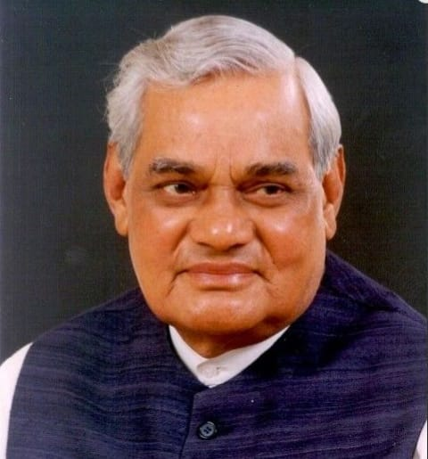
Rinn am Mahapurush Achyutananda Das, 600 bliadhna air ais anns an teacsa ainmeil aige 'Shiva-kalpa Nabakhanda Nirghanta', fàidheadaireachd farsaing a thaobh Mahatma Gandhi.
Sloka Odia:
ଜନମ ହୋଇ ଗୁଜରାଟରେ, ମୋହନ ମୋହିବ ରାମ ନାମରେ।
ଅହିଂସାକୁ ଅସ୍ତ୍ର କରିବ
ଜାଣ, ଫିରିଙ୍ଗୀ ହଟିବେ ସେ କାଳେ ଜାଣ।
ତା ଅନ୍ତେ ଧର୍ମ ହୋଇବ ହାଣି, ମୋହନ ରାଜୁତି ହୋଇବ
ହାଣି।
ଗୁଳି ଚୋଟେ ତାର ପ୍ରାଣ ଯିବ, ଗଡସେ କଳିମଞ୍ଜି ପୋତିବ।
ଜାଣି ନ ପାରିବେ ସଂସାର
ପ୍ରାଣୀ, ଟେକି କହୁଥିବେ କଥା ନ ଜାଣି।
Tar-sgrìobhadh:
Janama hoi Gujarāṭare, Mohana mohiba Rāma nāmare.
Ahinsāku astra kariba jāṇa,
phiriṅgī haṭibe se kāḷe jāṇa.
Tā ante dharma hoiba hāṇi, Mohana rājuti hoiba
hāṇi.
Guḷi choṭe tāra prāṇa jiba, Gaḍse kaḷimañji potiba.
Jāṇi na pāribe
saṃsāra prāṇī, ṭeki kahuthibe kathā na jāṇi.
Sgrìobh am Mahapurush tuilleadh gun cumadh Mohan cumhachd e fhèin, agus an dèidh a bhàis, gum biodh crìonadh ann an Dharma. Thug e fa-near gu sònraichte gun marbhadh duine leis an ainm "Godse" e le "peilear" (Guli), agus le sin, gun cuireadh e sìol Kali anns an dùthaich. Rinn e eadhon fàisneachd nach tuigeadh mòran dhaoine Gandhi gu ceart agus gun dèanadh iad fìreanachadh air gnìomh a' mharbhaiche air sgàth aineolais. Mar a tha fios againn, thàinig gach facal den fhàisneachd seo a thaobh Athair na Dùthcha gu buil.
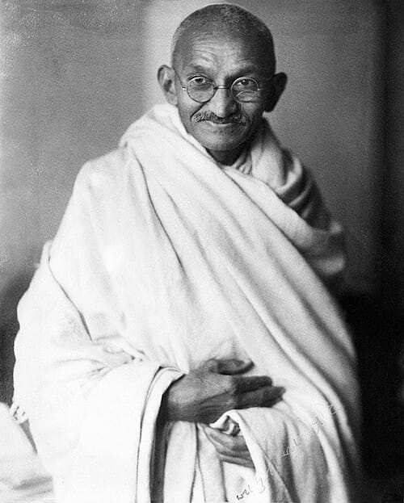
Anns an teacsa aige 'Jai Birachit Chautisha', rinn Mahapurush Achyutananda Das fàisneachd air sian-ghaoith 1999 600 bliadhna ro làimh.
Sloka Odia:
ସମୁଦ୍ର ଉଠି ଆସିବ ବତାସ ବହିବ, ଶ୍ରୀ କଳ୍ପବଟ ମୋର ଭାଙ୍ଗି
ପକାଇବ।
ସତ୍ୟଭାବ ହେ, ସାଲ ଅନେଶତ କର ଠାବ ହେ।
Tar-sgrìobhadh:
Samudra uṭhi āsiba batāsa bahiba, Shrī Kaḷpabaṭa mora bhāṅgi pakāiba.
Satyabhāba
he, sāla aneshata kara ṭhāba he.
Air 29 Dàmhair, 1999, bhuail Sian-ghaoith
Mhòr Odisha le gaothan de 250 km/h. Dh'adhbhraich i sgrios mòr, a' tagradh còrr is 10,000
beatha. Fìor don fhàisneachd, bhris geug mhòr den chraobh Kalpavata àrsaidh taobh a-staigh teampall Puri
rè na stoirme seo.
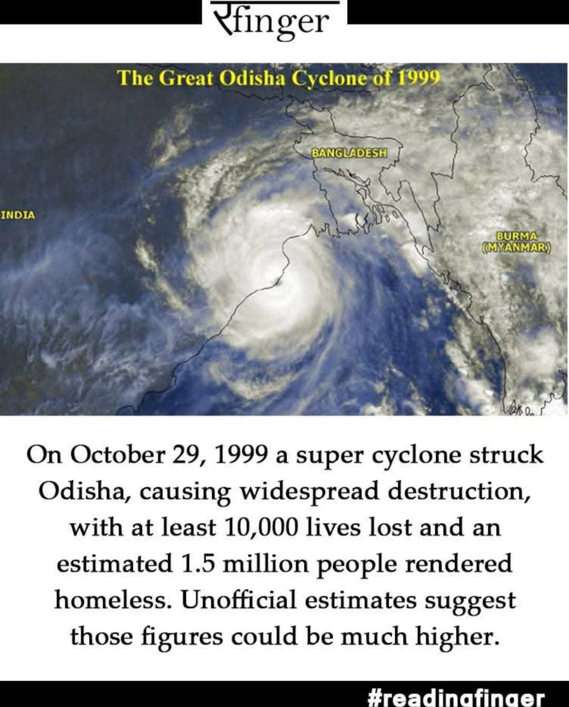
Anns an teacsa 'Garuda Kalpa', rinn an Naomh Achyutananda fàisneachd gun saoradh na h-Innseachan bho riaghladh Bhreatainn ann an 1947 a' cleachdadh còd àireamhach.
Sloka Odia:
ବ୍ରହ୍ମ ଭକ୍ତି ବେଦ ବାରକୁ ଥୋଇ, ଏ ଠାରେ ବିଦେଶୀ ଯିବେ ପଳାଇ।
Tar-sgrìobhadh:
Brahma bhakti beda bāraku thoi, e ṭhāre bideshī jibe paḷāi.
Nuair a thèid an cur còmhla (1-9-4-7), cruthaichidh e 1947. Tha an fhàisneachd ag ràdh gun teicheadh na coigrich (Breatannaich) às an fhearann seo anns a' bhliadhna seo.
Ann an 'Jaiphula Malika', rinn am Mahapurush fàisneachd air na h-uilc shòisealta aig deireadh Kaliyuga:
Sloka Odia:
କନ୍ୟା ରତ୍ନକୁ ଗର୍ଭର, ନଷ୍ଟ କରିବ ଥରକୁ ଥର ଲୋ ଯାଇଫୁଲ,
ହୃଦୟେ ନ କରି
ପାପ ବିଚାର।
Tar-sgrìobhadh:
Kanyā ratnaku garbhara, naṣṭa kariba tharaku thara lo jāiphula,
hṛudaye na kari
pāpa bichāra.
Sgrìobh Mahapurush Hadidas, ion-chorpachadh nam Panchasakhas a rugadh anns an 18mh linn, ann an 'Agata Bhavishyat Chautisha':
Sloka Odia:
ଦୁଇ ବିଂଶ ଯେବେ ବର୍ଷ ବୋଲାଇବ, ବହୁ ବିତିପାତ ହେବ।
ଅଜଣା ବ୍ୟାଧିରେ ବହୁ
ନାଶ ଯିବେ, ହାହାକାର ପଡ଼ିଯିବ।
Tar-sgrìobhadh:
Dui biṃsha jebe barsha bolāiba, bahu bitipāta heba.
Ajaṇā byādhire bahu nāsha jibe,
hāhākāra paḍijiba.
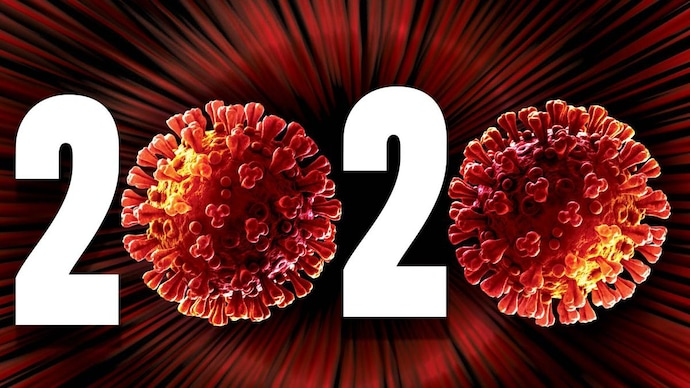
Anns an teacsa 'Chakada Madana' agus 'Mahagupta Padmakalpa', rinn na Naoimh Achyutananda agus Arkhit Das fàisneachd air togail dama mòr ann an Odisha.
Sloka Odia:
ଛବିଶ ଠାବରେ ହୀରାକୁଦ ଉଛୁଳିବ, ଏ ଓଡ଼ିଶା ଅର୍ଦ୍ଧଭାଗ ଜଳମଗ୍ନ
ହେବ।
ଧନଜନ ନଷ୍ଟ ହେବ କହିଲି ବୁଝାଇ, ଦୀନ ଅଚ୍ୟୁତ କହଇ ବେଶୀ ବେଳ ନାହିଁ।
ହୀରାକୁଦ ବୋଲିଣଟି
ଗ୍ରାମ ନାମ ଥିବ, ବନ୍ଧବାଡ଼ ଭାଙ୍ଗି ସବୁ ଏକାକାର ହେବ।
ସେହି ବେଳେ ଗଙ୍ଗା ପୁଣି ଆସିବେଟି ମାଡ଼ି,
ବୈତରଣୀ, ବ୍ରାହ୍ମଣୀ ଯେ ଦେବେ ଘୋର ରଡ଼ି।
ଓଡ଼ିଶାରେ ବଡ଼ ବନ୍ଧ ତିଆରି ଯେ ଥିବ, ସେଇବେଳେ
ଶତ୍ରୁଦ୍ୱାରା ଭାଙ୍ଗିଣ ଯେ ଯିବ।
ଓଡ଼ିଶାରେ ଛଅ ଜିଲ୍ଲା ଜଳାର୍ଣ୍ଣବ ହୋଇ, ଯିବାପାଇଁ ବାଟ ନ ପାଇବେ
ପୁଣି କେହି।
ହୀରାକୁଦ ବୋଲି ଗ୍ରାମର ଯେ ନାମ ଥିବ, ବନ୍ଧବାଡ଼ ଭାଙ୍ଗି ସବୁ ଏକ ଯେ ହୋଇବ।
Tar-sgrìobhadh:
Chabiṣha ṭhābare Hīrākuda uchuḷiba, e Oḍiśhā arddhabhāga jaḷamagna heba.
Dhanajana
naṣhṭa heba kahili bujhāi, dīna Achyuta kahai beśhī beḷa nāhiñ.
Hīrākuda boliṇaṭi
grāma nāma thiba, bandhabāḍa bhāṅgi sabu ekākāra heba.
Sehi beḷe Gaṅgā puṇi āsibeṭi
māḍi, Baitaraṇī, Brāhmaṇī je debe ghora raḍi.
Oḍiśhāre baḍa bandha tiāri je thiba,
seibeḷe śhatrudwārā bhāṅgiṇa je jiba.
Oḍiśhāre chha-a jillā jaḷārṇnaba hoi,
jibāpāiñ bāṭa na pāibe puṇi kehi.
Hīrākuda boli grāmara je nāma thiba, bandhabāḍa
bhāṅgi sabu eka je hoiba.
Mar a tha fios, anns a' bhliadhna 1948 ann an stàit Odisha anns na h-Innseachan, thòisich obair togail dama leis an ainm Hirakud, a chaidh a chrìochnachadh ann an 1953. Anns a' mhìos Faoilleach na bliadhna 1957, le Prìomh Mhinistear an uair sin, Pandit Jawaharlal Nehru, chaidh fosgladh foirmeil an dama seo a dhèanamh. Le fad iomlan de 26 km, air a thogail thairis air abhainn Mahanadi ann an sgìre Sambalpur ann an Odisha, is e an dama seo an-diugh an dama as fhaide san t-saoghal a rinn duine. San dòigh seo, chaidh cruinneas a' chiad phàirt den fhàisneachd seo a dhearbhadh.
A dh'aithghearr chì an saoghal an dàrna pàirt den fhàisneachd sin a' tighinn gu buil cuideachd, nuair, aig àm a' chogaidh eadar na h-Innseachan agus Sìona, le ionnsaigh urchraichean Shìona, gun bris an dama seo agus gun fulang stàit Odisha tuil uabhasach.
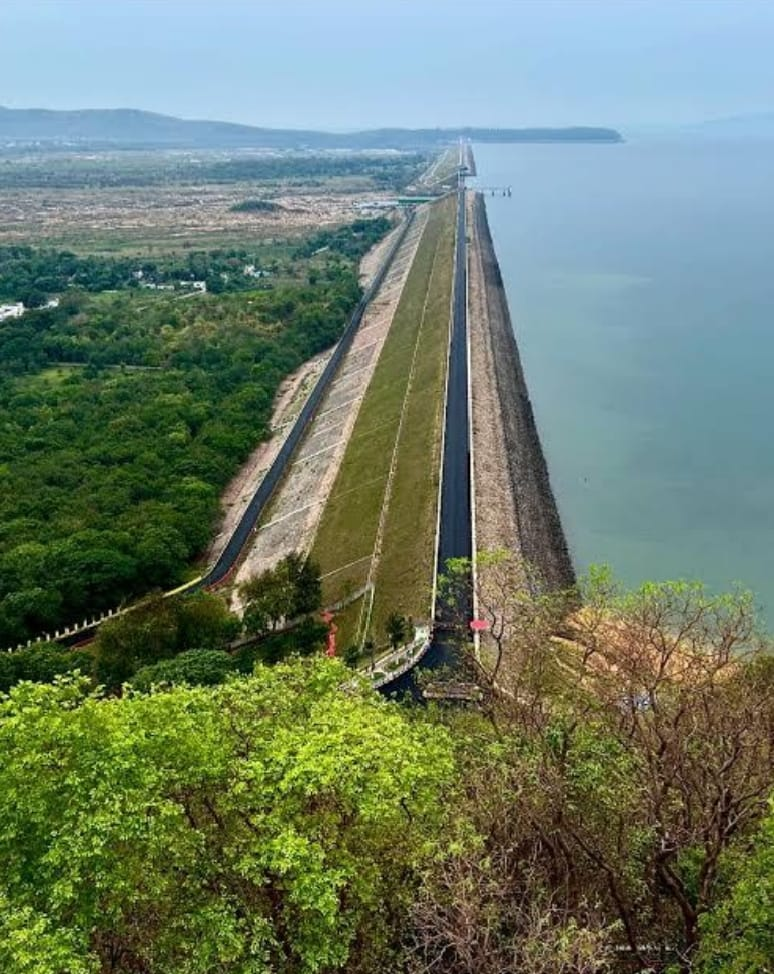
Thug Mahapurush Achyutananda Das agus feadhainn eile iomradh air cruthachadh agus ainm Phacastan 600 bliadhna air ais ann an teacsaichean mar 'Gupta Kheda Malika' agus 'Bhavishyat Malika'. San aon dòigh, thug an naomh bhon 18mh linn Arkhit Das iomradh air ann an 'Mahagupta Padmakalpa'.
Sloka Odia:
ପାକିସ୍ତାନର ଦଶା ଯାହା ହେବ ସହସା, ମନ କର୍ଣ୍ଣ ଦଇ ଥରେ ଶୁଣ ସେ
ଭାଷା।
ଏହି ଭାରତ ସଙ୍ଗେ ପାକିସ୍ତାନଟି ରଙ୍ଗେ, ମହାସମର କରିବ ଜାଣିଥା ବେଗେ।
ପ୍ରାଚ୍ୟ
ପାଶ୍ଚାତ୍ୟ ଗଣ ଏହିପରି ମିଳିଣ, ପାକିସ୍ତାନ ଲାଗି ସର୍ବେ କରିବେ ରଣ।
ପାକିସ୍ତାନ ରାଜ୍ୟଗୋଟି
ଛାରଖାର ହେବ, ଚାରିଆଡ଼େ ହାହାକାର ଶୁଭୁଣ ଯେ ଥିବ।
ଚୀନ ପାକିସ୍ତାନ ପୁଣି ଆମେରିକା ଜାଣ, ଋଷିଆ
ଭାରତ ପୁଣି ଜର୍ମାନ ଜାପାନ।
ପାକିସ୍ତାନ ରାଜ୍ୟ ଗୋଟା ଛାରଖାର ହେବ, ପଛ ବେଳକୁ ତ ପୁଣି ବୁଦ୍ଧି ଯେ
ସ୍ଫୁରିବ।
Tar-sgrìobhadh:
Pākistānara dashā jāhā heba sahasā, mana karṇṇa dei thare shuṇa se bhāṣā.
Ehi
Bhārata saṅge Pākistānaṭi raṅge, mahāsamara kariba jāṇithā bege.
Prāchya pāshchātya
gaṇa ehipari miḷiṇa, Pākistāna lāgi sarbe karibe raṇa.
Pākistāna rājyagoṭi
chhārakhāra heba, chāriāḍe hāhākāra shubhuṇa je thiba.
Chīna Pākistāna puṇi Āmerikā
jāṇa, Ruṣiā Bhārata puṇi Jarmana Jāpāna.
Pākistāna rājya goṭā chhārakhāra heba,
pachha beḷaku ta puṇi buddhi je sphuriba.
Is fhiach a thoirt fa-near nach deach am facal 'Pacastan' a chruthachadh ach ann an 1933, ach thug na naoimh ainm air ceudan bliadhnaichean roimhe.
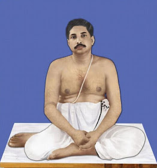
Chaidh bunait Bhubaneswar an latha an-diugh a chur ann an 1948 le Prìomh Mhinistear Nehru. Ach, tha iomradh air mar phrìomh-bhaile a' nochdadh ann an teacsaichean Malika mar 'Chakada Madana' agus 'Kali Agata Bhabishyant'.
Sloka Odia:
ଭୈରବୀ ଡାକିବ ଭୁବନେଶ୍ୱର, ଚୈତ୍ର ମାସ ଯେ ମଙ୍ଗଳବାର।
ପୃଥିବୀରେ ଗୋଳ
ଯୁଦ୍ଧ ଆରମ୍ଭିବ ଯେବେ, ଭୁବନେଶ୍ୱରକୁ ସୈନ୍ୟ ମାଡ଼ି ଯେ ଆସିବେ।
ଭୁବନେଶ୍ୱରରେ ଲାଗିବ ଗୋଳ, ଏକାମ୍ର
ବନ ଯେ ଅଛି ସେଠାର।
ଭୁବନେଶ୍ୱର ତ ପୁଣି ରାଜଧାନୀ ଜାଣ, ବିଦେଶୀ ଶତ୍ରୁଙ୍କ ଦୃଷ୍ଟି ପଡ଼ିବଟି
ପୁଣ।
ଭୈରବ ଡାକ ହେବ ଜାଣ, ଭୁବନେଶ୍ୱରଟି ପ୍ରମାଣ।
Tar-sgrìobhadh:
Bhairabī ḍākiba Bhubaneshwar, Chaitra māsa je Maṅgaḷabāra.
Pṛuthibīre goḷa yuddha
ārambhiba jebe, Bhubaneshwaraku sainya māḍi je āsibe.
Bhubaneshwarare lāgiba goḷa,
Ekāmra bana je achhi seṭhāra.
Bhubaneshwar ta puṇi rājadhānī jāṇa, bideshī
shatruṅka dṛuṣṭi paḍibaṭi puṇa.
Bhairaba ḍāka heba jāṇa, Bhubaneshwarati pramāṇa.
Rinn Mahapurush Achyutananda Das, anns na teacsaichean Malika aige a chaidh a sgrìobhadh faisg air 600 bliadhna air ais, fàisneachd air breith "Yugapurusha" (Duine na Linn) a dhèanadh mòran de chleasan diadhaidh agus a sgaoileadh a chliù air feadh an t-saoghail.
Sloka Odia:
ଲୀଳାମାନ ହେବ କୀର୍ତ୍ତି ରହି ଯିବ, ଅନୁକୂଳ ନାମ ଧରି।
ଦେଶ ବିଦେଶରୁ
ଭକ୍ତ ଆସିବେ, ସତସଙ୍ଗ ଆଶ୍ରା କରି।
ସତନାମ ଗୋଟି ଉଚ୍ଚାରି ବୋଲିବେ, ଭକ୍ତଙ୍କ ହେବ
ମେଳ।
ଶୂନ୍ୟ ମାର୍ଗେ ରହି ଅଚ୍ୟୁତ ଦେଖିବ, ଯୁଗପୁରୁଷଙ୍କ ଖେଳ।
Tar-sgrìobhadh:
Līḷāmāna heba kīrtti rahi jiba, Anukūḷa nāma dhari.
Desha bidesharu bhakata āsibe,
sat-saṅga āshrā kari.
Satanāma goṭi uchchāri bolibe, bhaktaṅka heba
meḷa.
Shūnya mārge rahi Achyuta dekhiba, Yugapuruṣaṅka kheḷa.
A' coileanadh an fhàisneachd seo, rugadh Anukulchandra Chakravarty air 14 Sultain, 1888, ann an sgìre Pabna ann am Bengal neo-roinnte (a-nis Bangladesh). Aithnichte air feadh an t-saoghail mar Shri Shri Thakur Anukulchandra, stèidhich e an 'Satsang Ashram' ann an Deoghar, Jharkhand, ann an 1946. Thàinig milleanan de luchd-adhraidh air feadh an t-saoghail còmhla ris an rùn aige, gu tric ga ainmeachadh mar 'Yuga Purushottam.'
Ged a chaidh am boma atamach a leasachadh ann am meadhan an 20mh linn, thug Mahapurush Achyutananda Das (ann an 'Gupta Kheda Malika' agus 'Bhavishyat Malika') agus Balarama Das (ann an 'Kali Tandaba Gita') iomradh air linntean air ais.
Sloka Odia:
ପରମାଣୁ ଯେ ବୋମା କରିଦେବେଟି ଜମା, ପୋଡ଼ିଜାଳି ଦେବା ପାଇଁ ଭାରତ
ସୀମା।
ପରମାଣୁ ଯେ ବୋମା ଯାହା ଲାଗି ଗାରିମା, ଦେଖାଇ ହୁଅନ୍ତି ଆଜି ପାଶ୍ଚାତ୍ୟ ସେନା।
ତାହା
ଫୁଟିବ ନାହିଁ କେଣେ ଯିବ ମିଳାଇ, ଏହା ଦେଖି ବିଦେଶୀଏ ଯିବେ ପଳାଇ।
ଅଗ୍ନିର ଦାହିକା ଶକ୍ତି ଲୋ ବଉଳ
ପ୍ରଭୁ କରିବେ ହରଣ, ପରମାଣୁ ବୋମା ଯାହାଲାଗି ଗାରିମା ଶୀତଳ ହୋଇବ ଜାଣ।
Tar-sgrìobhadh:
Paramāṇu je bomā karidebeṭi jamā, poḍijāḷi debā pāiñ Bhārata sīmā.
Paramāṇu je bomā
jāhā lāgi gārimā, dekhāi huanti āji pāshchātya senā.
Tāhā phuṭiba nāhiñ keṇe jiba
miḷāi, ehā dekhi bideshīe jibe paḷāi.
Agnira dāhikā shakti lo bauḷa Prabhu karibe
haraṇa, paramāṇu bomā jāhā lāgi gārimā shītaḷa hoiba jāṇa.
Rugadh e ann an 1850, thug an naomh mòr Bhima Bhoi (neach-leanmhainn traidisean nam Panchasakhas) seachad mion-fhiosrachadh mu stiùirichean gluasad neo-eisimeileachd na h-Innseachan anns an teacsa aige 'Padmakalpa'.
Sloka Odia:
ମଦନମାଲବ୍ୟ ନାମ ବୋଲିକରି ଏକ ଭକ୍ତ ଥିବ ଜନ୍ମି,
ଗାନ୍ଧୀ ସହିତରେ ଅହିଂସା
ଧର୍ମରେ ନିରନ୍ତରେ ଥିବେ ପୁଣି।
ଚୁଡ଼ଙ୍ଗ ବଂଶରେ ଉତପତ୍ତି ହୋଇ ମୋତିଲାଲ ଯେ
ନେହେରୁ,
ମହାପ୍ରତାପୀ ଅଟଇ ସେହୁ ଭକ୍ତ ଆସିଛନ୍ତି ଶୂନ୍ୟପୁରୁ।
Tar-sgrìobhadh:
Madanamālabya nāma bolikari eka bhakta thiba janmi,
Gāndhī sahitare ahinsā dharmare
nirantare thibe puṇi.
Chuḍaṅga baṃshare utpatti hoi Motilāl je
Neheru,
mahāpratāpī aṭai sehu bhakta āsichanti Shūnyapuru.
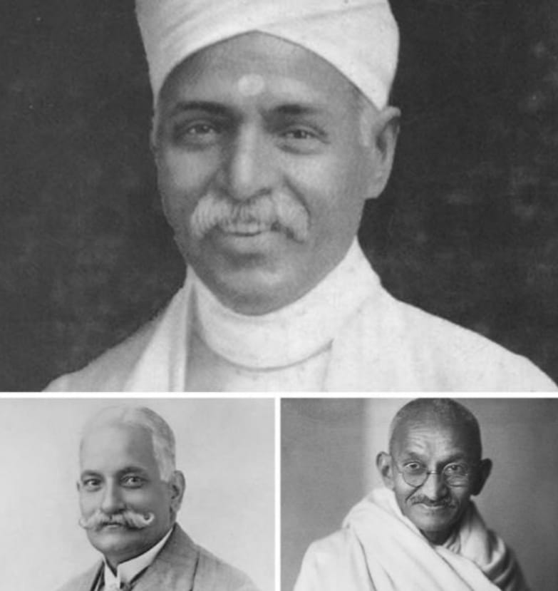
Ann an 'Jaiphula Malika', rinn Mahapurush Achyutananda Das fàisneachd mu bhàs a' Mahatma.
Sloka Odia:
ମୋହନ ଗାନ୍ଧୀ ମରଣ, ନାଥୁରାମ ହସ୍ତେ ହୋଇବ ଜାଣ ଲୋ ଯାଇଫୁଲ,
ଏ କଥା
ସିଦ୍ଧ ଫଳ ରେ ନିପୁଣ।
Tar-sgrìobhadh:
Mohana Gāndhī maraṇa, Nāthurāma haste hoiba jāṇa lo jāiphula,
e kathā siddha phaḷa
re nipuṇa.
Ann an 'Kali Bhagabata', thug Mahapurush Abhiram Paramahansa (naomh bhon 20mh linn ann an traidisean Malika) cunntas air an atharrachadh poilitigeach.
Sloka Odia:
ସତ୍ୟାଗ୍ରହୀ ହୋଇଲେ ମେଳି ।
ଅନ୍ତର ହୋଇଯିବ କଳି ।।
ଇଉରୋପିଆନ
ଯିବେ ଛାଡ଼ି ।
ମୋହନ ସେନା ଦେବେ କାଢ଼ି ।।
ପ୍ରଥମ ଯୁଦ୍ଧେ ସେନାପତି ।
ହେବେ ମୋହନ
ସୈନ୍ୟ ଘେତି ।।
ମୋହନ ବୋଲି ଯାଙ୍କୁ କହି ।
ମହତ ଆତ୍ମା ଅଟେ ସେହି ।।
ସେହି ନାରଦ
ମହାମୁନ୍ୟ ।
ତାଙ୍କୁ କରନ୍ତି ସର୍ବେ ମାନ୍ୟ ।।
Tar-sgrìobhadh:
Satyāgrahī hoile meḷi,
antara hoijiba kaḷi.
Iuropiāna jibe chhāḍi,
Mohana
senā debe kāḍhi.
Prathama yuddhe senāpati,
hebe Mohana sainya
gheti.
Mohana boli jāṅku kahi,
mahata ātmā aṭe sehi.
Sehi Nārada
mahāmunya,
tāṅku karanti sarbe mānya.
A rèir sgriobtairean Sanatan, is e aois iomlan Kaliyuga 432,000 bliadhna. Tha am Bhavishya Malika cuideachd a' dearbhadh an ùine iomlan seo, ach tha e a' cur ris fàisneachd chudromach: air sgàth peacaidhean cus daonnachd, cha chrìochnaich Kaliyuga a làn-ùine.
Tha Mahapurush Achyutananda Das a' sgrìobhadh ann an 'Adi Samhita':
Sloka Odia:
କଳିରେ ଚାରି ଲକ୍ଷ ଯାଏ, ବତିଶ ସହସ୍ର ନିର୍ଣ୍ଣୟ।
Tar-sgrìobhadh:
Kaḷire chāri lakṣa jāe, batiśa sahasra nirṇaya.
An uairsin sgrìobh Mahapurush Achyutananda Das anns an teacsa aige, 'Dashapatala Malika':
Sloka Odia:
କଳିଯୁଗ ଭୋଗ ପ୍ରମାଣ ସାର,
ଚାରିଲକ୍ଷ ଯେ ବତିଶ ହଜାର।
Tar-sgrìobhadh:
Kaliyuga bhoga pramāṇa sāra,
chārilakṣha je batisha hajāra.
Tha e a' sgrìobhadh anns an teacsa Malika aige, 'Parardha Jataka':
Sloka Odia:
ଚାରିଲକ୍ଷ ବତିଶି ସହସ୍ର କଳି,
କରିଲି ତିନି ଯୁଗଠାରୁ ବଳି।
Tar-sgrìobhadh:
Chārilakṣha batishi sahasra kali,
karili tini yugaṭhāru bali.
Ach, cha do stad na Mahapurushas an dèidh dìreach seo a ràdh; thuirt iad cuideachd anns na teacsaichean Malika aca gun robh, air sgàth nan diofar pheacaidhean a rinn daoine, cha bhi Kali Yuga comasach air a làn-ùine a chrìochnachadh.
Tha na Panchasakhas a' soilleireachadh ged a tha an aois teòiridheach 432,000 bliadhna, bidh am "Bhoga" (fad-ùine fìor eòlach) mòran nas giorra air sgàth cuideam nam peacaidhean. Ann an 'Dashapatala Malika', tha e sgrìobhte:
Sloka Odia:
ଚାରି ଲକ୍ଷ ଯେ ବତିଶ ସହସ୍ର, ଭୋଗ ନୋହିବ କହ ପୀତବାସ।
Tar-sgrìobhadh:
Chāri lakṣa je batiśa sahasra, bhoga nohiba kaha Pītabāsa.
Tha am Mahapurush a' sgrìobhadh anns an teacsa Malika aige, 'Kalikalpa Gita':
Sloka Odia:
ଚାରି ଲକ୍ଷ ବତିଶ ସସ୍ର ବର୍ଷ ଆଉ,
ଭୋଗ ନହେବ ପାପଭାରା ଯହୁଁ।
ଆପଣେ
ପ୍ରଭୁ ହୋଇବେ ଉଦିତ,
ପାପୀମାନଙ୍କୁ କରିବେ ମୁକତ।
Tar-sgrìobhadh:
Chāri lakṣha batisha sasra barṣha āu,
bhoga naheba pāpabhārā jahuṃ.
Āpaṇe
prabhu hoibe udita,
pāpīmānaṃku karibe mukata.
Tha Mahapurush Achyutananda Das a' sgrìobhadh a-rithist ann an aon de na teacsaichean Malika aige:
Sloka Odia:
କଳି ଚାରି ଲକ୍ଷ ବତିଶ ସସ୍ର ନୋହିବ ଭୋଗ,
ପାପ ଯୋଗୁଁ କ୍ଷୟ ହୋଇବ ଅଳ୍ପ
ପଡ଼ିବ ଭାଗ।
Tar-sgrìobhadh:
Kali chāri lakṣha batisha sasra nohiba bhoga,
pāpa joguṃ kṣhaya hoiba alpa paḍiba
bhāga.
An-diugh, tha cuid de dhaoine an sàs ann a bhith a' sgaoileadh, a' toirt iomradh air an Malika, gur e fad-beatha eòlach Kali Yuga 10,000 bliadhna. Biodh fios gun eil seo gu tur ceàrr.
Sgrìobh Mahapurush Achyutananda Das anns an teacsa Malika aige, 'Shibakalpa Nabakhanda Nirghanta':
Sloka Odia:
ଦଶ ସହସ୍ରରେ କଳିନାଶ ହେବ ଏ ଅଟେ ବିଷମ ବାଣୀ।
Tar-sgrìobhadh:
Dasha sahasrare kalināsha heba e aṭe biṣhama bāṇī.
Tha na Panchasakha Mahapurushas air sgrìobhadh ann an iomadh àite anns na teacsaichean Malika aca gur e fad-beatha eòlach Kali Yuga 5,000 bliadhna, às deidh sin thig an Tighearna Kalki ann an corp agus ruigidh Satya-Kali no Ananta Yuga no Adya Satya Yuga.
Thigibh, faigh sinn barrachd fiosrachaidh air a' chuspair seo aon ri aon tro shlokas an Malika.
An toiseach, biodh fios againn dè a thuirt an Tighearna Shri Krishna fhèin a thaobh fad-beatha Kali Yuga.
An aghaidh na mì-fhiosrachaidh a sgaoil cuid gu bheil Kaliyuga a' mairsinn 10,000 bliadhna, tha teacsaichean Malika ag ràdh a-rithist is a-rithist gu bheil fìor riaghladh Kali a' crìochnachadh an dèidh 5,000 bliadhna, air a leantainn le ùine eadar-ghluasaid.
Tha Mahapurush Achyutananda Das ag ainmeachadh faclan an Tighearna Krishna ri Gàruda ann an 'Agata Bhavishya Prabandha Malika':
Sloka Odia:
କଳି ଚାରି ଲକ୍ଷ ବତିଶ ସହସ୍ର ନୋହିବ ଭୋଗ, ପାପ ଯୋଗୁ କ୍ଷୟ ହୋଇବ ଅଳ୍ପ ପଡ଼ିବ
ଭାଗ।
ପାଞ୍ଚ ସହସ୍ର ଯେ ପଚାଶ ଭୋଗ ହେବ ନିକର, ଏଥୁ କିଛି ଉଣା ହୋଇବ ଶୁଣ ଗରୁଡ଼ ବୀର।
Tar-sgrìobhadh:
Kaḷi chāri lakṣa batiśa sahasra nohiba bhoga, pāpa jogu kṣaya hoiba alpa paḍiba
bhāga.
Pāñcha sahasra je pachāsha bhoga heba nikara, ethu kichi uṇā hoiba shuṇa
Garuḍa bīra.
Sloka Odia:
ରାମଦାସ ବୋଲଇ ହୋ ଶୁଣ ଗୁରୁଦେବ, କଳିଯୁଗ କେତେ ପୁଣ ଭୋଗ ଯେ
ହୋଇବ।
ଚାରିଲକ୍ଷ ବତିଶ ଯେ ସହସ୍ର ବରଷ, କେମନ୍ତେ ଯେ ଯୁଗ ପୁଣ ହୋଇବଟି ଶେଷ।
ଏଡ଼େ ବଡ଼ ଯୁଗ
ପୁଣ ବିନାଶ ହୋଇବ, ସଂଶୟ ଫେଡ଼ିଣ ମୋତେ କହ ଗୁରୁଦେବ।
ରାମଦାସ ବାଣୀ ଶୁଣି ଅଚ୍ୟୁତ କହନ୍ତି, ତୋତେ
କହୁଅଛି ରାମ ଶୁଣ ଦେଇ ମତି।
ରାବଣ ଯେ ତ୍ରେତୟା ଯୁଗରେ ତପ କଲା, ଛପନ ଗଣ୍ଡା ଯୁଗକୁ ବର ସେ
ପାଇଲା।
ପାପେ ଗଲା ତାର ତିନି ଭାଗ ଯେ ବିନାଶ, ଏକଭାଗ ଭୋଗ କଲା ବିଶ୍ରବାର ଶିଷ୍ୟ।
ସ୍ୱର୍ଗେ
ପଶି ଅପସରୀ ମାନଙ୍କୁ ହରିଲା, ପର ଦ୍ରବ୍ୟ ହରି ଯେବେ ପାଦେ ଖଟାଇଲା।
ଆପେ ଜଗତମାତା ଯେ ଜନକ
ନନ୍ଦିନୀ, ତାଙ୍କୁ ହରି ନେଲା ଗର୍ବେ ମୂଢ଼ ବିଂଶପାଣି।
ସୁରାପାନ କଲା ସେ କ୍ଷତ୍ରିଙ୍କୁ ବଧିଲା,
ବ୍ରହ୍ମହତ୍ୟା ଆଦିକରି କେତେ ପାପ କଲା।
ପାପରୁ ଯେ ତିନି ଭାଗ ହୋଇଲା ବିନାଶ, ଏକ ଭାଗ ଭୋଗ କଲା
ବିଶ୍ରବାର ଶିଷ୍ୟ।
ସେହିପରି କଳିଯୁଗ ବିନାଶ ହୋଇବ, ପାଞ୍ଚସସ୍ର ଭୋଗ ହେବ ଅନ୍ୟ ପାପେ ଯିବ।
Tar-sgrìobhadh:
Rāmadāsa bolai ho shuṇa gurudeba, kaliyuga kete puṇa bhoga je hoiba.
Chārilakṣha
batisha je sahasra baraṣha, kemaṃte je yuga puṇa hoibaṭi sheṣha.
Eḍe baḍa yuga puṇa
bināsha hoiba, saṃshaya pheriṇa mote kaha gurudeba.
Rāmadāsa bāṇī shuṇi Achyuta
kahaṃti, tote kahuachi Rāma shuṇa dei mati.
Rābaṇa je tretayā yugare tapa kalā,
chapana gaṇḍā yugaku bara se pāilā.
Pāpe galā tāra tini bhāga je vināsha, ekabhāga
bhoga kalā Bishrabāra shiṣhya.
Swarge pashi apasarī mānaṃku harilā, para drabya
hari jebe pāde khaṭāilā.
Āpe jagatamātā je Janaka naṃdinī, tāṃku hari nelā garve
mūḍha biṃshapāṇi.
Surāpāna kalā se kṣhatriṃṃku badhilā, brahmahatyā ādi kari kete
pāpa kalā.
Pāparu je tini bhāga hoilā bināsha, eka bhāga bhoga kalā bishrabāra
shiṣhya.
Sehipari kaliyuga bināsha hoiba, pāṃchasasra bhoga heba anya pāpe jiba.
Ann an 'Kalpatika', tha Achyutananda Das a' mìneachadh an iongantas seo a' cleachdadh eisimpleir Ravana. Bha Ravana air mòr-aithreachas a dhèanamh agus fhuair e fad-beatha de "56 Ganda" (ùine chosmach mhòr). Ach, air sgàth 's gun do ghoid e Màthair Sita, gun do rinn e tàir air sìthichean nèamhaidh, agus gun do rinn e peacaidhean uabhasach mar Brahman-hatya, cha do chòrd ach aon phàirt den bheannachd aige ris, fhad 's a chaidh na trì pàirtean eile a sgrios le a pheacaidhean.
San aon dòigh, tha fad Kaliyuga de 432,000 bliadhna ga "chaitheamh" leis an àrdachadh luath ann am peacadh cruinneil, a' leantainn gu crìoch tràth an dèidh 5,000 bliadhna de thìde eòlaiche, a' fosgladh an t-slighe don Ananta Yuga no Satya Yuga.
Sgrìobh Mahapurush Achyutananda Das ann an aon de na teacsaichean Malika aige:
Sloka Odia:
ଚାରି ଲକ୍ଷ ଯେ ବତିଶ ସହସ୍ର,
କଳିଯୁଗର ଅଟଇ ଆୟୁଷ।
ପାପଭାରରେ ଆୟୁ
କଟିଯିବ,
ପାଞ୍ଚ ସହସ୍ର କଳି ଭୋଗ ହୋଇବ।
Tar-sgrìobhadh:
Chāri lakṣa je batiśa sahasra,
Kaḷiyugara aṭai āyuṣa.
Pāpabhārare āyu
kaṭijiba,
Pāñcha sahasra Kaḷi bhoga hoiba.
Dheasbaireachd Mahapurush Hadi Das, a bha na ath-chur-a-steach de Mahapurush Achyutananda Das, a rugadh san 18mh linn ann an sgìre Jajpur ann an Odisha, air aois Kaliyuga anns an teacsa Malika aige leis an ainm ‘Kali Chautisha’. Sgrìobh e:
Sloka Odia:
ସଂବତ୍ସର ପାଞ୍ଚ ସହସ୍ର କଳି ହୋଇବ ଶେଷ,
ସତ୍ୟ ଯୁଗ ଆଦ୍ୟ ହୋଇବ ଶୁଭଯୋଗେ
ପ୍ରବେଶ।
Tar-sgrìobhadh:
Saṃbatsara pāñcha sahasra Kaḷi hoiba sheṣa,
Satya yuga ādya hoiba shubhajoge
prabesha.
Sgrìobh Mahapurush Achyutananda Das ann an teacsa Malika eile:
Sloka Odia:
ପାଞ୍ଚ ଯେ ହଜାର ଥାରୁ ମହାଭୟ ହେବ,
ଦିଲ୍ଲୀ ସମ୍ରାଟକୁ ଆସି ବିପଦ
ପଡ଼ିବ।
ଗାନ୍ଧାର ସେନାଟି ଗୋଳ କରିବ ଅବଶ୍ୟ,
ପାଞ୍ଚ ହଜାର ପଚାଶ କଳିର ଆୟୁଷ।
Tar-sgrìobhadh:
Pāñcha je hajāra thāru mahābhaya heba,
Dillī samrāṭaku āsi bipada
paḍiba.
Gāndhāra senāṭi goḷa kariba abashya,
Pāñcha hajāra pachāsha Kaḷira
āyuṣa.
Sgrìobh Achyutananda Das ji rann cuideachd anns an teacsa Malika aige far nach do dh'ainmich e aois Kaliyuga gu dìreach mar 5,000 no 5,050, ach thug e iomradh air gu neo-dhìreach tro chomharran:
Sloka Odia:
ବିଂଶେ ମସିହା ହୋଇବ ଶେଷ,
ଅନନ୍ତ କରିବେ କଳି ବିନାଶ।
Tar-sgrìobhadh:
Biṃshe masiha hoiba sheṣa,
Ananta karibe Kaḷi bināsha.
Mhìnich aon de na Panchasakhas, Mahapurush Sishu Ananta Das, aois Kaliyuga gu mionaideach anns an teacsa Malika aige ‘Aagata Bhavishya Malika’:
Sloka Odia:
ବାରଙ୍ଗ ବୋଲଇ ଶୁଣିମା ଗୋସାଇଁ କୁହ ଭବିଷ୍ୟ ବିଚାର,
କେତେବେଳେ କଳ୍କୀ
ସ୍ୱରୂପ ହୋଇବେ ଶୁଣଇଁ ମୁଖୁ ତୁମ୍ଭର।
ଶିଶୁ ବୋଲନ୍ତି ହେ ଶୁଣିମା ବାରଙ୍ଗ କଳଙ୍କି ସ୍ୱରୂପ
ତୁହି,
ଯୁଗଶନ୍ଧି ପାଞ୍ଚ ସହସ୍ର ବରଷ ଯେବେ ଯିବ ଭୋଗ ହୋଇ।
ଜେସେନେକେ ନିଶି ପାହିଲେ ପ୍ରଭାତ
ଯୁଗଶନ୍ଧି ଏହା ଜାଣ,
ଯେମନ୍ତ ସମୟେ କଳଙ୍କି ସ୍ୱରୂପ ହୋଇବେ ସେ ନାରାୟଣ।
ସମକ୍ଷର ବତା ଶୁଣି
ଆଣିକରି ପ୍ରମାଣ ଏହାକୁ କର,
ସବୁ ଏକଠାବେ ମିଶାଇ କରିଣ କରିବୁ ପାଞ୍ଚ ହଜାର।
ଏହି ସମୟକୁ ତଳେ
କରିଥିବୁ କହଇ ହୋ ବାବୁ ତୋତେ,
ଠିକ ରେ ଏ କଥା ଦେଖାଇ କହିଲୁ ରଖିଥିବୁ ହୃଦଗତେ।
Tar-sgrìobhadh:
Bāraṅga bolai shuṇimā gosāiṃ kuha bhabiṣya bichāra,
ketebeḷe Kalkī swarūpa hoibe
shuṇaiṃ mukhu tumbhara.
Shishu bolanti he shuṇimā Bāraṅga Kaḷaṅki swarūpa
tuhi,
yugashandhi pāñcha sahasra baraṣa jebe jiba bhoga hoi.
Jeseneke nishi
pāhile prabhāta yugashandhi ehā jāṇa,
jemanta samaye Kaḷaṅki swarūpa hoibe se
Nārāyaṇa.
Samakṣara batā shuṇi āṇikari pramāṇa ehāku kara,
sabu ekaṭhābe
mishāi kariṇa karibu pāñcha hajāra.
Ehi samayaku taḷe karithibu kahai ho bābu
tote,
Ṭhika re e kathā dekhāi kahilu rakhithibu hṛudagate.
Nuair a chuala e seo, tha Mahapurush Sishu Ananta Das ag innse don deisciobal as àirde aige, Baranga, gum bi, nuair a thachras an 'Yuga-Sandhi' (eadar-ghluasad eadar aoisean), dìreach an uairsin a ghabhas an Tighearna a dhreach Kalki. A' soilleireachadh tuilleadh, tha e ag ràdh gun tachair an Yuga-Sandhi seo nuair a bhios Kaliyuga air a bhith eòlaiche airson 5,000 bliadhna. Dìreach mar a thig madainn an dèidh oidhche, thig aois eile an dèidh aon aois. Canar Yuga-Sandhi ris a' phàirt mheadhanach eadar dà aois. Agus anns an Yuga-Sandhi seo, gabhaidh Narayana a chruth Kalki. Thig an Yuga-Sandhi seo an dèidh do 5,000 bliadhna de Kaliyuga a bhith seachad.
Tha Achyutananda ji, fhad 's a tha e ag ainmeachadh aois Kaliyuga anns an teacsa Malika aige ‘Kaliyuga Malika’, ag ràdh:
Sloka Odia:
ଚହଟିବ ଲୀଳା ତୁ ଚାରିରେ ମିଶା ଏକ,
ଚଢ଼ା ତିନି ଶୂନ ତହିଁ ଯେତେ ହେଲା
ଠିକ।
ଚଳିଯିବ ଘୋର କଳି ଦଳି ଦେବେ ମିଳି,
ଚେତାଇ ଗୀତ ଛନ୍ଦଇ ଅଚ୍ୟୁତ ସେ ଭାଳି।
Tar-sgrìobhadh:
chahaṭiba līḷā tu chārire mishā eka,
chaḍhā tini shūna tahiñ jete helā
ṭhika.
Chalijiba ghora Kaḷi daḷi debe miḷi,
chetāi gīta chhandai Achyuta se
bhāḷi.
Ann an teacsa Malika eile ‘Bhavishya Chautisha’, tha e ag ràdh ris an deisciobal aige Ramachandra:
Sloka Odia:
ଠିକଣା ଅମରପୁର,
ଠାକୁର ତହିଁରୁ ହେବେ ବାହାର,
ରାମଚନ୍ଦ୍ର ହେ,
ଠାରି ପାଞ୍ଚ ସହସ୍ର ଧର।
Tar-sgrìobhadh:
Ṭhikaṇā Amarapura,
Ṭhākura tahiñru hebe bāhāra, Rāmachandra he,
ṭhāri pāñcha
sahasra dhara.
An uairsin, anns an teacsa Malika aige ‘Kali Bayalisha’, tha Mahapurush Achyutananda Das ag innse mu aois Kaliyuga ann an comharran. Tha Mahapurush ag ràdh:
Sloka Odia:
ଦଶରଥ ସୁତ ମୁଣ୍ଡରେ ତିନି ଅଙ୍କ ଚଢ଼ିବ,
ବଜ୍ର ଅଙ୍କ ଦେଇ ଏଗାର ଅଙ୍କ
ତହୁଁ ଫେରିବ।
ଶେଷ ଡାହାଣ ଭାଗ ଯାହା ହେଲା ଗାଣ୍ଡିବ ଗୁଣ,
କଳି ଶେଷ ଭୋଗ ଏହିଟି କହିଲି
ଅରଜୁନ।
Tar-sgrìobhadh:
Dasharatha suta muṇḍare tini aṅka chaḍhiba,
bajra aṅka dei egāra aṅka tahuṃ
pheriba.
Sheṣa ḍāhāṇa bhāga jāhā helā gāṇḍiba guṇa,
kaḷi sheṣa bhoga ehiṭi
kahili Arajuna.
Tha Achyutananda Das ji a' sgrìobhadh anns an teacsa Malika aige ‘Adi Sanhita’:
Sloka Odia:
ଏ ଯେ ସୁବାହୁ ଯୁଗ କଳି,
କ୍ଷୀଣ ଆୟୁଷ ମହାବଳି।
ପାପେ ସକଳ କ୍ଷୟ
ଯିବ,
ପାଞ୍ଚ ସହସ୍ର ଭୋଗ ହେବ।
Tar-sgrìobhadh:
E
je subāhu yuga kaḷi,
kṣīṇa āyuṣa mahābaḷi.
pāpe sakaḷa kṣaya jiba,
pāñcha
sahasra bhoga heba.
Tha Mahapurush Achyutananda Das a' sgrìobhadh anns an teacsa Malika aige ‘Kali Kalpa Gita’:
Sloka Odia:
କଳି ପାଞ୍ଚସହସ୍ର ବରଷ ଭୋଗ ହେବ,
ସେହି ଦିନୁ ସତ୍ୟକଳି ପ୍ରକାଶ ପାଇବ।
Tar-sgrìobhadh:
Kaḷi pāñchasahasra baraṣa bhoga heba,
sehi dinu Satyakali prakāsha pāiba.
Tha Mahapurush Achyutananda Das a' sgrìobhadh anns an teacsa Malika aige ‘Chakada Madana’:
Sloka Odia:
କଳି ପାଞ୍ଚ ହଜାରରେ ଗଙ୍ଗାଦେବୀ ମେଳ କଟକ ଠାରେ,
ଭକ୍ତ ଦେଖିବେ ନେତ୍ରରେ।
Tar-sgrìobhadh:
Kaḷi pāñchahajārare Gaṅgādebī meḷa Kaṭaka ṭhāre,
bhakta dekhibe netrare.
Sgrìobh Mahapurush anns an teacsa Malika aige ‘Kaliyuga Bhavishya Malika’:
Sloka Odia:
ପାଞ୍ଚ ସହସ୍ର କଳି ହଟେ ସତ୍ୟ ଉପୁଜିବ,
ମୋର ତଥ୍ୟମାନ ସେତେବେଳେଟି
ହୋଇବ।
ପୂର୍ବ ପଶ୍ଚିମ ଉତ୍ତର ଆବର ଦକ୍ଷିଣ,
ପ୍ରକାଶ ହେବେ କଳଙ୍କି ଅଚ୍ୟୁତ ବଚନ।
Tar-sgrìobhadh:
Pāñcha sahasra Kaḷi hāte satya upujiba,
mora tathyamāna setebeḷeṭi
hoiba.
pūrba pashchima uttara ābara dakṣiṇa,
prakāsha hebe Kaḷaṅki Achyuta
bachana.
Tha an Naomh Achyutananda Das a' sgrìobhadh a-rithist anns an teacsa Malika aige ‘Kaliyuga Bhavishya Malika’:
Sloka Odia:
ଚାରି ଲକ୍ଷ ସପ୍ତ ବିଂଶ ସହସ୍ର,
କଳିଯୁଗ ଆୟୁଷ ହେବ ବିନାଶ।
ପାଞ୍ଚ
ସହସ୍ରଟି ଭୋଗ ହୋଇବ,
ସତ୍ୟଯୁଗ ପୁଣି ଉଦୟା ହେବ।
Tar-sgrìobhadh:
Chāri lakṣa sapta biṃsha sahasra,
Kaḷiyuga āyuṣa heba bināsha.
pāñcha
sahasraṭi bhoga hoiba,
Satyayuga puṇi udayā heba.
Chan e a-mhàin Mahapurush Achyutananda Das, ach cuideachd fear eile de na Panchasakhas, Mahapurush Sishu Ananta Das, a dheasbaireachd air aois Kaliyuga anns na diofar theacsaichean Malika aige. Fhad 's a bha e a' mìneachadh don deisciobal aige Baranga anns an teacsa Malika aige ‘Chumbaka Malika’, sgrìobh e:
Sloka Odia:
ଏବେ ପାଞ୍ଚ ଠିକ କହିବା ଶୁଣ,
ବାରଙ୍ଗ ବିଚାର ଚିତ୍ତରେ ଘେନ।
ପାଞ୍ଚ
ସହସ୍ର ଯେତେବେଳେ ହେବ,
ସମ୍ପୂର୍ଣ୍ଣ ଲୀଳା ପ୍ରକାଶ ହୋଇବ।
Tar-sgrìobhadh:
Ebe pāñcha ṭhika kahibā shuṇa,
Bāraṅga bichāra chittare ghena.
pāñcha sahasra
jetebeḷe heba,
sampūrṇa līḷā prakāsha hoiba.
Sgrìobh Mahapurush Sishu Ananta Das a-rithist anns an teacsa Malika aige ‘Chumbaka Malika’:
Sloka Odia:
କଳିଯୁଗ ପାଞ୍ଚ ସହସ୍ର ଗଲେ,
ବିଷ୍ଣୁ ଜନମ ଯେ ହୋଇବେ ଭଲେ।
Tar-sgrìobhadh:
Kaḷiyuga pāñcha sahasra gale,
Viṣṇu janama je hoibe bhale.
A' mìneachadh gun tig crìoch air Kaliyuga an dèidh do chòig mìle bliadhna a bhith seachad agus gun tachair cluichrean an Tighearna, sgrìobh Mahapurush Balarama Das anns an teacsa Malika aige ‘Bhavishyata Parardha’:
Sloka Odia:
ହସ୍ତିନା କଟକ ଯେବଣ ଭୂଇଁ,
ବର୍ତ୍ତମାନ ଦିଲ୍ଲୀ ସହର ସେହି।
ପୂର୍ବର
ଚରିତ କହିବା ଶୁଣ,
ଦେବାପି ଅଛନ୍ତି ତପସ୍ୟାରେଣ।
ଉତ୍ତର ଖଣ୍ଡେ ତପସ୍ୟା
କରନ୍ତି,
ତପସ୍ୟା ପୂର୍ଣ୍ଣ ହେ ହୋଇ ନାହାନ୍ତି।
ପଞ୍ଚ ସହସ୍ରେ ବରଷ ପୁଣ,
ତପସ୍ୟା
ତାଙ୍କର ହୋଇବ ପୂର୍ଣ୍ଣ।
ବାରୁଣା କୁଳେ ପ୍ରଭୁଙ୍କୁ ଭେଟିବେ,
ପ୍ରଭୁ ଶ୍ରୀହସ୍ତେ ସିରୀପା
ବାନ୍ଧିବେ।
ଶ୍ରୀପଦ୍ମ ହସ୍ତ ତା ମୁଣ୍ଡେ ଲଦିବେ,
ହସ୍ତିନା ରାଜ୍ୟ ନଗ୍ରରେ ସ୍ଥାପିବେ।
Tar-sgrìobhadh:
Hastinā kaṭaka jebaṇa bhūiṃ,
bartamāna Dillī sahara sehi.
Pūrbara charita
kahibā shuṇa,
Debāpi achhanti tapasyāreṇa.
Uttara khaṇḍe tapasyā
karanti,
tapasyā pūrṇa he hoi nāhānti.
Pañcha sahasre baraṣa
puṇa,
tapasyā tāṅkara hoiba pūrṇa.
Bāruṇā kuḷe prabhuṅku bheṭibe,
Prabhu
shrīhaste sirīpā bāndhibe.
Shrīpadma hasta tā muṇḍe ladibe,
Hastinā rājya
nagrare sthāpibe.
Mahapurush Achyutananda Das a' sgrìobhadh anns an teacsa Malika aige ‘Kali Kalpa Gita’:
Sloka Odia:
ଦାରୁ ଚଢ଼ି ଦାରୁରୂପ ତେଜିକରି କଳ୍କୀ ରୂପ ହୋଇବ,
ନିଷ୍ଠା ବଚନ ମୋହର
ରାମଚନ୍ଦ୍ର କଳିରେ ନିଶ୍ଚେ ଘଟିବ।
ଆହୁରି କଥାଏ ଶୁଣ ରାମଦାସ କଳି ପାଞ୍ଚ ସହସ୍ରରେ।
Tar-sgrìobhadh:
Dāru chaḍhi dārurūpa tejikari Kalkī rūpa hoiba,
niṣṭhā bachana mohara Rāmachandra
Kaḷire nishche ghaṭiba.
āhuri kathāe shuṇa Rāmadāsa Kaḷi pāñcha sahasrare.
Bho na rannan gu h-àrd gu lèir, tha e soilleir gu bheil aois eòlach Kaliyuga dìreach 5,000 bliadhna. Chan eil e 432,000 bliadhna no 10,000 bliadhna.
Ach tha ceist chudromach ag èirigh an seo— Mar a tha fios againn, tha 5,000 bliadhna de Kaliyuga air a dhol seachad mu thràth agus an-dràsta tha an 5,127mh bliadhna a' dol air adhart. A rèir an àireamhachaidh seo, bu chòir do Kaliyuga a bhith air tighinn gu crìch a-nis agus bu chòir do 'Adya Satya Yuga' a bhith a' ruith! Ach tha buaidh Kaliyuga fhathast ri fhaicinn anns gach àite. Tha peacadh agus ana-ceartas a' buadhachadh anns gach àite. Carson an contrarrachd seo?
Seo am freagairt— An toiseach, tha 5,000 bliadhna na aithris choitcheann, chan eil e gu tur mionaideach. Tha 5,000 bliadhna a' ciallachadh timcheall air 5,000 bliadhna. Is e seo an t-adhbhar gu bheil ann an iomadh àite, tha 5,050 bliadhna cuideachd air a sgrìobhadh.
San dàrna àite, a rèir a' Mhalika, tha fad Kaliyuga air tighinn gu crìch gu bunaiteach agus an-dràsta, tha an 'Sandhikala' (ùine eadar-ghluasaid) de Kaliyuga agus Satya Yuga a' dol air adhart. A rèir a' Mhalika, is ann rè an Sandhikala seo a thachras tachartasan breith an Tighearna Kalki agus stèidheachadh Dharma leis-san—i.e., sgrios nan aingidh agus saoradh nan diadhairean. Is e seo an t-adhbhar gu bheil peacadh agus ana-ceartas aig an ìre as àirde aca a dh'aindeoin gun tàinig fad Kaliyuga gu crìch. Bu chòir fios a bhith ann nuair a bhios stèidheachadh Dharma deiseil, gun tig buaidh Kaliyuga gu crìch gu tur agus gun tèid Fìrinn, Dharma, agus Ceartas ath-stèidheachadh.
Tha Achyutananda Das cuideachd air sgrìobhadh anns na teacsaichean Malika aige mu cuin a thachras an stèidheachadh Dharma seo fo cheannas an Tighearna Kalki.
Sgrìobh am Mahapurush anns an teacsa aige ‘Aagata Bhavishyat Malika’:
Sloka Odia:
ଠିକଣା ଅଚ୍ୟୁତ ବୋଲେ,
ଠ’ ତିନି ବାମେ ପାଞ୍ଚ ରଖିଲେ ରାମଚନ୍ଦ୍ର
ହେ,
ଠକିଯିବ ମୀନ ଶନି ଭଲେ।
Tar-sgrìobhadh:
Ṭhikaṇā Achyuta bole,
ṭha’ tini bāme pāñcha rakhile Rāmachandra he,
ṭhakijiba
mīna shani bhale.
Ann an speuradaireachd, tha Saturn (Shani) air a mheas mar am planaid as slaodaiche a tha a' gluasad, a' fuireach ann an aon soidhne zodiac airson timcheall air 2.5 bliadhna. Tha 12 soidhne zodiac gu h-iomlan anns a' chearcall zodiac, agus bidh Saturn a' fuireach anns gach fear airson timcheall air 2.5 bliadhna. Tha seo a' ciallachadh gun toir e timcheall air 12 × 2.5 = 30 bliadhna do Saturn a dhol tro chearcall iomlan an zodiac.
Saoil gun tèid Saturn a-steach do shoidhne zodiac an-diugh; tillidh e chun an aon shoidhne an dèidh timcheall air 30 bliadhna an dèidh crìoch a chur air an gluasad iomlan. Tha Meena-Shani a' ciallachadh gluasad Saturn ann an soidhne zodiac Pisces (Meena).
B' e 1995 an turas mu dheireadh a ghluais Saturn tro Pisces. Leis gun toir e timcheall air 30 bliadhna do Saturn tilleadh chun an aon shoidhne, 1995 + 30 = 2025. Mar sin, anns a' bhliadhna 2025, gluaisidh Saturn a-steach do Pisces a-rithist. An dèidh 2025, bidh an ath ghluasad 2025 + 30, a tha 2054–2055.
Thug na Panchasakha Mahapurushas cunntas soilleir anns na teacsaichean Malika aca gun tachair sgrios nan aingidh, dìon nan diadhairean, agus stèidheachadh Dharma leis an Tighearna Kalki gu sònraichte rè ùine Meena-Shani.
Gus seo a thuigsinn nas fheàrr, rachamaid a choimhead air cuid de rannan a tha air an ainmeachadh anns a' Mhalika agus na mìneachaidhean aca.
Tha Mahapurush Achyutananda Das a' sgrìobhadh anns an teacsa Malika aige ‘Prachi Kalpa’:
Sloka Odia:
ମହୀମଣ୍ଡଳରେ ଚମକ ପଡ଼ିବ,
ନ ଜାଣିବେ ହୀନ ଜନ।
ମ୍ଳେଚ୍ଛ ମାରୁଣୀରେ
ସଂହାର ହୋଇବ,
ମୀନ ଶନି ର ପ୍ରମାଣ।
Tar-sgrìobhadh:
Mahīmaṇḍaḷare chamaka paḍiba,
na jāṇibe hīna jana.
Mlechcha māruṇīre saṃhāra
hoiba,
mīna shani ra pramāṇa.
Tha Mahapurush Achyutananda Das a' sgrìobhadh anns an teacsa Malika aige ‘Chakada Madana’:
Sloka Odia:
ଯୋବରା କାଳିଆବୋଦା ପ୍ରମାଣ, ଗୁପ୍ତରେ ଲାଗିବ ସେ ମାୟା ରଣ।
ଥୋକେ ଯିବେ
କାମଚଣ୍ଡୀ ମୁଖରେ, ମ୍ଳେଚ୍ଛ ମାରୁଣୀ ଯେ ହେବ ଗୁପ୍ତରେ।
ତରକ ତେରୁଆ ଯେତେ ଭକତ, ଯୋବରା
କାଳିଆବୋଦାରେ ନାଶ।
ଛିନ୍ନମସ୍ତା ଦେବୀ ଖର୍ପର ପାତି, କାଠମାଳିଆଙ୍କୁ ଖାଇବ ବାଛି।
ଘୋର
ଅନ୍ଧକାର ସେବେଳେ ହେବ, ସବୁ ବୁଦ୍ଧି ଜ୍ଞାନ ହଜିଣ ଯିବ।
ଅନ୍ନ ନ ମିଳିବ ଶସ୍ୟ ନିଅଣ୍ଟି, ମୀନ
ଶନିଆସି ଦେବଟି ଘାଣ୍ଟି।
ଲକ୍ଷେ ଚୁଲି ସେହିଦିନ ଫିଟିବ, ହାଡ଼ିଆ କମାର ପରଣୁ ଥିବ।
ସେଦିନ ଯେ
ଗୁରୁବାରଟି ଜାଣ, କାଳିଆ ପରୀକ୍ଷା ଅଟେ ପ୍ରମାଣ।
Tar-sgrìobhadh:
Jobarā Kāḷiābodā pramāṇa,
guptare lāgiba se māyā raṇa.
Thoke jibe Kāmachaṇḍī
mukhare, Mlechcha māruṇī je heba guptare.
Taraka teruā jete bhakata, Jobarā
Kāḷiābodāre nāsha.
Chhinnamastā debī kharpara pāti, kāṭhamāḷiāṅku khāiba
bāchi.
Ghora andhakāra sebeḷe heba, sabu buddhi jñāna hajiṇa jiba.
Anna na
miḷiba shasya niaṇṭi, mīna shaniāsi debaṭi ghāṇṭi.
Lakṣe chuli sehidina phiṭiba,
hāḍiā kamāra paraṇu thiba.
Sedina je gurubāraṭi jāṇa, Kāḷiā parīkṣā aṭe pramāṇa.
Tha Mahapurush Achyutananda Das a' sgrìobhadh anns an teacsa Malika aige ‘Kalikalpa Gita’:
Sloka Odia:
ମୀନ ଶନି ହେବ ମୁକୁନ୍ଦ ଅଙ୍କ,
ଭାରତଶ୍ୱରୀ ହେବ ଉତପାତ।
ହେତୁ
ରଖିଥାଅ ବ୍ରଜକୁମର,
ସେକାଳେ ତେଜିବି ମୁଁ କଳେବର।
Tar-sgrìobhadh:
Mīna shani heba Mukunda aṅka,
Bhāratashwarī heba utapāta.
Hetu rakhithāa
Brajakumara,
sekāḷe tejibi muñ kaḷebara.
Ann an teacsa Malika eile, sgrìobh am Mahapurush:
Sloka Odia:
ମୀନ ଶନିର ସଂଯୋଗ ହେବାର ସମୟ,
ପୃଥବୀରେ ହେବ ପୁଣି ଘୋର ଯେ ପ୍ରଳୟ।
Tar-sgrìobhadh:
Mīna shanira saṃyoga hebāra samaya,
pṛthabīre heba puṇi ghora je pralaya.
Tha Achyutananda Das ji a' sgrìobhadh anns an teacsa Malika aige ‘Chakada Madana’:
Sloka Odia:
ମୀନ ଶନି ଆସି ଦେଉଥିବ ଘାଣ୍ଟି ଭାରତ ଲଢ଼ୋଇ ହେବ,
ଦଶ ଅଣା ଯିବ ଛଅ ଅଣା
ରହିବ ମୋ ବଚନ ଅଟେ ଧୃବ।
ଅଢ଼ୋଇ ବରଷ ଘୋର ଉତ୍ପାତ ଛବିଶ ଅଙ୍କ କୁଅନା,
ଶ୍ମଶାନ ପରାୟ ଏ ସାରା
ସଂସାର ଉଚ୍ଛନ୍ନ ହୋଇବ ସିନା।
Tar-sgrìobhadh:
Mīna shani āsi deuthiba ghāṇṭi Bhārata laḍhōi heba,
dasha aṇā jiba chha' aṇā rahiba
mo bachana aṭe dhruba.
aḍhāi baraṣa ghora utpāta chhabbisha aṅka
kuanā,
shmashāna parāya e sārā saṃsāra uchhanna hoiba sinā.
Sgrìobh Mahapurush Achyutananda Das ann an teacsa Malika eile ‘Bhabishyata Malika’:
Sloka Odia:
ସାବଧାନ ହୁଅ ତୁହି,
ଠା ଠିକଣା କିଛି ରହିବ ନାହିଁ।
ହେ ଭକ୍ତଗଣ!
ମୀନ ଶନି ଆସିଗଲେ ଧାଇଁ।
Tar-sgrìobhadh:
Sābadhāna hua tuhi,
ṭhā ṭhikaṇā kichhi rahiba nāhiñ.
He bhaktagaṇa! Mīna shani
āsigale dhāiñ.
Rugadh e anns an 19mh linn, sgrìobh am bàrd-naomh Bhima Bhoi air a' chuspair seo anns an teacsa Malika aige ‘Padmakalpa’:
Sloka Odia:
ଶୁଖିବ ଜଳ ଅବିଳମ୍ବେ,
ମୀନ ଶନିର ମଧ୍ୟଭାଗେ।
ମୋଗଲ ପଠାଣର
ଧାଡ଼ି,
ମଧ୍ୟ ଓଡ଼ିଶା ଥିବ ମାଡ଼ି।
ସିଂହ ମଙ୍ଗଳ ଗ୍ରହ ଦୃଷ୍ଟି,
କିଛି ମେଦିନୀ ଯିବ
ଫାଟି।
ଗିରି କନ୍ଦର ଗୁମ୍ଫାମାନ,
ମୋ ଭକ୍ତେ ରହିବେଟି ପୁଣ।
ଆସିବେ
ଚଣ୍ଡୀକାଇଗଣ,
ଭକ୍ଷିବେ ନଗ୍ରରେ ପଶିଣ।
Tar-sgrìobhadh:
Shukhiba jaḷa abiḷambe,
mīna shanira madhyabhāge.
Mogala paṭhāṇara
dhāḍi,
madhya Oḍishā thiba māḍi.
Siṃha maṅgaḷa graha dṛṣṭi,
kichhi medinī
jiba phāṭi.
Giri kandara gumphāmāna,
mo bhakte rahibeṭi puṇa.
Āsibe
chaṇḍīkāigaṇa,
bhakṣibe nagrare pashiṇa.
Thug am bàrd-dhiadhaire Narada Das iomradh cuideachd air na buaireadh a thachras rè Meena-Shani Yoga anns an teacsa Malika aige. Sgrìobh e:
Sloka Odia:
ମନ ତର୍କିଥିବୁ ତେତିଶ ଅଙ୍କରେ,
ପ୍ରାଣୀଏ ନାଶ ଯିବ ରଙ୍କରେ।
ବତିଶ
ତେତିଶ ପୁଣି ଚଉତିରିଶ,
ମୀନ ଶନି ଭୋଗ ହେବ ଅଢ଼ାଇ ବରଷ।
ପୃଥବୀ ହେବ ଉଲ୍ଲୋଳ,
ଯୋଗିନୀ
ହେବେ ପ୍ରବଳ।
ପଡ଼ି ହାଡ଼ କଙ୍କାଳ,
ଗଡ଼ିବ ମୁଣ୍ଡ ମାଳ।
କମ୍ପିବ ଭୈରବ ଡାକରେ,
ମନ
ତର୍କିଥିବୁ ତେତିଶ ଅଙ୍କରେ।
Tar-sgrìobhadh:
Mana tarkithibu tetisha aṅkare,
prāṇīe nāsha jiba raṅkare.
Batisha tetisha
puṇi chautirisha,
mīna shani bhoga heba aḍhāi baraṣa.
Pṛthabī heba
ulloḷa,
yoginī hebe prabaḷa.
Paḍi hāḍa kaṅkāḷa,
gaḍiba muṇḍa
māḷa.
Kampiba bhairaba ḍākare,
mana tarkithibu tetisha aṅkare.
A' togail còmhradh eadar an Tighearna Krishna agus a' Mhàthair Rukmini rè an Dvapara Yuga, tha Mahapurush Achyutananda Das a' sgrìobhadh anns an teacsa Malika aige ‘Rukmini Gita’:
Sloka Odia:
ମୀନ ଶନି ମେଳ ଗୋ ହୋଇବ ଯେତେବେଳେ,
ସେବେଳେ ସମର ହେବ ଭାରତ ମଣ୍ଡଳେ।
Tar-sgrìobhadh:
Mīna shani meḷa go hoiba jetebeḷe,
sebeḷe samara heba Bhārata maṇḍaḷe.
Sgrìobh Mahapurush Achyutananda Das a-rithist:
Sloka Odia:
ମୀନ ଶନି ପଡ଼ିଲେଟି ଘୋର ଉତ୍ପାତ,
ମନେ ରଖିଥିବୁ ରାମ ତୁହି ବ୍ରଜସୁତ।
Tar-sgrìobhadh:
Mīna shani paḍileṭi ghora utpāta,
mane rakhithibu Rāma tuhi Brajasuta.
Sgrìobh Mahapurush Achyutananda Das anns an teacsa Malika leis an ainm ‘Chakada Madana’:
Sloka Odia:
ତେରଦିନ ପକ୍ଷ ହୋଇବ,
ମୀନ ଶନି ଯୋଗ ପଡ଼ିବ।
ଅଢ଼ାଇ ବରଷ
ରାଜନ,
ଦିବସରେ ତାରା ଗଗନ।
ଭକ୍ତଙ୍କୁ କଷଣ ପଡ଼ିବ,
ଚଉଦ୍ୱାରେ ଯୁଦ୍ଧ
ହୋଇବ।
ବୈଜ୍ଞାନିକ ଯନ୍ତ୍ର ଅଚଳ,
ନିକଟରେ ଗୋଳ ଚହଳ।
ତପ ସଙ୍ଗେ ତୋପ
ପରୀକ୍ଷା,
ସତ୍ୟ ଅନନ୍ତଟି ଦେଖା।
ଅନନ୍ତ ଯୁଗଟି ହୋଇବ,
ଅଚ୍ୟୁତୀ କାମନା ପୂରିବ।
Tar-sgrìobhadh:
Teradina pakṣa hoiba,
mīna shani yoga paḍiba.
Aḍhāi baraṣa
rājana,
dibasare tārā gagana.
Bhaktaṅku kaṣaṇa paḍiba,
Chaudwāre yuddha
hoiba.
Baijñānika yantra achaḷa,
nikaṭare goḷa chahaḷa.
Tapa saṅge topa
parīkṣā,
satya Anantaṭi dekhā.
Ananta yugaṭi hoiba,
Achyutī kāmanā
pūriba.
Sgrìobh e a-rithist anns an teacsa Malika aige ‘Chakada Madana’:
Sloka Odia:
ଦିବସରେ ତାରା ଆକାଶୁ ଖସିବ ମୀନ ଶନିର ରାଜତ୍ୱ,
ବାଡ଼ି ବେମାରିରେ ଅନେକ
ମରିବେ କହେ ଦୀନ ଅଚ୍ୟୁତ।
Tar-sgrìobhadh:
Dibasare tārā ākāśu khasiba mīna shanira rājatva,
bāḍi bemārire aneka maribe kahe
dīna Achyuta.
Sgrìobh Mahapurush Achyutananda Das anns an teacsa Malika aige ‘Chakada Madana’:
Sloka Odia:
ମୀନ ଶନି ଆସି କରିବ ରାଜତ୍ୱ ମାନବ ମାରୁଣୀ ହେବ,
ପରାଧୀନ ହେବ ଏ
ଭାରତବର୍ଷ ଶାସନ କଳ ଲାଗିବ।
ଅରାଜକ ହେବ ଏହି ଜମ୍ବୁଦ୍ବୀପ ଭକ୍ତ ହୋଇବେ ଛାନିଆଁ,
ଅନହୁତି
ଅଗ୍ନି ପ୍ରଜ୍ୱଳିତ ହେବ ଉଚ୍ଛନ୍ନ ସାରା ଦୁନିଆ।
ଛିନିଛତ୍ର ହେବ ଓଡିଶା ମଣ୍ଡଳ ଥୟ ନ ପଡ଼ିବେ
କେହି,
ଚକଡ଼ା ମଡ଼ାଣ ପ୍ରକାଶ କରିଣ ଦୀନ ଅଚ୍ୟୁତ କୁହଇ।
Tar-sgrìobhadh:
Mīna shani āsi kariba rājatwa mānaba māruṇī heba,
parādhīna heba e Bhāratabarṣa
shāsana kaḷa lāgiba.
Arājaka heba ehi Jambudwīpa bhakta hoibe
chhāniāñ,
anahuti agni prajwaḷita heba uchhanna sārā duniā.
Chhinichhatra heba
Oḍishā maṇḍaḷa thaya na paḍibe kehi,
Chakaḍā maḍāṇa prakāsha kariṇa dīna Achyuta
kuhai.
Tha Achyutananda ji a' sgrìobhadh anns a' Kalikalpa Gita aige’:
Sloka Odia:
ମୀନ ରାଶିକୁ ଶନିଶ୍ଚର ଗମନ ହେଲେ ଏମନ୍ତ ଭିଆଣ,
ଭାରା ନିବାରଣେ ପ୍ରଭୁ
ଦେବରାୟ ମର୍ତ୍ତ୍ୟେ ଉହ୍ଲେଇବେ ଜାଣ।
କଳ୍କୀ ରାମ ରୂପ ଧରି ହରି ଦେଶ ଭ୍ରମଣ
କରିବେ,
କ୍ଷତ୍ରୀମାନଙ୍କୁ ନିକ୍ଷତ୍ରୀ କରିଣ ବସୁଧାକୁ ଉଦ୍ଧାରିବେ।
Tar-sgrìobhadh:
Mīna rāshiku Shanishchara gamana hele emanta bhiāṇa,
bhārā nibāraṇe prabhu debarāya
martye uhleibe jāṇa.
Kalkī Rāma rūpa dhari Hari desha bhramaṇa
karibe,
kṣatrīmānaṅku nikṣatrī kariṇa basudhāku uddhāribe.
Tha am Mahapurush a' sgrìobhadh anns an teacsa Malika aige ‘Chakada Madana’:
Sloka Odia:
ଭାରତ ଲଢ଼ାଇ ହେବ,
ଭାବ ବିନୋଦିଆ ମୂର୍ତ୍ତିଙ୍କୁ ଭାବ,
ଭାବରେ
ଅଚ୍ୟୁତୀ ଦାସ ଚୁମ୍ବିବ।
ବାଇଆ ଅଚ୍ୟୁତୀ ଗୀର,
ବାରହାତ ଖଣ୍ଡା ହେବ ବାହାର,
ବିରାଟ ଗାଦୀ
ସଂହାର।
ଭକତ ଅଚ୍ୟୁତୀ ଦାସ,
ଭୂମିକମ୍ପ ହୋଇ ପୃଥବୀ ଉଶ୍ୱାସ,
ଭକ୍ତ ରହିବେ
ବିଶେଷ।
ମାୟାରେ ବୁଲେ ଅଚ୍ୟୁତ,
ମନ୍ତ୍ର ଅଣାକାର ହୃଦରେ ଘୋଷ,
ମୀନ ଶନି ହେବ
ଦୃଶ୍ୟ।
ଯୋବରା ଘାଟର ଲୀଳା,
ଜଗିଛି ଅଚ୍ୟୁତ ନ କରି ହେଳା,
କଟିବ ପାପୀଙ୍କ ଗଳା।
Tar-sgrìobhadh:
Bhārata laḍhāi heba,
bhāba binodiā mūrttiṅku bhāba,
bhābare Achyutī dāsa
chumbiba.
Bāiā Achyutī gīra,
bārahāta khaṇḍā heba bāhara,
birāṭa gādī
saṃhāra.
Bhakata Achyutī dāsa,
bhūmikampa hoi pṛthabī ushwāsa,
bhakta
rahibe bisheṣa.
Māyāre bule Achyuta,
mantra aṇākāra hṛdare ghoṣa,
mīna
shani heba dṛshya.
Jobarā ghāṭara līḷā,
jagichhi Achyuta na kari
heḷā,
kaṭiba pāpīṅka gaḷā.
Tha Achyutananda Das ji a' sgrìobhadh anns an teacsa Malika aige ‘Tattvabodhini’:
Sloka Odia:
ମୀନ ରାଶିକି ଶନିଶ୍ଚର ଯିବ,
ଓଡ଼ିଶା ନଷ୍ଟ ଭ୍ରଷ୍ଟ କରିଦେବ।
Tar-sgrìobhadh:
Mīna rāshiki Shanishchara jiba,
Oḍishā naṣṭa bhraṣṭa karideba.
Tha Mahapurush Achyutananda Das a' sgrìobhadh a-rithist anns an teacsa Malika aige ‘Chakada Madana’:
Sloka Odia:
ମୀନ ଶନି ଯୋଗ ଦେଶକୁ ପଡ଼ିବ ତେର ଦିନ ପକ୍ଷ ହେବ,
ଗୁପତ ମାରୁଣୀ ସେଠାବରେ
ହେବ ରାମଚନ୍ଦ୍ର ମନେ ଭାବ।
Tar-sgrìobhadh:
Mīna shani yoga deshaku paḍiba tera dina pakṣa heba,
gupata māruṇī seṭhābare heba
Rāmachandra mane bhāba.
Nas fhaide ann an ‘Kalikalpa Gita’, tha e a' sgrìobhadh:
Sloka Odia:
ଚଳିଯିବ କଳି ଗୋଳ ଉପୁଜିବ ବାବୁ,
ମୀନ ଶନି ହୋଇଥିବ ଗୁପତ ରଖିବୁ।
Tar-sgrìobhadh:
Chaḷi jiba kaḷi goḷa upujiba bābu,
mīna shani hoithiba gupata rakhibu.
Tha Mahapurush Achyutananda Das a' sgrìobhadh a-rithist anns an teacsa Malika aige ‘Chakada Madana’:
Sloka Odia:
ଛାରଖାର ହେବ ଏ ସୁନା ସଂସାର ଭଇରବୀ ଦେବ ଡାକ,
ଅକାଳ ମରଣ ଗୁପତ ମାରୁଣୀ
ମୀନ ଶନିଯୋଗ ହେବ।
Tar-sgrìobhadh:
Chārakhāra heba e sunā saṃsāra bhairabī deba ḍāka,
akāḷa maraṇa gupata māruṇī mīna
shaniyoga heba.
Bho na rannan Malika a chaidh a thoirt seachad gu h-àrd, tha e soilleir gun tèid, rè ùine Meena-Shani Yoga, gnìomhan sgrios an Tighearna Kalki a bhith as èifeachdaiche. Rè na h-ùine seo, bithidh an Talamh gu lèir a' faicinn tachartasan tubaisteach farsaing agus gun samhail. Cha tèid fhaicinn ach glaodh, cogadh, aimhreitean, buaireadh, agus mòr-thubaistean nàdarra anns gach àite. Rè an ama seo, thèid na h-aingidh agus na h-eucoraich a sgrios bho uachdar na Talmhainn gu lèir.
An dèidh fios fhaighinn bho na rannan gu h-àrd gun tachair na Kalki sgrios-leelas rè ùine Meena-Shani, tha a' cheist as motha ag èirigh: ann an dè an ùine shònraichte Meena-Shani a thachras na tachartasan sin?
Bidh Meena-Shani Yoga a' tachairt aon uair gach 30 bliadhna. Mar sin, tha e riatanach fios a bhith againn dè am Meena-Shani, a rèir na Malika, a chì tachartasan stèidheachadh Dharma.
Nuair a nì sinn sgrùdadh dlùth, tha sinn a' faighinn a-mach gun robh Saturn ann am Pisces ann an 1995; an-dràsta, ann an 2025, tha Saturn air gluasad a-steach do Phisces a-rithist; an uairsin ann an 2054, agus timcheall air 30 bliadhna às dèidh sin, ann an 2084, tachraidh gluasad Saturn ann am Pisces a-rithist.
Dè am Meena-Shani?
Tha e sgrìobhte gu soilleir anns a' Bhavishya Malika gun tachair na tachartasan sin taobh a-staigh dà bhliadhna gu leth de Meena-Shani, bithidh ainm Rìgh Puri, Odisha, aig an àm sin Divyasingha Deva.
Sgrìobh Mahapurush Achyutananda Das anns an teacsa Malika aige ‘Chandra Kalpa’:
Sloka Odia:
ଦିବ୍ୟସିଂହ ଥିବ ସେହି ବେଳର,
ପୃଥବୀ ହୋଇଯିବ ଘନ
ଅନ୍ଧାର।
ପଞ୍ଚଭୂତର ଏ ପ୍ରଳୟ ରାଶି,
ଭୂଭାରାକୁ ରାମ ଯିବ ରେ ଗ୍ରାସୀ।
ସେକାଳେ ମୀନେ
ଶନି ଥିବ ଚଲି,
ନାଶିବ କାଳ ହେବ ଜଳ ଖେଳି।
ଅଚ୍ୟୁତ କହଇ ଗୁରୁ ସ୍ମରିଣ,
ଚନ୍ଦ୍ର କଳ୍ପରେ
ମୁଁ କଲି ବଖାଣ।
Tar-sgrìobhadh:
Dibyasiṃha thiba sehi beḷara,
pṛthabī hoijiba ghana andhāra.
pañchabhūtara e
pralaya rāśi,
bhūbhārāku rāma jiba re grāsī.
sekāḷe mīne śani thiba
chali,
nāśiba kāḷa heba jaḷa kheḷi.
Achyuta kahai guru smariṇa,
chandra
kalpare muñ kali bakhāṇa.
A-nis tha cuid de phuingean airidh air an toirt fa-near an seo. Tha Rìgh Puri a th' ann an-dràsta, Shri Divyasingha Deva (IV), timcheall air 72 bliadhna a dh'aois an-dràsta. Anns an ath Meena-Shani – is e sin, 30 bliadhna bho seo a-mach – bidh aois 100+ aige agus tha cha mhòr neoni comas ann gum bi e fhathast a' gabhail thairis rìgh-chathair Puri aig an àm sin!
A-nis tha cuid de dhaoine, a tha ag ràdh gur e an ath Meena-Shani (i.e., a' bhliadhna 2054–2057) àm nan tachartasan, a' moladh gum faodadh na tachartasan sin tachairt rè riaghladh rìgh eile air an robh Divyasingha! Ach leig dhomh innse dhut nach eil seo comasach. Is e an Rìgh Puri a th' ann an-dràsta an 19mh Rìgh, agus a rèir na Malika, bidh an 19mh Rìgh mar an Rìgh mu dheireadh de Kaliyuga. Is e sin, a rèir na Malika, an dèidh an Rìgh Shri Divyasingha Deva a th' ann an-dràsta, cha bhi tuilleadh Rìghrean Puri ann.
Tha an deasbad gu h-àrd a' dearbhadh gun tachair na tachartasan tubaisteach uile rè Meena-Shani Yoga eadar 2025–2028, rè riaghladh Shri Divyasingha Deva IV.
Tha Mahapurush Achyutananda Das a' sgrìobhadh a-rithist anns an teacsa Malika aige ‘Chakada Madana’:
Sloka Odia:
ବହୁତ ଅନ୍ୟାୟ ପାପର ଭାରା,
ଦିବ୍ୟସିଂହ ଦେବ ହୋଇବେ ଧରା।
ବଡ଼
ଦେଉଳରେ ପାଣି ପଶିବ,
ସିଂହ ଦ୍ୱାରେ ରକ୍ତଧାର ବହିବ।
ଟିକରା ଗୋହିରୀ ହୋଇବ ରଡ଼ି,
ଧାନ
ଥିବ ଯିବ କଣ୍ଠା ଅଗାଡ଼ି।
ସେବେଳକୁ ଏକା ଅକ୍ଷର ସାର,
ସପତ ଦିନ ଯେ ହେବ ଅନ୍ଧାର।
ଗାଲୁଆ
ମାଲୁଆ ଭକତ ଛନ୍ତି,
ବଗୁଲିଆ କର୍ମେ ପେଟ ପୋଷନ୍ତି।
ଏମାନେ ଯେ ଦେବୀ ଖପରରେ
ଯିବେ,
ଭକତମାନେ ଆନନ୍ଦରେ ରହିବେ।
Tar-sgrìobhadh:
Bahuta anyāya pāpara bhārā,
Dibyasiṃha deba hoibe dharā.
Baḍa deuḷare pāṇi
pashiba,
siṃhadvāre raktadhāra bahiba.
ṭikarā gohirī hoiba raḍi,
dhāna
thiba jiba kaṇṭhā agāḍi.
sebeḷaku ekā akṣara sāra,
sapata dina je heba
andhāra.
gāluā māluā bhakata chanti,
baguliā karme peṭa poṣanti.
emāne je
debī khaparare jibe,
bhaktamāne ānandare rahibe.
Tha e gu tur soilleir bho na rannan gu h-àrd gun tachair tachartasan stèidheachadh Dharma, agus nuair a bhios dorchadas ann airson seachd latha agus seachd oidhcheannan air an Talamh, bithidh Rìgh Puri aig an àm sin Shri Divyasingha Deva.
Sgrìobh Mahapurush eile à Odisha a rugadh anns an 20mh linn ann an aon de na teacsaichean aige gun tig, an dèidh na bliadhna 2033, solas linn ùir (Satyayuga) am follais; a' ciallachadh, a rèir a' Mahapurush, gun tèid a h-uile leela de ghluasad nan linntean a chrìochnachadh ro bhliadhna 2033. Bheir sinn seachad na rannan co-cheangailte ri seo romhaibh ann an Caibideil 12. Is e a' phuing gun tachair na tachartasan tubaisteach uile ro 2033.
Sgrìobh Mahapurush Bhima Bhoi (am bàrd-diadhaire dall a rugadh ann an Sambalpur, Odisha anns an 19mh linn) air a' chuspair seo anns an teacsa Malika aige ‘Padma Kalpa’:
Sloka Odia:
ନିଶ୍ଚୟ କଳଙ୍କି ହୋଇବ, ଯେ ଦିନ ମୀନ ଶନି ଭୋଗ।
ପଞ୍ଚଗ୍ରହ ଯେ ଯୁକ୍ତ
ହେବେ, ଆଗାମୀ ଅଢ଼ାଇର ଯୋଗେ।
ତଦନ୍ତେ ଷଡ଼ ଗ୍ରହ ଆସି, ଶନି କୁମ୍ଭରୁ ଯିବେ ଖସି।
ପ୍ରବେଶ ମୀନ
ସଙ୍ଗତରେ, ଟାକିଥାଅ ହେ ସୁଜ୍ଞ ନରେ।
ହୋଇବ ଅସଂଖ୍ୟ ସମର, ଦମନ ହୋଇବ ବାହାର।
ବିଷ୍ଣୁ ନାଶିବ
ଅବହେଳେ, ଜଗତେ ରଖି ବାହୁବଳେ।
ମ୍ଳେଚ୍ଛଙ୍କୁ ଦମନ ନାଶିବ, ଦୁର୍ଗା ଖପର ପକାଇବ।
ଅସଂଖ୍ୟ କଳି
ସେ ଦମନ, ଶୁଣ ହେ ସାଧୁ ସୁଜ୍ଞଜନ।
Tar-sgrìobhadh:
Nishchaya Kaḷaṅki hoiba, je dina mīna shani bhoga.
Pañchagraha je yukta hebe, āgāmī
aḍhāira joge.
Tadante ṣaḍa graha āsi, shani kumbharu jibe khasi.
Prabesha mīna
saṅgatare, ṭākithāa he sujña nare.
Hoiba asaṃkhya samara, damana hoiba
bāhāra.
Biṣṇu nāshiba abaheḷe, jagate rakhi bāhubaḷe.
Mlechchaṅku damana
nāshiba, Durgā khapara pakāiba.
Asaṃkhya kaḷi se damana, shuṇa he sādhu sujñajana.
Anns an rann gu h-àrd, thuirt am Mahapurush gu soilleir ann an dè am Meena-Shani a thachras na Kalki sgrios-leelas. A' mìneachadh dearbh-aithne an Meena-Shani sin, thuirt e gun robh, air an latha a thèid Saturn a-steach do Phisces, 5 planaidean an làthair ann am Pisces mu thràth. Is e sin, air an latha sin, bidh 6 planaidean gu h-iomlan an làthair ann am Pisces – 5 planaidean ann mu thràth agus aon Saturn, a' dèanamh 6 planaidean gu h-iomlan.
Ma choimheadas sinn air Meena-Shani 2025, tha sinn a' faighinn a-mach gu bheil aithris a' Mahapurush a' tionndadh a-mach gu bhith gu tur ceart. Air 29 Màrt 2025, an latha a ghluaiseas Saturn a-steach do Phisces, bha còig planaidean (Rahu, Venus, Mercury, Grian, agus Gealach) an làthair ann am Pisces mu thràth.
A-nis, ma choimheadas sinn air Meena-Shani 2054, tha sinn a' faighinn a-mach gun robh, air 14 Cèitean 2054, an latha a ghluaiseas Saturn a-steach do Phisces, dìreach 2 planaidean (Venus agus Mars) an làthair ann am Pisces ro làimh, agus le Saturn, tha sin a' dèanamh 3 planaidean. Ach a rèir an Naoimh Bhima Bhoi, bu chòir gum biodh 6 planaidean gu h-iomlan an làthair ann am Pisces, chan e 3.
Ma choimheadas sinn air Meena-Shani Yoga na bliadhna 2084, tha sinn a' faighinn a-mach gun robh, air 20 Màrt 2084, an latha a ghluaiseas Saturn a-steach do Phisces, dìreach 2 planaidean (Mercury agus Grian) an làthair ann am Pisces ro làimh. Fiù 's a' gabhail a-steach Saturn, tha sin 3 planaidean. Tha seo a' ciallachadh nach eil gluasad nan 6 planaidean a' tachairt an seo nas motha.
Tha e soilleir nach eil am Mahapurush a' bruidhinn mu Meena-Shani Yoga 2054 no 2084. Is e an Meena-Shani air a bheil e a' bruidhinn anns an teacsa Malika aige ‘Padma Kalpa’ gu dearbh Meena-Shani 2025.
Thuirt Mahapurush Achyutananda Das cuideachd anns an teacsa Malika aige cò a bhiodh na Mahant (Ceannard) air a Padmaban Peeth a tha suidhichte ann an Nemalo, Cuttack, nuair a thachras na sgrios-leelas sin. Sgrìobh e:
Sloka Odia:
ଗଗନାନନ୍ଦ ଯେ ମହନ୍ତ କଳି ଶେଷ ବେଳରେ,
ନବ୍ୟକ୍ତ କଥା କହିଲି ରାମ ହେତୁ
ଚିତ୍ତରେ।
Tar-sgrìobhadh:
Gaganānaṃda je mahaṃta kaḷi śeṣa beḷare,
Nabyakta kathā kahili rāma hetu chittare.
Sgrìobh am Mahapurush ann an teacsa Malika eile:
Sloka Odia:
ଗଗନାନନ୍ଦ ଯେ ମହନ୍ତ ହୋଇବ ଗଗନେ ଉଡ଼ିବ ଧୂଳି,
ଓଡ଼ିଶା ଦେଶ ଯେ ଚମକି
ପଡ଼ିବ ପଡ଼ିଯିବ ହାଲହୁଳି।
Tar-sgrìobhadh:
Gaganānaṃda je mahaṃta hoiba gagane uḍiba dhūḷi,
Oḍishā desha je chamaki paḍiba
paḍijiba hālahuḷi.
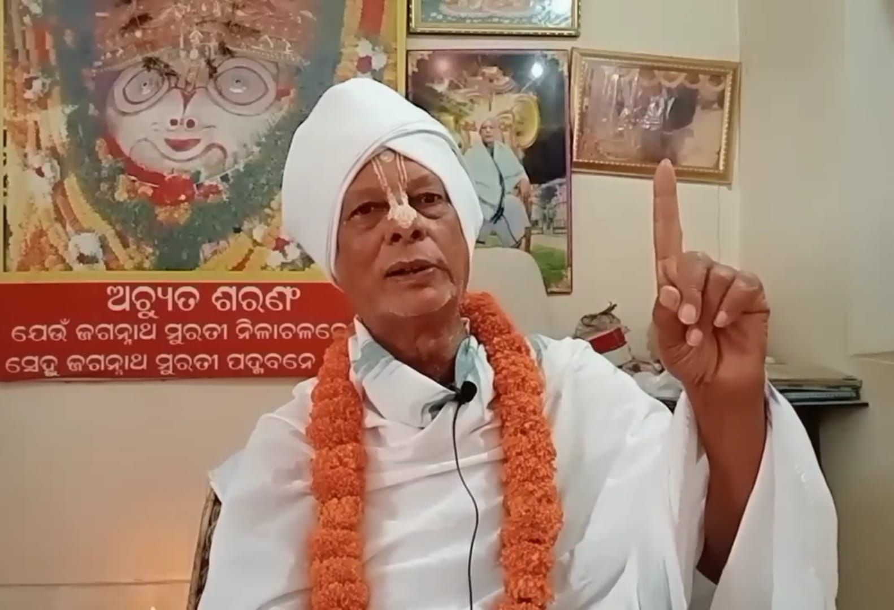
Tha e cudromach a thoirt fa-near, anns an 14mh ginealach de Mahapurush Achyutananda Das, gur e a shliochd agus Shri Gaganānanda Goswamiji, a tha an-dràsta 85–90 bliadhna a dh'aois, Ceannard suidheachan spioradail a' Mahapurush, Padmaban, Nemalo. Tha seo cuideachd a' dèanamh soilleir gu bheil am Mahapurush a' bruidhinn mun ùine làithreach.
Bho na ceithir puingean gu h-àrd, tha e soilleir, a rèir na Malika, gun tig am Meena-Shani anns am bi na Kalki sanhaar-leelas (gnìomhan diadhaidh sgriosail) a' tachairt ro bhliadhna 2033, agus rè na h-ùine Meena-Shani sin, bidh Shri Divyasingha Deva na Rìgh Puri agus bidh Shri Gaganānanda na Mahant air a' Padmaban Peeth, Nemalo. Chan e a-mhàin seo, ach air an latha a thèid Saturn a-steach do Pisces, bidh Shad-graha (Yoga 6-phlanaid) a' cruthachadh ann am Pisces.
Tha e soilleir gu bheil am Mahapurush a' comharrachadh a dh'ionnsaigh an Meena-Shani a' ruighinn eadar 2025–2028 oir tha na ceithir puingean gu h-àrd a' buntainn a-mhàin ris an Yoga Meena-Shani seo agus chan ann ri gin eile.
Chan fheumar a ràdh, a rèir na Malika, gun tachair na prìomh thachartasan tubaisteach a thèid a dhèanamh leis an Tighearna Kalki eadar 2025–2028.
Nota: An-diugh tha cuid de dhaoine ag ràdh nach e am Meena-Shani a tha air ainmeachadh anns an Malika am Meena-Shani làithreach, ach an ath fhear a ruigeas ann an 2054! Bhiodh e iomchaidh do gach luchd-adhraidh aig a bheil creideamh anns an Malika gun a bhith air an troimh-chèile le seo, oir tha a leithid de dh'aithrisean gu tur ceàrr.
Anns a' chaibideil roimhe, chunnaic sinn gun tachair a h-uile prìomh thachartas de stèidheachadh Dharma rè riaghladh Rìgh Puri, Shri Divyasingha Deva. Anns a' chaibideil seo, tuigidh sinn seo tro chuid de rannan eile den Malika.
Sgrìobh fear de na Panchasakhas, Mahapurush Jagannath Das, anns an teacsa Malika aige ‘Kali Malika’:
Sloka Odia:
ପୁରୁଷୋତ୍ତମ ଦେବ ରାଜା ଠାରୁ,
ଉନ୍ନବିଂଶ ରାଜା ହେବ
ସେଠାରୁ।
ସେଠାରୁ ପୁଣ ରାଜା ନାହିଁ ଆଉ,
ଅକୁଳି ହୋଇବେ କୁଳକୁ ବହୁ।
Tar-sgrìobhadh:
Puruṣottama Deba rājā ṭhāru,
unnabiṃsha rājā heba seṭhāru.
Seṭhāru puṇa rājā
nāhiṃ āu,
akuḷi hoibe kuḷaku bahu.
Ma choimheadas sinn air an t-suidheachadh làithreach, gheibh sinn a-mach gur e Rìgh Puri an-dràsta an 19mh Rìgh agus gu bheil e cuideachd gun mhac. Is e comharradh soilleir a' Mahapurush gun tachair a h-uile Kalki-cluich (cluich diadhaidh) de stèidheachadh Dharma rè riaghladh an rìgh làithreach.
Sgrìobh Mahapurush Achyutananda Das anns an teacsa Malika aige ‘Adi Samhita’:
Sloka Odia:
ଶ୍ରୀ ଦିବ୍ୟସିଂହ ନାମେ ରାୟେ,
ଏ ଯୁଗ ପ୍ରାନ୍ତେ ସେ ଉଦୟେ।
Tar-sgrìobhadh:
Shri Dibyasiṃha nāme rāye,
e juga prānte se udaye.
Ann an teacsa Malika eile, sgrìobh e:
Sloka Odia:
ଦିବ୍ୟସିଂହ ଅଙ୍କେ ବାବୁ ସରବ ଦେଖିବୁ,
ଛାଡ଼ି ଚକା ଗଲୁ ବୋଲି ନିଶ୍ଚୟ
ଜାଣିବୁ,
ନର ବାଳୁତ ରୂପରେ ଆମ୍ଭେ ଜନମିବୁ।
Tar-sgrìobhadh:
Dibyasiṃha aṅke bābu saraba dekhibu,
chhāḍi chakā galu boli nishchaya
jānibu,
nara bāḷuta rūpare āmbhe janamibu.
An uairsin anns an teacsa Malika ‘Kalikalpa Gita’, sgrìobh Achyutanandaji:
Sloka Odia:
ବୃଦ୍ଧ ବାଳକ ରାଜା ହୋଇଥିବ,
ଗୁପତରେ ସଣ ସାଲ ଚାଲିବ।
ବାଳବୃଦ୍ଧ
ଅଙ୍କେ ବତାସ ହେବ,
ଜଳ ପବନ ବତାସ ବହିବ।
ଜଳ ପବନ ବତାସ ବହିବ,
ପୃଥିବୀ ହୀନମାନ ବହୁ
ହୋଇବ।
Tar-sgrìobhadh:
Bruddha bāḷaka rājā hoithiba,
gupatare saṇa sāla chāliba.
bāḷabruddha aṅke
batāsha heba,
jaḷa pabana batāsha bahiba.
jaḷa pabana batāsha
bahiba,
pṛthibī hīnamāna bahu hoiba.
Tha fios gun robh, am measg nan rìghrean a chaidh a dhèanamh gu ruige seo, nach robh gin ach Shri Divyasingha Deva na rìgh bho leanabachd gu seann aois. Chaidh an Rìgh làithreach Shri Divyasingha Deva suas air an rìgh-chathair air 7 Iuchar 1970, aig aois dìreach 17. Fhad 's a bha e san t-suidheachadh seo, tha e air a dhol a-steach do sheann aois agus tha e an-dràsta timcheall air 72 bliadhna a dh'aois. Tro an rann seo, ann an cànan samhlachail, nochd am Mahapurush gum bi Divyasingha Deva na rìgh aig deireadh Kaliyuga.
Sgrìobh Achyutananda Dasji tuilleadh anns an ‘Kalikalpa Gita’ aige:
Sloka Odia:
ଦିବ୍ୟସିଂହ ଦେବ ଅଙ୍କରେ ଜାଣ,
ଧୂମକେତୁ ହେବ
ପୂର୍ବଭାଗେଣ।
ଉଲ୍କାପାତ ହେବ ହାଲହୁଳି,
ଶ୍ୱାନ ଶୃଗାଳ ଛାଡ଼ିବେ ବୋବାଳି।
ମାତିବେ
କାଳୀ ଯେ କରାଳୀଗଣ,
ଲୋକେ ମରିବେ ହୋଇ ରଣଭଣ।
Tar-sgrìobhadh:
Dibyasiṃha Deba aṅkare jāṇa,
dhūmaketu heba pūrbabhāgeṇa.
ulkāpāta heba
hālahuḷi,
shwāna shṛgāḷa chhāḍibe bobāḷi.
mātibe kāḷī je karāḷīgaṇa,
loke
maribe hoi raṇabhaṇa.
Chuir am Mahapurush fios goirid tro an rann gu h-àrd gun tachair tachartasan stèidheachadh Dharma rè teirm Rìgh Puri leis an ainm Shri Divyasingha Deva aig deireadh Kaliyuga.
Thuirt am Mahapurush ri a dheisciobal Ramadas ann an teacsa Malika eile:
Sloka Odia:
କେଉଁ କାଳ ବୋଲି ବୋଇଲୁ ଶୁଣ ରାମ ରତନ,
ଥିବ ଦିବ୍ୟସିଂହ ରାଜନ କୋଳେ
କନ୍ୟା ରତନ।
Tar-sgrìobhadh:
Keuñ kāḷa boli boilu śuṇa Rāma ratana,
thiba Dibyasiṃha rājana koḷe kanyā ratana.
Sgrìobh Mahapurush Achyutananda Das ann an aon de na teacsaichean Malika aige:
Sloka Odia:
ବାରଣ ବେଳକୁ କରିବ ଦିବ୍ୟସିଂହ ନୃପତି,
ତାଙ୍କ କୁଳେ ପୁତ୍ର ନୋହିବ ଭଣେ
ଦୀନ ଅଚ୍ୟୁତୀ।
Tar-sgrìobhadh:
Bāra bāra beḷaku kariba Dibyasiṃha nṛpati,
tāṅka kuḷe putra nohiba bhaṇe dīna
Achyutī.
Tha an fhàidheadaireachd seo den Mahapurush cuideachd a' freagairt air Rìgh Puri làithreach, Shri Divyasingha Deva, gu foirfe. Tha an Rìgh làithreach gun mhac; chan eil aige ach ceithir nigheanan.
Ann an teacsa Malika eile aige, ‘Kaliyuga Gita’, sgrìobh Mahapurush Achyutananda Das na faclan a bhruidhinn an Tighearna Krishna ri Arjuna ann an Dwaparayuga, anns an tuirt an Tighearna Krishna:
Sloka Odia:
ଶ୍ରୀକ୍ଷେତ୍ର ରାଜନ ମୋର ନ ସେବି ପୟର।
Tar-sgrìobhadh:
Shrikshetra rājana mora na sebi payara.
Sgrìobh Achyutananda Dasji an uairsin:
Sloka Odia:
ନ ଥିବ ରାଜନ ଶ୍ରୀକ୍ଷେତ୍ରେ କ୍ଷେତ୍ର ମଉଡ଼ ମଣି,
ରାଜ୍ୟ ରାଜକୁଳ
କନ୍ୟାକୁ ନ କରିବ ବର୍ଣ୍ଣି।
Tar-sgrìobhadh:
Na
thiba rājana Shrīkṣetre kṣetra mauḍa maṇi,
rājya rājakuḷa kanyāku na kariba barṇṇi.
Sgrìobh naomh mòr à Odisha a rugadh anns an 18mh linn, Mahapurush Arakshita Das, anns an teacsa Malika aige ‘Dwadasa Chandrika’:
Sloka Odia:
ଦିବ୍ୟସିଂହ ଦେବ ନୃପତି ନିଶ୍ଚୟ ଆସିବେ ଫେରି,
କ୍ଷେତ୍ରକୁ ନ ଯାଇ ରହିବେ
ଜାଣ ସେ ଖଣ୍ଡଗିରି।
ଭେଦ ମୁଁ କାହୁଁ ଜାଣିଥାନ୍ତି ଆଦିମାତା କହିଲେ,
ଭଣେ ଅରକ୍ଷିତ ଅଧମ ତହୁଁ
ଶୁଣିଲି ଭଲେ।
Tar-sgrìobhadh:
Dibyasiṃha Deba nṛpati nishchaya āsibe pheri,
kṣhetraku na jāi rahibe jāṇa se
Khaṇḍagiri.
bheda muñ kāhuñ jāṇithānti Ādimātā kahile,
bhaṇe Arakṣhita adhama
tahuñ śuṇili bhale.
Leig leam innse do na leughadairean gun robh a h-uile rìgh ron Rìgh làithreach a' fuireach ann am Puri, Odisha, agus a' coileanadh seirbheis làitheil an Tighearna Jagannath, ach tha an Rìgh làithreach Shri Divyasingha Deva a' coileanadh seirbheis an Tighearna Jagannath a-mhàin air cuid de thachartasan sònraichte. Chan eil e a' fuireach ann am Puri ach tha e a' fuireach ann an Shahid Nagar, Bhubaneswar. A bharrachd air sin, cha do phòs Shri Divyasingha Deva bana-phrionnsa à Odisha ach phòs e nighean an Leifteanant Coirneal Anant Singh Charak à Jammu.
Tha na trì fàidheadaireachdan gu h-àrd a' freagairt air Rìgh Puri làithreach, Shri Divyasingha Deva, gu foirfe. Tha seo cuideachd na dhearbhadh gun tig Kaliyuga gu crìch rè teirm an Rìgh Shri Divyasingha Deva.
Sgrìobh Mahapurush Achyutananda Das ann an teacsa Malika eile aige ‘Tera Janma Sharana’:
Sloka Odia:
ମାଘ ସପ୍ତମୀରେ ବିକାଶ ହୋଇବ ଦିବ୍ୟସିଂହ ନୃପବର,
ଅନନ୍ତ କେଶରୀ ରାଜତ୍ୱ
କରିବେ ଏହି ଏକାମ୍ର ନଗର।
Tar-sgrìobhadh:
Māgha Saptamīre bikāsha hoiba Dibyasiṃha nṛpabara,
Ananta Keshari rājattwa karibe
ehi Ekāmra Nagara.
Tha an rann seo cuideachd a' dearbhadh nach bi Rìgh Puri aig àm cluich diadhaidh Kalki ach Shri Divyasingha Deva.
Anns an teacsa Malika aige ‘Mohakalpa’, thug Achyutanandaji comharradh eile a’ soilleireachadh gur e Shri Divyasingha Deva an rìgh mu dheireadh ann am Puri. Tha am Mahapurush a’ sgrìobhadh:
Sloka Odia:
ଲଲାଟ କେଶରୀ ଧନୁଶର ଧରି ଆଗେ ସେ ଯୁଦ୍ଧ କରିବେ,
ଦିବ୍ୟସିଂହ ଦେବ ନୃପତି
ଯେ ଜାଣ ବୈଷ୍ଣବ ଧର୍ମ ଛାଡିବେ।
କ୍ଷତ୍ରି ବୃତ୍ତି ଧରି ପଦାତିଙ୍କ ସହ କରିବେ ବହୁ
ସମର,
ପ୍ରଭୁଙ୍କ ଦେଖି ଦିବ୍ୟସିଂହ ଦେବ ପଡିବେ ପଦ୍ମପାଦର।
ନବଲକ୍ଷ ଧର୍ମ-ହୀନ ବ୍ୟକ୍ତି ତହିଁ
ତୁରିତେ ହେବେ ଛେଦନ,
ଲଲାଟ କେଶରୀ ଯୁଦ୍ଧ ଘାତେ ତହିଁ ମେଦିନୀ ଯେ କମ୍ପମାନ।
କ୍ଷେତ୍ର ଠାରୁ
ଆଦି ଓଡିଶା ରାଜ୍ୟରେ ଯେତେକ ବ୍ରାହ୍ମଣ ଥିବେ,
ଗାୟତ୍ରୀ ମନ୍ତ୍ରକୁ ପରୀକ୍ଷା ନ ଦେଇ ସମସ୍ତେ ତହିଁ
ମରିବେ।
ଦିବ୍ୟସିଂହ ଦେବ ବ୍ରାହ୍ମଣମାନଙ୍କୁ ଗାୟତ୍ରୀ ମନ୍ତ୍ର ପୁଛିବେ,
ବ୍ରାହ୍ମଣ ହତ୍ୟା
ବୋଲି ବ୍ରାହ୍ମଣମାନଙ୍କୁ କହି ବଧ୍ୟ ନ କରିବେ।
ଦିବ୍ୟସିଂହ ଦେବ ପରୀକ୍ଷା କରିବେ ଗାୟତ୍ରୀ ମନ୍ତ୍ରକୁ
ଜାଣ,
ଯେଉଁ ବ୍ରାହ୍ମଣଟି ପରୀକ୍ଷା ନ ଦେବ ନାଶିବ ଯେ ସୁଦର୍ଶନ।
ଅନନ୍ତ କେଶରୀ ସୁଦର୍ଶନ ଚକ୍ର
ଶୂନ୍ୟ ଗଗନେ ରଖିବେ,
ଚଉଷଠି ଅକ୍ଷର ପ୍ରମାଣ ନ ପାଇ ଶୂନ୍ୟରେ ଥାଇ ଛେଦିବେ।
Tar-sgrìobhadh:
Lalāṭa Kesharī dhanushara dhari āge se juddha karibe,
Dibyasiṃha Deba nṛpati je
jāṇa baiṣṇaba dharma chhāḍibe.
Kṣatri bṛutti dhari padātiṅka saha karibe bahu
samara,
Prabhuṅka dekhi Dibyasiṃha Deba paḍibe padmapādara.
Nabalakṣa
dharma-hīna byakti tahiṃ turite hebe chhedana,
Lalāṭa Kesharī juddha ghāte tahiṃ
medinī je kampamāna.
Kṣetra ṭhāru ādi Oḍishā rājyare jeteka brāhmaṇa
thibe,
Gāyatrī mantraku parīkṣā na dei samaste tahiṃ maribe.
Dibyasiṃha Deba
brāhmaṇamānaṅku Gāyatrī mantra puchhibe,
Brāhmaṇa hatyā boli brāhmaṇamānaṅku kahi
badhya na karibe.
Dibyasiṃha Deba parīkṣā karibe Gāyatrī mantraku jāṇa,
Jeuṃ
brāhmaṇaṭi parīkṣā na deba nāshiba je Sudarshana.
Ananta Kesharī Sudarshana chakra
shūnya gagane rakhibe,
Chauṣaṭhi akṣara pramāṇa na pāi shūnyare thāi chhedibe.
An seo, tha am Mahapurush a’ toirt seachad dearbhadh gun coinnich Rìgh Puri, Shri Divyasingha Deva, ris an Tighearna Kalki agus gun cuir e ri stèidheachadh Dharma. Tha e soilleir gun tachair gnìomhan sgriosail an Tighearna Kalki rè ùine Shri Divyasingha Deva.
An uairsin tha am Mahapurush a’ sgrìobhadh anns an teacsa Malika aige ‘Kalpa Tika’:
Sloka Odia:
ଦିବ୍ୟସିଂହ ଦେବ ସେ ଯେ କ୍ଷତ୍ରିୟ ରାଜନ,
ତାହାଙ୍କୁ ଫିରିଙ୍ଗୀ କରିଥିବେ
ସେ ବନ୍ଧନ।
କ୍ଷେତ୍ରର ନୃପତି ଦିବ୍ୟସିଂହ ଯେ ରାଜନ,
ତାହାଙ୍କୁ ଯେ ରଖିଥିବେ ଶ୍ରୀ ହରି
ଗୋପନ।
ବନ୍ଧନର ଦୁଇ ଦିନରେ ପ୍ରଭୁ ଯେ ଶ୍ରୀ ହରି,
ରାତ୍ରିକାଳେ ରାଜା ପାଶେ ବିଜେ ଯେ ଶ୍ରୀ
ହରି।
ରାଜାର ବନ୍ଧନ ଫେଇ ପ୍ରଭୁ ବାସୁ ଦେବେ,
ଖଣ୍ଡଗିରି ତଳ ପୁରେ ଗୋପନେ ରଖିବେ।
Tar-sgrìobhadh:
Dibyasiṃha Deba se je Kṣhatriya rājana,
tāhānku Phiringī karithibe se
bandhana.
Kṣhetrara nṛupati Dibyasiṃha je rājana,
tāhānku je rakhithibe Shrī
Hari gopana.
Bandhanara dui dinare Prabhu je Shrī Hari,
rātrikāḷe rājā pāśe
bije je Shrī Hari.
rājāra bandhana phei Prabhu bāśu debe,
Khaṇḍagiri taḷa pure
gopane rakhibe.
A bharrachd air sin, tha Mahapurush Achyutananda Das a’ sgrìobhadh anns an teacsa Malika aige ‘Padmakalpa Tika’:
Sloka Odia:
ଅନନ୍ତ ଗୁମ୍ଫା ମଧ୍ୟରେ ମୋ ଭକ୍ତ ରହିବେ,
ସେହିବେଳେ ସରକାର ଖାଦ୍ୟ
ପକାଇବେ।
ଅନନ୍ତ କେଶରୀ ସ୍ୱାମୀ ଥିବେ ଖଣ୍ଡଗିରି,
ଦିବ୍ୟସିଂହ ଲଲାଟ କେଶରୀ ଆଦିକରି।
Tar-sgrìobhadh:
Ananta gumphā madhyare mo bhakta rahibe,
sehibeḷe sarakāra khādya
pakāibe.
Ananta Keshari swāmī thibe Khaṇḍagiri,
Dibyasiṃha Lalāṭa Keshari
ādikari.
Sgrìobh am Mahapurush a-rithist anns an teacsa Malika aige ‘Kalpa Tika’:
Sloka Odia:
ଅନନ୍ତ କେଶରୀ ସ୍ୱାମୀ ଥିବେ ଖଣ୍ଡଗିରି,
ଦିବ୍ୟସିଂହ ଦେବ ସେ ଯେ
ଲଲାଟକେଶରୀ।
ଖଣ୍ଡଗିରି ଠାବରେ ସେ ପ୍ରଭୁଙ୍କୁ ଦେଖିବେ,
ଲଲାଟକେଶରୀ ଦିବ୍ୟସିଂହକୁ ଚିହ୍ନିବେ।
Tar-sgrìobhadh:
Anaṃta kesharī swāmī thibe Khaṇḍagiri,
Dibyasiṃha deba se je
lalāṭakesharī.
Khaṇḍagiri ṭhābare se prabhuṃku dekhibe,
Lalāṭakesharī
Dibyasiṃhaku chihnibe.
Bho na trì rannan a chaidh a thoirt seachad gu h-àrd cuideachd, tha fios gun robh Rìgh Puri aig àm gnìomhan diadhaidh an Tighearna Kalki, Divyasingha Deva.
Tha am Bhavishya Malika làn de mhòran thachartasan dìomhair agus fhàidheadaireachdan. Am measg nan fàidheadaireachdan sin tha ro-innse mòran rìghrean a’ coinneachadh ris an Tighearna.
Tha am Mahapurush a’ sgrìobhadh anns an teacsa Malika aige gun tig àm san àm ri teachd nuair a ghabhas saighdearan cèin thairis bho Chhatia, Jajpur gu Nilagiri no Nilachal, Puri. Thèid eadhon arm mòr an nàmhaid a-steach do Teampall Jagannath. A’ faicinn seo uile ann an àmhghar mòr, cuimhnichidh an Tighearna, a tha air a ghabhail a-steach ann am peanas, air Sahadeva, Nakula, Ashwatthama, agus Shalya. Cho luath ‘s a chuimhnicheas an Tighearna orra, brisidh meòrachadh agus peanas nan ceithir gaisgich ghaisgeil sin, eòlaichean ann am boghadaireachd, agus ruigidh iad uile Chhatia agus tuitidh iad aig casan an Tighearna, ag iarraidh a àithne. Bheir an Tighearna àithne dhaibh an arm mòr Mughal a sgrios agus na luchd-dìleas a dhìon. A rèir àithne an Tighearna, sgriosaidh iad ceithir na saighdearan Mughal agus an uairsin tillidh iad chun an Tighearna. Aig an àm sin, bidh luchd-dìleas gun àireamh còmhla ris an Tighearna ann an Chhatia, agus airson 27 latha, bidh Chhatia na àite coinneachaidh dha na luchd-dìleas. Aig an àm seo, coinnichidh rìghrean na Ruis, Nepal, Manipur, Ali, Kujang, Kanika, msaa., ris an Tighearna, gheibh iad a Darshan, agus gèillidh iad iad fhèin aig a chasan. Aig an àm sin, bheir an Tighearna iad uile agus ruigidh e Sealdah gus iarraidh air an Tighearna Baladeva an còrr den arm cèin a sgrios. San dòigh seo, thèid na rìghrean uile leis an Tighearna gu Sealdah agus coinnichidh iad ri Baladeva, far am bi Arjuna agus Bhima mar-thà an làthair.
An seo tha am Mahapurush a’ sgrìobhadh gun robh aig an àm seo, am measg nan rìghrean a choinnicheas ris an Tighearna Ananta Keshari agus an Tighearna Baladeva, Rìgh Puri, Shrikshetra, cuideachd an làthair. A’ nochdadh cò a bhios e, tha am Mahapurush a’ sgrìobhadh anns an teacsa Malika aige:
Sloka Odia:
କ୍ଷେତ୍ରରେ ଯେ ରାଜା ଦିବ୍ୟସିଂହ ଦେବ ତାହାଙ୍କ ସଙ୍ଗତେ ସ୍ଥିତି।
Tar-sgrìobhadh:
Kṣhetre je rājā Dibyasiṃha Deba tāhāṅka saṅgate sthiti.
Bho na còmhraidhean gu h-àrd, tha e cuideachd soilleir gur e Shri Divyasingha Deva a bhios ann an Rìgh Puri aig àm gnìomhan diadhaidh Kalki.
Bho na 17 rannan gu h-àrd, tha e air a dhearbhadh gu soilleir aig deireadh Kaliyuga, nuair a rugadh an Tighearna Kalki agus nuair a thachras a ghnìomhan sgriosail air feadh an t-saoghail, nuair a thachras sgrios nan aingidh, saoradh nan luchd-dìleas, agus obair stèidheachadh Dharma, aig an àm sin bidh rìgh leis an ainm Divyasingha Deva na shuidhe air rìgh-chathair Jagannath Puri, agus bidh e cuideachd mar an rìgh mu dheireadh a dh’fhuiricheas san t-suidheachadh seo.
Bidh Shri Divyasingha Deva mar an rìgh mu dheireadh—sgrìobh Mahapurush Jagannath Das, fear de na Panchasakhas, seo anns an teacsa Malika aige, a dh’ainmich sinn anns a’ chiad rann den chaibideil seo.
Ach is e an rud as fhiach a thoirt fa-near nach e a-mhàin Jagannath Das, ach Mahapurush eile am measg nan Panchasakhas, Shishu Ananta Das, a sgrìobh air a’ chuspair seo anns an teacsa Malika aige ‘Patta Madana’. Tha am Mahapurush a’ sgrìobhadh:
Sloka Odia:
ଦିବ୍ୟସିଂହ ନୃପ ରାଜତ୍ୱ କରିବେ ଆଉ ଶାସନ ନ ଥିବ।
Tar-sgrìobhadh:
Dibyasiṃha nṛupa rājattwa karibe āu śāsana na thiba.
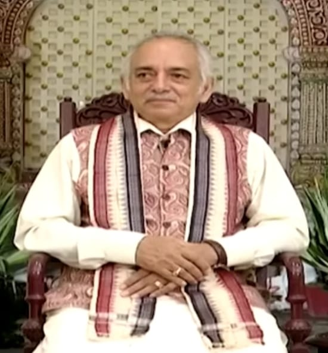
Is e an fhìrinn as fhiach a thoirt fa-near an seo nach do stad am Mahapurush dìreach le bhith ag ràdh gur e Divyasingha Deva ainm Rìgh Puri aig deireadh Kaliyuga; an àite sin, dh’innis e mòran rudan mu dheidhinn, leithid gum biodh e an 19mh rìgh, gum biodh e an ceathramh Divyasingha Deva, gum biodh e gun mhac, gum biodh dìreach nigheanan aige, nach biodh e a’ fuireach ann am Puri ach ann am Bhubaneswar, nach biodh e comasach dha seirbheisean làitheil an Tighearna Jagannath a choileanadh, gun gabhadh e rìgh-chathair na leanabachd agus gum fuiricheadh e na rìgh gus an aois, msaa.
Tha na rudan sin uile a’ freagairt gu foirfe ris an Rìgh Shri Divyasingha Deva a th’ ann an-dràsta.
Tha Mahapurush Achyutananda Das agus na Panchasakhas eile air sgrìobhadh ann an iomadh àite anns na teacsaichean Malika aca gum faigh luchd-dìleas mòran shoidhnichean bho Teampall Jagannath tro am bi e comasach dhaibh fios a bhith aca gu bheil Kali Yuga air tighinn gu crìch agus gu bheil an Tighearna Kalki air a bhith air a ghabhail a-steach. Chithear na soidhnichean sin chan ann a-mhàin bho Teampall Jagannath ach cuideachd bho mhonaidhean agus teampaill eile anns na h-Innseachan, ach gu sònraichte bidh iad rim faicinn bho Teampall Jagannath a tha suidhichte ann am Puri.
Sloka Odia:
ବାରମ୍ବାର ଶ୍ରୀ ମନ୍ଦିରରେ ପୁଣି,
ନାନା ଅଘଟଣ ସତ୍ୟ ମୋ ବାଣୀ।
Tar-sgrìobhadh:
Bārambāra shrīmandirare puṇi,
nānā aghaṭana satya mo bāṇī.
An-diugh tha sinn a’ faighinn a-mach thar nan 15-20 bliadhna a dh’fhalbh, gun deach mòran droch chomharran fhaicinn aig Teampall Jagannath, leithid clach mhòr a’ tuiteam bho “Amla Bedha” an teampall ann an 1990; clachan a’ tuiteam chun na talmhainn bho structaran àrda an teampall, a’ gabhail a-steach an sanctum sanctorum, iomadh uair anns na bliadhnachan mu dheireadh; eòin dhubhach (a bhios ag ithe carrion) nan suidhe air crann-brataich an teampall agus an Aruna Stambha air beulaibh an Singhadwara (Geata an Leòmhann); iomadh iolair a’ cuairteachadh os cionn an teampall; an còmhdach le seudan (Ratnachandua) a chaidh a chur os cionn nan diathan a’ gabhail teine; am ‘Patitapabana Bana’ (bratach) a chaidh a thogail air mullach an teampall a’ gabhail teine; an Neelachakra 2.2-tunna, air a dhèanamh de Ashtadhatu (ochd meatailtean), a’ lùbadh le gaothan àrd-astar; am ‘Patitapabana Bana’ a’ sèideadh air falbh agus a’ tuiteam dhan mhuir rè doineann dhian; meur den Kalpavata mòr (craobh-fhige) a tha suidhichte ann an togalach an teampall a’ briseadh; am Patitapabana Bana a’ losgadh mar thoradh air stailc dealanaich; timcheall air 40 stòbha crèadha air an sgrios le luchd-milleadh ann an cidsin naomh an teampall; sgàinidhean gan lorg ann an Aruna Stambha an teampall, an sailean taobh a-staigh an Natamandapa, an talla air beulaibh an sanctum sanctorum (Jagamohana), agus faisg air an Singhadwara; a’ chlach ‘Padma Pakhuda’ (peatal lotus) a’ dol a dhìth bhon Ratnasinghasana (rìgh-chathair le seudan); stailc dealanaich air cidsin an teampall; mèirlich a’ tachairt anns an teampall tron oidhche; àrdachadh ann an radain anns an teampall mar thoradh air an àireamh nas lugha de luchd-dìleas rè galar lèir-sgaoilte Corona, ag adhbhrachadh dragh agus a’ cur dragh air deas-ghnàthan an teampall; frasan fala gan lorg ann an iomadh àite a’ gabhail a-steach Ratnasinghasana an teampall, air a leantainn leis an amar mòr deas-ghnàthach (Mahasnana) den Chaturdha Murti (ceithir diathan); an speur a’ tionndadh dearg timcheall air an teampall; an t-seargadh obann de ialtagan a bha roimhe seo rim faicinn ann am pailteas anns an teampall; cleachdadh fònaichean-làimhe a dh’aindeoin gu bheil iad toirmisgte anns an teampall; clàradh bhidio meallta ann an togalach an teampall a’ cleachdadh camarathan-brathaidh falaichte ann an speuclairean; inntrigeadh neo-Hinduich agus neo-Sanatanis a-steach don teampall a dh’aindeoin an toirmeasg; fèin-mharbhadh no bàsan mar thoradh air adhbharan eile a’ tachairt taobh a-staigh an teampall; bàsan air a’ Baisi Pahacha, is e sin, na 22 ceum den teampall; sgàinidhean gan lorg ann an Gumuta (cùpol) Hasti Dwara an teampall (Geata a Tuath), msaa.
Gheibhear fàidheadaireachdan fa leth a thaobh cuid de na tachartasan sin ann an diofar theacsaichean Malika, far a bheil e air a ràdh gu soilleir nach tachair na tachartasan sin ach aig deireadh Kali Yuga agus gun toir iad comharradh do luchd-dìleas mu theachd an Tighearna Kalki air an talamh. Mar sin, bu chòir dhaibhsan a tha a’ cur an cèill an teagamhan agus an dì-chreideamh an-diugh a thaobh deireadh Kali Yuga agus gabhail a-steach an Tighearna Kalki ath-bheachdachadh air na beachdan aca.
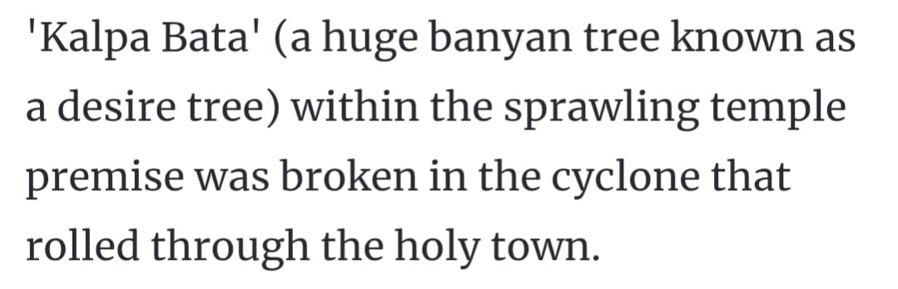
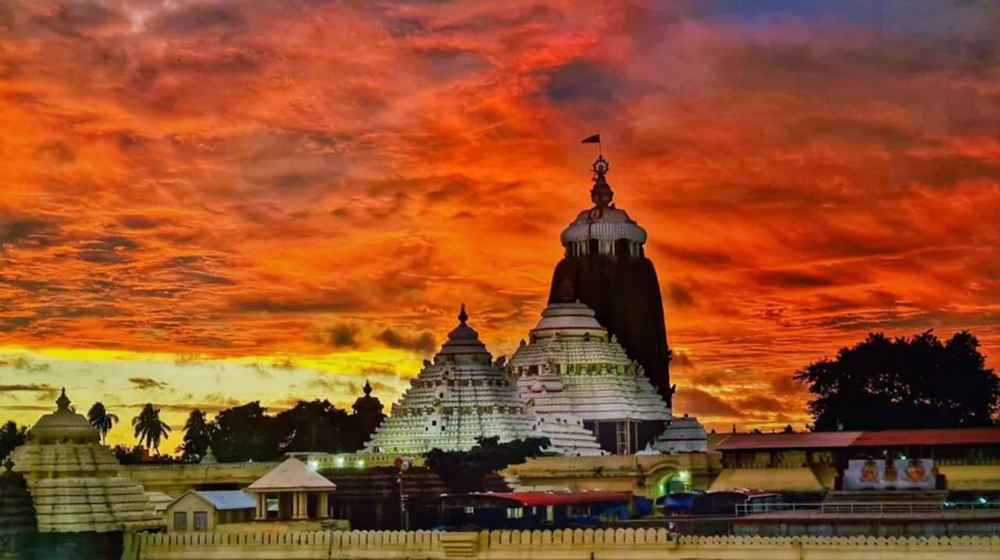
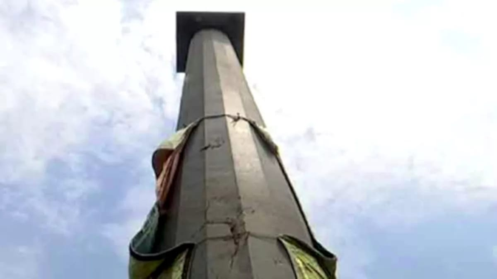
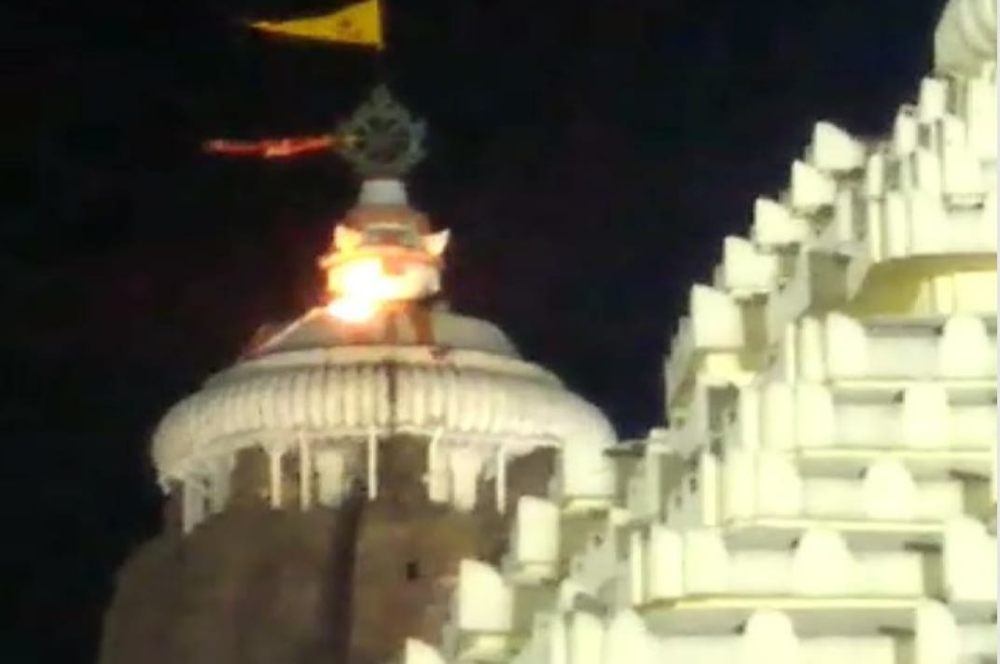
Sgrìobh Mahapurush Achyutananda Das anns an ‘Jaiphula Malika’ aige:
Sloka Odia:
ବଡ଼ ଦେଉଳୁଁ ପଥର,
ଖସୁଥିବ ପୁଣି ଥରକୁ ଥର ଲୋ ଯାଇଫୁଲ,
ତୁହି
ଦେଖିବୁ ବେନି ନେତ୍ରର।
Tar-sgrìobhadh:
Baḍa deuluṃ pathara,
khasuthiba puṇi tharaku thara lo jāiphula,
tuhi dekhibu
beni netrara.
Ma bheachdaicheas sinn air fìrinn na fàidheadaireachd seo, gheibh sinn a-mach gun do thachair tachartasan mar sin iomadh uair às dèidh do chlach le cuideam 5-6 tunna tuiteam bho “Amla Bedha” an teampall air 14 Ògmhios 1990. Air 13 Lùnastal 1992, thuit dà chlach mhòr gu dìreach a-steach do sanctum sanctorum an teampall. San aon dòigh, air 26 Dàmhair 1998, rolaich creag 15 kg sìos bho phrìomh theampall agus thuit i faisg air teampall Bimala taobh a-staigh iomall togalach a’ phrìomh theampall. Air 1 Samhain 2011, thuit clach le cuideam timcheall air 1 tunna sìos bho faisg air Dadhinauti geata an iar Teampall Jagannath.
Cuideachd ann am bliadhna 2015, air 2 Gearran, thuit clach a bha 30-40 kg ann an cuideam chun na talmhainn bhon Jalakrida Mandapa a chaidh a thogail faisg air Teampall Bimala ann an taobh an iar Teampall Jagannath. A' bruidhinn air amannan o chionn ghoirid, air 3 Lùnastal 2022, thuit pìos plàstair a bha mu 1.5 kg ann an cuideam bho mhullach an naomh-naomh den teampall seo a chaidh a thogail san dàrna linn deug. Air 23 Dàmhair 2022, thuit clach bho oisean an ear-dheas an teampaill faisg air an Majana Mandapa agus Charcha Ghara, agus taobh a-staigh seachdain de seo, air 28 Dàmhair 2022, thuit clach 2-3 kg bhon treas sreath os cionn ìomhaigh Sakhi faisg air làrach-ceangail an Natamandapa agus Jagamohana. Fiù 's ann am bliadhna 2024, air 9 Màrt, thuit clach a bha mu cheithir cileagram ann an cuideam bho mhullach Teampall Baraha a tha suidhichte air beulaibh Teampall Bimala ann an raon Teampall Jagannath.
San dòigh seo, tha am fàisneachd a rinn Mahapurush Achyutananda Das o chionn linntean mu chlachan a' tuiteam "tharaku thara" (a-rithist is a-rithist) bho Theampall Jagannath air a dhearbhadh fìor anns na beagan bhliadhnaichean a dh'fhalbh.
Sloka Odia:
ବଡ଼ ଦେଉଳରୁ ମୋର ପଥର ଖସିବ,
ସେହିଦିନଠାରୁ ସଖୀ ବିପଦ
ପଡ଼ିବ।
ଅଅଁଳା ବେଢ଼ାରୁ ପଥର ଖସିବ ଯୁଗ ଶେଷ ହେବାପାଇଁ,
ଜାଣି ମୁଁ ଗରୁଡ଼ ଏ ଶକୁନମାନ ଗୁପତେ
ଦେଲି ଚେତେଇ।
ଅଅଁଳା ବେଢ଼ାରୁ ଏକ ପଥର ଖସିବ,
ତେଇଶି ବରଷେ କଳି ଦେଶ ଛାଡ଼ି
ଯିବ।
ଚୁଳରୁ ପଥର ଯେବେ ଖସିବ ସୁତ,
ଖସିଲେ ଅଅଁଳା ବେଢ଼ାରୁ ହେବ ଏ କଳି ହତ।
ମୋର ବଡ଼
ଦେଉଳରୁ ଖସିବ ପଥର,
ଶ୍ରୀକ୍ଷେତ୍ର ରାଜନ ମୋର ନ ସେବି ପୟର।
ବସିବ ଯେ ଗୃଧ୍ର ପକ୍ଷୀ ତୋ ଦେଉଳ
ଚୁଳେ,
ଖସିବ ପଥର ଖଣ୍ଡ ପଡ଼ିବ ଯେ ତଳେ।
ବତାସରେ ହେ। ନୀଳଚକ୍ର ବକ୍ର ହେବ ବାରେ
ହେ।
ବଡ଼ ଦେଉଳରୁ ମୋର ଖସିବ ପଥର,
ବସିବ ଯେ ଗୃଧ୍ର ପକ୍ଷୀ ଅରୁଣ ଖମ୍ବର।
ବତାସର ହେ।
ବକ୍ର ହେବ ନୀଳଚକ୍ର ମୋର ହେ।
ତରକିବେ ତେରଜଣ ଜାଣିଥା ନିକର,
ବଡ଼ ଦେଉଳୁ ପଥର ଖସି
ବାରମ୍ବାର।
ଗୃଧ୍ରପକ୍ଷୀ ମଥାପରେ ବସିଣ ଯେ ଯିବ,
ସେହିଦିନୁ ହତଶିରୀ ପୃଥ୍ବୀ ହୋଇବ।
Tar-sgrìobhadh:
Baḍa deularu mora pathara khasiba,
sehidinaṭhāru sakhī bipada paḍiba.
Aaṃlā
beḍhāru pathara khasiba yuga sheṣha hebāpāiṃ,
jāṇi mu Garuḍa e shakunamāna gupate
deli chetei.
Aaṃlā beḍhāru eka pathara khasiba,
teishi baraṣhe kali desha
chāḍi jiba.
Chularu pathara jebe khasiba suta,
khasile aaṃlā beḍhāru heba e
kali hata.
Mora baḍa deularu khasiba pathara,
Shrīkṣhetra rājana mora na sebi
payara.
Basiba je giddha pakṣhī to deula chule,
khasiba pathara khaṃḍa paḍiba
je tale.
Batāsare he. Nīlachakra bakra heba bāre he.
Baḍa deularu mora khasiba
pathara,
basiba je giddha pakṣhī Aruṇa khambara.
Batāsara he. Bakra heba
Nīlachakra mora he.
Tarakibe terajaṇa jāṇithā nikara,
baḍa deulu pathara khasi
bārambāra.
Giddhapakṣhī mathāpare basiṇa je jiba,
sehidinu hatashirī pṛithwī
hoiba.
Bidh iongnadh air luchd-leughaidh fios a bhith aca gu bheil na fàisneachdan uile a chaidh ainmeachadh gu h-àrd, a chaidh a sgrìobhadh o chionn linntean, air tighinn gu buil an-dràsta ann an Teampall Jagannath. Am measg uisgeachan troma, an toiseach, air 14 Ògmhios 1990, thuit clach a bha 5-6 tunna ann an cuideam bhon "Amla Bedha" den teampall. An uairsin, chaidh eun mì-fhortanach a lorg na shuidhe air an Aruna Stambha cuideachd.
Is fhiach a thoirt fa-near nach fhacas eun a-riamh ag itealaich os cionn teampall Jagannath Puri, agus dh'fhàilnich air luchd-saidheans agus luchd-rannsachaidh mion-sgrùdadh a dhèanamh air carson a thachair seo idir. Ach anns an ùine dheireannaich seo de Kali Yuga, a' dearbhadh fàisneachdan na Malika fìor, chaidh eòin mì-fhortanach mar chlamhan/fithich fhaicinn nan suidhe air an Patitapabana Bana (crann-bratach) air mullach an teampaill iomadh uair. Anns na bliadhnaichean a dh'fhalbh, thachair an aon rud air 11 Lùnastal 2018, 26 Dùbhlachd 2018, agus 23 Iuchar 2020, nuair a chaidh eòin mì-fhortanach fhaicinn nan suidhe air crann-bratach an teampaill. Air 7 Dùbhlachd 2021, chaidh gun àireamh de na h-eòin sin fhaicinn a' cuairteachadh ann an treud os cionn Teampall Jagannath. Chaidh tachartas coltach ris fhaicinn a-rithist air 17 Lùnastal 2022. Cha do stad an t-sreath seo an seo; anns na mìosan Cèitean, Ògmhios, agus Sultain de bhliadhna 2023, chunnaic luchd-còmhnaidh Puri an tachartas mì-thlachdmhor seo a-rithist nuair a chaidh eòin coltach ris fhaicinn nan suidhe air a' chrann-bratach a chaidh a chuir suas air mullach an teampaill.
O chionn ghoirid ann am bliadhna 2025 cuideachd, chaidh eun fhaicinn air mullach an Aruna Stambha air 4 Sultain, fhad 's a chaidh clamhan fhaicinn nan suidhe air mullach an teampaill air 2 Sultain, 16 Sultain, agus 14 Dàmhair. Air 9 Dùbhlachd, chaidh gun àireamh de dh'eòin a lorg a' cuairteachadh an Shrimandir.
A bharrachd air seo uile, lùb an stoirm ro-dhian, 'Fani', a bhuail costa Puri air 3 Cèitean 2019, an Neelachakra air mullach an teampaill, mar sin a' coileanadh fàisneachd eile a chaidh a sgrìobhadh o chionn linntean san t-sreath seo.
Is fhiach a thoirt fa-near nach e dìreach soidhnichean de dheireadh Kali Yuga a th' anns na fàisneachdan sin a chaidh a sgrìobhadh anns an 16mh linn, ach tha iad cuideachd nan soidhnichean a thug na Panchasakhas seachad mu thighinn an Kalki Avatar, oir cha tig an Kalki Avatar ach aig deireadh Kali Yuga, mar a tha air a ràdh anns a h-uile sgriobtar a' gabhail a-steach am Bhavishya Malika.
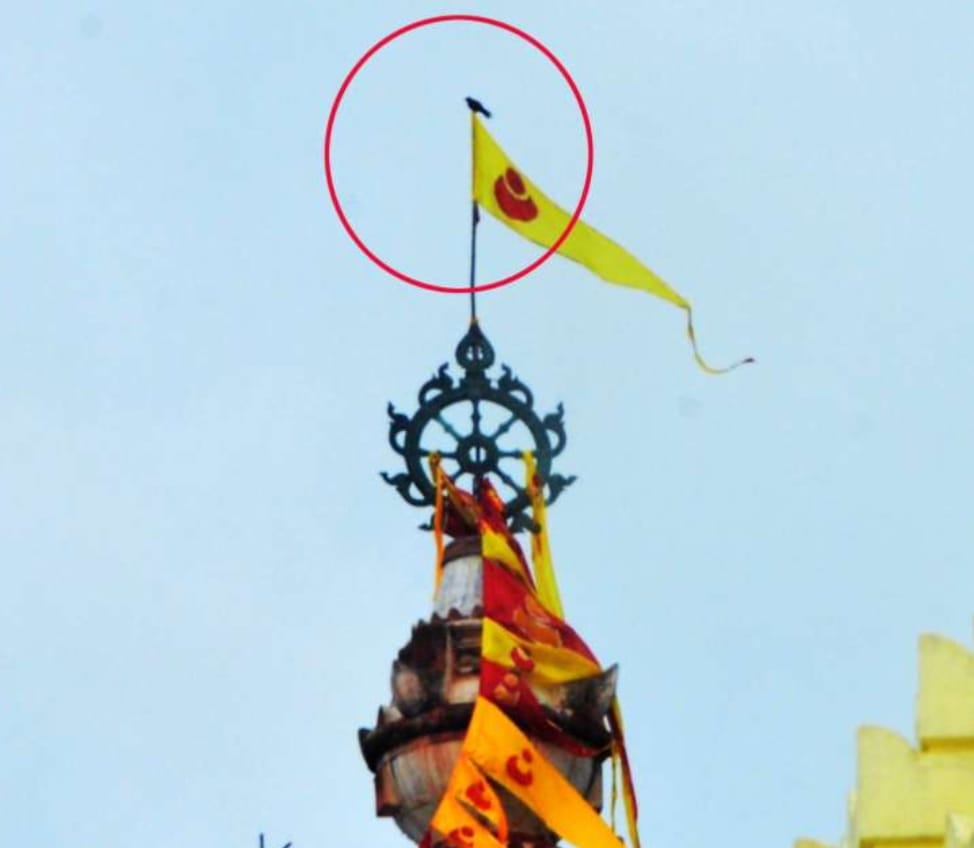
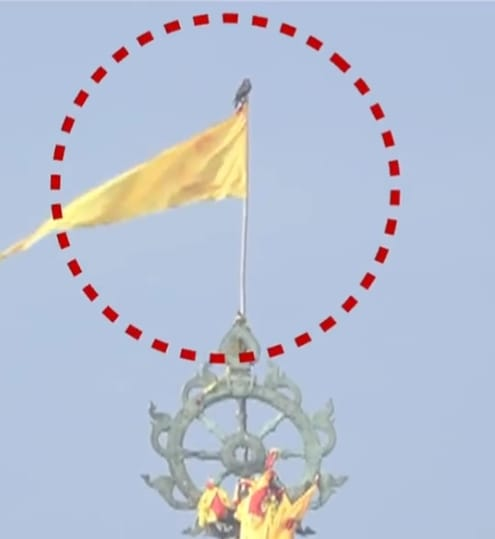
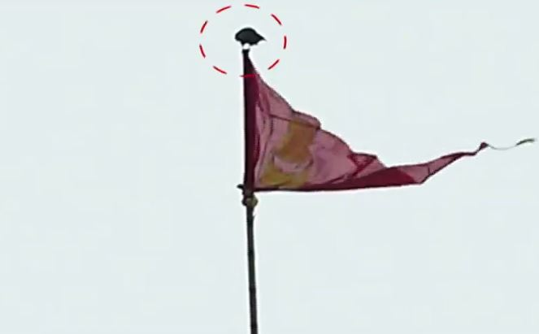
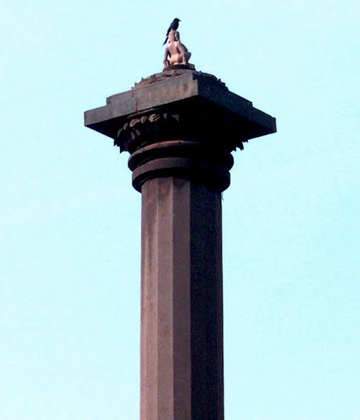
Sloka Odia:
ନୀଳଚକ୍ର ଧ୍ବଜା ଖସିବ ପ୍ରଭୁ ରଙ୍ଗା ଅଧର,
ଯାଜନଗ୍ରେ ଜନମ ହୋଇବେ ବିଷ୍ଣୁ
ଶର୍ମା ଗୃହର।
ହର ଉଦ୍ୟାନରେ ମାୟା ପ୍ରକାଶିବ ମ୍ଳେଚ୍ଛକୁ ଗ୍ରାସୁଥିବେ,
ନୀଳଚକ୍ର ବାନା ଝଡ଼ିବ
ନିଶ୍ଚୟ ଭକତଙ୍କୁ ଲୋଡ଼ିଯିବେ।
ନୀଳଚକ୍ର ପରୁ ପତାକା ଛିଡ଼ିଣ ପଡ଼ିବ ସମୁଦ୍ର କୂଳେ,
କଳକୀ
ରୂପକୁ ଚିନ୍ତା ପୁଣ ହେବ ଭାବିବେ କ୍ଷୀରାଧି କୂଳେ।
Tar-sgrìobhadh:
Nīlachakra dhwajā khasiba prabhu raṃgā adhara,
Jājanagre janma hoibe Biṣhṇu Sharmā
gṛihara.
Hara udyānare māyā prakāshiba mlechchaku grāsuthibe,
Nīlachakra bānā
jhaḍiba nishchaya bhakataṃku loḍijibe.
Nīlachakra paru patākā chiḍiṇa paḍiba
samudra kūle,
Kalki rūpaku chiṃtā puṇa heba bhābibe kṣhīrādhi kūle.
Thionndaidh am fàisneachd seo a rinn Mahapurush Achyutananda Das a bhith ceart cuideachd. Latha mus do bhuail an stoirm ro-dhian 'Fani' costa Puri, air 2 Cèitean 2019, air sgàth gaothan làidir, sgèith am Patitapabana Bana air falbh agus thuit e dhan mhuir. Thachair an dearbh thachartas a-rithist air 18 Cèitean 2020, dà latha mus do bhuail Cyclone 'Amphan' costa Odisha.
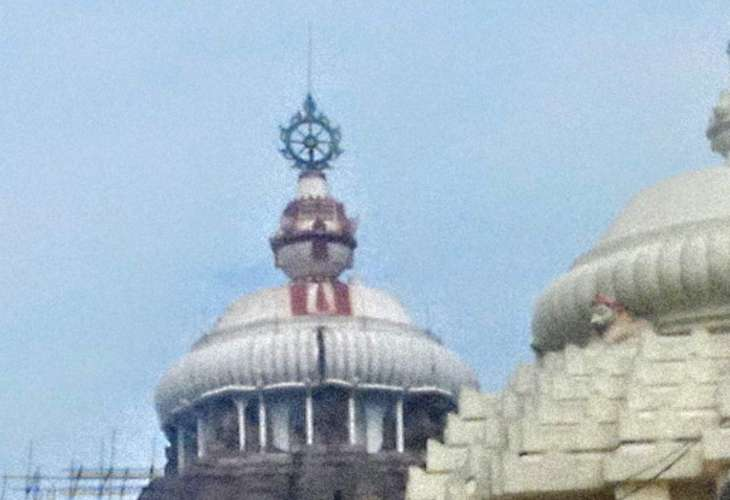
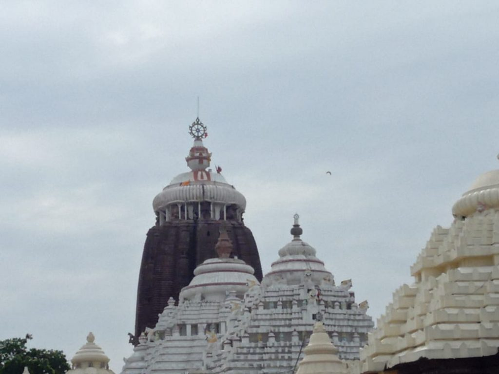
Sloka Odia:
ନୀଳାଚଳ ଛାଡ଼ି ଆମ୍ଭେ ଯିବୁ ଯେତେବେଳେ,
ଲାଗିବ ରତ୍ନଚାନ୍ଦୁଆ ଅଗ୍ନି
ସେତେବେଳେ।
ନିଶାକାଳେ ହେ। ନୀଳାଚଳୁ ଚୋରିଯିବ ହେଲେ ହେ।
Tar-sgrìobhadh:
Nīlāchala chāḍi āmbhe jibu jetebele,
lāgiba ratnachāṃduā agni
setebele.
Nishākāle he. Nīlāchalu chorijiba hele he.
Is fhiach a thoirt fa-near gun do thachair tachartas an Ratnachandua a' gabhail teine ann am bliadhna 2004-05, agus mar sin tha am fàisneachd seo den Mahapurush air a dhearbhadh fìor cuideachd.
Sloka Odia:
କଳ୍ପବଟ ଡ଼ାଳ ଛେଦନ ଭୋଇବ ଦେଖିବୁ ତୁ ନୟନରେ,
ଶିବକଳ୍ପ ବାଣୀ ଅନ୍ୟଥା
ନୋହିବ ଶୁଣ ରାମଦାସ ତୁରେ।
ଏକ ଦକ୍ଷିଣରେ ନବ ଯେ ଥିବ,
କଳ୍ପବଟ ମୋର ଛେଦନ ହୋଇବ।
Tar-sgrìobhadh:
Kalpabaṭa ḍāla chedana hoiba dekhibu tu nayanare,
Shibakalpa bāṇī anyathā nohiba
shuṇa Rāmadāsa ture.
Eka dakṣhiṇare naba je thiba,
kalpabaṭa mora chedana
hoiba.
Dìreach a rèir aithris an Mahapurush, thàinig am fàisneachd seo gu buil ann am bliadhna 2019 nuair a rinn an stoirm ro-dhian 'Fani', a bhuail costa Puri air 3 Cèitean, milleadh air an Kalpavata mòr, sean-aois a tha suidhichte ann an raon an teampaill.
Sloka Odia:
ରକ୍ତଛିଟା ପଡ଼ିବ ଯେ ରତ୍ନସିଂହାସନେ,
ଏହି ଘଟଣା ଘଟିବ ମନେ ରଖ ଦିନେ।
Tar-sgrìobhadh:
Raktachīṃṭā paḍiba je ratnasiṃhāsane,
ehi ghaṭaṇā ghaṭiba mane rakha dine.
Thionndaidh am fàisneachd seo a sgrìobh am Mahapurush a bhith fìor cuideachd. Thairis air na beagan bhliadhnaichean a dh'fhalbh, tha frasan fala air tuiteam ann an iomadh àite san teampall, a' gabhail a-steach an Ratnasinghasana, às deidh sin, a rèir traidisean an teampaill, chaidh na Chaturdha Murti a ghlanadh tro deas-ghnàth Mahasnana (ionnlaid mhòr). Mar eisimpleir, air 6 Màrt 2021, chaidh fuil fhaicinn faisg air an 'Bhitar Katha' a tha suidhichte aig astar bhon naomh-naomh an teampaill. Air 18 Giblean 2021, air sgàth sabaid eadar dithis phoileasman a chaidh a chuir an dreuchd airson tèarainteachd an teampaill, thuit frasan fala ann an raon an teampaill. Air 7 Màrt 2022, rè an 'Abakasha Niti' (deas-ghnàth), chaidh frasan fala a lorg faisg air an 'Bhitar Katha' taobh a-staigh Jagamohana an teampaill (an talla air beulaibh an naomh-naomh). An uairsin air 11 Giblean 2022, chaidh frasan fala fhaicinn faisg air an Dhukudi Dwara den teampall. Air 3 Samhain 2022, às deidh deas-ghnàthan 'Mangala Alati', 'Mailama', agus 'Tadapa Lagi', chaidh frasan fala fhaicinn faisg air an 'Bhitar Katha'. Chaidh tachartas mar seo fhaicinn a-rithist anns an treas seachdain den Fhaoilleach ann am bliadhna 2023. Às deidh crìoch a chur air deas-ghnàthan 'Abakasha' agus 'Besa Lagi' an Tighearna Jagannath, chaidh comharran fala fhaicinn anns an Shrimandir, air sgàth sin cha b' urrainn an tairgse (Bhoga) do Gopalaballabha a bhith air a chrìochnachadh. An uairsin air 4 Ògmhios 2023, às deidh an ionnlaid dhiadhaidh (Devasnana) a chrìochnachadh, chaidh frasan fala fhaicinn air an Snana Mandapa. Fiù 's o chionn ghoirid, air 13 Dàmhair 2023, air sgàth connspaid fòirneartach eadar dithis sheirbheisich mu sgaoileadh Prasad dìreach às deidh an 'Madhyahna Dhupa' anns an Shrimandir, thuit frasan fala ann an naomh-naomh an teampaill. Ann am bliadhna 2024 cuideachd, air madainn tràth 23 Giblean, às deidh an Singhadwara fhosgladh, chuir boireannach bho theaghlach seirbheiseach a làmh air doras an teampaill nuair a chaidh a meur a phronnadh ann. Mar thoradh air sin, thàinig fuil a-mach às a meur faisg air an Dhukudi Dwara faisg air an Bedha a-staigh. Ann an suidheachadh mar sin, chaidh Mahasnana an Tighearna Uachdarain a dhèanamh fiù 's ron Mangala Alati. San aon dòigh, lean tachartasan fuilteachaidh ann an raon an teampaill ann am bliadhna 2025 cuideachd.
Rè an Rath Yatra 11-latha ann an Shri Jagannath Puri, thòisich deas-ghnàthan 'Adapa Mandapa Bije' aig 7 PM air feasgar 9 Iuchar 2024. Rè seo, fhad 's a bha iad a' toirt ìomhaigh an Tighearna Balabhadra bhon charbad chun an Adapa Mandapa de Teampall Gundicha, thuit E aghaidh sìos air an Charamala, air sgàth sin fhuair 12 seirbheiseach leòn cuideachd. Thachair tachartas mì-fhortanach mar seo airson a' chiad uair ann an eachdraidh. Tha tuiteam an Tighearna Balabhadra san dòigh seo gu cinnteach na chomharra air mòr-thubaistean a tha ri thighinn, a tha air an ainmeachadh mar a leanas anns an teacsa 'Niladri' a tha co-cheangailte ri riaghailtean agus poileasaidhean Shrikhetra, mar a tha air a stiùireadh leis an Tighearna Brahma agus an Tighearna Vishnu.
Sloka Odia:
ମୁରବୈରିଣ ଏତସ୍ୟ ଜଗଦୀଶସ୍ୟ ଭୂପତେହଃ।
ଭଦ୍ରାୟାଶ୍ଚ ବଳସ୍ୟାପି
ପ୍ରମାଦାତ୍ ପତନଂ ଯଦି।।
ମହାଭୟଂ ନୃପସ୍ୟାପି ରାଜ୍ୟସ୍ୟାପି ଭବେଦ୍ଧ୍ରୁବମ୍।
ଦୁର୍ଭିକ୍ଷଂ
ମରଣଂ ଚୈବ ଜାୟତେ ଚ ପୁନଃ ପୁନଃ।।
Tar-sgrìobhadh:
Murabairiṇa etasya jagadīshasya bhūpatehaḥ.
Bhadrāyāshcha balasyāpi pramādāt
patanaṃ yadi.
Mahābhayaṃ nṛipasyāpi rājyasyāpi bhabeddhrubam.
Durbhikṣhaṃ
maraṇaṃ chaiba jāyate cha punaḥ punaḥ.
Teine ann an naomh-naomh Teampall Mahakal, Ujjain ann am bliadhna 2024
Air madainn Diluain, 25 Màrt 2024, rè fèis Holi, bhris teine a-mach ann an naomh-naomh Teampall Mahakaleshwar ann an Ujjain air sgàth tilgeil 'gulal' (pùdar dathte) rè an Bhasma Aarti. Fhuair mu 14 neach, a' gabhail a-steach am prìomh shagart agus seirbheisich eile, leòintean losgaidh san tachartas seo.
Lean na soidhnichean àicheil a fhuaireadh bho Theampall Jagannath ann am bliadhna 2025 cuideachd. Tro iomadh soidhne, thug an Tighearna Jagannath ro-shealladh dha luchd-dìleas air na mì-fhortan a bha ri thighinn, agus tha cuid de na prìomh shoidhnichean dhiubh sin a' taisbeanadh dhuibh.
(a) Briseadh an Akshaya Danda air 14 Gearran
Mar a h-uile latha, air feasgar 14 Gearran 2025 (Dihaoine), nuair a ràinig an seirbheiseach Chunara an Neelachakra air mullach an teampaill gus am Patitapabana Bana no a' phrìomh bhratach atharrachadh, lorg e an Akshaya Danda (am pòla bambù a chumas am Patitapabana Bana) briste. Às deidh seo, cheangail na seirbheisich a' bhratach ris an Neelachakra fhèin ann an dòigh air choireigin.
Rinn briseadh an Akshaya Danda san dòigh seo cron air faireachdainnean gun àireamh de luchd-dìleas, agus chuir iad an cèill mòr-bhròn mu dheidhinn. Còmhla ri seo, ghairm mòran de luchd-dìleas e mar chomharra air mòr-thubaistean a bha ri thighinn anns an àm ri teachd.
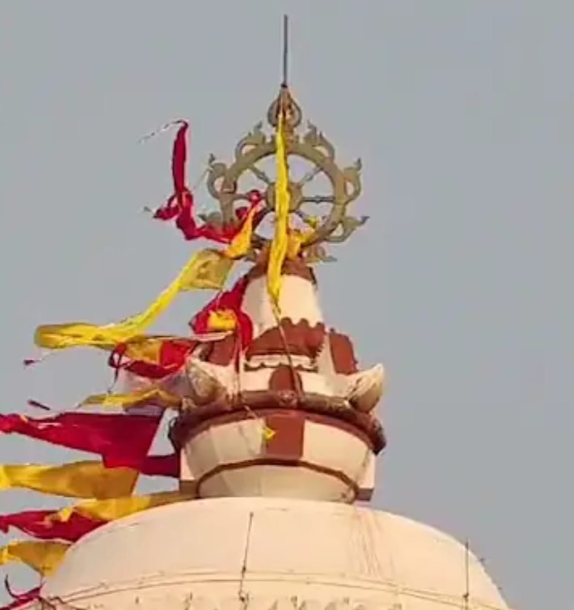
(b) Frasan fala a lorgar san teampall air 16 Gearran; Mahasnana nan diathan air a dhèanamh
Air 16 Gearran (Didòmhnaich), an dèidh crìoch a chur air deas-ghnàthan maidne mar an 'Dwara Phita Niti' agus 'Mangala Alati', cho luath 's a thòisich Darshan an Tighearna Jagannath, goirid às deidh sin, lorg an luchd-frithealaidh comharran fala faisg air an sgìre 'Bhitar Katha'. Dìreach às deidh an tachartais, chaidh ullachaidhean a dhèanamh airson 'Bada Mahasnana Niti' nan diathan, agus chaidh Darshan a stad cuideachd airson ùine.
(c) Clamhan ag itealaich air falbh leis a' Patitapabana Bana air 13 Giblean
Air 13 Giblean 2025, chunnaic luchd-dìleas an Tighearna Jagannath a tha suidhichte aig an Puri Shrimandir soidhne nach fhacas riamh roimhe. Mu 5 feasgar, chunnacas clamhan a' cuairteachadh an teampaill a' giùlan am Patitapabana Bana na ghob. A rèir aithisgean, rinn an clamhan cuairt air an teampall mu 4-5 tursan agus an uairsin dh'itealaich e chun na mara thairis air a' gheata an iar.
Chaidh bhidio den tachartas seo gu math luath air na meadhanan sòisealta. Chuir mòran luchd-dìleas an cianalas agus an draghan an cèill mu dheidhinn seo. Cheangail mòran luchd-dìleas e ri mòr-thubaistean a bha ri thighinn, agus thug grunn dhiubh iomradh air mar shoidhne àicheil nach fhacas riamh roimhe a thug an Tighearna Jagannath seachad.
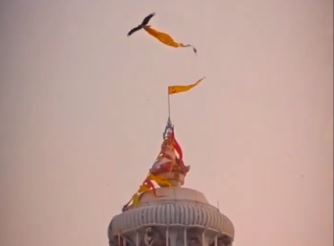
(d) Frasan fala air an lorg anns an teampall air 21 Giblean agus Mahasnana nan diathan air a dhèanamh
Air 21 Giblean (Diluain) cuideachd, chunnacas comharran fala faisg air a' Bhitar Katha anns an Shrimandir, às deidh sin chaidh Mahasnana ìomhaighean an Tighearna a dhèanamh gu ceart a rèir traidisean. Aig an aon àm, chaidh Darshan an Tighearna Uachdarain airson an luchd-dìleas a bhriseadh airson timcheall air 1 uair. A rèir aithisgean, chaidh comharran fala a lorg taobh a-staigh an teampaill air sgàth pìosan glainne a' dol tro chas poileis.
(e) Clamhan na shuidhe air mullach a' Patitapabana Bana air 2 Sultain
Chunnacas clamhan na shuidhe air a' Patitapabana Bana air mullach an Shrimandir iomadh uair anns na beagan bhliadhnaichean a dh'fhalbh. Gach uair a chithear tachartas mar seo, tha e air a shealltainn air cha mhòr a h-uile sianal naidheachd ionadail ann an Odisha. Air 2 Sultain, thachair an aon rud a-rithist nuair a chunnacas clamhan an toiseach ag itealaich faisg air an Neelachakra agus an dèidh ùine chaidh a lorg na shuidhe air a' Patitapabana Bana a bha ceangailte air mullach an Neelachakra.
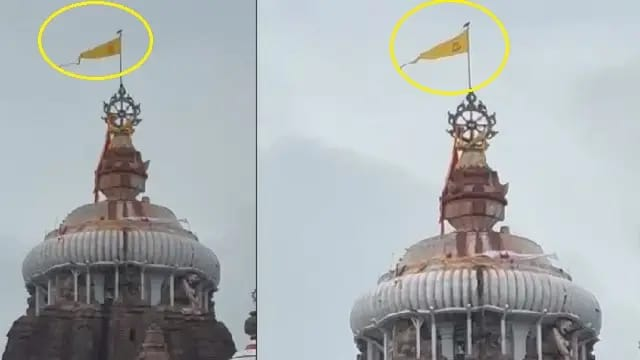
(f) Clamhan na shuidhe air an Aruna Stambha a-rithist air 4 Sultain
Chan e a-mhàin Teampall Jagannath, tha am Bhavishya Malika cuideachd a' toirt cunntas air suidhe clamhain no eun mì-fhortanach sam bith eile air an Aruna Stambha suidhichte air beulaibh Singhadwara an teampaill mar shoidhne mì-fhortanach. Air 4 Sultain, is e sin, dìreach dà latha an dèidh don clamhan a bhith air fhaicinn air mullach an Shrimandir air 2 Sultain, chunnacas clamhan cuideachd na shuidhe air an Aruna Stambha. Bha daoine a' faicinn seo cuideachd mar shoidhne àicheil. Tron tachartas seo, thug mòran cunntas air fàidheadaireachd Malika a chaidh a sgrìobhadh 600 bliadhna air ais mar a bha e a' tighinn gu buil.
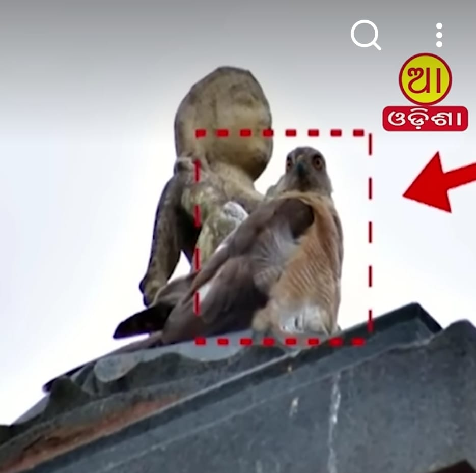
(g) Clamhan na shuidhe air mullach an teampaill a-rithist air 16 Sultain
Taobh a-staigh dìreach 15 latha bho 2 Sultain, tràth sa mhadainn air 16 Sultain, chunnacas clamhan a-rithist na shuidhe air mullach Patitapabana Bana an teampaill.
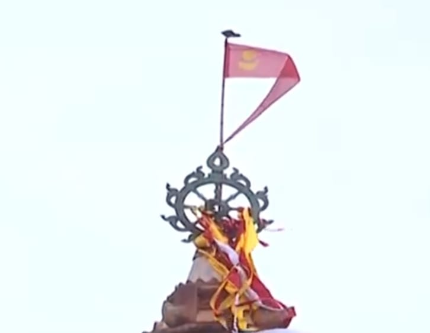
(h) Chaidh clamhan a lorg na shuidhe air Patitapabana Bana an Shrimandir a-rithist air 14 Dàmhair
Chaidh clamhan a lorg na shuidhe air mullach an teampaill dà uair sa mhìos den t-Sultain. Cha do stad an t-sreath an seo; chunnaic luchd-còmhnaidh Puri ath-aithris den tachartas seo a-rithist air 14 Dàmhair. Chaidh suidheachadh a-rithist clamhain air mullach an teampaill a mhìneachadh le mòran luchd-dìleas mar shoidhne de mòr-thubaistean a bha ri thighinn.
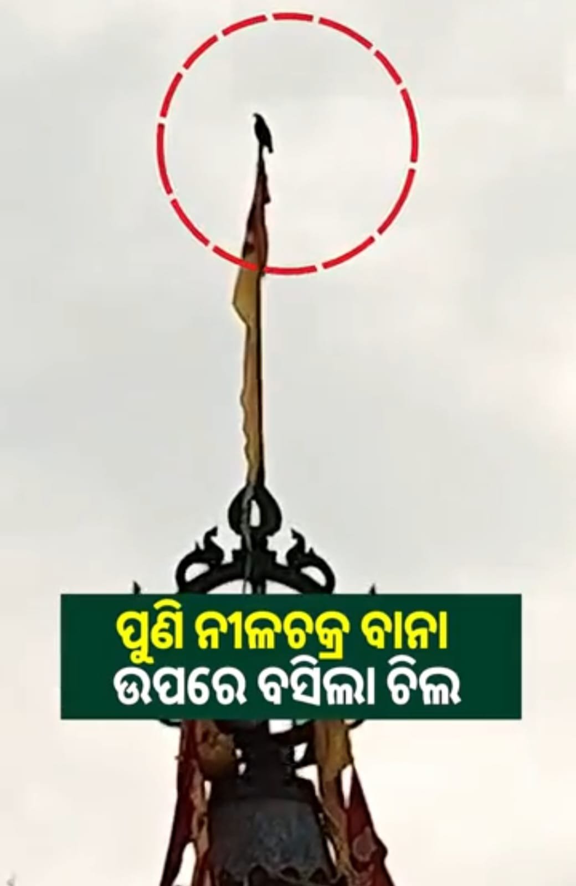
(i) Clamhain gun àireamh a' cuairteachadh os cionn an Shrimandir air 9 Dùbhlachd
Dìreach mar air 7 Dùbhlachd 2021, agus 17 Lùnastal 2022, chunnacas soidhne fìor àicheil air 9 Dùbhlachd 2025 cuideachd, nuair a chaidh clamhain gun àireamh a lorg a' cuairteachadh os cionn Teampall Jagannath. Tharraing an tachartas seo aire chan ann a-mhàin luchd-dìleas ann am Puri no Odisha, ach cuideachd an fheadhainn a bha a' fuireach taobh a-muigh Odisha. Thug mòran luchd-dìleas iomradh air an tachartas seo mar shoidhne de thachartas mòr mì-fhortanach a bha ri thighinn a dh'aithghearr.
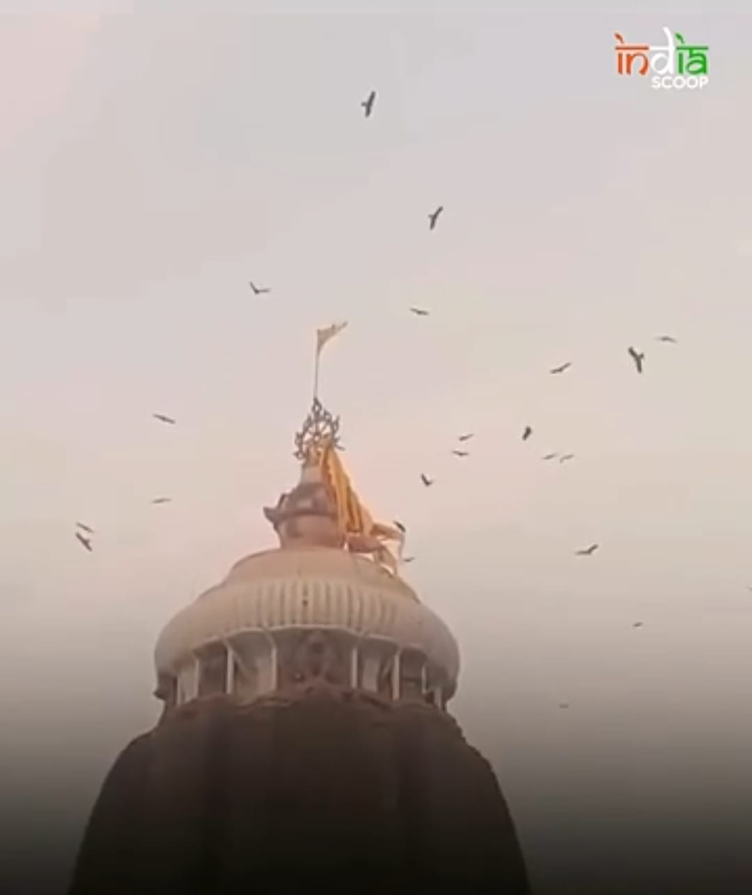
Bhris teine a-mach ann an togalach Teampall Mahakaleshwar ann an Ujjain
Air 5 Cèitean 2025, aig 12 feasgar, bhris teine a-mach ann an seòmar smachd bòrd smachd truailleadh suidhichte faisg air an Shankh Dwara ann an togalach Teampall Baba Mahakaleshwar ainmeil an t-saoghail ann an Ujjain. Às deidh an tachartais seo, thàinig clisgeadh air togalach an teampaill. Às deidh don teine briseadh a-mach, chaidh inntrigeadh luchd-dìleas a-steach don teampall a stad airson ùine.
Bhris teine a-mach ann an togalach Peetha Mahapurush Achyutananda Das
Air latha Devasnana Purnima, 11 Ògmhios 2025, chaidh teine a bhriseadh a-mach ann an togalach Nemal Padmabana Peetha Mahapurush Achyutananda Das suidhichte ann an Nischintakoili, Cuttack fhaicinn cuideachd mar shoidhne fìor mhì-fhortanach le luchd-dìleas Malika. Bha faireachdainn de dh'uamhas a' riaghladh am measg sluagh de mhìltean de luchd-dìleas nuair a ghlac an seasamh-lampa a chaidh a chumail anns an togalach teine gu h-obann, agus taobh a-staigh mionaidean, thòisich lasraichean lasrach a' briseadh a-mach.
Craobh-bhanian Nemal air a gearradh sìos leis an rianachd
Aig toiseach an Lùnastail, chaidh a' mhòr-chuid de stocan na craoibhe-bhanian aosta air beulaibh an teampaill suidhichte aig Sadhana Peetha prìomh ùghdar nan teacsaichean Malika, an naomh mòr Shri Achyutananda Das, a ghearradh sìos. Thathar ag ràdh gun deach ceum mar seo a ghabhail leis an rianachd airson obair leasachaidh Peetha Achyutananda Das. Bha dùbhlan farsaing an aghaidh seo leis an luchd-ionadail agus na sagartan, agus air an gearan, cha deach ach beagan mheuran den chraoibh-bhanian fhàgail gun ghearradh. Bu chòir a thoirt fa-near gun do rinn Mahapurush Achyutananda Das na teacsaichean Malika fhad 's a bha e na shuidhe fon 'Nemal Banyan Tree' ann an staid meòrachaidh. Chaidh gearradh sìos na craoibhe-bhanian Nemal fhaicinn mar shoidhne air leth mì-fhortanach le luchd-dìleas Malika.
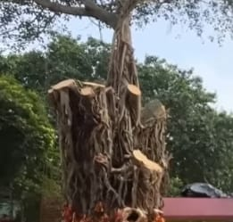
Am bratach òir air a stàladh air mullach Teampall Mahakaleshwar a' tuiteam sìos
Air 1 Ògmhios 2025, chunnacas soidhne àicheil a-rithist bho Teampall Mahakaleshwar ainmeil an t-saoghail suidhichte ann an Ujjain. Gu dearbh, air sgàth gaothan làidir, thuit am bratach òir a chaidh a stàladh air mullach Teampall Mahakaleshwar sìos gu h-obann. Thug sagart an teampaill cunntas air an tachartas seo mar chùis draghail bho shealladh cràbhach.
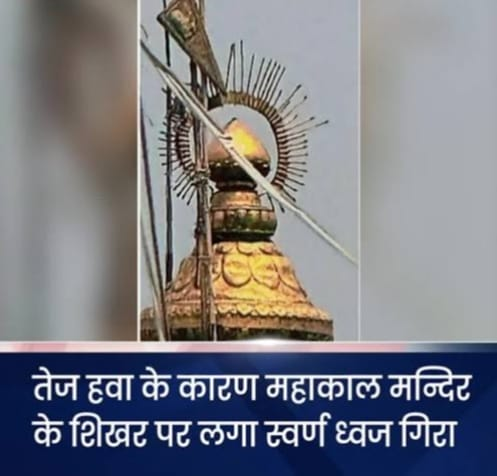
Masg an Tighearna Shiva air a dhèanamh air an Shivalinga ann an Teampall Mahakaleshwar a' briseadh agus a' tuiteam sìos
Thachair tachartas sònraichte air 18 Lùnastal aig Teampall Mahakal suidhichte ann an Ujjain. An seo, mar gach latha aig 8:00 feasgar rè sgeadachadh (Shringara) an Shivalinga, chaidh masg an Tighearna Shiva a dhèanamh le Bhang (pasgan cainbe). Chaidh tòrr mòr de Bhang a chur an sàs rè seo. Dìreach às deidh seo, bha an Aarti dìreach gu bhith a' tòiseachadh nuair a bhris an Bhang Shringara agus thuit e sìos. Bhris an t-sròn, na bilean, agus aon sùil bho masg an Tighearna Shiva agus thuit iad sìos.
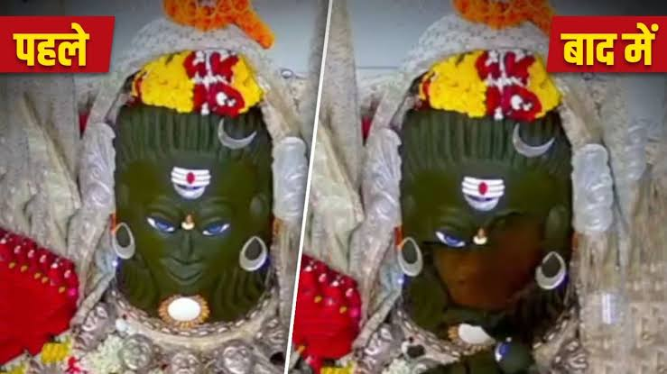
Sealladh os-nàdarra air fhaicinn ann an Teampall Maa Samaleswari
Bho theampall ainmeil Maa Samaleswari suidhichte ann an Lakhanpur, Jharsuguda, Odisha, air oidhche Diardaoin, 21 Lùnastal 2025, fhuair luchd-dìleas soidhne den Bhan-dia a' fàgail a h-ìomhaigh agus a' tighinn a-mach. Nuair a dh'fhosgail an sagart dorsan an teampaill tràth sa mhadainn airson an 'Mangala Alati', chunnacas lorgan-coise a' dol a-mach, air an dath le Alta (dath dearg), a bhuineadh don Bhan-dia, agus còmhla ri seo, chaidh a claidheamh (Khanda) agus a trident (Trishul), a bha ceangailte ri ìomhaigh na Ban-dia, a lorg air an taobh.
A rèir an 'Bhavishya Malika', anns an ìre mu dheireadh de Kali Yuga, mus tèid Dharma a stèidheachadh, fàgaidh a h-uile Ban-dia na h-àiteachan aca fhèin agus thig iad a-mach gus a dhol an sàs ann an obair a bhith a' sgrios nan droch dhaoine agus nam peacaich. Tha an tachartas seo na dhearbhadh gu bheil an t-àm sin air tighinn agus gu bheil an fhàidheadaireachd sin a' tighinn gu buil.
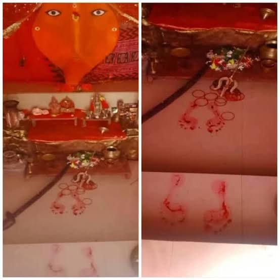
Thàinig teine a-mach anns na h-ìomhaighean diadhaidh ann an Teampall Jagannath Brahmagiri
Air 28 Lùnastal, 2025, ghlac na h-ìomhaighean den Tighearna Jagannath, a bhràthair as sine Balabhadra, agus a mhàthair Subhadra teine ann an Teampall Jagannath Brahmagiri a tha suidhichte ann am baile Kandagoda fo sgìre Puri ann an Odisha. Gu dearbh, an dèidh crìoch a chur air an adhradh feasgair, chaidh na sagartan dhachaigh. Aig 8:30 PM, air sgàth ceò a' tighinn a-mach às an teampall, nuair a chaidh doras an teampaill a bhriseadh, chaidh fhaicinn gun robh na h-ìomhaighean a-staigh nan teine. An dèidh co-chomhairle a chumail ris a' Muktimandapa, chaidh Shaligrama a adhradh bhon latha sin a-mach. Às dèidh cruinneachadh Daru (fiodh naomh) anns an Nabakalebara a tha ri thighinn, chaidh ìomhaighean ùra a stàladh.
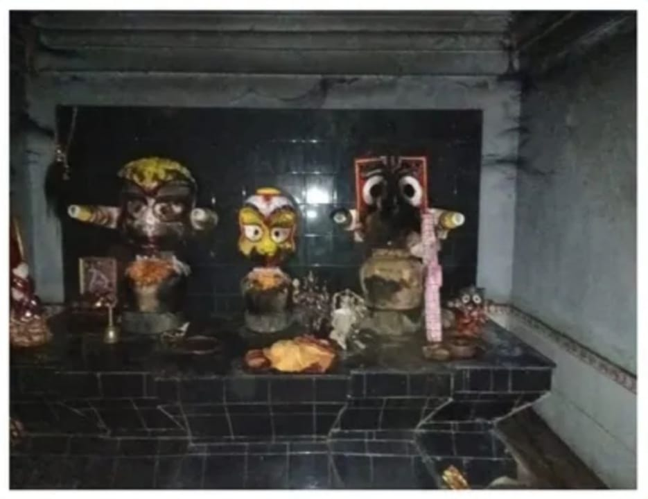
Soidhne de sgrios a tha ri thighinn air fhaighinn bho Teampall Lingaraj, briseadh bratach an teampaill
Air Diluain, 15 Sultain, 2025, air sgàth fearg uisgeachan troma agus gaoth, bhris bratach Teampall Lingaraj a chaidh a thogail san 11mh linn, suidhichte ann am Bhubaneswar. Air madainn Dimàirt, an dèidh dha na seirbheisich fhaicinn, chaidh bratach a thogail air slat ùr.
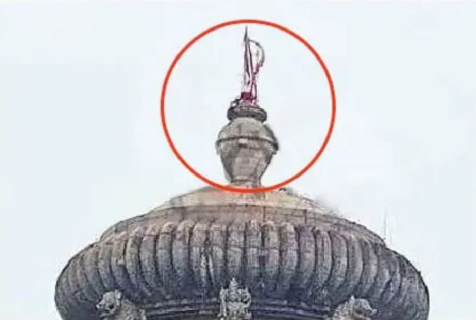
Reub am bratach air mullach Teampall Lingaraj a tha suidhichte ann am Bhubaneswar air sgàth uisge trom agus stoirm. Naomh-naomh air a bhuail le dealanaich; tha dorchadas a' còmhdach an teampaill.
Am measg uisgeachan troma agus stoirm chruaidh air Diciadain, 8 Dàmhair, 2025, thàinig Teampall Lingaraj a tha suidhichte ann am prìomh-bhaile Odisha, Bhubaneswar, gu bhith na fhulangaiche de bhuille dealanaich. Bha seo cuideachd na shoidhne de thachartas mì-fhortanach. Reub bratach an teampaill air sgàth na stoirme, fhad 's a chaidh camarathan CCTV an teampaill agus an siostam solais a mhilleadh leis a' bhuille dealanaich. Chaidh aithris gun d'fhuair cuid de luchd-adhraidh agus seirbheisich a bha an làthair anns an teampall clisgeadh dealain cuideachd.
(j) Airson a' chiad uair na eachdraidh 500-bliadhna, cha deach Bal Bhog a thabhann ann an Teampall Banke Bihari ann an Vrindavan
Thakur Banke Bihari, a nochd mu chòig ceud bliadhna air ais, tha Bhog (tabhartas bìdh) air a thabhann dha rè ceithir pàirtean den latha. Mus tèid an suidheachan a chur sìos airson Darshan na maidne, tha Bal Bhog air a thabhann. Mus dùin an teampall feasgar, tha Raj Bhog air a thabhann, agus nuair a dh'fhosglas na dorsan feasgar, tha Utthapan Bhog air a thabhann. Nuair a dhùineas na dorsan, tha Shayan Bhog air a thabhann. Tha an cùmhnant airson am Bhog ullachadh air a thoirt do neach-siùcair (Halwai). Bidh an neach-siùcair ag ullachadh a' Bhog agus ga thoirt dha na seirbheisich, agus bidh iad a' tabhann a' Bhog.
Ach air 15 Dùbhlachd aig 8:45 AM, dh'fhosgail dorsan an teampaill, ach cha tàinig an neach-siùcair leis a' Bal Bhog. Nuair a chaidh fios a chur, chaidh a lorg nach tàinig an neach-siùcair air sgàth neo-phàigheadh nan cìsean mìosail. Airson a' chiad uair na eachdraidh 500-bliadhna, thachair a leithid de rud nuair nach b' urrainn Bal Bhog a thabhann do Banke Bihari Ji air an latha sin.
Mar a tha fios againn uile, tha an Rath Yatra air a eagrachadh gach bliadhna air an Dwitiya Tithi den Shukla Paksha den mhìos Ashadha. Chaidh an traidisean seo a leantainn an-còmhnaidh ann an teampaill Jagannath eile anns na h-Innseachan agus thall thairis, a' gabhail a-steach Teampall Jagannath ann am Puri. Ach thar nan beagan bhliadhnaichean a dh'fhalbh, tha iomadh uair air a bhith ann nuair a chaidh ISKCON fhaicinn a' briseadh an traidisean seo.
Anns a' chùis seo, an dèidh do ghearanan a bhith air an togail le Prìomh Rianadair Rianachd Teampall Shree Jagannath agus Cathraiche Comataidh Riaghlaidh Teampall Shree Jagannath, Gajapati Maharaj Divyasingha Deva, agus chaidh gearan sgrìobhte a dhèanamh gu prìomh oifis ISKCON a tha suidhichte ann am Mayapur, thachair cuid de leasachaidhean gu cinnteach, ach tha ISKCON fhathast air fhaicinn a' cur air dòigh Rath Yatras neo-iomchaidh anns na h-Innseachan agus gu sònraichte thall thairis.
Anns an t-sreath seo, chuir ISKCON Rath Yatra air dòigh o chionn ghoirid ann an Taiwan air 23 Samhain, 2025, a chaidh a chàineadh le coimhearsnachd Odia air feadh an t-saoghail agus le luchd-adhraidh Jagannath gun àireamh à Odisha. Bha luchd-adhraidh ga fhaicinn chan ann a-mhàin mar bhriseadh air riaghailtean traidiseanta ach cuideachd mar neo-spèis do àithne an Tighearna Jagannath Fhèin.
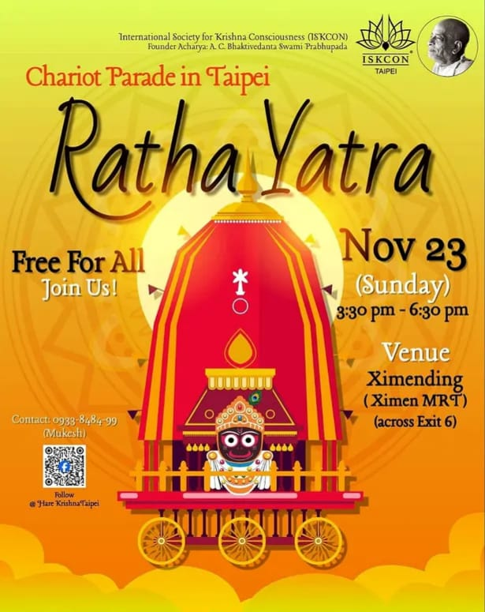
O chionn ghoirid, tha mearachd mhòr air tighinn am follais ann am mìosachan Beurla 2026 a chaidh a thoirt seachad le Rianachd Teampall Jagannath. Gu dearbh, tha dealbh den Ratnabedi air a chlò-bhualadh anns a' mhìosachan anns a bheil òrdugh na Trianaid ceàrr. Bho shealladh an neach-amhairc, ann an dealbh a' mhìosachain, tha an Tighearna Jagannath air a chur air an taobh chlì, an uairsin a' Bhan-dia Subhadra, agus an uairsin am bràthair as sine Balabhadra, fhad 's a bu chòir, anns an òrdugh cheart, an Tighearna Balabhadra a bhith air an taobh chlì, an uairsin a' Bhan-dia Subhadra, agus an uairsin Shri Jagannath. Is e sin, is e a' mhearachd gu bheil anns a' mhìosachan, dealbh a' bhràthar as sine Balabhadra air a chlò-bhualadh an àite an Tighearna Jagannath, agus dealbh an Tighearna Jagannath an àite an Tighearna Balabhadra. A bharrachd air seo, cha deach àite a thoirt do Chakraraj Sudarshan ann an dealbh an Ratnasinghasana anns a' mhìosachan. Chan e a-mhàin seo, tha dealbh den Rath Yatra cuideachd air a chlò-bhualadh anns a' mhìosachan, a tha a' sealltainn carbad na Màthar Subhadra an toiseach, air a leantainn le carbad an Tighearna Uachdarach Jagannath, agus mu dheireadh carbad an Tighearna Balabhadra.
Air sgàth nan mearachdan sin, tha mì-thoilichteas agus fearg ann an inntinnean nan luchd-adhraidh. Tha fearg cuideachd am measg seirbheisich Teampall Jagannath a thaobh an tachartais seo. A rèir cuid de luchd-adhraidh, is e seo soidhne a thug an Tighearna Jagannath Fhèin de dhroch fhortan a tha ri thighinn agus atharrachadh ann an òrdugh an t-saoghail anns a' bhliadhna ùr.
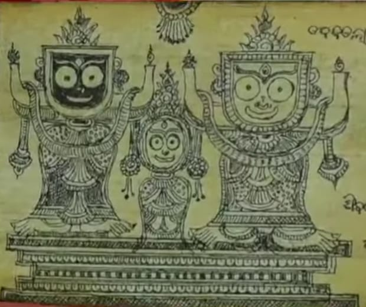
A rèir Bhavishya Malika, tha an Tighearna Kalki air a bhreith mar-thà. Chan e a-mhàin an Tighearna Kalki, ach tha a h-uile gaisgeach gaisgeil bho àm Mahabharata leithid Yudhishthira, Bhima, Arjuna, Nakula, Sahadeva, Bhishma, Drona, Ashwatthama, Karna, Shalya, Jayadratha, Barbarika, Abhimanyu, Babruvahana, Ekalavya, Ghatotkacha, Duryodhana, Shakuni, msaa., air ath-bhreith a ghabhail air an talamh seo. A rèir a' Malika, an turas seo bidh na gaisgich sin uile a' sabaid còmhla air taobh Dharma an aghaidh Adharma.
Ach, cha dèan sinn deasbad air gaisgich eile an seo agus cuiridh sinn crìoch air ar faclan a-mhàin air Parahbrahma Narayana Mahavishnu an Tighearna Kalki Ram.
Sgrìobh Mahapurush Achyutananda Das anns an teacsa Malika aige ‘Shibakalpa Nabakhanda Nirghanta’ –
Sloka Odia:
ନୀଳଚକ୍ର ଧ୍ବଜା ଖସିବ ପ୍ରଭୁ ରଙ୍ଗା ଅଧର,
ଯୋଜନଗ୍ରେ ଜନମ ହୋଇବେ
ବିଷ୍ଣୁଶର୍ମା ଗୃହର।
Tar-sgrìobhadh:
Nīḷachakra dhwajā khasiba prabhu raṅgā adhara,
yojanagre janama hoibe Biṣṇusharmā
gṛuhara.
Bu chòir dhomh soilleireachadh do na leughadairean gun deach an tachartas seo fhaicinn iomadh uair bho Theampall Jagannath, mar eisimpleir rè na bliadhna 1990-91, rè na bliadhna 2005, an uairsin rè Cyclone Fani agus Cyclone Amphan anns na bliadhnaichean 2019 agus 2020 fa leth, msaa.
Sgrìobh am Mahapurush anns an teacsa Malika aige nach tachair breith Mahaprabhu Kalki ach an dèidh an tachartais seo. Leis gun do thachair an tachartas seo, faodar a ràdh le cinnt gu bheil an Tighearna Kalki air a bhreith. Ach leis gun do thachair an tachartas seo ann an grunn bhliadhnaichean eadar-dhealaichte, chan eil e coltach gu bheil e comasach ruighinn air bliadhna shònraichte breith a' Mahaprabhu bhon tachartas seo a-mhàin.
Gus faighinn a-mach dè a' bhliadhna a rugadh am Mahaprabhu, feumaidh sinn cuideachadh fhaighinn bho rannan eile den Malika.
Sgrìobh Mahapurush Achyutananda Das anns an teacsa Malika aige ‘Tera Janma Sharana’ –
Sloka Odia:
ମାଘ ସପ୍ତମୀରେ ବିକାଶ ହୋଇବ ଦିବ୍ୟସିଂହ ନୃପବର,
ଅନନ୍ତ କେଶରୀ ରାଜତ୍ୱ
କରିବେ ଏହି ଏକାମ୍ର ନଗର।
କେଉଁ ଦିନ ତୁମ୍ଭେ ପ୍ରକାଶ ହୋଇବ କହେ ରାମଦାସ ଯହିଁ,
ବିଶାଖାପାଟଣା
ନୃପ ନାଶ ହେଲେ ମୁହିଁ ବିକାଶ ହୁଅଇ।
Tar-sgrìobhadh:
Māgha saptamīre bikāsha hoiba Dibyasiṃha nṛpabara,
Ananta Keshari rājatwa karibe
ehi Ekāmra nagara.
Keuñ dina tumbhe prakāsha hoiba kahe Rāmadāsa
yahiñ,
Viśākhāpāṭaṇā nṛpa nāśa hele muhiñ bikāsha huai.
Ma bheir sinn sùil gheur, gheibh sinn a-mach gu bheil am Mahapurush, tro an soidhne, a' bruidhinn mu bhàs Prìomh Mhinistear Andhra Pradesh, Y.S. Rajasekhara Reddy, a thachair ann an tubaist heileacoptair anns a' bhliadhna 2009. Bhon rann gu h-àrd, chan eil am Mahapurush ag innse bliadhna breith an Tighearna, ach tha e gu cinnteach ag ràdh gun lean gnìomhan diadhaidh (leelas) Kalki timcheall air a' bhliadhna 2009.
Sgrìobh Mahapurush Achyutananda Das anns an ‘Jaiphula Malika’ aige –
Sloka Odia:
ସେହି ଶ୍ରୀ କୃଷ୍ଣ ଚୈତନ୍ୟ,
ଜନ୍ମିଛନ୍ତି ଆସି ଏହି ମର୍ତ୍ତ୍ୟେଣ ଲୋ
ଯାଇଫୁଲ,
ସତଚାଳିଶକୁ ତୁହି ଘେନ।
Tar-sgrìobhadh:
Sehi Shrī Kṛuṣṇa Chaitanya,
janmichhanti āsi ehi martyeṇa lo
jāiphula,
satachāḷishaku tuhi ghena.
Tha e ainmeil gu bheil an àireamh 47 seo a' buntainn do Rìgh Puri, Shri Dibyasingha Deb, a tha a' tuiteam eadar na bliadhnaichean 2005 agus 2008.
Sgrìobh Mahapurush Achyutananda Das anns an teacsa Malika aige ‘Kalpatika’ –
Sloka Odia:
ନୀଳାଦ୍ରି ଛାଡି ପ୍ରଭୁ ପୀତବାସ,
ମର୍ତ୍ତ୍ୟରେ ଜନ୍ମ ଲଭିବେ
ଅବଶ୍ୟ।
ଗୁଣରେ ଭେଦି ଭେଦ ଅଙ୍କେ ଜାଣ,
ଦେଲେ ଯେତେ ସାଲ ହେଲା ପ୍ରମାଣ।
ଏହି ସାଲରେ
ପ୍ରଭୁ ଜନମିବେ,
ଅଙ୍କ ପ୍ରମାଣ ଯେ କହିଲୁ ଏବେ।
ବିଂଶ ରେବ ଅଙ୍କ ଯେବଣ ଦିନ,
ଇନ୍ଦୁ ପରେ
ବିନ୍ଦୁ ଉଦେ ଗଗନ।
ଏମନ୍ତ ଲକ୍ଷଣ ଦେଖିବୁ ଯେବେ,
ପ୍ରଭୁ ଜନମ ହୋଇଥିବେ ତେବେ।
Tar-sgrìobhadh:
Nīḷādri chhāḍi prabhu pītabāsa,
martyare janma labhibe abashya.
guṇare bhedi
bheda aṅke jāṇa,
dele jete sāla helā pramāṇa.
ehi sālare prabhu
janamibe,
aṅka pramāṇa je kahilu ebe.
biṃsha reba aṅka jebaṇa dina,
indu
pare bindu ude gagana.
emanta lakṣaṇa dekhibu jebe,
prabhu janma hoithibe
tebe.
Tha e ainmeil gur e an àireamh seo bliadhna riaghlaidh (Anka) Rìgh Puri, Dibyasingha Deb, a tha a' comharrachadh aon de na bliadhnaichean eadar 2005 agus 2008.
Sgrìobh am Mahapurush a-rithist ann an aon de na teacsaichean Malika aige –
Sloka Odia:
ଏହି କଥାମାନ ନିଶ୍ଚୟ ଘଟିବ ଦିବ୍ୟସିଂହ ପଞ୍ଚଚାଳିଶ,
ଶୂନ୍ୟ ବାନା ଧରି
ଆସିବେ ଶ୍ରୀ ହରି ଧରିଣ କଳକୀ ବେଶ।
Tar-sgrìobhadh:
Ehi kathāmāna nishchaya ghaṭiba Dibyasiṃha pañchachāḷisha,
shūnya bānā dhari āsibe
Shrī Hari dhariṇa Kaḷakī besha.
Is fhiach a thoirt fa-near gu bheil an 45mh bliadhna de Maharaj Shri Dibyasingha Deb à Puri a' comharrachadh bliadhna eadar 2005 agus 2008.
Sgrìobh Achyutananda Das Ji a-rithist anns an teacsa Malika aige –
Sloka Odia:
ଅତି ଅନ୍ୟାୟ ହୋଇବ ସଂସାର,
କାହାରି ନ ଥିବ କୁଳ ବିଚାର।
ବହୁତ
ଉତ୍ପାତ ସଂସାରେ ହେବ,
ନିର୍ଭୟ ହୋଇ ଜଣେ କେ ନଥିବ।
ଦିବ୍ୟସିଂହ ଦେବ
ପଞ୍ଚଚାଳିଶେ,
ଆସିବେ ଶ୍ରୀ ହରି କଳକୀ ବେଶେ।
ନାଶିବେ ଯାବତ୍ ଅବନୀଭାର,
ଏଇଠୁ ହୋଇବ
ପୃଥବୀ ସଂହାର।
Tar-sgrìobhadh:
Ati anyāya hoiba saṃsāra,
kāhāri na thiba kuḷa bichāra.
bahuta utpāta saṃsāre
heba,
nirbhaya hoi jaṇe ke nathiba.
Dibyasiṃha deba pañchachāliśe,
āsibe
Śrī Hari Kaḷakī beśe.
nāśibe jābat abanībhāra,
eithu hoiba pṛuthabī saṃhāra.
Tha na Mahapurushas air breith an Tighearna Kalki a ràdh ann an grunn àiteachan thar iomadh teacsa.
Ann an teacsa Malika eile aige, ‘kalikalpa Gita’, sgrìobh Mahapurush Achyutananda Das –
Sloka Odia:
ବିରଜା ପୀଠ ବୈତରଣୀ ନଦୀ,
ଦଶାଶନୀ ଘାଟ ଉଦୟ ଭେଦି।
ସପତ ମାତୃକା
ଟେକିଅଛି ଶିର,
ତାଙ୍କ ଅଧରୁ ବହିବ ରୁଧିର।
ସେହି ସଂକେତକୁ ଜାଣିଥାଅ ରାମ,
କଳଙ୍କି ଉଦୟ
ନିଶ୍ଚୟ ଜାଣ।
Tar-sgrìobhadh:
Birajā pīṭha Baitaraṇī nadī,
Dashāshanī ghāṭa udaya bhedi.
Sapata mātṛkā
ṭekiachhi shira,
tāṅka adharu bahiba rudhira.
Sehi saṅketaku jāṇithāa
Rāma,
Kaḷaṅki udaya nishchaya jāṇa.
Tha am Mahapurush a' sgrìobhadh nuair a bhios fuil a' sruthadh bho bhilean, i.e., beul, nam Màthraichean Saptamatruka, gum bi sin na chomharra às am bu chòir do luchd-adhraidh tuigsinn gu bheil an Tighearna Kalki air a bhreith no gu bheil a bhreith air leth faisg.
Tha e ainmeil gu bheil an tachartas seo air tachairt mar-thà ann an Teampall Saptamatruka, a' dearbhadh fàidheadaireachd Mahapurush Achyutananda Das fìor.
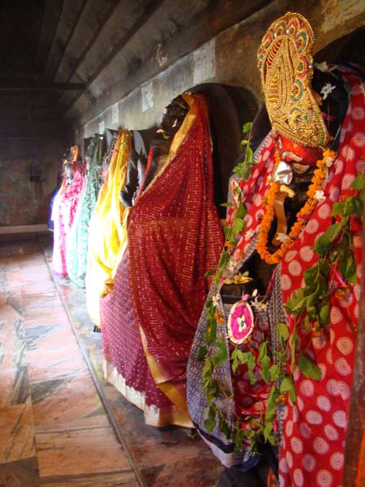
A rèir sagartan Teampall Biraja, Jajpur, agus Teampall Saptamatruka, agus na daoine ionadail an sin, tha an fhuil a' sruthadh bho bheul nam Màthraichean Saptamatruka air tachairt mar-thà ann an 2005.
Sgrìobh Mahapurush Achyutananda Das anns an teacsa Malika aige ‘Shibakalpa Nabakhanda Nirghanta’ –
Sloka Odia:
ଯେ ଦିନ ବିରଜା ଆସ୍ଥାନ ଛୋଡ଼ିବ ଭୀମ ସିଂହନାଦ ହେବ,
ଗର୍ଭସ୍ଥିତ
ଶିଶୁଭୂମିରେ ପଡ଼ିବେ ଭୁବନେଶ୍ୱରକୁ ଯିବ।
Tar-sgrìobhadh:
Je
dina Birajā āsthāna choḍiba bhīma siṃhanāda heba,
garbhasthita śiśubhūmire paḍibe
Bhubaneśwaraku jiba.
Tha e ainmeil gun do dh'fhàg Maa Biraja a suidheachan ann an 2004. Anns an t-Sultain 2004, rinn cuid de dhaoine poilitigeach co-fheall agus ghoid iad ìomhaigh Maa Biraja (a tha air a stàladh ann an Teampall Biraja, Jajpur). Às deidh timcheall air 6 mìosan, sa Mhàrt 2005, thill ìomhaigh na Màthar chun an teampall.
Bho na sia rannan gu h-àrd, tha e air a dhearbhadh gu soilleir gu bheil Mahaprabhu Kalki air a bhreith, agus gu bheil an ùine aige timcheall air na bliadhnaichean 2005-2008. Mar sin, biodh e soilleir do gach leughadair gu bheil an Kalki avatar an làthair air an Talamh an-dràsta.
A rèir nam Puranas, is e baile Sambhal àite-breith an Tighearna Kalki. Tha am Bhavishya Malika cuideachd ag ràdh gun tèid an Tighearna Kalki a bhreith ann am baile Sambhal. Tha a h-uile duine ag aontachadh air a' phuing seo.
Sgrìobh Mahapurush Achyutananda Das anns an teacsa Malika aige ‘Chakada Madana’ –
Sloka Odia:
ଭକ୍ତଙ୍କ କଷଣ ଦେଖି ପ୍ରଭୁ ଭଗବାନ,
କଳିରେ ସମ୍ବଳ ନଗ୍ରେ ଜନମ
ହୋଇଣ।
ବିଷ୍ଣୁଶର୍ମା ପିତାଙ୍କର ନାମଟି ଅଟଇ,
ମାତା ନାମ ସୁମତି ଯେ କହିଲୁ ବୁଝାଇ।
Tar-sgrìobhadh:
Bhaktaṅka kaṣaṇa dekhi prabhu bhagabāna,
Kaḷire Sambaḷa nagre janama
hoiṇa.
Biṣṇusharmā pitāṅkara nāmaṭi aṭai,
mātā nāma Sumati je kahilu bujhāi.
Sgrìobh am Mahapurush tuilleadh ann an ‘Chakada Madana’ –
Sloka Odia:
ସମ୍ବଳ ନଗରେ ପ୍ରଭୁ ସେ ଗୁପ୍ତେ ହେବେ ଜନମ,
ଛତିଆ ବଟରେ ଲାଗିବ
ଦିବାରାତ୍ରି ସଂଗ୍ରାମ।
Tar-sgrìobhadh:
Sambaḷa nagare prabhu se gupte hebe janama,
Chhatiā baṭare lāgiba dibārātri
saṅgrāma.
Sgrìobh Achyutananda Das Ji a-rithist anns an teacsa Malika aige ‘Chakada Madana’ –
Sloka Odia:
ମାରୁ ମହରଗ ରାଜକର ଆସି ଘରେ ଘରେ ପଶିଯିବ,
ବାରଣ ବେଳରେ ସମ୍ବଳନଗ୍ରେ
କଳ୍କୀ ଉଦୟ ହୋଇବ।
Tar-sgrìobhadh:
Māru maharaga rājakara āsi ghare ghare paśijiba,
bāraṇa beḷare Sambaḷanagre Kaḷkī
udaya hoiba.
Sgrìobh am Mahapurush tuilleadh ann an ‘Chakada Madana’ –
Sloka Odia:
କହନ୍ତି ଅଚ୍ୟୁତ ଶୁଣ ରାମଦାସ ଭକତ ମୋ ଗଳା ମାଳ,
ଭକତ ନିମନ୍ତେ
ସମ୍ବଳନଗ୍ରେ ହେବି କଳ୍କୀ ଅବତାର।
Tar-sgrìobhadh:
Kahanti Achyuta śuṇa Rāmadāsa bhakata mo gaḷā māḷa,
bhakata nimante Sambaḷanagre
hebi Kaḷkī abatāra.
Tha Mahapurush Achyutananda Das a' sgrìobhadh ann an ‘Tera Janma Sharana’ –
Sloka Odia:
କଳକୀର ସୀମା କାଳ ପୂରିଗଲେ କଳ୍କୀ ବିଷ୍ଣୁଯଶା ପୁରେ,
ସମ୍ବଳ ଗ୍ରାମରେ
ଜାତ ହୋଇଥିବେ ମ୍ଲେଚ୍ଛ ସଂହାର କାଳରେ।
Tar-sgrìobhadh:
Kaḷakīra sīmā kāḷa pūrigale Kaḷkī Biṣṇujashā pure,
Sambaḷa grāmare jāta hoithibe
mlechha saṃhāra kāḷare.
Ach, tha far a bheil 'Sambal' suidhichte na chuspair connspaid ann an inntinnean mòran dhaoine eadhon an-diugh. Anns an artaigil seo, fuasglaidh sinn seo.
Tha Mahapurush Achyutananda Das a' sgrìobhadh anns an teacsa Malika aige ‘Jaiphula Malika’ –
Sloka Odia:
ସେହି ବେଳ କାଳ ଜାଣି,
ଓଡିଶାରେ ପ୍ରଭୁ ଜନ୍ମିବେ ପୁଣି ଲୋ
ଯାଇଫୁଲ,
କେହି ତାଙ୍କ ମାୟାକୁ ନ ଚିହ୍ନି।
Tar-sgrìobhadh:
Sehi beḷa kāḷa jāṇi,
Oḍishāre prabhu janmibe puṇi lo jāiphula,
kehi tāṅka
māyāku na chinhi.
Tha am Mahapurush a-rithist a' sgrìobhadh ann an aon de na teacsaichean Malika aige –
Sloka Odia:
ଉତ୍କଳ ଭୂଇଁରେ କଳ୍କୀର ଜନମ,
ଗ୍ରାମ ନାମ ରାଜହଂସ।
କଳ୍କୀ ଜନମି
ଲୀଳା ପ୍ରକାଶିବ,
ଏହା କହିଲି ପ୍ରକାଶ୍ୟ।
Tar-sgrìobhadh:
Utkala bhuiñre Kaḷkīra janama,
grāma nāma Rājahansa.
Kaḷkī janami līḷā
prakāśiba,
ehā kahili prakāshya.
A-nis, a thaobh càite ann an Odisha a thèid an Tighearna Kalki a bhreith, sgrìobh Mahapurush Achyutananda Das fhèin ann an teacsa Malika eile, ‘Bhabishya Jatipataka Gita’ –
Sloka Odia:
ଓଡିଶା ଦେଶରେ ଗୁପ୍ତ ଗଙ୍ଗା ନଦୀ ତୀର,
ସମ୍ବଳ ନଗ୍ରେ ବିଷ୍ଣୁବିପ୍ର
ଦ୍ୱିଜବର।
Tar-sgrìobhadh:
Oḍiśā deśare gupta Gaṅgā nadī tīra,
Sambaḷa nagre Biṣṇubipra dwijabara.
Bho an dà rann gu h-àrd, tha e gu tur soilleir, a rèir am Bhavishya Malika, gun tèid an Tighearna Kalki a bhreith ann an Sambal, a tha suidhichte ann an stàit Innseanach Odisha.
Sgrìobh aon de na Panchasakhas, Mahapurush Jagannath Das, anns an teacsa Malika ‘Bhabishyat Parardha’ –
Sloka Odia:
ଯାଜପୁର ସମ୍ବଳ ନଗ୍ରରେ,
ଦୁଇ ଜଣ ଅଛନ୍ତି ବ୍ରାହ୍ମଣ ଘରେ।
Tar-sgrìobhadh:
Jājapura Sambaḷa nagrare,
dui jaṇa achhanti brāhmaṇa ghare.
Sgrìobh Mahapurush Achyutananda Das anns an teacsa Malika aige ‘Kalikalpa Gita’ –
Sloka Odia:
କ୍ଷୀର ନଦୀ ଦକ୍ଷିଣ ଯେ ବିରଜା ମଣ୍ଡଳ,
ଖ୍ୟାତ ଯେ କମଳପୁର ଗୁପ୍ତ ଯେ
ସମ୍ବଳ।
Tar-sgrìobhadh:
Kṣhīra nadī dakṣhiṇa je Birajā maṇḍala,
khyāta je Kamalapura gupta je Sambaḷa.
Tron rann seo, tha am Mahapurush air nochdadh gu bheil Sambal suidhichte ann an sgìre Biraja no sgìre Jajpur ann an Odisha.
Tuigidh sinn càite a bheil Sambal suidhichte ann an Odisha tro chuid a bharrachd de rannan.
Sgrìobh Mahapurush Achyutananda Das na theacsa Malika ‘Gurubhakti Gita’ –
Sloka Odia:
ଗୟାରେ ସମ୍ବଳ ନଗ୍ର ବିଷ୍ଣୁଶର୍ମା ଘର,
ଜନମିଣ ତପସ୍ୟା କରିବେ ଚକ୍ରଧର।
Tar-sgrìobhadh:
Gayāre Sambaḷa nagra Biṣṇusharmā ghara,
janamiṇa tapasyā karibe Chakradhara.
Sgrìobh Mahapurush Achyutananda Das a-rithist na theacsa Malika ‘Kalikalpa Gita’ –
Sloka Odia:
ବିଷ୍ଣୁଶର୍ମା ଗୃହେ ପ୍ରଭୁ ହୋଇବେ ଜାତ,
ଗୟାରେ ସମ୍ବଳ ନଗ୍ର ହରିହର
କ୍ଷେତ୍ର।
Tar-sgrìobhadh:
Biṣṇusharmā gruhe prabhu hoibe jāta,
Gayāre Sambaḷa nagra Harihara kṣhetra.
A rèir an dà rann gu h-àrd, thèid breith an Tighearna a ghabhail ann an Sambal Nagar de Gaya. A-nis, dè an Gaya a bhios ann agus càite a bheil e suidhichte ann an Odisha chaidh innse le Tighearna Krishna fhèin dha dhusan Gopas, a chaidh a ghairm le Mahapurush Achyutananda Das na theacsa Malika ‘Biraja Mahatmya’. Sgrìobh am Mahapurush –
Sloka Odia:
ଶୁଣ ବାର ସୁତ ନିହାର ବଚନ ଏ ଅଟେ ଅଚ୍ୟୁତ ଠାର,
ନାଭିଗୟା ତୀର୍ଥେ ହରିହର
କ୍ଷେତ୍ର ଗ୍ରାମଟି ସମ୍ବଳ ପୁର।
Tar-sgrìobhadh:
Śuṇa bāra suta nihāra bachana e aṭe Achyuta ṭhāra,
Nābhigayā tīrthe Harihara
kṣhetra grāmaṭi Sambaḷa pura.
Is e sin, tha sgìre Harihara ann an làrach taistealachd Nabhigaya, ris an canar Sambal.
Anns na còmhraidhean gu h-àrd, tha sinn air fhaicinn ann an iomadh àite gun tug am Mahapurush cunntas air àite-breith a' Mahaprabhu mar sgìre Biraja no làrach taistealachd Gaya (Nabhigaya). A-nis bidh fios againn gu cinnteach càite a bheil na sgìrean sin suidhichte, dè na creideasan miotasach a tha ceangailte riutha, agus dè an cudromachd a th' aca.
Tha an 'Teampall Biraja' na phrìomh theampall suidhichte air bruaichean Abhainn Baitarani ann an Jajpur, Odisha, far a bheil Adi Shakti air a h-adhradh ann an cruth 'Biraja'. Gu dearbh, ann an seann amannan, rinn Brahma Ji fhèin Yajna (ìobairt) an seo aig a' Brahmakunda, às dèidh sin thàinig Màthair Parvati a-mach às an teine ìobairteach agus dh'iarr i air Brahma Ji a stèidheachadh fon ainm 'Biraja'. Canar cuideachd sgìre Biraja ris an sgìre às dèidh ainm Ban-dia Biraja.
B' ann aig an àite seo a thuit an imleag (Nabhi) de Bhan-dia Sati, ga dhèanamh mar aon de na 51 Shakti Peethas. Is e seo an aon teampall far a bheil a' Bhan-dia air a h-adhradh ann an cruth Mahishasura Mardini le dà ghàirdean.
Tha an t-àite seo cuideachd ainmeil mar Nabhigaya airson Pinda Daan (tabhartasan sinnsearachd). Gu dearbh, is e seo an aon Shakti Peetha far a bheil Pinda Daan air a dhèanamh. Faisg air a' Brahmakunda, tha tobar domhainn ris an canar Nabhikunda, leis an uisge a bhios daoine a' dèanamh Pinda Daan airson an sinnsearan. Tha an t-àite seo cuideachd air ainmeachadh anns an Skanda Purana.
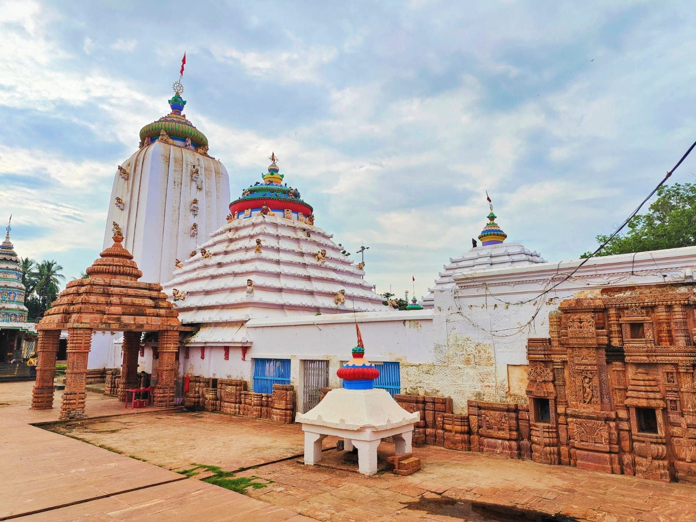
Tha e air ainmeachadh anns na Puranas gun robh, anns an Satya Yuga, deamhan air an robh Gayasura. Ged a rugadh e ann an cinneadh deamhan, bha a chridhe air a bhrosnachadh le Dharma agus peanas. Bha e glè dhiadhaidh, air leth cumhachdach, agus bha corp mòr aige. Bha e an-còmhnaidh ag obair airson math an t-saoghail agus buannachd chàich. Tha e air ainmeachadh anns na Puranas gun do rinn an deamhan peanas cruaidh, leis an robh Tighearna Vishnu toilichte, agus dh'iarr an Tighearna air beannachd iarraidh. Dh'iarr Gayasura beannachd shònraichte. Thuirt e, “Gum faigh creutairean nèamh dìreach le mo suathadh.” Thug Tighearna Vishnu an beannachd seo seachad a' faicinn a pheanas dian. Ach mar thoradh air sin, thòisich Yamaloka (saoghal nam marbh) a' fàs falamh, oir chaidh ge b' e cò a suath Gayasura dìreach gu nèamh. Thàinig seo gu bhith na dhuilgheadas mòr dha na diathan agus Yamraj. Thàinig na diathan uile chun an Trianaid (Brahma, Vishnu, Mahesh) agus ghuidh iad fuasgladh fhaighinn air an trioblaid seo. Dh'iarr na diathan air an Trianaid Gayasura a stad. Cho-dhùin an Trianaid Gayasura a stad, a bha ag adhbhrachadh cnapan-starra ann an riaghailtean cruthachaidh a dh'aindeoin a bhith ceart. Ghabh an triùir aca cruth trì Brahmins, chaidh iad gu Gayasura, agus thuirt iad gu robh iad airson Yajna a dhèanamh gu leantainneach airson seachd latha agus airson seo, bha feum aca air àite mòr agus naomh. Dh'iarr iad air Gayasura a chorp a thoirt seachad airson an Yajna, ach cha robh e gu bhith a' gluasad airson na seachd latha sin. Dh'aontaich Gayasura ri seo. Sgaoil Gayasura a cheann ann an Gaya (Bihar) far an robh Tighearna Vishnu na shuidhe, chuir e a sgìre imleag ann an Nabhigaya (Jajpur, Odisha) far an robh Brahma Ji na shuidhe, agus chuir e a chasan ann am Pithapuram (Andhra Pradesh) far an robh Tighearna Shiva na shuidhe, agus mar sin thòisich an Yajna. Rinn an Trianaid an Yajna gu leantainneach airson seachd latha.
Bha Gayasura a' cunntadh nan làithean le bhith a' cluinntinn gairm a' choilich sa mhadainn. Le fios air seo, air an latha mu dheireadh, ghabh Tighearna Shiva cruth coileach agus ghairm e mus robh an oidhche seachad. A' cluinntinn fuaim a' choilich, shaoil Gayasura gur e madainn a bh' ann agus ghluais e a chorp a' smaoineachadh gun robh na seachd latha seachad. Nochd an Trianaid sa bhad roimhe agus thuirt iad gun robh Gayasura air a ghealladh a bhriseadh gus a chorp a chumail fhathast airson seachd latha. Thuirt iad gur e bàs a bh' ann am peanas airson a' gheallaidh a bhriseadh. Ghabh Gayasura ceart ri seo gun ghearan sam bith. Bha an Trianaid toilichte le a dhiadhachd agus dh'iarr iad air beannachd iarraidh. An uairsin dh'iarr Gayasura orra gum biodh a ainm air a chuimhneachadh còmhla ris an Trianaid. Dh'iarr e orra a chorp a sgeadachadh gu buan le aodach Brahmins. Dh'iarr e cuideachd an beannachd nach biodh duine sam bith a fhuair tabhartasan (Pinda Daan agus Tarpan) aig na trì àiteachan sin air ath-bhreith.
A' gabhail ri miann Gayasura, ghabh Tighearna Vishnu cruth Gadadhar ann an Gaya, tha Brahma Ji air a adhradh ann an cruth Girija Devi ann an Nabhigaya, agus tha Tighearna Shiva air a adhradh ann am Pithapuram mar Kukkuteshwar (an Tighearna a ghabh cruth coileach). San dòigh seo, thàinig na trì àiteachan sin gu bhith ainmeil airson Pinda Daan agus Tarpan:
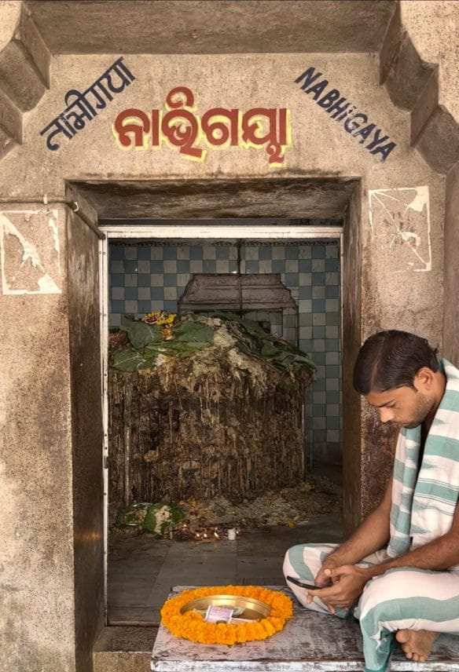
Tha an dearbhadh gu bheil làrach taistealachd Nabhigaya suidhichte ann an Jajpur ri fhaighinn cuideachd ann an teacsaichean Malika nam Panchasakha Mahapurushas.
Anns an teacsa Malika ‘Chakada Madana’, sgrìobh Mahapurush Achyutananda Das –
Sloka Odia:
ଯାଜପୁରଠାରେ ନାଭିଗୟା ତୀର୍ଥ ଏକଥା ଜାଣ ସତ୍ୱର।
Tar-sgrìobhadh:
Jājapurathāre Nābhigayā tīrtha ekathā jāṇa satwara.
Mahapurush Achyutananda Das, fhad 's a bha e a' fàidheadaireachd a dheicheamh breith mu 600 bliadhna air ais, sgrìobh e anns an teacsa Malika ‘Kalikalpa Gita’ –
Sloka Odia:
ଦଶମ ଜନମ ମୋହର ହୋଇବ ପ୍ରକାଶ,
ଯାଜପୁର ନାଭିଗୟା ହରିହର ଖ୍ୟାତ।
Tar-sgrìobhadh:
Daśama janama mohara hoiba prakāśa,
Jājapura Nābhigayā Harihara khyāta.
Tro'n rann seo cuideachd, tha e soilleir gu bheil làrach taistealachd Nabhigaya suidhichte ann an Jajpur.
Sgrìobh am Mahapurush air an aon chuspair seo na theacsa Malika ‘Kalikalpa Gita’ –
Sloka Odia:
ଯାଜପୁର ପଞ୍ଚକୋଶ ବିରଜା ମଣ୍ଡଳ,
ନାଭିଗୟା ବିଷ୍ଣୁଶର୍ମା ଘରେ ହେବ ଖେଳ।
Tar-sgrìobhadh:
Jājapura pañchakośa Birajā maṇḍala,
Nābhigayā Biṣṇusharmā ghare heba kheḷa.
Mar sin, bhon chòmhradh gu h-àrd, tha e gu tur soilleir gu bheil làrach taistealachd Sambal Nagar, Gaya, agus sgìre Biraja far an do rinn na Panchasakhas fàidheadaireachd air breith Tighearna Kalki, gu dearbh suidhichte taobh a-staigh sgìre Jajpur ann an Odisha.
Gus barrachd soilleireachd fhaighinn air àite-breith Tighearna Kalki, gabhaidh sinn cuid a bharrachd de rannan a tha air an ainmeachadh anns an Malika.
Sgrìobh Mahapurush Shishu Ananta Das na theacsa Malika ‘Chumbaka Malika’ –
Sloka Odia:
କଳ୍କୀ ଅବତାରେ ଓଡିଶା ମଣ୍ଡଳେ ତୁମ୍ଭେ ଜନମ ହୋଇବ,
ଦୁଷ୍ଟ ଜନ ନାଶି
ଭକତଙ୍କୁ ଉଶ୍ୱାସୀ ଧର୍ମକୁ ତୁମ୍ଭେ ପାଳିବ।
Tar-sgrìobhadh:
Kaḷkī abatāre Oḍiśā maṇḍaḷe tumbhe janama hoiba,
duṣhṭa jana nāśi bhaktaṅku uśwāsī
dharmaku tumbhe pāḷiba.
Mahapurush Achyutananda Das, a' gairm an Tighearna, sgrìobh e na theacsa Malika –
Sloka Odia:
ଇନ୍ଦୁ ପରେ ବିନ୍ଦୁ ଦେଖିବ ଜାଣ,
ଆମ୍ଭ ଆବିର୍ଭାବ ଯାଜପୁରେଣ।
Tar-sgrìobhadh:
Indu pare bindu dekhiba jāṇa,
āmbha ābirbhāba Jājapureṇa.
Mahapurush Achyutananda Das, na theacsa Malika ‘Jai Birachita Chautisha’, sgrìobh e fhad 's a bha e ag ath-aithris faclan an Tighearna fhèin gu dìreach –
Sloka Odia:
ଯେତେବେଳେ ନୀଳାଚଳ ଛାଡିକରି ଯିବୁ,
ଯାଜପୁର ବିପ୍ର ଘରେ ଯାଇଁ
ଜନମିବୁ।
ଜଗିଥିବୁ ହେ। ଯେ ଯେତେ କହିଲେ ନ ଶୁଣିବୁ ହେ।
Tar-sgrìobhadh:
Jetebeḷe Nīḷāchaḷa chhāḍikari jibu,
Jājapura bipra ghare jāiñ
janamibu.
Jagithibu he. Je jete kahile na śuṇibu he.
Anns an teacsa Malika ‘Tatwabodhini’, sgrìobh Mahapurush Achyutananda Das –
Sloka Odia:
ଯାଜନଗ୍ରେ ପ୍ରଭୁ ଜନମ ହେବେ,
ଜନମ ହୋଇବେ ବ୍ରାହ୍ମଣ ଭାବେ।
Tar-sgrìobhadh:
Jājanagre prabhu janama hebe,
janama hoibe brāhmaṇa bhābe.
Sgrìobh Mahapurush Achyutananda Das na theacsa Malika leis an ainm ‘Bigyanakalpa’ –
Sloka Odia:
ଯାଜନଗ୍ରେ ମହାପ୍ରଭୁ ଜନମ ହୋଇବେ,
ଗରୁଡକୁ ସଙ୍ଗେ ଘେନି ଲୀଳା ଯେ କରିବେ।
Tar-sgrìobhadh:
Jājanagre Mahāprabhu janama hoibe,
Garuḍaku saṅge gheni līḷā je karibe.
Bho na rannan gu h-àrd, chan eil teagamh sam bith tuilleadh gun robh breith Mahaprabhu Kalki cinnteach a thachairt ann an Sambal Nagar, làrach taistealachd Nabhigaya, sgìre Biraja, sgìre Jajpur, Odisha.
Ma choimheadas sinn air a' Bhagavata Purana agus a' Mahabharata a chaidh a sgrìobhadh ron Bhavishya Malika, tha iad cuideachd a' comharrachadh Jajpur, Odisha a thaobh àite-breith an Tighearna Kalki.
Ann an amannan na bu tràithe, thuirt Maharishi Vedavyas gur e 'Sambhal village' àite-breith an Tighearna Kalki anns an Shrimad Bhagavata Mahapurana. Bha e air sgrìobhadh –
Sloka Sanscrait:
संभलग्राममुख्यस्य ब्राह्मणस्य महात्मनः ।
भवने विष्णुयशसः
कल्किः प्रादुर्भविष्यति ।।
Tar-sgrìobhadh:
Śambhalagrāmamukhyasya brāhmaṇasya mahātmanaḥ |
bhavane viṣṇuyaśasaḥ kalkiḥ
prādurbhaviṣyati ||
Nas fhaide air adhart, anns an 'Vanaparva' den Mahabharata, dh'atharraich Maharishi Vyas seo beagan agus thug e 'Sambhoota Sambhal Grama' mar ainm air àite-breith an Tighearna Kalki. Sgrìobh e –
Sloka Sanscrait:
कल्कि विष्णुयशा नाम द्विजः कालप्रचोदितः ।
उत्पत्स्यते
महावीर्यो महाबुद्धिपराक्रमः ।।
सम्भूतः सम्भलग्रामे ब्राह्मणावसथे शुभे ।
मनसा
तस्य सर्वाणि वाहनान्यायुधानि च ।।
उपस्थास्यन्ति योधाश्च शस्त्राणि कवचानि च ।
Tar-sgrìobhadh:
Kalki Vishnuyashā nāma dwijaḥ kālaprachoditaḥ |
utpatsyate mahāvīryo
mahābuddhiparākramaḥ ||
sambhūtaḥ sambhalagrāme brāhmaṇāvasathe shubhe
|
manasā tasya sarvāṇi vāhanānyāyudhāni cha ||
upasthāsyanti yodhāshcha
shastrāṇi kavachāni cha |
A-nis, ma nì sinn sgrùdadh agus rannsachadh tro dhuilleagan eachdraidh, gheibh sinn a-mach gu bheil tuineachadh nam Brahmin a chaidh a stèidheachadh airson Yajna agus adhradh suidhichte ann an sgìre Jajpur ann an Odisha.
Gu dearbh, chaidh ainm Jajpur a thoirt seachad anns an 10mh linn an dèidh tiotal an Rìgh Somavamsi Jajati (Yayati). Stèidhich an Rìgh Jajati am baile seo agus rinn e Abhinav Jajatinagar na phrìomh-bhaile aige. Nas fhaide air adhart, ag atharrachadh an ainm, chaidh a dhèanamh an toiseach Jajanagar agus an uairsin Jajpur. Bha an Rìgh Jajati Keshari air mu 10,000 Brahmin a thoirt à Kannauj ann an Uttar Pradesh agus an suidheachadh ann an Jajpur, Odisha, gus deich Ashwamedha Yajnas (Dashashwamedha) a dhèanamh. Fiù 's an-diugh, tha an Dashashwamedha Ghat air bruaichean Abhainn Baitarani a' cur nar cuimhne an tachartas seo. Co-dhiù, bha Maharishi Vyas air comharrachadh a dhèanamh air a' choloinidh seo de Brahmins a bha air an suidheachadh air taobh an ear teampall Biraja ann an Jajpur le bhith ga h-ainmeachadh 'Sambhoota Sambhal Grama' anns an 'Vanaparva' den Mahabharata.
Chan eil teagamh sam bith aig duine sam bith aig a bheil ùidh anns a' Bhavishya Malika mu càite am bi Mahaprabhu Kalki air a bhreith. Tha fios aca glè mhath gum bi an avatar Kalki air a bhreith ann am baile Sambal a tha suidhichte ann an Jajpur, Odisha.
Chan eil teagamh sam bith aca cuideachd gun dèan an Tighearna, an dèidh dha a bhreith ann an Jajpur, fuireach ann an àite leis an ainm Khandagiri.
Sgrìobh fear de na Panchasakhas, Mahapurush Shishu Ananta Das, na theacsa Malika ‘Chumbaka Malika’ –
Sloka Odia:
ଏହି କଳିଯୁଗେ କଳ୍କୀ ଅବତାରେ ହରି,
ଶ୍ରୀ ଖଣ୍ଡଗିରିରେ ଥିବେ ପ୍ରଭୁ ବିଜେ
କରି।
Tar-sgrìobhadh:
Ehi kaliyuge Kalki abatare Hari,
Shri khaṇḍagirire thibe prabhu bije kari.
Tha Mahapurush Achyutananda Das a' sgrìobhadh na ‘Agata Bhabishyata Malika’ aige –
Sloka Odia:
ଗୋପନେ ମୁକୁନ୍ଦ ଯେ ଆସି,
ଖଣ୍ଡଗିରିରେ ଥିବେ ବସି।
Tar-sgrìobhadh:
Gopane Mukunda je asi,
Khandagirire thibe basi.
Sgrìobh Mahapurush Sishu Ananta Das a-rithist ann an aon de na teacsaichean Malika aige, 'Patta Madana' –
Sloka Odia:
ଭକତ ସୁମେଳ ହୋଇ ଏକ ଠୁଳ ଖଣ୍ଡଗିରି ପାଶେ ଯିବେ,
ଅନନ୍ତ ମୂରତି ଦର୍ଶନ
ସାରିଣ ସର୍ବେ ସର୍ବଙ୍କୁ ଚିହ୍ନିବେ।
Tar-sgrìobhadh:
Bhakata sumeḷa hoi eka ṭhuḷa Khaṇḍagiri pāshe jibe,
ananta mūrati darshana sāriṇa
sarbe sarbaṅku chinhibe.
Suas chun na h-ìre seo, tha a h-uile duine ag aontachadh, ach tha teagamh dhaoine ag èirigh a thaobh càite a bheil an Khandagiri seo suidhichte. An-diugh, tro chuid de bhideothan agus PDFan, thathas a' dèanamh diofar thagraidhean mu Khandagiri. A rèir cuid de dhaoine, tha an t-àite seo leis an ainm Khandagiri, far am bi an Tighearna a' fuireach, suidhichte ann an Jajpur, Odisha, fhad 's a tha cuid eile ag ràdh gu bheil Khandagiri suidhichte ann an sgìre Dhenkanal ann an Odisha.
Tro an artaigil seo, leig leam a ràdh ge b' e ainmean a chaidh ainmeachadh gu h-àrd a thaobh Khandagiri (Jajpur, Dhenkanal), tha iad le chèile gu tur ceàrr.
A' mìneachadh càite a bheil Khandagiri suidhichte, sgrìobh fear de na Panchasakhas, Mahapurush Yasovanta Das, na theacsa Malika ‘Basanta Manjari’ –
Sloka Odia:
ଖଣ୍ଡଗିରି ମହିମା କହିତ ନୁହଁଇ,
ଲକ୍ଷ ଲକ୍ଷ ଭକ୍ତ ତହିଁ ସେଠାରେ
ଅଛଇ।
ଗୁପତ ଲୀଳା ହୋଇବ ଖଣ୍ଡଗିରି ଠାରେ,
ତପସ୍ୟାରେ ରହିଥିବେ ଋଷିଙ୍କ ସଙ୍ଗରେ।
ଗୁପ୍ତ
ଗଙ୍ଗା ସେକାଳରେ ବାହାର ହୋଇବ,
ଭୁବନେଶ୍ୱରକୁ ସେହି ଭସାଇଣ ଦେବ।
ତ୍ରିଭୁବନ ସ୍ୱର କଥା କହିତ
ନୁହଁଇ,
ବାରଭୁଜା ଦୁର୍ଗାମାତା ଜଗି ରହିଛଇଁ।
ଆହୁରି କଥାଏ ବାବୁ ଶୁଣ ମନଦେଇ,
ଭୂଆସୁଣୀ
ଜଗିଅଛି ସେଠାବକୁ ତହିଁ।
Tar-sgrìobhadh:
Khaṇḍagiri mahimā kahita nuhañi,
lakṣha lakṣha bhakta tahin seṭhāre
achhai.
Gupata līḷā hoiba Khaṇḍagiri ṭhāre,
tapasyāre rahithibe ruṣhiṅka
saṅgare.
Gupta Gaṅgā sekāḷare bāhara hoiba,
Bhubaneśwaraku sehi bhasāiṇa
deba.
Tribhubana swara kathā kahita nuhañi,
bārabhuja Durgāmātā jagi
rahichhaiṃ.
Āhuri kathāe bābu śuṇa manadei,
Bhūāsuṇī jagiachhi seṭhābaku
tahiñ.
Anns an shloka gu h-àrd, shoilleirich am Mahapurush gu bheil Khandagiri suidhichte ann am Bhubaneswar.
A' toirt cunntas air suidheachadh Khandagiri, sgrìobh Mahapurush Achyutananda Das cuideachd na theacsa Malika ‘Chakada Madana’ –
Sloka Odia:
ଭୁବନେଶ୍ୱରରେ ଲାଗିବ ଗୋଳ,
ଏକାମ୍ର ବନ ଯେ ଅଛି ସେଠାର।
ଖଣ୍ଡଗିରି
ସିଦ୍ଧ ସାଧୁ ଅଛନ୍ତି,
କଳ୍କୀ ରୂପକୁ ଧ୍ୟାନ କରନ୍ତି।
କ୍ଷୀର ଧାର ବହିଯାଏ
ଗୁପ୍ତର,
ଗୁମ୍ଫାରେ ଭଜନ ହୁଏ ସତ୍ୱର।
ଘଟଣା ସ୍ଥାନ ଯେ ଅଟଇ ସେହି,
କଳିର ଭାରତ ଯୁଦ୍ଧ
ସେଠାହିଁ।
ଉଦୟଗିରି ଯେ ଅପୋଡା ସ୍ଥାନ,
ସେଠାବରେ ବହୁ ସାଧୁ ଆଶ୍ରମ।
Tar-sgrìobhadh:
Bhubaneśwarare lāgiba goḷa, ekāmra bana je achhi seṭhāra.
Khaṇḍagiri siddha sādhu
achhanti, Kaḷkī rūpaku dhyāna karanti.
Kṣhīra dhāra bahijāe guptara, gumphāre
bhajana hue satwara.
Ghaṭaṇā sthāna je aṭai sehi, Kaḷira bhārata yuddha
seṭhāhiñ.
Udayagiri je apoḍā sthāna, seṭhābare bahu sādhu āśrama.
Tro an shloka gu h-àrd, thuirt am Mahapurush gu soilleir gu bheil an Khandagiri far am bi naoimh gun àireamh a' fuireach, far am bi seinn dìomhair ainm Kalki a' dol air adhart ann an uaimhean, agus far am bi an còrr de bhlàr a' Mahabharata a' tachairt, suidhichte ann am Bhubaneswar, far a bheil coille Ekamra cuideachd suidhichte.
An seo bu mhath leam aire an luchd-leughaidh a tharraing gu fìrinn chudromach. Ann an teacsaichean Malika, thathas gu tric a' gairm Bhubaneswar mar Ekamra Kshetra, Ekamra Van, no Ekamra Kanan. Gu dearbh, a rèir an Ekamra Purana bhon 13mh linn, cha robh ann ach aon chraobh mango faisg air àite an diadhachd riaghlaidh Lingaraj. Mar sin, thathas cuideachd a' gairm sgìre Lingaraj mar Ekamra Kshetra (an sgìre le aon chraobh mango).
Is e seo an t-adhbhar carson a tha Mahapurushas iomadh uair air Bhubaneswar a ghairm Lingaraj Kshetra (sgìre teampall Lingaraj) no Ekamra Van Kshetra (sgìre na craoibhe mango singilte).
Chan e a-mhàin seo, air sgàth suidheachadh Bindu Sarovar ann am Bhubaneswar, tha na Panchasakhas nan teacsaichean Malika cuideachd air Bhubaneswar a ghairm mar sgìre Bindu Sarovar.
Sgrìobh am Mahapurush a' soilleireachadh ann an 'Garuda Gita' –
Sloka Odia:
ଭୁବନେଶ୍ୱର ଯେ ଏକାମ୍ର କାନନ ଏ ସବୁ ମୋ ଗୁପ୍ତ ସ୍ଥାନ,
ଆଉ ପୃଥ୍ବୀରେ
ଯେତେ ସିଦ୍ଧ ସ୍ଥାନ ପୁରାଣେ ଅଛି ବର୍ଣ୍ଣନ।
Tar-sgrìobhadh:
Bhubaneśwara je ekāmra kānana e sabu mo gupta sthāna,
āu pruthwīre jete siddha
sthāna purāṇe achhi barṇana.
Sgrìobh Mahapurush Achyutananda Das na theacsa Malika 'Chhayalisha Patala' –
Sloka Odia:
ଭୁବନେଶ୍ୱର ଏକାମ୍ରରେ,
ରହିବେ ଭକ୍ତ ତିନିଘରେ।
Tar-sgrìobhadh:
Bhubaneśwara Ekāmrare, rahibe bhakta tini ghare.
Sgrìobh Mahapurush Sishu Ananta Das na theacsa Malika 'Chumbaka Malika' –
Sloka Odia:
ଭୁବନେଶ୍ୱର ସୀମା ଖଣ୍ଡଗିରିରେ,
ପଞ୍ଚବିଂଶ ଭକ୍ତ ଥିବେ ତଟରେ।
Tar-sgrìobhadh:
Bhubaneśwara sīmā Khaṇḍagirire, pañchabiṃśha bhakta thibe taṭare.
Tha am Mahapurush a' sgrìobhadh tuilleadh ann an 'Chakada Madana' –
Sloka Odia:
ଭୁବନେଶ୍ୱରରେ ଗୋଳ ଖଣ୍ଡଗିରି ଠାର,
ଭାବି କହଇ ଅଚ୍ୟୁତୀ ନିଜ ନାମ ସ୍ମର।
Tar-sgrìobhadh:
Bhubaneśwarare goḷa Khaṇḍagiri ṭhāra,
bhābi kahai Achyutī nija nāma smara.
Aon de na Panchasakhas, Mahapurush Yasovanta Das, a' sgrìobhadh anns an teacsa Malika aige –
Sloka Odia:
ଭୁବନେଶ୍ୱର ଠାରେ ଜାଣ,
ବିନ୍ଦୁ ସେ ସରୋବର ପୁଣ।
Tar-sgrìobhadh:
Bhubaneśwara ṭhāre jāṇa,
Bindu se sarobara puṇa.
Tha Mahapurush Yasovanta Das a' sgrìobhadh anns an teacsa Malika aige ‘Bhavishyata Parardha’ –
Sloka Odia:
ଭୁବନେଶ୍ୱର ଲିଙ୍ଗରାଜ ସ୍ଥଳୀ,
ଦୁଇ ପୁରୁଷ ଏକଜଣ ସ୍ତିରୀ।
Tar-sgrìobhadh:
Bhubaneśwara Liṅgarāja sthaḷī,
dui puruṣha ekajaṇa stirī.
Ma ghabhas sinn cuideachadh bho Google, eadhon an uairsin is urrainn dhuinn fios a bhith againn gu furasta, ge bith an e Khandagiri no Ekamra Kanan no Bindu Sarovar no teampall Lingaraj a th' ann, gu bheil iad uile suidhichte ann am Bhubaneswar fhèin.
Khandagiri, a bhios na àite-còmhnaidh an Tighearna, far am bi mòran naoimh a' seinn ainm Kalki—gus mìneachadh gu bheil an Khandagiri seo suidhichte ann am Bhubaneswar (Ekamra Kshetra), sgrìobh Mahapurush Achyutananda Das a-rithist ann an ‘Chakada Madana’ –
Sloka Odia:
ଖଣ୍ଡଗିରି ପାଦଦେଶେ ଭରତ ପାଦୁକା,
ଛଦ୍ମବେଶୀ ସାଧୁ ପୂଜା କରୁଅଛି
ଏକା।
ଗୁପ୍ତଗଙ୍ଗା ବହିଅଛି ଗୁପ୍ତ ଖଣ୍ଡଗିରି,
ସିଦ୍ଧ ସାଧୁ ଗୁପ୍ତ ବେଶେ ରହିଛନ୍ତି
ପୁରି।
ଏକାମ୍ର ବନ ଅଟଇ ଶିବ ଯୋଗ ସ୍ଥାନ,
ଶୁକପକ୍ଷୀ ପାଇଲା ଯେଉଁଠି
ବ୍ରହ୍ମଜ୍ଞାନ।
ଭୂଆସୁଣୀ ଦେବୀ ଅଛି ଜାଣିଥା ସତ୍ୱର,
ସେ ଦେବୀ ଘାତରେ ପୃଥବୀ ହେବ କମ୍ପମାନ।
Tar-sgrìobhadh:
Khaṇḍagiri pādadeśe Bharata pādukā, chhadmabeśī sādhu pūjā karuachhi
ekā.
Guptagaṅgā bahiachhi gupta Khaṇḍagiri, siddha sādhu gupta beśe rahichhanti
puri.
Ekāmra bana aṭai Śiba yoga sthāna, śukapakṣhī pāilā jeuṇṭhi
brahmajñāna.
Bhūāsuṇୀ debī achhi jāṇithā satwara, se debī ghātare pruthibī heba
kampamāna.
Bu mhath leam innse do na leughadairean an seo gun tuirt am Mahapurush ann an aon de na rannan gu h-àrd gu bheil Khandagiri suidhichte ann an sgìre coille Ekamra agus gu bheil mòran naoimh a' dèanamh peanas ann an Khandagiri. Tha abhainn cuideachd a' sruthadh an sin gu dìomhair. Anns an rann làithreach seo, tha am Mahapurush ag ath-aithris an aon rud.
Sgrìobh Mahapurush Achyutananda Das a-rithist anns an ‘Tera Janma Sharana’ aige –
Sloka Odia:
ଲୀଳା ପ୍ରକାଶିବ ଲୀଳାମୟଙ୍କର ସତ୍ୟ ଯେ ଏକାମ୍ର ବନ,
ଲୀଳା କରୁଥିବେ
ଅନନ୍ତ ମାଧବ ସର୍ବେ ଆନନ୍ଦ ହୋଇଣ।
Tar-sgrìobhadh:
Līḷā prakāśiba līḷāmayankara satya je Ekāmra bana,
līḷā karuthibe Ananta Mādhaba
sarbe ānanda hoiṇa.
Sgrìobh Mahapurush Achyutananda Das a-rithist anns an ‘Aagata Bhavishyata Malika’ aige –
Sloka Odia:
କଳା ଧଳା ଅଶ୍ୱ ଉପରେ ପ୍ରଭୁ ହେବେ ବାହାର,
ଭୁବନେଶ୍ୱରରେ ରହିବେ ପ୍ରଭୁ
ରଙ୍ଗା ଅଧର।
ଖଣ୍ଡଗିରି ସିଦ୍ଧ ସ୍ଥାନରେ ଯେତେ ଅଛନ୍ତି ଋଷି,
ସକଳେ ବାହାର ହୋଇବେ ପ୍ରଭୁ
ନାମକୁ ଘୋଷି।
ସକଳେ ସେବେଳେ ଠୁଳ ଯେ ହେବେ ବିନ୍ଦୁ ସାଗର,
କପିଳେଶ୍ୱରରେ ଭେଟିଣ ହୋଇବେ
ସୂପକାର।
Tar-sgrìobhadh:
Kaḷā dhaḷā ashwa upare prabhu hebe bāhāra,
Bhubaneshwarare rahibe prabhu raṅgā
adhara.
Khaṇḍagiri siddha sthānare jete achhanti ruṣi,
sakaḷe bāhāra hoibe
prabhu nāmaku ghoṣi.
Sakaḷe sebeḷe ṭhuḷa je hebe Bindu Sāgara,
Kapileshwarare
bheṭiṇa hoibe sūpakāra.
Anns an rann gu h-àrd cuideachd, thathar ag ràdh gur e àite foirfe a th' ann an Khandagiri a bhios na àite-còmhnaidh mòran saoidhean agus manaich. Agus thathar cuideachd ag ràdh, ge bith an e Khandagiri no Bindu Sarovar no Teampall Kapileshwar a th' ann, gu bheil iad uile suidhichte ann am Bhubaneswar agus faisg air a chèile.
Aon de na Panchasakhas, Mahapurush Sishu Ananta Das, nuair a chaidh faighneachd dha le a dheisciobal Baranga Das càite an tèid an Tighearna Kalki a bhreith agus càite an còmhnaich e, a' mìneachadh anns an teacsa Malika aige ‘Chumbaka Malika’ –
Sloka Odia:
ଶୁଣ ହେ ବାରଙ୍ଗ କହିବା ସେ ରଙ୍ଗ ପ୍ରଭୁ ଅବତାର ସ୍ଥାନ,
ଶ୍ରୀ ବିରଜା
କ୍ଷେତ୍ରେ ଜନମ ଲଭିବେ ଅନନ୍ତ ମିଶ୍ର ଗୃହେଣ।
ଜନମ ହୋଇବେ ଗୃହକୁ ଛାଡିବେ ତପସ୍ୟା କରିବେ
ଯାଇଁ,
ସିଦ୍ଧଗିରି ସ୍ଥାନ ସିଦ୍ଧଙ୍କ ସଦନ ରହିବେ ସେ ଭାବଗ୍ରାହୀ।
ଖଣ୍ଡଗିରି ସ୍ଥାନ ଏକାମ୍ର
କାନନ ସୁବର୍ଣ୍ଣଚ୍ୟୁତ ଗିରିରେ,
ସେହି ସ୍ଥାନେ ପ୍ରଭୁ ବିଜେ କରିଥିବେ ଭକ୍ତ ଜନ
ସଙ୍ଗତରେ।
ଶ୍ରୀ ଅନନ୍ତ ବାସୁଦେବ ବିପ୍ରଲିଙ୍ଗ ଭେଟ ସେ ଯହିଁ ଆଗରେ,
ବିନ୍ଦୁସାଗରେ ସ୍ନାନ
ବିଧି ସାରିଣ ସିଦ୍ଧ କେଦାର ମଧ୍ୟରେ।
ଶ୍ରୀ ବିନ୍ଦୁ ସାଗରେ ସ୍ନାନ ସାରିବେ ସମସ୍ତ ଭକତ
ମିଳି,
ନିଜ କଳା ଭକ୍ତି କଳା ପ୍ରକାଶିବେ ଛାଡିବେ କଳିର ମଳି।
Tar-sgrìobhadh:
Shuṇa he bāraṅga kahibā se raṅga prabhu abatāra sthāna,
Shrī Birajā kṣetre janama
labhibe Ananta Mishra gruheṇa.
Janama hoibe gruhaku chhāḍibe tapasyā karibe
jāiñ,
Siddhagiri sthāna siddhaṅka sadana rahibe se bhābagrāhī.
Khaṇḍagiri
sthāna Ekāmra kānana Subarṇachyuta girire,
sehi sthāne prabhu bije karithibe bhakta
jana saṅgatare.
Shrī Ananta Bāsudeba bipraliṅga bheṭa se jahiñ
āgare,
Bindusāgare snāna bidhi sāriṇa siddha Kedāra madhyare.
Shrī Bindu
Sāgare snāna sāribe samasta bhakata miḷi,
nija kaḷā bhakti kaḷā prakāshibe chhāḍibe
kaḷira maḷi.
Thuirt am Mahapurush cuideachd gun dèan na diadhairean uile amar anns an aon Bindu Sarovar sin, às deidh sin nochdaidh an solas diadhaidh anns na diadhairean, agus bidh iad uile saor bho shalachar Kali Yuga.
Tron rann gu h-àrd, shoilleirich Sishu Ananta Dasji gu bheil Khandagiri suidhichte anns an aon Bhubaneswar sin (sgìre Ekamra Van) far a bheil teampall Shri Ananta Vasudev, far a bheil teampall Kedareshwar, far a bheil Lingaraj an làthair. Is e an Khandagiri seo sgìre nan naomh foirfe, agus còmhnaichidh an Tighearna an seo.
Sgrìobh Naomh Hadi Das, a bha na ath-bhreith de Achyutananda Dasji, anns an teacsa Malika aige ‘Kali Chautisha’ –
Sloka Odia:
କର୍ଣ୍ଣ ଦେଇ ଶୁଣ ସୁଜନେ କଳିଯୁଗ ବିଚାର,
କଳ୍କୀ ରୂପରେ ଜନମ ହେବେ ଶ୍ରୀ
ଚକ୍ରଧର।
କ୍ଷୀର ଧାର ବହି ଯାଉଛି ସ୍ଥାନ ଅମରାବତୀ,
ଖଣ୍ଡଗିରି ସ୍ଥାନ ଗୁପତେ ସିଦ୍ଧ ସାଧୁ
ଅଛନ୍ତି।
ଗୁମ୍ଫାରେ ଭଜନ ଲାଗିଛି ରାତ୍ର ଦିନ ମଧ୍ୟରେ,
ଗୁପତେ ଖେଳ ସେ ଖେଳିବେ ପ୍ରଭୁ ସେହି
ଠାବରେ।
ଝାଡଖଣ୍ଡଗିରି ଗୁମ୍ଫା ମଧ୍ୟରେ ପ୍ରଭୁଙ୍କର ସେ ଠାବ,
ଝଲମଲ ଜ୍ୟୋତି ବାହାରେ ଲୀଳା ଚହଟ
ହେବ।
Tar-sgrìobhadh:
Karṇa dei shuṇa sujane kaḷiyuga bichāra,
Kaḷkī rūpare janama hebe Shrī
Chakradhara.
Kṣīra dhāra bahi jāuchhi sthāna Amarābatī,
Khaṇḍagiri sthāna
gupate siddha sādhu achhanti.
Gumphāre bhajana lāgichhi rātra dina
madhyare,
gupate kheḷa se kheḷibe prabhu sehi ṭhābare.
Jhāḍakhaṇḍagiri gumphā
madhyare prabhuṅkara se ṭhāba,
jhalamala jyoti bāhāre līḷā chahaṭa heba.
Sgrìobh Naomh Hadi Das anns an teacsa Malika aige ‘Kali Chautisha’ –
Sloka Odia:
ଘଟଣା ପ୍ରତିମା ପୁରୁଷ ଲିଙ୍ଗରାଜଙ୍କ ପୁର,
ଘୋର କଳି ମହାଭାରତ ହେବ ସେହି
ଠାବର।
Tar-sgrìobhadh:
Ghaṭaṇā pratimā puruṣha Liṅgarājaṅka pura,
ghora kaḷi mahābhārata heba sehi
ṭhābara.
Nas fhaide air adhart, sgrìobh Hadi Das – Is e Bhubaneswar no sgìre Lingaraj an “Ghatana Sthana” agus tachraidh cogadh Kali Mahabharata an sin.
Tha seo a' ciallachadh gu bheil na tha Achyutananda Das ag ràdh mu Khandagiri ann an ‘Chakada Madana’ dìreach mar a tha a ath-bhreith, Hadi Das, ag ràdh mu sgìre Lingaraj (Bhubaneswar) ann an ‘Kali Chautisha’. Tha seo a' dearbhadh gu bheil an dà àite, i.e., Khandagiri agus Bhubaneswar, a' comharrachadh an aon àite. Ann an ùine ghoirid, tha Khandagiri ann am Bhubaneswar.
Nota – Gu ruige seo anns na mòran rannan gu h-àrd, tha sinn air ionnsachadh gur e Khandagiri ann am Bhubaneswar sgìre nan naomh foirfe agus naomh. Tha na naoimh sin air an gabhail a-steach ann am bhajan-kirtan an Tighearna Kalki latha is oidhche ann an uaimhean Khandagiri. A-nis ionnsaichidh sinn dè na prìomh saoidhean agus manaich a bhios a' dèanamh peanas airson an Tighearna Kalki anns an Khandagiri sin agus cia mheud saoidh gu h-iomlan a bhios a' dèanamh bhajan-kirtan anns na h-uaimhean.
Tha Mahapurush Achyutananda Das a' sgrìobhadh anns an ‘Aagata Bhavishya Prabandha Malika’ aige –
Sloka Odia:
ଖଣ୍ଡଗିରିକି ଯେ ଭୁବନେଶ୍ୱର କେତେକ ଦୂର,
ଖଣ୍ଡଗିରି ମଧ୍ୟେ ଅଛନ୍ତି
ସାଧୁସନ୍ଥ ନିକର।
ନାରଦ ମାର୍କଣ୍ଡ ଶମ୍ଭୁ ଯେ ଅଗସ୍ତି ଉପଲସ୍ତି,
ଦୁର୍ବାସା କଶ୍ୟପ ଚ୍ୟବନ
କୁମ୍ଭଋଷି ସନ୍ତତି।
ପରାଶର ବଶିଷ୍ଠାଦି ହୋ ବିଶ୍ୱାମିତ୍ରଙ୍କୁ ଘେନି,
ଷାଠିଏ ସହସ୍ର ଋଷି ହୋ
ଗିରି ମଧ୍ୟରେ ପୁଣି।
ଦେବଋଷି ବ୍ରହ୍ମଋଷି ଯେ ସର୍ବେ ମେଳି ହୋଇଣ,
ଗୁମ୍ଫାରେ ଭଜନ କରନ୍ତି
କଳ୍କୀ ନାମ ପୁଣ।
ଦେବତାମାନେ ଯେ ସେଠାରେ ରାତ୍ରେ ଗୋଷ୍ଠୀ କରନ୍ତି,
କଳ୍କୀର ଆଦ୍ୟ ମନ୍ତ୍ରକୁ
ନିତ୍ୟେ ଜପୁଛନ୍ତି।
Tar-sgrìobhadh:
Khaṇḍagiriki je Bhubaneshwara keteka dūra,
Khaṇḍagiri madhye achhanti sādhusantha
nikara.
Nārada Mārkaṇḍa Shambhu je Agasti Upalasti,
Durbāsā Kashyapa Chyabana
Kumbharuṣi santati.
Parāshara Bashiṣṭhādi ho Bishwāmitraṅku gheni,
ṣāṭhie
sahasra ruṣi ho giri madhyare puṇi.
Debaruṣi Brahmaruṣi je sarbe meḷi
hoiṇa,
gumphāre bhajana karanti Kaḷkī nāma puṇa.
Debatāmāne je seṭhāre rātre
goṣṭhī karanti,
Kaḷkīra ādya mantraku nitye japuchhanti.
Anns an rann seo, cha do dh'innis Garudaji a-mhàin mu na saoidhean a bha a' dèanamh peanas ann an uaimhean Khandagiri ach thuirt e cuideachd nach bi uamh Khandagiri fada bho Bhubaneswar, no an àite sin, bidh i suidhichte glè fhaisg.
Bho na 15 rannan gu h-àrd, feumaidh gu bheil e air fàs soilleir do na leughadairean, a rèir Bhavishya Malika, gu bheil Khandagiri—far an còmhnaich Kalki, far am bi naoimh foirfe gun àireamh a' fuireach, far am bi bhajan-kirtan ainm Kalki a' dol air adhart gu leantainneach ann an uaimhean, far an sruth abhainn gu dìomhair, far an tachair an còrr de bhlàr Mahabharata—suidhichte a-mhàin ann am Bhubaneswar no sgìre Lingaraj no sgìre Ekamra Van, agus gun àite eile.
Mar a tha fios againn uile, bidh an Tighearna a' gabhail deich ath-bhreith air an Talamh seo gus fìreantachd (Dharma) a stèidheachadh. Ge bith an e Satya Yuga, Treta Yuga, no Dvapara Yuga a th' ann, tha adhbhar ath-bhreith an Tighearna air an Talamh fhathast mar an ceudna—stèidheachadh Dharma.
Anns an Shrimad Bhagavad Gita, thuirt an Tighearna Krishna ri Arjuna –
Sloka Sanscrait:
परित्राणाय साधूनां विनाशाय च दुष्कृताम् ।
धर्मसंस्थापनार्थाय
संभवामि युगे युगे ।।
Anns na teacsaichean Bhavishya Malika cuideachd, thathar ag ràdh gun tig an Tighearna Maha Vishnu sìos air an Talamh anns an deicheamh agus an ath-bhreith mu dheireadh aige, Kalki, airson sgrios nan aingidh, dìon nan diadhairean agus nan naomh, agus ath-stèidheachadh Dharma.
Chaidh còmhradh eadar an Tighearna Krishna agus a charaid Arjuna ann an Dvapara Yuga a ghairm mu 600 bliadhna air ais ann an Kali Yuga le Mahapurush Achyutananda Das anns an teacsa Malika aige 'Chausathi Patala'. Sgrìobh am Mahapurush –
Sloka Odia:
ପାପ ଭାରା ପୃଥ୍ବୀ ସହି ନପାରି,
ମୋ ଆଗରେ କଲା ବେଗେ
ଗୁହାରି।
କଳ୍କୀ ଅବତାର ମୁହିଁ ହୋଇବି,
ଦୁଷ୍ଟ ପ୍ରାଣୀମାନଙ୍କୁ ବିନାଶିବି।
ବସି ନରପତି
ହୃଦ ଦେଶରେ
ପ୍ରଜା ପାଳିବି ଉତ୍ତମ ଭାବରେ।
Tar-sgrìobhadh:
Pāpa bhārā pṛthwī sahi napāri,
mo āgare kalā bege guhāri.
Kaḷkī abatāra muhiñ
hoibi,
duṣṭa prāṇīmānaṅku bināshibi.
Basi narapati hṛda deshare,
prajā
pāḷibi uttama bhābare.
Tha Mahapurush Achyutananda Das a' sgrìobhadh ann an teacsa Malika eile –
Sloka Odia:
ମହାଭୟଙ୍କର ଉତ୍ପାତ ହେବ ଧରିତ୍ରୀ ବକ୍ଷରେ ଜାଣ,
କଳ୍କୀ ରୂପରେ ମ୍ଲେଚ୍ଛ
ସଂହାରି ଭାରା ଉଶ୍ୱାସିବେ ପୁଣ।
Tar-sgrìobhadh:
Mahābhayaṅkara utpāta heba dharitrī bakṣhare jāṇa,
Kaḷkī rūpare mlechha saṃhāri
bhārā uśwāsibe puṇa.
A' gairm còmhradh Krishna-Arjuna, tha am Mahapurush a' sgrìobhadh a-rithist anns an teacsa Malika aige –
Sloka Odia:
କଳି ଶେଷ ବେଳେ ମୁହିଁ କଳ୍କୀ ରୂପ ହେବି,
ସନ୍ଥଙ୍କୁ ରଖିଣ
ଦୁଷ୍ଟଜନମାନଙ୍କୁ ନାଶିବି।
Tar-sgrìobhadh:
Kaḷi śeṣha beḷe muñhi Kaḷkī rūpa hebi,
santhaṅku rakhiṇa duṣhṭajanamānanku nāśhibi.
A' gairm faclan an Tighearna a-rithist, tha Mahapurush Achyutananda Das a' sgrìobhadh anns an teacsa Malika aige 'Chausathi Patala' –
Sloka Odia:
ବେଶୀ ପାପ ଯେତେବେଳେ ହେବ କଳ୍କୀ ରୂପେ ମୁଁ ଉଦୟ ହେବି,
ଓଡିଶା ମଧ୍ୟରେ
ସ୍ଥାନେ ସ୍ଥାନେ ମନ ପରୀକ୍ଷା ଯାଇ କରିବି।
Tar-sgrìobhadh:
Beśī pāpa jetebeḷe heba Kaḷkī rūpe mu udaya hebi,
Oḍiśā madhyare sthāne sthāne mana
parīkṣhā jāi karibi.
A’ togail faclan an Tighearna, sgrìobh aon de na Panchasakhas, Mahapurush Balaram Das, anns an teacsa Malika aige 'Kali Aagata Bhavishyanta' –
Sloka Odia:
ଚଣ୍ଡୀ ଯେ ଚାମୁଣ୍ଡା ମାତିବେ,
ଖପର କରେ ଘେନିଥିବେ।
ରୋଧିର ବୃଷ୍ଟି
ଯେ ହୋଇବ,
କେ ଅବା କାହିଁ ନାଶ ଯିବ।
ଯାହାକୁ ରଖିବିଟି ଟିକିଏ ମୁହିଁ,
ସେ ପ୍ରାଣୀମାନେ
ଥିବେ ରହି।
ଦୁଷ୍ଟ ଲୋକ ଯେ ନାଶ ହେବେ,
ସନ୍ଥ ଯେ ଅବଶ୍ୟ ରହିବେ।
ଅନେକ ଉତ୍ପାତ
ଲାଗିବ,
ଶୂନ୍ୟରେ ଚହଳ ପଡିବ।
Tar-sgrìobhadh:
Chaṇḍī je Chāmuṇḍā mātibe,
khapara kare ghenithibe.
Rodhira bṛṣṭi je
hoiba,
ke abā kāhiñ nāsha jiba.
Jāhāku rakhibiṭi ṭikie muhiñ,
se
prāṇīmāne thibe rahi.
Duṣṭa loka je nāsha hebe,
santha je abashya
rahibe.
Aneka utpāta lāgiba,
shūnyare chahaḷa paḍiba.
Tha Mahapurush Achyutananda Das a’ sgrìobhadh anns an teacsa Malika aige 'Kali Kalpa Gita' –
Sloka Odia:
କଳ୍କୀ ରାମ ରୂପ ଧରି ହରି ଦେଶ ଭ୍ରମଣ କରିବେ,
କ୍ଷତ୍ରୀମାନଙ୍କୁ
ନିକ୍ଷତ୍ରୀ କରିଣ ବସୁଧାକୁ ଉଦ୍ଧାରିବେ।
Tar-sgrìobhadh:
Kaḷkī Rāma rūpa dhari Hari desha bhramaṇa karibe,
kṣhatrīmānanku nikṣhatrī kariṇa
basudhāku uddhāribe.
Ann an 'Kali Kalpa Gita' fhèin, tha Mahapurush Achyutananda Das a’ sgrìobhadh a-rithist –
Sloka Odia:
ମ୍ଲେଚ୍ଛ ନିଧନ ଦୁଷ୍ଟ ସଂହାରଣ,
କରିବେ ନିଶ୍ଚେ ଦେବ କଳ୍କୀ
ରାମ।
ଏମନ୍ତ ମହୀ ଯେ ହେବ ଉଶ୍ୱାସ,
କଳିକଳ୍ପ କହେ ଅଚ୍ୟୁତ ଦାସ।
Tar-sgrìobhadh:
Mlechha nidhana duṣhṭa saṃharaṇa,
karibe niśhche deba Kaḷkī Rāma.
Emanta mahī
je heba uśwāsa,
Kaḷikalpa kahe Achyuta dāsa.
Sgrìobh aon de na Panchasakhas, an t-Anam Mòr Sishu Ananta Das, air a’ chuspair seo anns an teacsa Malika aige 'Chumbaka Malika':
Sloka Odia:
କଳ୍କୀ ଅବତାର ଓଡ଼ିଶା ମଣ୍ଡଳେ ତୁମ୍ଭେ ଜନମ ହୋଇବ,
ଦୁଷ୍ଟ ଜନ ନାଶି
ଭକ୍ତଙ୍କୁ ଆଶ୍ୱାସି ଧର୍ମକୁ ତୁମ୍ଭେ ପାଳିବ।
Tar-sgrìobhadh:
Kaḷkī abatāra Oḍiśā maṇḍaḷe tumbhe janama hoiba,
duṣhṭa jana nāśhi bhaktaṅku āśwāsi
dharmaku tumbhe pāliba.
Mar a tha fios againn bho iomraidhean Bhabishya Malika, anns an ùine eadar-ghluasaid seo eadar Kali Yuga agus Satya Yuga, tachraidh tachartasan sgriosail nach fhacas a-riamh air feadh an t-saoghail fo cheannas an Tighearna Kalki, tro bheil a h-uile Mleccha (barbaraich), peacaich, na h-aingidh, agus an fheadhainn neo-cheart a’ dol a sgrios. Tha Bhabishya Malika cuideachd a’ toirt cinnteachd gum fuirich a h-uile neach-adhraidh sàbhailte rè nan tachartasan sin agus nach fheum iad eagal a bhith orra.
Tha Mahapurush Achyutananda Das, anns an teacsa Malika aige ‘Chhayalisha Patala’, a’ togail faclan an Ard-Thighearna anns a bheil an Tighearna a’ toirt seachad mion-fhiosrachadh mu sgaoileadh pàirt (Khanda Pralaya) a tha ri thighinn.
Tha am Mahapurush a’ sgrìobhadh:
Sloka Odia:
କାଳଭାବେ ମହାଶକ୍ତି ଖଣ୍ଡ ପ୍ରଳୟରେ,
ସୃଷ୍ଟି ନାଶ କରି ଲୀଳା କରେ ପାପ
ଭାରେ।
ମାତ୍ର ମହାପ୍ରଳୟକୁ ରହିଥିବୁ ଟାକି,
ସେ କାଳରେ ଚରାଚର ନ ରହିବେ ବାକି।
ଚଣ୍ଡୀ
ଚାମୁଣ୍ଡା ସହିତ ସଂହାରିଣୀ ଶକ୍ତି,
ଖଣ୍ଡା ଖପର ହାତରେ ବୁଲି ଦିବାରାତ୍ରି।
ରୋଗ ଶୋକ ଦୁଃଖ
ଜାଲ ସଂସାରେ ପାତିବେ,
ପର ଆପଣାର ଭେଦ କିଛି ନ ରଖିବେ।
ଅଣଚାଶ ପବନ ଯେ ରୁଦ୍ର ମୂର୍ତ୍ତି
ଧରି,
ଉପାଡ଼ିବ ସୁମେରୁ ସହିତ ଯେତେ ଗିରି।
ଚାରିମେଘ ଚାରିଦିଗେ ଆଚ୍ଛନ୍ନ
କରିବେ,
ମହାଘୋର ବିପତ୍ତିକୁ ଆଣି ଘଟାଇବେ।
ଅନ୍ଧାର ହୋଇବ ପୃଥ୍ବୀ ବଢ଼ିବ
ଉତ୍ପାତ,
ନକ୍ଷତ୍ର ଉଲକା ଛିଣ୍ଡିବ ନାହିଁ ଆଦି ଅନ୍ତ।
ଭୈରବୀ ରଡ଼ିବେ ପୃଥ୍ବୀ କାନ୍ଦିବ
ସକଳ,
ପାପମାତ୍ରା ପ୍ରବଳରେ ହେବ ଏହି ଫଳ।
Tar-sgrìobhadh:
Kālabhābe mahāshakti khaṇḍa praḷayare,
Sṛṣṭi nāsha kari līḷā kare pāpa
bhāre.
Mātra mahāpraḷayaku rahithibu ṭāki,
Se kāḷare charāchara na rahibe
bāki.
Chaṇḍī Chāmuṇḍā sahita saṃhāriṇī shakti,
Khaṇḍā khapara hātare buli
dibārātri.
Roga shoka duḥkha jāla saṃsāre pātibe,
Para āpaṇāra bheda kichhi na
rakhibe.
Aṇachāsha pabana je rudra mūrtti dhari,
Upāḍiba Sumeru sahita jete
giri.
Chārimegha chāridige āchhanna karibe,
Mahāghora bipattiku āṇi
ghaṭāibe.
Andhāra hoiba pṛthwī baḍhiba utpāta,
Nakṣatra ulakā chhiṇḍiba nāhiñ
ādi anta.
Bhairabī raḍibe pṛthwī kāndiba sakaḷa,
Pāpamātrā prabaḷare heba ehi
phaḷa.
Tha Mahapurush Achyutananda Das, a’ togail faclan an Tighearna, a’ sgrìobhadh anns an teacsa Malika aige ‘Agata Bhabishyata Malika’:
Sloka Odia:
କାହିଁ ଜଳ ରୂପେ ମୁହିଁ ଜଗତ ନାଶିବି,
କାହିଁ ପବନ ରୂପରେ ସକଳ
ଗ୍ରାସିବି।
କାହିଁ ଯୋଗମାୟା ନେଇ ସଂହାର କରିବି,
କାହିଁ ନିଜେ ବିଶ୍ଵରୂପ ଧାରଣ
କରିବି।
କାହିଁ ମଉନ ବ୍ରତ ମୁଁ ଧାରଣ କରିବି,
କାହିଁ କାଳରୂପେ ମୁହିଁ ପାପୀଙ୍କୁ ନାଶିବି।
Tar-sgrìobhadh:
Kāhiñ jala rūpe muhiñ jagata nāshibi,
kāhiñ pabana rūpare sakaḷa
grāsibi.
kāhiñ yogamāyā nei saṃhāra karibi,
kāhiñ nije bishwarūpa dhāraṇa
karibi.
kāhiñ mauna brata muñ dhāraṇa karibi,
kāhiñ kāḷarūpe muhiñ pāpīṅku
nāshibi.
A rèir Bhabishya Malika, bheir an Tighearna Kalki an sgrios seo tro thuiltean uisge fiadhaich, crithean-talmhainn mòra, stoirmean gaoithe sgriosail, tuiltean teine, mòr-thubaistean fànais, galaran-sgaoilte cunnartach, agus cogadh niùclasach cruinne.
Sgrìobh Mahapurush Achyutananda Das anns an teacsa Malika aige ‘Gupta Kheda Malika’:
Sloka Odia:
ହିମାଳୟ ଏଭରେଷ୍ଟ ଟଳି ଯେ ପଡିବ,
ଯେବେ ଏହି ଧରା ପରେ ଭୂମିକମ୍ପ ହେବ।
Tar-sgrìobhadh:
Himālaya Everest ṭaḷi je paḍiba,
Jebe ehi dharā pare bhūmikampa heba.
Tha Mahapurush Achyutananda Das a’ sgrìobhadh a-rithist anns an teacsa Malika aige ‘Gupta Kheda Malika’:
Sloka Odia:
ଭୂମିକମ୍ପେ ପ୍ରକମ୍ପିତ ହୋଇବ ଧରଣୀ,
ମାଟି ତଳେ ଲୁଚିଯିବ କୋଠାବାଡି
ପୁଣି।
Tar-sgrìobhadh:
Bhūmikampe prakampita hoiba dharaṇī,
māṭi taḷe luchijiba koṭhābāḍi puṇi.
Sgrìobh am Mahapurush ann an teacsa Malika eile aige:
Sloka Odia:
ପାତାଳେ ବାସୁକୀ ଟେକିବ ମୁଣ୍ଡ,
ତିନିଥର ଯେ କମ୍ପିବ ବ୍ରହ୍ମାଣ୍ଡ।
Tar-sgrìobhadh:
Pātāḷe Bāsukī ṭekiba muṇḍa,
tini thara je kampiba brahmāṇḍa.
Sgrìobh naomh mòr a rugadh ann an Odisha anns an 20mh linn, Thakur Shri Abhiram Paramahansa, anns an teacsa Malika aige ‘Baishnaba Gita’:
Sloka Odia:
ଭୂମିକମ୍ପ ହେବ ଅପାର,
ନାଶ ହୋଇବେ ନାରୀ ନର।
Tar-sgrìobhadh:
Bhūmikampa heba apāra,
nāśha hoibe nārī nara.
Fhad ‘s a bha e a’ deasbad uamhasan na tuile uisge, tha Mahapurush Achyutananda Das a’ sgrìobhadh anns an teacsa Malika aige ‘Gupta Kheda Malika’:
Sloka Odia:
ଭାରତକୁ ଛାଡି ଦେଲେ ସବୁ ରାଷ୍ଟ୍ର ଯିବ, ମହାସାଗର ଜଳରେ ଡୁବି
ମରୁଥିବ।
ଧରଣୀ ଦେହରେ ଜଳ ମାରିବ ଲହରୀ, ଜଳାର୍ଣ୍ଣବ ହୋଇଯିବ ଚଉଦିଗ ଭାରି।
ଅଛଇ ବରଫଗଡ଼
ଉତ୍ତର ମେରୁରେ, ତରଳିବ ଧୀରେ ଧୀରେ ସୂର୍ଯ୍ୟଙ୍କ ରଶ୍ମିରେ।
ରୌଦ୍ରତାପେ ଯେତେବେଳେ ମେଦିନୀ କମ୍ପିବ,
ସେତିକିବେଳେ ବରଫଗଡ଼ ତରଳିବ।
ବହିବ ପାଣିର ସୁଅ ସମୁଦ୍ରକୁ ପୁଣ, ଆଟଲାଣ୍ଟିକ ବଢ଼ିବ କାହିଁ କେତେ
ଜାଣ।
ସମୁଦ୍ରର ପାଣି ଧୀରେ ବଢ଼ି ବଢ଼ି ଯିବ, ସାଗର ମାତିବ ଶେଷେ ଆଉ ଯାହା ଥିବ।
ଅନାଉ ଅନାଉ
କାହିଁ ଜଳ ମାଡିଯିବ, ମାଟିର ଲକ୍ଷେ ଘନ ଫୁଟ ଉପରେ ରହିବ।
ଭୂଗୋଳର ସ୍ଥିତି ବଡ଼ ବିଚିତ୍ର ତୁ ଜାଣ,
ଭାରତ ରହିଛି ସର୍ବ ଉର୍ଦ୍ଧ୍ଵରେ ତ ପୁଣ।
ସୃଷ୍ଟିର କର୍ତ୍ତା ପ୍ରଭୁ ଜଗତପତି ଜାଣ, ଭାରତ ଭୂମିରେ
କରିବେ ବୈକୁଣ୍ଠ ସ୍ଥାପନ।
ପାଣିର ଘେରରେ ଆଉ ସବୁ ମହାଦେଶ, ଧୀରେ ଜାଣ ବୁଡିଯିବ ସେ
ମହାବିନାଶ।
ଦେଖିବ ଏ ଦୁଇ ଆଖି ସମୟ ଆସିଛି, ସାମନା କରି ପାରିଲେ ସମୟକୁ ଇଛି।
Tar-sgrìobhadh:
Bhāratku chāḍidele sabu rāṣṭra jiba, Mahāsāgara jalare ḍubi maruthiba.
Dharaṇī
dehare jala māriba laharī, Jalārṇaba hoijiba chaudiga bhāri.
Achai baraphagaḍa
uttara merure, taraḷiba dhīre dhīre sūryāṅka raśmire.
Raudratāpe jetebeḷe medinī
kampiba, setikibeḷe baraphagaḍa taraḷiba.
Bahiba pāṇira sua samudruku puṇa,
Āṭlāṇṭika baḍhiba kāhiñ kete jāṇa.
Samudrara pāṇi dhīre baḍhi baḍhi jiba, sāgara
mātiba śeṣe āu jāhā thiba.
Anāu anāu kāhiñ jala māḍijiba, māṭira lakṣhe ghana phuṭa
upare rahiba.
Bhūgoḷara sthiti baḍa bichitra tu jāṇa, Bhārata rahichi sarba
urdhware ta puṇa.
Sruṣṭira kartā prabhu jagatpati jāṇa, Bhārata bhūmire karibe
Baikuṇṭha sthāpana.
Pāṇira gherare āu sabu mahādeśa, dhīre jāṇa buḍijiba se
mahābināśa.
Dekhiba e dui ākhi samaya āsichi, sāmnā karipārile samayaku ichhi.
Tha aon de na Panchasakhas, Mahapurush Sishu Ananta Das, a’ sgrìobhadh anns an teacsa Malika aige ‘Patta Madana’:
Sloka Odia:
ଧର୍ମହୀନ ହେବେ ସକଳ ଏ ଜନ ଧର୍ମାଧର୍ମ ନ ରହିବ,
ଅଣଚାଶ ବାୟୁ ବହିବ ଏମନ୍ତ
ପୃଥିବୀ ଟଳଟଳ ଧ୍ରୁବ।
Tar-sgrìobhadh:
Dharmahīna hebe sakaḷa e jana dharmādharma na rahiba,
aṇachāśha bāyu bahiba emanta
pruthibī ṭaḷaṭaḷa dhruba.
Tha am Mahapurush a’ sgrìobhadh ann an teacsa Malika eile aige:
Sloka Odia:
ପବନ ବହି ଅଣଚାଶ,
କ୍ଷିତିକି କରିଦେବ ଧ୍ଵଂସ।
Tar-sgrìobhadh:
Pabana bahi aṇachāśha,
kṣhitiki karideba dhwaṃsa.
Sgrìobh an naomh dall a rugadh ann an Odisha anns an 19mh linn, Bhima Bhoi, cuideachd air a’ chuspair seo anns an teacsa Malika aige. Tha am Mahapurush a’ sgrìobhadh:
Sloka Odia:
ଅଣଚାଶ ଖଣ୍ଡ ପବନ ବହିବ ପର୍ବତ ଦୋହଲିଯିବ,
ଚାରିମେଘ ମିଳି ବର୍ଷିବେ
ଚାରିଦିଗ ଅନ୍ଧାର ଘୋଟିବ।
ମୋ ଭାଇ, ଚନ୍ଦ୍ର ସୂର୍ଯ୍ୟ ଦେଖାଯିବ ନାହିଁ।
Tar-sgrìobhadh:
Aṇachāśha khaṇḍa pabana bahiba parbata dohalijiba,
chārimegha miḷi barṣhibe
chāridiga andhāra ghoṭiba.
Mo bhāi, chandra sūrya dekhājiba nāhiñ.
Sgrìobh Mahapurush Achyutananda Das a-rithist:
Sloka Odia:
ଟଳଟଳ ହେଉଥିବ ସପ୍ତଦ୍ଵୀପ ମହୀ,
ସେ ବେଳେ ଥଳକୂଳ ରହିବଟି
ନାହିଁ।
ଅଣଚାଶ ଖଣ୍ଡ ହୋଇ ପବନ ବହିବ,
ସରକାର ବୁଦ୍ଧିବିଦ୍ୟା ଉଭେଇ ଯିବ।
Tar-sgrìobhadh:
Ṭaḷaṭaḷa heuthibā saptadwīpa mahī,
se beḷe thaḷakūḷa rahibāṭi nāhiñ.
aṇachāśha
khaṇଡa hoi pabana bahiba,
sarakāra buddhibidyā ubhei jiba.
Sloka Odia:
କର ପତ୍ର ଯୋଡି କହଇ ବାରଙ୍ଗ ଗୁରୁପାଦେ ଶିର ଦେଇ,
ପ୍ରଳୟ କାଳର ବାରଣ
କହିବା କଳି ଶେଷ ହେବ ଯହିଁ।
ଶୁଣରେ ବାରଙ୍ଗ ଏମନ୍ତ କାଳ ଯେ ଦିନେ ଆସି ପହଞ୍ଚିବ,
ଦଶ ଗ୍ରାମ
ମଧ୍ୟେ ଜଣେକ ରହିବେ ଦେବତାଙ୍କ ଆବିର୍ଭାବ।
ସେ କାଳେ ବାରଙ୍ଗ ଅଣଚାଶ ବାୟୁ ଭାଦ୍ରବ ପୂର୍ଣ୍ଣିମା
ଦିନ,
ଏମନ୍ତ ପବନ ବହିବ ବାରଙ୍ଗ ସକଳ ହୋଇବ ଲୀନ।
Tar-sgrìobhadh:
Kara patra joḍi kahai Bāraṅga gurupāde śira dei,
praḷaya kāḷara bāraṇa kahibā kaḷi
śeṣha heba jahiñ.
Śuṇare Bāraṅga emanta kāḷa je dine āsi pahañchiba,
daśha
grāma madhye jaṇeka rahibe debatāṅka ābirbhāba.
Se kāḷe Bāraṅga aṇachāśha bāyu
Bhādraba pūrṇimā dina,
emanta pabana bahiba Bāraṅga sakaḷa hoiba līna.
Sgrìobh Mahapurush Achyutananda Das anns an teacsa Malika aige 'Gupta Kheda Malika':
Sloka Odia:
ଧନ, ସମ୍ପତ୍ତି ଓ ଟଙ୍କା ଯାହା ଅଛି ଜମା,
ସବୁଯିବ ପୋଡି ଭାଇ ନିଆଁର
ଗଞ୍ଜମା।
ଚଉଦିଗେ ନିଆଁ କାହୁଁ ଦଗ୍ଧି ଏ ଧରଣୀ,
ଓଦା କଞ୍ଚା ନ ମାନିବ ସବୁ ଖାଏ
ଅଗ୍ନି।
ଅଗ୍ନିର କରାଳ ରୂପ ଜୀବାତ୍ମା ଦେଖିବ,
ହାଁ ହାଁ ହୋଇ ତାର ପ୍ରାଣ
ଛାଡିଯିବ।
ସମଗ୍ର ବିଶ୍ଵରେ ଧ୍ଵଂସ ଲୀଳୋ ଯେ ଚାଲିବ,
କେଉଁଠି କମ୍ ବେଶୀ ଜାଣେ ତା ଦଇବ।
Tar-sgrìobhadh:
Dhana, sampatti o ṭaṅkā jāhā achi jamā,
sabujiba poḍi bhāi niāñra
gañjamā.
Chaudige niāñ kāhuñ dagdhi e dharaṇī,
odā kañchā na māniba sabu khāe
agni.
Agnira karāḷarūpa jībātmā dekhiba,
hāñ hāñ hoi tāra prāṇa
chāḍijiba.
Samagra biśware dhwaṃsa līḷā je chāliba,
keuṇṭhi kam beśī jāne tā
daiba.
Sloka Odia:
ନାନା ଉତ୍ପାତ ଯାକ ଅନ୍ତରୀକ୍ଷେ ହେବ,
ଭକ୍ତ ବିନା ଅନ୍ୟ କେହି ଜାଣି ନ
ପାରିବ।
Tar-sgrìobhadh:
nānā utpāta jāka antarikhye heba,
bhakta binā anya kehi jāni na pāriba.
Sgrìobh am Mahapurush a-rithist air a' chuspair seo anns an teacsa Malika aige ‘Amara Jumara Samhita’:
Sloka Odia:
କଳିଯୁଗ ଶେଷବେଳେ ପୃଥ୍ବୀ ଉତ୍ପାତ,
ରଣ ଗୋଳ ସେ କାଳେ ହୋଇବ
ବହୁତ।
ଚାରିଦିଗମାନଙ୍କରେ ଲାଞ୍ଜାମାନ ପଡି,
ସେ କାଳେ ବହୁତ ଶବ୍ଦ ହେବ ଘଡ଼ଘଡ଼ି।
Tar-sgrìobhadh:
Kaḷiyuga śheṣhabeḷe pruthbī utpāta,
raṇa goḷa se kāḷe hoiba
bahuta.
chāridigamānaṅkare lāñjāmāna paḍi,
se kāḷe bahuta śhabda heba
ghaḍaghaḍi.
Sgrìobh na Mahapurushes ann an grunn theacsaichean Malika gun robh, aig deireadh Kali Yuga, mòran ghalaran agus galaran-sgaoilte a' toirt comann-sòisealta daonna air an glùinean. Thuirt am Malika gu soilleir gun tèid dotairean a dhìth ann an lorg agus làimhseachadh nan galaran agus nan galaran-sgaoilte sin, agus gun dearbhaich na cungaidhean-leigheis a thug iad seachad a bhith neo-èifeachdach.
Thuirt na Mahapurushes cuideachd, ann an da-rìribh, gun tèid na galaran agus na galaran-sgaoilte sin a thoirt le cumhachdan-màthair leithid Yogamaya, Ashta Chandis, 64 Yoginis, Dakinis, Pisachinis, msaa. Siùbhlaidh na cumhachdan-màthair sin air feadh an t-saoghail ann an cruthan caol mar na tinneasan sin agus thèid iad a-steach do chorp dhaoine.
Sgrìobh Mahapurush Achyutananda Das anns an teacsa Malika aige ‘Bigyanakalpa’:
Sloka Odia:
ଦୁର୍ଭିକ୍ଷ ପଡିବ ଲୋକେ ଯିବେ ବହୁ ମରି,
ଚଉଷଠି ରୋଗ ଭ୍ରମୁଥିବେ ଫେରି
ଫେରି।
Tar-sgrìobhadh:
Durbhikṣha paḍiba loke jibe bahu mari,
chauṣhaṭhi roga bhramuthibe pheri pheri.
Sgrìobh Mahapurush Achyutananda Das a-rithist anns an teacsa Malika ‘Chakada Madana’:
Sloka Odia:
ବାଡି ବେମାରୀରେ ଅନେକ ମରିବେ କହେ ଦୀନ ଅଚ୍ୟୁତ।
Tar-sgrìobhadh:
Bāḍi bemārīre aneka maribe kahe dīna Achyuta.
Sgrìobh am Mahapurush a-rithist anns an ‘Jaiphula Malika’ agus ‘Chakada Madana’ aige:
Sloka Odia:
ଅଚିହ୍ନା ରୋଗ ଘୋଟିବ,
ବଇଦର ବୁଦ୍ଧି ବଣା ହୋଇବ ଲୋ
ଯାଇଫୁଲ,
ମହୌଷଧି କାମ ନ କରିବ।
ଅଚିହ୍ନା ବ୍ୟାଧି ଯେ ଜଗତ୍ରେ ଘୋଟିବ ବଇଦ ବଣା
ହୋଇବେ,
ରୋଗ ନ ଚିହ୍ନିଣ ବଣା ହେଉଥିବେ ଅନେକ ପ୍ରାଣୀ ମରିବେ।
Tar-sgrìobhadh:
Achinhā roga ghoṭiba,
baidara buddhi baṇā hoiba lo jāiphula,
mahauṣadhi kāma
na kariba.
Achinhā byādhi je jagatre ghoṭiba baida baṇā hoibe,
roga na
chinhiṇa baṇā heuthibe aneka prāṇī maribe.
Sgrìobh am Mahapurush ann an teacsa Malika eile aige:
Sloka Odia:
ରୋଗ ରୂପେ ଯୋଗମାୟା ଶରୀରେ ଖେଳିବ,
କାହାର ଆୟତ ପୁଣି ସେଠାରେ ନ ଥିବ।
Tar-sgrìobhadh:
Roga rūpe Yogamāyā sharīre kheḷiba,
kāhāra āyata puṇi seṭhāre na thiba.
Sgrìobh am Mahapurush tuilleadh:
Sloka Odia:
ଗଦ ମହୌଷଧି କରିବନି କାର୍ଯ୍ୟ ମାଡି ଆସିବଟି ରୋଗ,
ସେ କାଳେ ଜାଣିବୁ ଅଳ୍ପ
ଦିନେ ପୃଥ୍ବୀକୁ ପ୍ରଳୟ ଯୋଗ।
Tar-sgrìobhadh:
Gada mahauṣhadhi karibani kārjya māḍi āsibaṭi roga,
Se kāḷe jānibu alpa dine
pruthbīku praḷaya yoga.
Sgrìobh am Mahapurush a-rithist:
Sloka Odia:
ବ୍ୟାଧି ହୋଇ ପିଶାଚୀ ଆସିବେ,
ପ୍ରାଣୀମାନଙ୍କୁ ଗୁପ୍ତେ ନାଶିବେ।
Tar-sgrìobhadh:
Byādhi hoi piśhāchī āsibe,
prāṇīmānanku gupte nāśhibe.
Sgrìobh Mahapurush Achyutananda Das anns an teacsa Malika aige ‘Chausathi Patala’:
Sloka Odia:
ସତ୍ୟ ଶାନ୍ତି ଦୟା କ୍ଷମାରେ ଯେଉଁ ପ୍ରାଣୀ ରହିବେ,
ରୋଗ କବଳରେ କେବେହିଁ
ସେମାନେ ନ ପଡିବେ।
Tar-sgrìobhadh:
Satya śhānti dayā kṣhamāre jeuñ prāṇī rahibe,
roga kabaḷare kebehiñ semāne na
paḍibe.
Sgrìobh Mahapurush Achyutananda Das anns an teacsa Malika aige ‘Jaiphula Malika’:
Sloka Odia:
ଲାଗିବ ମହାସମର,
ଦେଶ ଦେଶ ମଧ୍ୟେ ଅତି ପ୍ରବଳ ଲୋ ଯାଇଫୁଲ,
ପୃଥିବୀ
ହୋଇଯିବ ନାରଖାର।
Tar-sgrìobhadh:
Lāgiba mahāsamara,
deśha deśha madhye ati prabala lo jāiphula,
pruthibī
hoijiba nārakhāra.
Sgrìobh Achyutananda Das ji a-rithist anns an ‘Jaiphula Malika’ fhèin:
Sloka Odia:
ଦେଶ ଦେଶ ମଧ୍ୟେ ପୁଣ,
ଭୟଙ୍କର ଯୁଦ୍ଧ ହେବ ପ୍ରମାଣ ଲୋ
ଯାଇଫୁଲ,
ଏହା କଳି ଶେଷ ବୋଲି ଜାଣ।
Tar-sgrìobhadh:
Deśha deśha madhye puṇa,
bhayaṅkara juddha heba pramāṇa lo jāiphula,
ehā kaḷi
śeṣha boli jāṇa.
Sgrìobh Mahapurush Achyutananda Das anns an teacsa Malika aige ‘Gupta Kheda Malika’:
Sloka Odia:
ଅଣୁ ପରମାଣୁ ଯୁଦ୍ଧ ଭାରି ଭୟଙ୍କର,
ଗୋଟିଏ ଅଣୁ ବୋମାର କରାମତି
ସାର।
ଲକ୍ଷ ଲକ୍ଷ ଅଣୁବୋମା ଗର୍ଜିବ ମହୀରେ,
କାନ୍ଦିବ ଧରଣୀ ରାଣୀ ହା ହୁତାଶରେ।
Tar-sgrìobhadh:
Aṇu paramāṇu juddha bhāri bhayaṅkara,
goṭie aṇu bomāra karāmati sāra.
lakṣha
lakṣha aṇubomā garjiba mahīre,
kāndiba dharaṇī rāṇī hā hutāśhare.
Tha Mahapurush Achyutananda Das ag innse gun tachair, anns an ùine làithreach, cogadh borb eadar na h-Innseachan agus Pacastan. A rèir a' Mahapurush, tionndaidhidh an cogadh seo eadar na h-Innseachan agus Pacastan gu cogadh cruinne nas fhaide air adhart oir bheir mòran dhùthchannan taic do Phacastan anns a' chogadh seo, fhad 's a bhios cuid de dhùthchannan a' sabaid às leth nan Innseachan. Anns a' chogadh seo, bidh prìomh dhùthchannan an t-saoghail air an roinn ann an dà champa.
Sgrìobh Mahapurush Achyutananda Das anns an ‘Gupta Kheda Malika’ aige:
Sloka Odia:
ଚୀନ ପାକିସ୍ଥାନ ପୁଣି ଆମେରିକା ଜାଣ,
ଋଷିଆ ଭାରତ ପୁଣି ଜର୍ମାନ
ଜାପାନ।
ଭାରତ ସପକ୍ଷ ହେବେ ମହାଶକ୍ତି ଜାଣ,
ଇରାକ ଯେ ସମର୍ଥନ ଦେବ ପାକିସ୍ଥାନ।
Tar-sgrìobhadh:
Chīna Pākisthāna puṇi Āmerikā jāṇa,
Ruṣhiā Bhārata puṇi Jarmāna
Jāpāna.
Bhārata sapakṣha hebe mahāśhakti jāṇa,
Irāka je samarthana deba
Pākisthāna.
Sgrìobh am Mahapurush anns an teacsa Malika leis an tiotal ‘Bhabishyat Malika’:
Sloka Odia:
ଏହି ଭାରତ ସଙ୍ଗେ ପାକିସ୍ଥାନଟି ରଙ୍ଗେ,
ମହାସମର କରିବ ଜାଣିଥା
ବେଗେ।
ପୁଣି ଚୀନ୍ ସଇନୁ ତୁର୍କୀ ଇରାନ ଜାଣ,
ବ୍ରିଟିଶ ଯେ ସଇନ୍ୟ ସବେ
ମିଳିଣ।
ପାକସ୍ଥିାନକୁ ବଳ ଅସ୍ତ୍ର ସର୍ବେ ଆବର,
ପାକିସ୍ଥାନକୁ ଦେବେ ଯୁଦ୍ଧ ଲାଗିବ
ଘୋର।
ଏହା ଦେଖି ରୁଷିଆ ଆସି ହୋଇବ ଠିଆ,
ଭାରତ ସମରକ୍ଷେତ୍ରେ ସେ ଏକୁଟିଆ।
ଅସ୍ତ୍ର
ଶସ୍ତ୍ର ସଇନ୍ୟ ଯୋଗାଇ ଦେବ ଜାଣ,
ଭାରତ ସହିତ ମିଶି କରିବ ରଣ।
Tar-sgrìobhadh:
Ehi Bhārata saṅge Pākisthānṭi raṅge,
mahāsamara kariba jāṇithā bege.
Puṇi
Chīna sainu Turkī Irāna jāṇa,
Briṭisha je sainya sabe miḷiṇa.
Pākisthānku baḷa
astra sarbe ābara,
Pākisthānku debe juddha lāgiba ghora.
Ehā dekhi Ruṣiā āsi
hoiba ṭhiā,
Bhārata samarakṣetre se ekuṭiā.
Astra shastra sainya jogāi deba
jāṇa,
Bhārata sahita mishi kariba raṇa.
Sgrìobh am Mahapurush nach e a-mhàin an Ruis, ach gum bi Iapan agus a' Ghearmailt cuideachd a' sabaid às leth nan Innseachan anns a' chogadh seo. Anns an ‘Gupta Kheda Malika’ fhèin, sgrìobh e tuilleadh:
Sloka Odia:
ଜାପାନର ରାଗ ଅଛି ହିରୋଶିମା କଥା,
ପକାଇଥିଲା ବୋମା ଯୁଦ୍ଧେ
ଜାଣିଥା।
ସେହି କ୍ରୋଧ ଲିଭିନାହିଁ ଜାପାନର ଜାଣ,
ଯୁଦ୍ଧେ ଭାରତ ପଟ ନେବେ ସେହି ପୁଣ।
Tar-sgrìobhadh:
Jāpānara rāga achi Hirośhimā kathā,
pakāithilā bomā juddhe jāṇithā.
Sehi
krodha libhināhiñ Jāpānara jāṇa,
juddhe Bhārata paṭa nebe sehi puṇa.
Sgrìobh na Panchasakhas anns na teacsaichean Bhabishya Malika gun robh an Cogadh Cruinne a tha a' tachairt aig deireadh Kali Yuga gu bunaiteach mar chogadh a tha air fhàgail de Mahabharata. Shoilleirich na Mahapurushas nach deach cogadh 18-latha Mahabharata aig deireadh Dwapara Yuga a chrìochnachadh gu h-iomlan oir, aig an àm sin, cho-dhùin an Tighearna Krishna gun a bhith a' dèanamh a' phàirt mu dheireadh den chogadh an uairsin, ach a chrìochnachadh aig deireadh Kali Yuga.
Chan e a-mhàin seo, tha na Mahapurushas air sgrìobhadh gu mionaideach mun chogadh seo anns na teacsaichean Malika aca agus air mòran rudan fhoillseachadh, leithid cuin a thachras e, cia mheud duine a bhàsaicheas rè sin, dè cho fada 's a bhios e, dè an cruth a ghabhas e, fo stiùireadh cò a thachras e, cò a ghabhas pàirt bho thaobh na h-Innseachan, càite an tig e gu crìch, agus dè a thachras an dèidh a' chogaidh seo, msaa.
Sloka Odia:
ଯୁଗଶେଷ କଳି ଭାରତ ଯୁଦ୍ଧ ହୋଇବ ଘୋର,
ଯମ ମାଆ ସାତ ଭଉଣୀ ଧରିଥିବେ ଖପର।
Tar-sgrìobhadh:
Yugaśheṣha kaḷi Bhārata juddha hoiba ghora,
Yama māā sāta bhauṇī dharithibe
khapara.
A' mìneachadh cuin a thachras an cogadh seo aig deireadh Kali Yuga, sgrìobh Mahapurush Achyutananda Das anns an teacsa Malika aige ‘Chakada Madana’:
Sloka Odia:
ମୀନ ଶନି ଆସି ଦେଉଥିବ ଘାଣ୍ଟି ଭାରତ ଲଢ଼ାଇ ହେବ,
ଦଶ ଅଣା ଯିବ ଛଅ ଅଣା
ରହିବ ମୋ ବଚନ ଅଟେ ଧ୍ରୁବ।
Tar-sgrìobhadh:
Mīna Shani āsi deuthibā ghāṇṭi Bhārata laḍhāi heba,
Dasha aṇā jiba chha-a aṇā
rahiba mo bachana aṭe dhruba.
Tha Mahapurush Achyutananda Das a' sgrìobhadh anns an teacsa Malika aige:
Sloka Odia:
ମହାଭାରତ ଯୁଦ୍ଧ ଓଳିଏ ବାକି ଅଛି ଜାଣ,
କଳିଯୁଗରେ ବିଶ୍ୱଯୁଦ୍ଧ ହୋଇ
ପୂରଣ।
Tar-sgrìobhadh:
Mahābhārata juddha oḷie bāki achi jāṇa,
Kaḷiyugare biśhwajuddha hoi pūraṇa.
Tha am Mahapurush a' sgrìobhadh tuilleadh anns an ‘Jaiphula Malika’ aige:
Sloka Odia:
ଓଳିଏ ଭାରତ ଯୁଦ୍ଧ,
ଓଡ଼ିଶା ଦେଶରେ ପୁଣି ହୋଇବ ଲୋ ଯାଇଫୁଲ,
କହେ
ଯବନ ବାହି ଆସିବ।
Tar-sgrìobhadh:
Oḷie Bhārata juddha,
Oḍiśhā deśhare puṇi hoiba lo jāiphula,
kahe jabana bāhi
āsiba.
Tha an Naomh Achyutananda Das a' sgrìobhadh ann an teacsa Malika eile aige:
Sloka Odia:
ଏ କଳିଯୁଗରେ ମହାଭାରତଟି ଉତ୍କଳ ଭୂଇଁ ପ୍ରମାଣ,
ଉତ୍କଳରୁ ସବୁ ଉତ୍ପତ୍ତି
ହୋଇବ ଠିକେ ଠିକେ ଏହା ଶୁଣ।
Tar-sgrìobhadh:
E
kaḷiyugare Mahābhārataṭi Utkaḷa bhūiñ pramāṇa,
Utkaḷaru sabu utpatti hoiba ṭhike
ṭhike ehā śhuṇa.
Rinn Mahapurush Achyutananda Das ro-innse cuideachd anns an teacsa Malika aige ‘Amara Jumara Samhita’ gum mair an cogadh seo a tha air fhàgail de Mahabharata airson 13 mìosan gu h-iomlan.
Sgrìobh am Mahapurush:
Sloka Odia:
ଓଳିଏ ଯେ ରହିଥିବ ଶୁଣ ହେତୁ ଦ୍ୱାରେ,
ଭାରତ ଯୁଦ୍ଧ ହୋଇବ ସେତିକି
ବେଳରେ।
ସେହି ଓଳିକରେ ନାଥ କଳି ଶେଷ ହେବ,
ସେ ଓଳିକେ ତେର ମାସ ଭୋଗ ଯେ ହୋଇବ।
Tar-sgrìobhadh:
Olie je rahithiba shuṇa hetu dwāre,
Bhārata juddha hoiba setiki xelare.
Sehi
olikare nātha kali shesha hexa,
Se olike tera māsa bhoga je hoiba.
Sgrìobh na Mahapurushas gum bi, anns a' phàirt dheireannach den chogadh seo, air aon taobh armailtean mòra de dhùthchannan nàmhaid, agus air an taobh eile, bidh a h-uile gaisgeach treun bho àm Mahabharata agus mìltean de naoimh, saoidhean, agus fiosaichean an làthair fo stiùireadh an Tighearna Mhòir Kalki fhèin.
Sgrìobh Mahapurush Achyutananda Das anns an ‘Bhabishyat Malika’ aige:
Sloka Odia:
ଏହି ବେଳେ ଭାରତ ନିଶ୍ଚେ ହାରିଯିବ ତ,
ହାହାକାର ପଡ଼ିଯିବ ଚାରିଆଡ଼େ
ତ।
ଭାରତ ନରନାରୀ ସର୍ବେ ଡାକିବେ ହରି,
ରକ୍ଷାକର ପ୍ରଭୁ ନିଶ୍ଚେ ଗଲୁଟି ସରି।
ଆହେ
କୁଞ୍ଜବିହାରୀ ବାରେ ଶୁଣ ଗୁହାରି,
ବଇକୁଣ୍ଠ ତେଜି ଥରେ ଆସ ଶ୍ରୀ ହରି।
ଦେଖ ନେତ୍ର ଫେଡ଼ିତ
ପୁଣ୍ୟଭୂମି ଭାରତ,
ବିଦେଶୀଙ୍କ ହସ୍ତେ ହୁଏ କି ହନ୍ତସନ୍ତ।
ଭାରତର କାଳର ଶୁଣି ସେ
ଆଦିମୂଳ,
ବଇକୁଣ୍ଠ ପୁର ତେଜି ହେବେ ବାହାର।
କଳ୍କୀ ଦେବ ନାମ ବହି ସେ ନାରାୟଣ,
ଉତ୍କଳ
ଦେଶ କଟକରେ ଦେବେ ଦର୍ଶନ।
ସେହି ବେଳରେ ଜାଣ ଶ୍ରୀକୃଷ୍ଣ ବଳରାମ,
ଭୀମ ସହ ବାହାରିବେ ବୀର
ଅର୍ଜୁନ।
ଭୀଷ୍ମ ଦ୍ରୋଣ ଆବର ଅଶ୍ୱତ୍ଥାମା ଯେ ବୀର,
କର୍ଣ୍ଣ ଶଲ୍ୟ ଜୟଦ୍ରଥ ହେବେ
ବାହାର।
ବେଲାଲସେନ ବୀର ପୁଣି ହେବ ବାହାର,
ବାଳବୀର ଅଭିମନ୍ୟୁ ଘେନି ସଙ୍ଗର।
ବୀର
ବବ୍ରୁବାହନ ବାହାରିବଟି ଜାଣ,
ଏକଲବ୍ୟ ଘଟୋତ୍କଚ ସଙ୍ଗେ ଘେନିଣ।
ସର୍ବେ ହୋଇଣ ମେଳି
ବିଦେଶୀୟଙ୍କୁ ଦଳି,
ଦେବେ ମୁହୂର୍ତ୍ତକ ମଧ୍ଯେ ଲଗାଇ କଳି।
ମନ୍ତ୍ର ଶକତି ବଳେ ଅପଲକ
ନେତ୍ରରେ,
ଚାହିଁ ବିଜ୍ଞାନ ଶକ୍ତିକି ଜିଣିବେ ହେଳେ।
Tar-sgrìobhadh:
Ehibeḷe Bhārata nishche hārijiba ta,
hāhākāra paḍijiba chāriāḍe ta.
Bhārata
naranārī sarbe dākibe Hari,
rakhākara prabhu nishche galuṭi sari.
Āhe
Kuñjabihārī bāre shuṇa guhāରି,
Baikuṇṭha teji thare āsa Shrī Hari.
Dekha netra
pheḍita puṇyabhūmi Bhārata,
bideshīṅka haste hue ki hantasanta.
Bhāratara
kāḷara shuṇi se ādimūḷa,
Baikuṇṭhapura teji hebe bāhāra.
Kalkī deba nāma bahi
se Nārāyaṇa,
Utkaḷa desha Kaṭakare debe darshana.
Sehibeḷere jāṇa Shrī Kṛṣṇa
Baḷarāma,
Bhīma saha bāhāribe bīra Arjuna.
Bhīṣma Droṇa ābara Ashwatthāmā je
bīra,
Karṇa Shalya Jayadratha hebe bāhāra.
Belāḷasena bīra puṇi hebe
bāhāra,
bāḷabīra Abhimanyu gheni saṅgara.
Bīra Babhrubāhana bāhāribaṭi
jāṇa,
Ekalabya Ghaṭotkacha saṅge gheniṇa.
Sarbe hoiṇa meḷi bideshīyaṅku
daḷi,
debe muhūrttaka madhye lagāi kaḷi.
Mantra shakti baḷe apalaka
netrare,
chāhi bijñāna shaktiki jiṇibe heḷe.
Air a ghluasad leis a' ghairm thruacanta seo bho na diadhairean agus a' faicinn ionnsaigh nan Innseachan le nàimhdean cèin, nochdaidh an Tighearna Uachdarach Brahman Narayana (Maha Vishnu) fhèin, na Kalki incarnation, ann an Cuttack, Odisha, agus bheir e darshan dha na diadhairean.
Sgrìobh am Mahapurush gum bi, còmhla ris an Tighearna Kalki aig an aon àm, Bhima, Arjuna, Bhishma, Drona, Ashwatthama, Karna, Shalya, Jayadratha, Barbarika, Abhimanyu, Babhruvahana, Ekalavya, agus Ghatotkacha, a bhiodh air an breith mar-thà, a' sabaid air taobh na h-Innseachan agus a' cur ruaig mhòr air na dùthchannan nàmhaid. Bidh cumhachd mantra diadhaidh nan gaisgeach treun seo nas fheàrr na cumhachd saidheansail an latha an-diugh aig na nàimhdean.
Air a' chuspair seo, sgrìobh Mahapurush Achyutananda Das anns an teacsa Malika aige ‘Chakada Madana’:
Sloka Odia:
ପ୍ରସ୍ତାବିତ କଳି ଭାରତ ସରିବ ହେବ ଭାରତ ସମର।
ତିନିଯୁଗ ଯୋଦ୍ଧା ଏକ
ଯୁଗରେ ମହାସମର ଲାଗିବ,
କହଇ ଅଚ୍ୟୁତ ଭକ୍ତ ହେବେ ମୁକ୍ତ ମନୋସ୍କାମନା ପୂରିବ।
Tar-sgrìobhadh:
Prastābita kaḷi Bhārata sariba heba Bhārata samara.
Tinijuga joddhā eka jugare
mahāsamara lāgiba,
kahai Achyuta bhakta hebe mukta manoskāmanā pūriba.
Tha Mahapurush Achyutananda Das a' sgrìobhadh tuilleadh ann an ‘Chakada Madana’:
Sloka Odia:
ଓଳିଏ ଭାରତ ସମର ହେବ ଦେଲି ଚେତାଇ,
ସ୍ୱୟଂ ପରଂବ୍ରହ୍ମ ମୂରତି ପ୍ରଭୁ
ଜଗତସାଇଁ।
Tar-sgrìobhadh:
Oḷie Bhārata samara heba deli chetāi,
swayaṃ Parambrahma mūrati prabhu Jagatasāiñ.
Air a' chuspair seo, sgrìobh aon de na Panchasakhas, Mahapurush Yashovanta Das, cuideachd anns an teacsa Malika aige ‘Nidagha Nighanta’:
Sloka Odia:
ଓଳିଏ ରହି ଯୁଦ୍ଧ ହେବ,
ଆଦେଶ ଦେବେଟି ମାଧବ।
Tar-sgrìobhadh:
Oḷie rahi juddha heba,
ādeśha debeṭi Mādhaba.
Sgrìobh naomh mòr à Odisha a rugadh anns an 20mh linn, Thakur Shri Abhiram Paramahansa, cuideachd air a' chuspair seo anns an teacsa Malika aige ‘Baishnaba Gita’:
Sloka Odia:
ତୋପର ତପର ସମର,
ହୋଇବ ଅତି ଭୟଙ୍କର।
ତପକୁ ତୋପ ନ
ପାରିବ,
ତପର ବଳ ବେଶୀ ହେବ।
Tar-sgrìobhadh:
Topara tapara samara,
hoiba ati bhayaṅkara.
tapaku topa na pāriba,
tapara
baḷa beśhī heba.
Sgrìobh na Mahapurushas anns na teacsaichean Malika gun dèan armailtean cèin, nuair a ruigeas iad Odisha, sabaid ann an diofar àiteachan ann an Odisha, leithid gu h-àraidh ann am Birat Gadi ann an Cuttack, Choudwar, Jobra, Barabati, agus Kaliaboda; ann am Puri; ann an Jajpur; ann an Gohira Tikiri ann am Bhadrak; ann am Paradip; ann am Balasore, msaa.
Ged a thachras an cogadh seo anns na h-àiteachan sin uile ann an Odisha, thuirt Mahapurush Achyutananda Das gu soilleir gun tig e gu crìch gu h-iomlan aig Khandagiri ann am Bhubaneswar nuair a sgriosaidh an Tighearna Mòr fhèin saighdearan uile nan dùthchannan nàmhaid leis an Sudarshana Chakra aige.
Sgrìobh am Mahapurush anns an teacsa Malika aige ‘Kalpatika’:
Sloka Odia:
ଓଡ଼ିଶା ଦେଶରେ ଖଣ୍ଡଗିରି ଠାରେ ବହୁତ ଯୁଦ୍ଧ ହୋଇବ,
ଅନନ୍ତ କେଶରୀ ରୂପ
ଧରି ପ୍ରଭୁ ଚକ୍ର ଧରି ବିନାଶିବ।
Tar-sgrìobhadh:
Oḍiśhā deśhare Khaṇḍagiri ṭhāre bahuta juddha hoiba,
Ananta Keśharī rūpa dhari
prabhu chakra dhari bināśhiba.
Ann an ‘Amara Jumara Samhita’, sgrìobh Mahapurush Achyutananda Das rann aig a bheil a' chiad phàirt mar a leanas:
Sloka Odia:
ସେହି ଓଳିକରେ ନାଥ କଳି ଶେଷ ହେବ।
Tar-sgrìobhadh:
Sehi oḷikare nātha kaḷi śheṣha heba.
An uairsin tha Mahapurush Achyutananda Das cuideachd a' sgrìobhadh rann anns an teacsa Malika aige ‘Chakada Madana’, aig a bheil a' chiad loidhne ag ràdh:
Sloka Odia:
ଓଳିଏ ଭାରତ ଯୁଦ୍ଧ ଯେ ସରିବ ପୃଥିବୀ ଶାନ୍ତ ହୋଇବ।
Tar-sgrìobhadh:
Oḷie Bhārata juddha je sariba pruthibī śhānta hoiba.
Sgrìobh na Panchasakha Mahapurushas nan teacsaichean Malika gum bi an Treas Cogadh Mòr cho fiadhaich 's gun toir e buaidh air gach dùthaich. Bidh na dùthchannan uile a tha air am meas an-diugh mar na feachdan as cumhachdaiche san t-saoghal, air an sgrios leis a' chogadh seo aig deireadh Kali Yuga.
A' toirt cunntas air suidheachaidhean Ameireagaidh anns a' chogadh seo, sgrìobh Mahapurush Achyutananda Das anns an teacsa Malika aige ‘Gupta Kheda Malika’:
Sloka Odia:
ଆମେରିକା ରାଷ୍ଟ୍ର ଭାଇ ମୂଳୁ ଧ୍ୱଂସ ଯିବ,
ଗର୍ବରେ ଜଳୁଛି ରାଜା ବିଶ୍ୱ
ମୁଖ୍ୟ ହେବ।
ଧରାକୁ ମଣୁଛି ସରା କହେ ମୁହିଁ ଶ୍ରେଷ୍ଠ,
ଉଡ଼ାଇବି ପୃଥିବୀକୁ କରେ ମୁଁ
ଶପଥ।
କାହାରି ଗର୍ବ ସହି ନ ପାରିବେ ଧାତା,
ଜଳାଇ ଦେବେ ତାହାକୁ ଉଡ଼ାଇବେ
ମଥା।
ନ୍ୟୁୟର୍କ ସହର ଧ୍ୱଂସ ପଦା ହୋଇଯିବ,
ହାହାକାର ପଡ଼ିଯିବ ଅଥର୍ବ ନିର୍ବେଦ।
Tar-sgrìobhadh:
Āmerikā rāṣhṭra bhāi mūḷu dhwaṅsa jiba,
garbare jaḷuchi rājā biśhwa mukhya
heba.
dharāku maṇuchi sarā kahe muiñ śhreṣhṭha,
uḍāibi pruthibīku kare muñ
śhapatha.
kāhāri garba sahi na pāribe dhātā,
jaḷāi debe tāhāku uḍāibe
mathā.
New York sahara dhwaṅsa padā hoijiba,
hāhākāra paḍijiba atharba
nirbeda.
Ann an ‘Gupta Kheda Malika’ fhèin, sgrìobh an Naomh Achyutananda Das a-rithist:
Sloka Odia:
ଆମେରିକା ଇଉରୋପ ମହାଦେଶ ଜାଣ,
ସ୍ଥିତି ହରାଇବ ତାର ବିଷାକ୍ତ
ପବନ।
ସବୁରି ଧ୍ୱଂସର କାରଣ ଆମେରିକା ଜାଣ,
ନିଶ୍ଚିହ୍ନ ହୋଇବ ଯୁଦ୍ଧେ ଗର୍ବି ଅଟେ
ପୁଣ।
ନିଜର ଇଜ୍ଜତ ପୃଥିବୀ ପରେ ଦେଖାଇଲା,
ଯୁଦ୍ଧକୁ ତ ଜୀବନରେ ସିଦ୍ଧହସ୍ତ କଲା।
Tar-sgrìobhadh:
Āmerikā Iuropa mahādesha jāṇa,
Sthiti harāiba tāra biṣākta pabana.
Saburi
dhwaṃsara kāraṇa Āmerikā jāṇa,
Nishchinha hoiba juddhe garbi aṭe puṇa.
Nijara
ijjata pṛthwī pare dekhāilā,
Juddhaku ta jībanare siddhahasta kalā.
Sgrìobh Mahapurush Achyutananda Das anns an ‘Bhabishyat Malika’ aige:
Sloka Odia:
ଶେଷେ ଇଉରୋପ ଦେଶ ଯୁଦ୍ଧେ ହୋଇବ ଧ୍ୱଂସ,
ବଞ୍ଚି ରହିବେ କେବଳ ଭକ୍ତ ଅଂଶ।
Tar-sgrìobhadh:
Śheṣhe Iuropa deśha juddhe hoiba dhwaṅsa,
bañchi rahibe kebaḷa bhakta aṅśha.
Ann an ‘Jaiphula Malika’, sgrìobh an Naomh Achyutananda Das:
Sloka Odia:
ପଶ୍ଚିମ ଉତ୍ତର ଦେଶ,
ହାଡ଼ ମାଳ ହୋଇଯିବ ବିଶେଷ ଲୋ ଯାଇଫୁଲ,
ମହୀ
ଦୁଲୁ ଦୁଲୁ ହେବ ଧ୍ୱଂସ।
Tar-sgrìobhadh:
Paśhchima uttara deśha,
hāḍa māḷa hoijiba biśheṣha lo jāiphula,
mahī dulu dulu
heba dhwaṅsa.
Sgrìobh Achyutananda Das ji a-rithist ann an ‘Jaiphula Malika’ fhèin:
Sloka Odia:
ଜର୍ମାନୀ ରୁଷିଆ ଆଦି,
ଇଟାଲୀ ଜାପାନ ତୁରସ୍କ ଗାଦି ଲୋ
ଯାଇଫୁଲ,
ସେହି ସରବେ ହୋଇବେ ରଦ୍ଦି।
Tar-sgrìobhadh:
Jarmānī Ruṣhiā ādi,
Itālī Jāpāna Turuska gādi lo jāiphula,
sehi sarabe hoibe
raddi.
Mar a thuirt sinn cheana, tachraidh na tachartasan gu h-àrd gu h-àraidh rè ùine Meena-Shani yoga, i.e., eadar na bliadhnaichean 2025 agus 2028.
Air 29 Màrt 2025, chaidh Saturn a-steach do shoidhne an Èisg (Meena). Uaireannan a' gluasad air ais (Vakri) no ann an gluasad cùil agus uaireannan ann an gluasad dìreach (Margi) no dìreach, fuirichidh Saturn ann an soidhne an Èisg gu 23 Gearran 2028. Aig an aon àm, bho 3 Ògmhios 2027 gu 20 Dàmhair 2027, bidh gluasad geàrr-ùine aig Saturn ann an soidhne an Reithe (Mesha).
A-nis tha ceist chudromach ag èirigh an seo. Tha timcheall air 10 mìosan air a bhith ann bho thòisich an Meena-Shani yoga, ach chan eil na tachartasan sgriosail seo air tòiseachadh fhathast. Carson a tha sin? Gu dearbh, tha mòr-thubaistean nàdarra a' tachairt air feadh an t-saoghail, tha cogaidhean cuideachd a' dol air adhart eadar grunn dhùthchannan, ach chan eil iad a' tachairt aig an ìre mhòr aig a bheil na ro-innsean aca air an dèanamh leis na Panchasakhas anns na teacsaichean Malika! Bidh ceist ag èirigh a-rithist is a-rithist ann an inntinnean mòran againn a thaobh cuin a dh'fhàsas ìre nan tachartasan sin nas dian!
Bho cuin dìreach a thòisicheas an Sgrios Mòr? Dè tha Bhabishya Malika ag ràdh air a' chuspair seo? Tha Malika gu cinnteach ag ràdh gun tachair na cluichean sgriosail ann am Meena-Shani, ach tha Malika a' toirt cunntas air toiseach nan cluichean sgriosail seo mar phàirt dheireannach na bliadhna 2026 an àite na bliadhna 2025.
Sgrìobh aon de na Panchasakhas, Mahapurush Yashovanta Das, mu na buaireadh nach fhacas a-riamh a thachras air feadh an t-saoghail rè ùine Meena-Shani anns na teacsaichean Malika aige agus thug e fiosrachadh mu an dearbh àm. Ann an aon de na teacsaichean Malika aige, sgrìobh e:
Sloka Odia:
ମୀନ ଶନି ଯୋଗରେ ଯେ ଦ୍ୱିତୀୟ ଚରଣ,
ଅକାଳେ ମଡ଼କ ପଡ଼ିବ ସେହି ସମୟରେ
ଜାଣ।
ଭୂମିକମ୍ପରେ କମ୍ପିବ ସକଳ ମେଦିନୀ,
କାଳ ଭୈରବୀ ଛାଡ଼ିବେ ଶୂନ୍ୟରେ ଯେ ରଡ଼ି।
ମୀନ
ଶନି ଯୋଗରେ ଯେ ତୃତୀୟ ଚରଣ,
ଜଳ ପ୍ରଳୟ ହୋଇବ ଭଲେ ତୁହି ଜାଣ।
ହୁତୁ ହୁତୁ ହୋଇ ଜଳୁଥିବେ
ହିଙ୍ଗୁଳା ମାତିବେ,
ବଡ଼ ବଡ଼ କୋଠା ଘର ଜାଳି ଯେ ଦେବେ।
ଚୋର ଟାଉଟର ସଂଖ୍ୟା ପ୍ରବଳ
ବଢ଼ିବ,
ସେଥିପାଇଁ ଦେବୀଙ୍କର କୋପେ ନାଶ ଯିବ।
ନ ଦେଖିଲା ନେତ୍ର ପୁଣି ସେ ସମୟେ
ଦେଖିବ,
ତ୍ରାହି ତ୍ରାହି ବୋଲି ପୁଣି ଡାକ ଛାଡୁଥିବ।
ହରି ଆଶ୍ରା କର ତୁହି ନିସ୍ତାର
ପାଇବୁ,
ଦାସ ଯଶୋବନ୍ତ କହେ ବିହନ ହୋଇବୁ।
Tar-sgrìobhadh:
Mīna śhani yogare je dwitīya charaṇa,
akāḷe maḍaka paḍiba sehi samayare
jāṇa.
bhūmikampare kampiba sakaḷa medinī,
kāḷa bhairabī chāḍibe śhūnyare je
raḍi.
mīna śhani yogare je tṛutīya charaṇa,
jaḷa pralaya hoiba bhale tuhi
jāṇa.
hutu hutu hoi jaḷuthibe hiṅguḷā mātibe,
baḍa baḍa koṭhā ghara jāḷi je
debe.
chora ṭāuṭara saṅkhyā prabala baḍhiba,
sethipāiñ debīṅkara kope nāśha
jiba.
na dekhilā netra puṇi se samaye dekhiba,
trāhi trāhi boli puṇi ḍāka
chāḍuthiba.
Hari āśhrā kara tuhi nistāra pāibu,
dāsa Yaśhobanta kahe bihana
hoibu.
Anns an rann gu h-àrd, thuirt Mahapurush Yashovanta Das gun tòisich na cluichean sgriosail seo gu h-èifeachdach bhon dàrna ìre de Meena-Shani yoga, i.e., bliadhnaichean 2026-2027.
Rè an Kali Yuga seo, rugadh mòran Mahapurushas ann an Odisha bho àm gu àm. Rè an 20mh linn, nochd Mahapurush a rugadh ann an Odisha na ro-innsean a chaidh innse leis an Tighearna Mòr fhèin, Màthair Yogamaya, agus na diathan agus ban-diathan airson buannachd nan luchd-dìleas. Sgrìobh am Mahapurush:
Sloka Odia:
ବିଂଶ ଛବିଶ ସାଲ ସରିବ,
ଶ୍ରୀ ହରି ଆଦେଶ ଦେବୀଙ୍କୁ ହେବ।
Tar-sgrìobhadh:
Binśha chabisha sāla sariba,
Śhrī Hari ādeśha debīṅku heba.
Sgrìobh am Mahapurush an uairsin a bharrachd:
Sloka Odia:
ସମୟ ବିଂଶ ଛବିଶ ସାଲ ସରିବ ଯେବେ,
ସବୁ ଦେବା ଦେବୀ ବାହାରେ ବିଶ୍ୱଯୁଦ୍ଧ
କରିବେ।
Tar-sgrìobhadh:
Samaya binśha chabisha sāla sariba jebe,
sabu debā debī bāhāre biśhwajuddha karibe.
Is fhiach a thoirt fa-near gun do sgrìobh am Mahapurush gu soilleir “Bliadhna 2026” anns an dà rann gu h-àrd.
Sgrìobh Mahapurush Achyutananda Das anns an teacsa Malika aige ‘Chakada Madana’:
Sloka Odia:
ଛଅ ସାତ ମିଶାଇଣ ତେର ଯୋଗ କର,
ଏହିଠାରୁ ଘୋର ଯୁଦ୍ଧ ଭାରତ
ବକ୍ଷର।
ସେ ବେଳେ ଖଣ୍ଡ ପ୍ରଳୟଟି ହେବ ଜାଣ,
ଛିନ୍ନଛତ୍ର ଏ ପୃଥିବୀ କହିଲି ପ୍ରମାଣ।
Tar-sgrìobhadh:
Chha-a sāta mishaiṇa tera yoga kara,
ehi thāru ghora juddha bhārata
bakṣhara.
se beḷe khaṇḍa pralayaṭi heba jāṇa,
chhinnachhatra e pruthibī kahili
pramāṇa.
Is fhiach a thoirt fa-near nach do sgrìobh Mahapurush Achyutananda Das an seo, eu-coltach ris an dà rann gu h-àrd, “Bliadhna 2026” ach sgrìobh e dìreach 26. Is dòcha an seo, le 26, gu bheil sanas Mahapurush Achyutananda Das a' comharrachadh a-mhàin a' bhliadhna 2026.
Sgrìobh am Mahapurush a rugadh anns an 20mh linn a-rithist:
Sloka Odia:
ବିଂଶ ଛବିଶ ପରେ ତ କରିବୁ ବିଚାର,
ମନେ ନ କରିବୁ ଯଦି ଯିବୁ ଯମପୁର।
Tar-sgrìobhadh:
Binśha chabisha pare ta karibu bichāra,
mane na karibu jadi jibu Yamapura.
Mar sin, bu chòir a thuigsinn gu soilleir gun tachair na cluichean sgriosail Kalki a tha air am mìneachadh le Malika ann an ùine Meena-Shani yoga fhèin, ach cha tachair iad ann am bliadhna 2025 ach tòisichidh iad bho phàirt dheireannach 2026.
Airson cia mheud bliadhna gu h-iomlan a mhaireas na cluichean sgriosail seo, sgrìobh Mahapurush Achyutananda Das air a' chuspair seo anns an teacsa Malika aige ‘Kaliyuga Malika’:
Sloka Odia:
ଚବିଶ ଠାବରୁ ଅଣତିରିଶ ଯାଏ ପ୍ରମାଦ ଅଛି ଅପାର,
ଅଣତିରିଶ ଅଙ୍କରେଟି ହୋ
ଗରୁଡ଼ ମହାକଳ୍କୀ ଅବତାର।
ଅଣତିରିଶ ଭିତରେଟି ଗରୁଡ଼ ସବୁ ଉତ୍ପାତ ସରିବ।
Tar-sgrìobhadh:
Chabiśha ṭhābaru aṇatiriśha jāe pramāda achi apāra,
aṇatiriśha aṅkareṭi ho Garuḍa
mahā Kaḷkī abatāra.
aṇatiriśha bhitareṭi Garuḍa sabu utpāta sariba.
Thoir fa-near, anns an rann gu h-àrd, gun do rinn am Mahapurush deasbad air an àireamh 24, agus chan e a' bhliadhna 2024. Ach tha am Mahapurush air a dhèanamh cho soilleir gun lean na cluichean sgriosail seo, a' tòiseachadh bhon àireamh 24 agus a' mairsinn gus an àireamh 29, airson 6 bliadhna gu h-iomlan. Cha do shoilleirich am Mahapurush dè a' bhliadhna às an tòisicheadh iad agus dè a' bhliadhna anns an tigeadh iad gu crìch, ach thuirt e gum bi bho àireamh 24 gu àireamh 29, i.e., airson 6 bliadhna gu h-iomlan, na cluichean sgriosail seo a' leantainn.
Leis gu bheil fios againn cheana bho na rannan gu h-àrd gun tòisich na cluichean sgriosail seo bho phàirt dheireannach na bliadhna 2026, is urrainn dhuinn a-nis an co-dhùnadh seo a ruighinn gu furasta gu bheil an àireamh 24 de ‘Kaliyuga Malika’ a' comharrachadh na bliadhna 2026-2027. A rèir sin, tha an àireamh 29 den aon sreath seo den aon teacsa Malika a' toirt sanas a dh'ionnsaigh na bliadhna 2031-2032.
Mhìnich Mahapurush Achyutananda Das, tro a Malika Pothi, a-rithist –
Sloka Odia:
ଏହା ତ ହେଉଛି କାଳର ଭୟ ଅଚ୍ୟୁତୀ ତହିଁ,
ଏହା ତ କଳ୍କୀ ଖେଳଟି ଦାସ ଦେଲି
ବୁଝାଇ।
କଳ୍କୀ ଖେଳ କରୁଅଛନ୍ତି ହେତୁ ପ୍ରମାଣ,
ଆଉ ବା ଏକତିରିଶ ସେ ତ ହେତୁରେ
ଜାଣ।
ମହାମାରୀ ସେ ତ ଆସିବ କହେ ଅଚ୍ୟୁତୀ ଆସ,
ତେତିଶି ମସିହା ସୁଦ୍ଧାଟି କହେ ଦୀନ
ଅଚ୍ୟୁତ।
ଠା ଠିକଣା ଯେ ରହିବ ନାହିଁ ଅଚ୍ୟୁତୀ କହି,
ଏଭଳି ସମୟ ଆସିବ ଦାସ ଦେଲି
ବୁଝାଇ।
କାହାରି ପତା ରହିବ ନାହିଁ ହେତୁରେ ଜାଣ,
ବୈଜ୍ଞାନୀମାନେ ବାଟଟି ପାଇବେ ନାହିଁରେ ଜାଣ।
Tar-sgrìobhadh:
Ehā ta heuchhi kāḷara bhaya Achyutī tahiñ,
ehā ta Kaḷkī kheḷaṭi dāsa deli
bujhāi.
Kaḷkī kheḷa karuachhanti hetu pramāṇa,
āu bā ekatiriśa se ta heture
jāṇa.
Mahāmārī se ta āsiba kahe Achyutī āsa,
Tetiriśhi masihā suddhāṭi kahe
dīna Achyuta.
Ṭhā ṭhikaṇā je rahiba nāhiñ Achyutī kahi,
ebhaḷi samaya āsiba
dāsa deli bujhāi.
Kāhāri patā rahiba nāhiñ heture jāṇa,
Baijñānīmāne bāṭaṭi
pāibe nāhiñ re jāṇa.
Ach, thuirt Achyutananda Das ji cuideachd anns an ‘Kaliyuga Malika’ aige gun tig na prìomh ghnìomhan sgriosail gu crìch ron àireamh 27.
Sgrìobh am Mahapurush –
Sloka Odia:
ସତାଇଶ ଅଙ୍କେ ଦକ୍ଷିଣ ଦିଗରୁ ସମୁଦ୍ର ଆସିବ ମାଡ଼ି,
ଉତ୍ତରରୁ ଗଙ୍ଗା
ଉଛୁଳି ପଡ଼ିଣ ତହିଁ ସଙ୍ଗେ ଦେବ ଧାଡ଼ି।
ପଶ୍ଚିମ ଦିଗରୁ ଜଳ ସ୍ରୋତ ଏକ ଆସି ତହିଁ ଯିବ
ମିଶି,
ଖଣ୍ଡ ପ୍ରଳୟର ସୃଜନା କରିବ ପାପୀ ତହିଁ ଯିବେ ଭାସି।
ପୁଣ୍ୟାତ୍ମାମାନଙ୍କୁ ସ୍ୱୟଂ
ବଳଦେବ ଉଦ୍ଧାର କରି ରଖିବେ,
ଭାରତର ଗିରି ପର୍ବତ ପାହାଡ଼େ ନେଇ ଯତନେ ପାଳିବେ।
Tar-sgrìobhadh:
Satāisha aṅke dakhina digaru samudra āsiba māḍi,
uttararu Gaṅgā uchhuḷi paḍiṇa
tahiñ saṅge deba dhāḍi.
Pashchima digaru jala srota eka āsi tahiñ jiba
mishi,
khaṇḍa praḷayara sṛujanā kariba pāpī tahiñ jibe bhāsi.
Puṇyātmāmānaṅku
swayaṃ Baḷadeba uddhāra kari rakhibe,
Bhāratara giri parbata pāhāḍe nei jatane
pāḷibe.
A rèir a' Mahapurush, bidh seo mar an tubaist mu dheireadh am measg nam mòr-thubaistean a thachras anns an àireamh 27, i.e., ann am bliadhna 2029-2030 a rèir a' chunntais a chaidh ainmeachadh gu h-àrd.
A-nis feuchamaid ris an loidhne-tìm seo a thuigsinn le barrachd rannan. Tha Mahapurush Achyutananda Das a' sgrìobhadh ann an ‘Bhabishyata Malika’ –
Sloka Odia:
ପାଞ୍ଚ ବର୍ଷ କାଳ ସତୁରି ଯାଏ ଠୁଳ,
ଲାଗି ରହିବ ତୃତୀୟ
ମହାସମର।
ପାଞ୍ଚ ବର୍ଷ କାଳ ଯୁଦ୍ଧ ହୋଇବ ଘୋର,
ଚମକ ପଡିବ ସ୍ଵର୍ଗ ମର୍ତ୍ତ୍ୟ ପାତାଳ।
Tar-sgrìobhadh:
Pāñcha barṣha kāḷa saturi jāe ṭhuḷa,
lāgi rahiba tṛutīya mahāsamara.
pāñcha
barṣha kāḷa juddha hoiba ghora,
chamaka paḍiba swarga martya pātāḷa.
Tha Achyutananda Das ji a' sgrìobhadh ann an tè eile de na teacsaichean Malika aige –
Sloka Odia:
ଶ୍ରୀ ହରି କହନ୍ତି ବାସବ ଶୁଣ,
ଚବିଶ ଠାରୁ ସତେଇଶ ଜାଣ।
ଏଥି ଭିତରେ
ଯେ ହୋଇବ ଗୋଳ,
କାହାରି ନ ରହିବ ଥଳକୁଳ।
Tar-sgrìobhadh:
Śhrī Hari kahanti Bāsaba śhuṇa,
chabiśha ṭhāru sataiśha jāṇa.
ethi bhitare je
hoiba goḷa,
kāhāri na rahiba thaḷakuḷa.
Tha e soilleir bho an dà rann a chaidh a sgrìobhadh gu h-àrd gum mair am prìomh chogadh no an Treas Cogadh Mòr airson timcheall air 4-5 bliadhna. Is e sin, a' tòiseachadh ann an 2026-2027 agus a' crìochnachadh ann an 2029-2030.
Mar sin, tha am prìomh sgaoileadh deireannach a tha am Mahapurush a' toirt iomradh air ann an ‘Kaliyuga Malika’ ann an àireamh 27 no a' bhliadhna 2029-2030 a' freagairt gu foirfe ris an dà rann a chaidh a thoirt seachad gu h-àrd.
Bho na còmhraidhean gu h-àrd, ma thèid co-dhùnadh a tharraing gu h-aithghearr:
Bliadhna 2026 – 2027: Tòisichidh linn an sgrios.
Bliadhna 2029 – 2030: Thig na tachartasan as cruaidhe agus as tubaisteach gu crìch.
Bliadhna 2031 – 2032: Thig gach tachartas sgriosail gu crìch.
Nòta: Tha na prìomh ghnìomhachdan sgriosail a thig gu crìch ro bhliadhna 2029 a' gabhail a-steach a h-uile gin a thathas gu tric a' deasbad, leithid – crithean-talmhainn mòra, sgaoileadh uisge borb, mòr-thubaistean gaoithe, mòr-thubaistean teine, tuiteam meteorites, galaran-ghalaran-sgaoilte, cogadh na h-Innseachan le dùthchannan nàmhaid, Cogadh Mòr, cogadh Kali-Mahabharata, briseadh Hirakud agus damaichean eile, dorchadas airson seachd làithean agus seachd oidhcheannan, Bhairavi Dak, msaa.
Gus a dhol a-steach do Satyayuga, tha e riatanach do dhuine coiseachd air slighe Dharma. Bu chòir dha an-còmhnaidh an fhìrinn a bhruidhinn agus an fhìrinn a leantainn a-mhàin; cha bu chòir dha slighe an eu-còir a ghabhail ach slighe na sìthe. Bu chòir dha faireachdainnean gràidh, caoimhneis, agus truacantas a bhith aige do gach creutair beò. Cha bu chòir dha pian sam bith adhbharachadh do chreutair beò sam bith tro a inntinn, a chainnt, agus a ghiùlan. Bu chòir dha a bhith na dheagh-mhiannaiche do gach creutair gun adhbhar, bu chòir a ghiùlan a bhith maitheanasach do chàch, bu chòir dha a bhith de nàdar sìmplidh agus dìreach, cha bu chòir dha nàmhaid a chumail ri duine sam bith, agus bu chòir dha fios a bhith aige mar a chumas e a chuid mothachaidhean fo smachd. Bu chòir dha a bhith na neach-adhraidh Dhè, an-còmhnaidh a inntinn a shocrachadh ann an Dia, ùine a chaitheamh ann an seinn laoidhean, a' seinn ainmean Dhè, a' tighinn còmhla ri cruinneachaidhean spioradail (Satsang), a' coileanadh ùrnaighean làitheil trì tursan (Trisandhya), a' leantainn nan sgriobtairean, agus a' leughadh an Shrimad Bhagavat Mahapurana (ris an canar am Mahapurana am measg nan 18 Puranas) gach latha. Bu chòir dha a bhith mar aon a leughas no a chluinneas gnìomhan Dhè. Bu chòir dha biadh fìor-ghlan agus Sattvic (glasraich) ithe. Còmhla ri bhith a' coileanadh a dhleastanasan saoghalta, bu chòir dha cuideachd a dhol an sàs ann an Yoga, seinn-ainmean, msaa. Bu chòir dha an-còmhnaidh spèis a thoirt do a phàrantan agus do sheann daoine, gràdh a nochdadh do dhaoine òga, agus faireachdainn càirdeas a stèidheachadh le co-aoisean.
Tha gach fear againn ag iarraidh a dhol a-steach do Satyayuga le bhith a' teicheadh bho na gnìomhachdan sgriosail a tha ri thighinn, mòr-thubaistean nàdarra, agus an Cogadh Mòr, agus le bhith a' faighinn gràs an Tighearna Kalki. Ach a bheil e cho furasta a dhol a-steach do Satyayuga? Chan eil. Chan eil a dhol a-steach do Satyayuga coltach ri bhith a' dèanamh fuasgladh ann an glainne agus ga òl gus am faigh ge b' e cò a dh'òlas e san dòigh seo gu cinnteach inntrigeadh gu Satyayuga!
Gus a dhol a-steach do Satyayuga, feumaidh gach duine atharrachaidhean bunaiteach a thoirt a-steach na bheatha. Tha e riatanach gum bi e, còmhla ri bhith a' coileanadh gnìomhan agus dleastanasan saoghalta, a' tòiseachadh air beatha spioradail a chaitheamh.
A' mìneachadh mar a bhios an linn a tha ri thighinn dha na luchd-adhraidh, tha Mahapurush Achyutananda Das a' sgrìobhadh anns an teacsa Malika aige ‘Chakada Madana’ –
Sloka Odia:
କଳିଯୁଗ ହଟି ଯାଇ ସତ୍ୟର ପ୍ରକାଶ,
ଭକତମାନେ ରହିବେ ଅତ୍ୟନ୍ତ
ଉଲ୍ଲାସ।
ବହୁ କଷ୍ଟ ପାଇଛନ୍ତି ଭକତ ମୋହର,
ଅଳ୍ପ ଦିନରେ ଦୁଃଖ କଷ୍ଟ ଯିବ ଦୂର।
ଏ କଳି
ହଟିବ ଯୁଗ ଅନନ୍ତ ହୋଇବ,
ଦୀନ ଅଚ୍ୟୁତୀ କାମନା ପୂରଣ ହୋଇବ।
Tar-sgrìobhadh:
Kaḷiyuga haṭi jāi satyara prakāśha,
bhakatamāne rahibe atyanta ullāsa.
bahu
kaṣhṭa pāichhanti bhakata mohara,
alpa dinare duḥkha kaṣhṭa jiba dūra.
e kaḷi
haṭiba juga ananta hoiba,
dīna Achyutī kāmanā pūraṇa hoiba.
Tha an Naomh Bhima Bhoi a' sgrìobhadh ann an aon de na teacsaichean Malika aige ‘Stuti Chintamani’ –
Sloka Odia:
ଦୁଷ୍ଟ ନିବାରିବେ ସନ୍ଥଙ୍କୁ ରଖିବେ ପାଳିବେ ଜନ ପରଜା,
କଳିଯୁଗ ଶେଷେ
ସତ୍ୟ ଉପୁଜିବ ଅନାଦି ହୋଇବେ ରାଜା।
ହରଷ ହୋଇବେ ଭକତ ସକଳ ହରି ହରିବେ ଯେ ଦୁଃଖ,
ହରିବୋଲ
ହୁଳହୁଳି ଶବଦରେ ପୂରିବ ଏହି ତ୍ରୈଲୋକ୍ୟ।
Tar-sgrìobhadh:
Duṣṭa nibāribe santhaṅku rakhibe pāḷibe jana parajā,
Kaḷiyuga sheṣe satya upujiba
Anādi hoibe rājā.
Haraṣa hoibe bhakata sakaḷa hari haribe je duḥkha,
Haribola
huḷuhuḷi shabadare pūriba ehi traiḷokya.
Tha Bhabishya Malika ag ràdh gun tòisich Ananta Yuga no Adi Satyayuga ann am bliadhna 2033. Sgrìobh am Mahapurush anns an teacsa Malika aige –
Sloka Odia:
ଦୁଇ ଡାହାଣରେ ଶୂନ ଏକ ତିନି ରଖ,
ସମ୍ପୂର୍ଣ୍ଣ ସତ୍ୟ ପ୍ରକାଶ ହୋଇବ
ପ୍ରତ୍ୟକ୍ଷ।
ମ୍ଲେଚ୍ଛ ଯବନ ଗଣ ବିନାଶଟି ଧ୍ରୁବ,
ଦୁଇ ଶୂନ ଏକ ତିନି ଅଙ୍କରୁ
ଆରମ୍ଭ।
ଅନ୍ୟାୟ ଅସତ୍ୟ ମାନ ହଟି ଯାଉଥିବ,
ଅଧର୍ମର ନାଶେ ଧର୍ମ ପ୍ରଭାବୀ
ହୋଇବ।
ତେତିଶିରେ ଚାରି ପାଦ ଧର୍ମ ପ୍ରକାଶିବ,
ସତ୍ୟ ଶାନ୍ତି ଦୟା କ୍ଷମା ତହୁଁ
ବିକଶିବ।
ସରଳ ସଜ୍ଜନ ସାଧୁ ସନ୍ଥ ଜନ ମେଳ,
ହେବା ପାଇଁ ଏ ଧରା ରେ ଆସିଗଲା ବେଳ।
Tar-sgrìobhadh:
Dui ḍāhāṇare shūna eka tini rakha,
sampūrṇṇa satya prakāsha hoiba
pratyakṣa.
Mlechha jabana gaṇa bināshaṭi dhruba,
dui shūna eka tini aṅkaru
ārambha.
Anyāya asatya māna haṭi jāuthiba,
adharmara nāshe dharma prabhābhī
hoiba.
Tetishire chāri pāda dharma prakāshiba,
satya shānti dayā kṣamā tahuñ
bikaśhiba.
Saraḷa sajjana sādhu santha jana meḷa,
hebā pāiñ e dharā re āsigalā
beḷa.
Tha am Mahapurush a' sgrìobhadh a-rithist –
Sloka Odia:
ଅତ୍ୟନ୍ତ ଗୁପତୁ ଗୁପତ, ତେତିଶି ଅଙ୍କେ ହେବ ଖ୍ୟାତ।
ଭକତମାନେ ଯେ
ଜାଣିବେ, ସମସ୍ତେ ହରଷ ହୋଇବେ।
ସଂସାର ଉଶ୍ଵାସ ହୋଇବ, କାଳର ଭୟ ଯେ ଛାଡିବ।
ଅନ୍ନ ବସ୍ତ୍ରରେ
ସୁଖୀ ହେବେ, ଧର୍ମ ପଥକୁ ଆଚୋରିବେ।
ଶସ୍ୟ ଯେ ବହୁତ ହୋଇବ, ଲକ୍ଷ୍ମୀ କୃପାରୁ ସବୁ
ହେବ।
ସତ୍ୟରେ ସର୍ବେ ଆତଜାତ, ସତ୍ୟ କଳି ଯେ ହେବ ଖ୍ୟାତ।
ପୁରାଣ ଭାଗବତ ମାନ, କରିବେ ଗାନ
ସଂକୀର୍ତ୍ତନ।
କଳି କଳ୍ମଷ ନାଶ ଯିବ, ଅଚ୍ୟୁତ ବାକ୍ୟ ନ ଟଳିବ।
କହନ୍ତି ବ୍ରହ୍ମାଣ୍ଡ କରତା,
ଅନନ୍ତ ଯୁଗର ବ୍ୟବସ୍ଥା।
ମ୍ଲେଚ୍ଛ ନଥିବେ ଏକ ଜାଣ, ଭକ୍ତ ଭଗବାନ ମିଳନ।
Tar-sgrìobhadh:
Atyanta gupatu gupata, Tetishi aṅke heba khyāta.
Bhakatamāne je jāṇibe, samaste
haraṣa hoibe.
Saṃsāra ushwāsa hoiba, kāḷara bhaya je chhāḍiba.
Anna bastrare
sukhī hebe, dharma pathaku āchoribe.
Shasya je bahuta hoiba, Laxmī kṛpāru sabu
heba.
Satyare sarbe ātajāta, satya kaḷi je heba khyāta.
Purāṇa Bhāgabata māna,
karibe gāna saṅkīrttana.
Kaḷi kalmaṣa nāsha jiba, Achyuta bākya na
ṭaliba.
Kahanti Brahmāṇḍa karatā, ananta jugara byabasthā.
Mlechha nathibe eka
jāṇa, bhakta Bhagavān milana.
Sgrìobh Mahapurush a rugadh anns an 20mh linn (air an do bhruidhinn sinn roimhe), fhad 's a bha e a' toirt iomradh air an Tighearna Uachdaran, Màthair Yogamaya, agus na diathan agus ban-diathan –
Sloka Odia:
ତିନି ତିନି ଚାରି ତିନି ଧାଡିରେ ତ ଜାଣ,
ଏହି ଦିନ ଠାରୁ ହେବ ସତ୍ୟର
ନିୟମ।
ଗୁରୁବାର ଦିନ ଥିବ ଶୁଣୁଥାଅ ନର,
ସେହି ଦିନଠାରୁ ସତ୍ୟ ଭୋଗ ତ ଆମର।
Tar-sgrìobhadh:
Tini tini chāri tini dhāḍire ta jāṇa,
ehi dina thāru heba satyara
niyama.
Gurubāra dina thiba śhuṇuthāa nara,
sehi dinathāru satya bhoga ta
amara.
Sgrìobh am Mahapurush a-rithist –
Sloka Odia:
ତିନି ତାରିଖ ତ ତିନି ମାସ ବିଂଶ ଶାଳ,
ତେତିଶ ଅଙ୍କ ତ ପରେ ସତ୍ୟ ସତ୍ୟ
ବୋଲ।
Tar-sgrìobhadh:
Tini tārikha ta tini māsa biṃśha śhāḷa,
tetishā aṅka ta pare satya satya bola.
Mar sin, chan eil teagamh sam bith a-nis gun tòisich linn ùr (Ananta Yuga no Adi Satyayuga) ann am bliadhna 2033. Bidh e na linn de dìreach an neach-adhraidh agus Dia. Ann am faclan eile, cha bhith ach luchd-adhraidh comasach air a dhol a-steach don linn seo. Dìonaidh an Tighearna an Talamh le Fìrinn, Dharma, agus Ceartas, agus cleachdaidh a h-uile luchd-adhraidh Fìrinn, Sìth, Caoimhneas, agus Maitheanas nan beatha.
Tha Bhabishya Malika na chruinneachadh de iomadh teacsa a sgrìobh na Panchasakhas a rugadh mu 600 bliadhna air ais agus cuid de naoimh Odia eile agus fir mhòra a rugadh anns an 17mh, 18mh, 19mh, agus 20mh linn. Chaidh teacsaichean Malika a sgrìobhadh gu sònraichte leis na Panchasakhas an Tighearna Shri Chaitanya Mahaprabhu. Tha na Panchasakhas sin a' nochdadh mar chompanaich dlùth an Tighearna anns gach aois le ainmean eadar-dhealaichte, agus ann an Kaliyuga cuideachd, mu 600 bliadhna air ais, lorg na Panchasakhas sin faisg air incarnation an Tighearna, Chaitanya Mahaprabhu. Is iad ainmean nan Panchasakhas sin a rugadh ann an Kaliyuga – Achyutananda Das, Balaram Das, Jashobanta Das, Shishu Ananta Das, agus Jagannath Das.
Thathas a' meas gu bheil na Panchasakhas nan leth-incarnations (Anshavatar) den Tighearna, agus mu 600 bliadhna air ais, chaidh teacsaichean Malika a sgrìobhadh leotha a-mhàin air àithne an Tighearna. Is e an aon adhbhar airson sgrìobhadh teacsaichean Malika mathas nan luchd-adhraidh – gus mothachadh cadail nan luchd-adhraidh a dhùsgadh aig deireadh Kaliyuga agus gus an teasairginn le bhith gan stiùireadh. Sgrìobh na Panchasakhas gu soilleir nan teacsaichean nach bu chòir na teacsaichean sin a nochdadh do dhuine sam bith eile ach na luchd-adhraidh. Shoilleirich na Panchasakhas cuideachd nach bi ach an fheadhainn a tha air a bhith nan luchd-adhraidh an Tighearna bho bhreith is aoisean roimhe comasach air gabhail ri faclan Malika.
Leis gu bheil Malika na guth Mahaprabhu Fhèin agus gun deach a sgrìobhadh leis na Panchasakhas a-mhàin air àithne an Tighearna, mar sin tha gach facal de Malika coltach ri loidhne air a shnaigheadh ann an clach nach urrainn a bhith ceàrr gu bràth agus nach urrainn a bhith air atharrachadh gu bràth. Chan eil iongnadh sam bith ann gu bheil iomadh fàisneachd Malika a chaidh a sgrìobhadh airson an latha an-diugh air dearbhadh a bhith 100% fìor. Mar eisimpleir – fàisneachd neo-eisimeileachd na h-Innseachan, fàisneachd breith Gandhiji, fàisneachd cruthachadh dùthaich leis an ainm Pacastan, fàisneachd togail dama Hirakud ann an Odisha, msaa.
Tha Bhabishya Malika a' deasbad gu mionaideach cuspairean leithid deireadh Kaliyuga, Kalki Avatar, sgrios nan aingidh agus nam peacach, dìon nan luchd-adhraidh, stèidheachadh Dharma, teachd Ananta Yuga, msaa. Tha Malika ag ràdh gun tèid aois Kaliyuga, a bha 4,32,000 bliadhna, a lùghdachadh gu dìreach 5,000 bliadhna air sgàth diofar ghnìomhan peacach a chaidh a dhèanamh ann an Kaliyuga. An dèidh 5,000 bliadhna a dhol seachad, fàgaidh an Tighearna Jagannath a Nilachala Dham, Puri, agus thèid a bhreith ann am bodhaig daonna ann am Biraja Kshetra, Jajpur ann an Odisha, agus an dèidh sin bidh e a' fuireach ann an Khandagiri, Bhubaneswar. A rèir Malika, is e seo an Kalki Avatar Dhè.
Tha Malika ag ràdh, aig deireadh Kaliyuga, gum faigh luchd-adhraidh mòran de na soidhnichean sin bho theampall Puri Jagannath agus manachainnean agus teampaill eile na h-Innseachan, le bhith gan faicinn tuigidh iad gu bheil Kaliyuga air tighinn gu crìch agus gu bheil an Tighearna Kalki air a bhreith. Mar eisimpleir, itealaich air falbh a' phrìomh bhratach bho theampall Jagannath, tuiteam cloiche a-rithist is a-rithist bho theampall, an Nilachakra a' fàs claon, suidhe tric clamhan air mullach an teampaill, msaa. Tha fios gun deach na soidhnichean sin uile fhaicinn le luchd-adhraidh anns na beagan bhliadhnaichean a dh'fhalbh.
Tha Malika a' comharrachadh gu breith an Tighearna Kalki ann am bliadhna eadar 2005-2008. A rèir Malika, is e amas Kalki Avatar na h-aingidh a sgrios, na luchd-adhraidh a dhìon, agus Dharma ath-stèidheachadh air an Talamh. Tha Malika ag ràdh gun tòisich an Yuga-parivartana seo ann an 2026-2027 rè yoga Meena-Shani leis an Tighearna Kalki agus gun tig e gu crìch gu tur ann an 2031-2032. Anns an eadar-ama, tha gach prìomh ghnìomhachd sgriosail gu bhith a' tachairt ro bhliadhna 2029.
Tha Malika cuideachd ag ràdh, aig an àm nuair a stèidhicheas an Tighearna Dharma air an Talamh, gum bi ainm Rìgh Puri Shri Dibyasingha Deb, a' ciallachadh gun tachair gach gnìomh diadhaidh sgriosail an Tighearna rè riaghladh Rìgh Puri Dibyasingha Deb. A rèir Malika, bidh na gnìomhan diadhaidh sgriosail sin gu sònraichte tro sgaoileadh nan Còig Eileamaidean (Panchabhuta) agus Cogadh Mòr.
Tha Malika ag ràdh, an dèidh do gach gnìomhachd sgriosail tighinn gu crìch gu tur ro bhliadhna 2031-2032, gun tòisich Adi-Satyayuga no Anantayuga ann am bliadhna 2033.